Quần Vợt Thi Đấu (Competitive Tennis)

Bản dịch Việt ngữ này chỉ dùng cho mục đích học tập cá nhân, phi thương mại. Bản quyền tác phẩm gốc thuộc về tác giả và nhà xuất bản.
Lời tựa
Quần vợt Thi đấu là cuốn sách toàn diện nhất từng được viết về Chương trình xếp hạng quần vợt quốc gia (NTRP) và cách chơi quần vợt tốt hơn khi bạn tiến lên bậc thang NTRP. Cho dù bạn là người mới tham gia giải quần vợt hay đang cố gắng giành chức vô địch thành phố hay câu lạc bộ, bạn sẽ thấy rằng cuốn sách này bao gồm tất cả các kỹ năng và bài tập bạn cần để cải thiện lối chơi của bạn.
Sách được sắp xếp theo cấp độ NTRP. Nếu bạn là người chơi, nó sẽ giúp bạn phát triển lối chơi của mình một cách có ý nghĩa bằng cách hiển thị cho bạn những kỹ năng bạn cần thành thạo, cả ở cấp độ hiện tại và cấp độ tiếp theo. Nếu bạn là huấn luyện viên, các bài tập sẽ giúp bạn lập kế hoạch bài học và các buổi tập để giúp người chơi của bạn phát triển.
NTRP mang đến cho mọi người chơi cơ hội cạnh tranh ở cấp độ kỹ năng của riêng mình. Quần vợt Thi đấu chỉ cho bạn cách tiếp tục cải thiện. Nó sẽ làm tăng thêm niềm vui khi bạn chơi một lối chơi mang lại rất nhiều lợi ích—hòa đồng, sáng tạo, tính cạnh tranh, tập trung tinh thần và thể lực.
NTRP tiếp tục lớn mạnh và phát triển trong cộng đồng quần vợt. Tôi khuyến khích bạn tìm hiểu thêm về các cơ hội tham gia với những người chơi ở cấp độ kỹ năng của bạn và tìm kiếm các chương trình và sự kiện cho phép bạn phát triển.
Chúc may mắn khi bạn trở thành một người chơi có kỹ năng tốt hơn.
David E. Schobel Giám đốc Quần vợt Người lớn, Hiệp hội Quần vợt Hoa Kỳ
Giới thiệu
Với sự ra đời của Hệ thống phân loại Chương trình xếp hạng quần vợt quốc gia (NTRP) và Hiệp hội Quần vợt Hoa Kỳ (USTA), các cấp độ quần vợt trong những năm 1990 đã trở nên cụ thể hơn và mang tính cạnh tranh hơn. Ví dụ: với tư cách là người chơi trung gian vào đầu những năm 1980, bạn có thể được chỉ định chung là người chơi hạng B, một phân loại rộng rãi có giá trị hạn chế. Với hệ thống NTRP, giờ đây bạn được xếp hạng cụ thể là người chơi 3.0 hoặc người chơi 3.5, tùy thuộc vào kỹ năng của bạn và bạn chỉ cạnh tranh với những người chơi có cùng xếp hạng. Do đặc điểm của người chơi ở mỗi cấp độ được xác định cụ thể trong Hệ thống phân loại NTRP nên điểm mạnh và điểm yếu có thể được xác định và cải thiện dễ dàng hơn.
Quần vợt Thi đấu làm được điều mà không cuốn sách nào khác làm được. Nó giải thích cụ thể các cấp độ khác nhau của USTA League cũng như cách để thành công và thăng tiến qua từng cấp độ. Bất kể cấp độ hiện tại của bạn là bao nhiêu, chúng tôi đều cung cấp cho bạn kế hoạch chi tiết cụ thể để cải thiện lối chơi của bạn, cho dù bạn có phải là người tham gia USTA League hay không.
Chúng tôi sử dụng các đặc điểm của Hệ thống phân loại NTRP và kinh nghiệm huấn luyện nhiều năm của chúng tôi để chỉ cho bạn cách thành công ở cấp độ của mình và cải thiện đủ để tiến lên cấp độ tiếp theo—từ giải đấu 2.5 đến giải đấu 5.0. Với cuốn sách này, bạn có thể chuyển sang chương phù hợp với trình độ của mình và ngay lập tức bắt đầu học những điều bạn cần biết để thành công. Bạn không cần phải tìm hiểu những thông tin có thể quá nâng cao đối với bạn hoặc không áp dụng được cho trường hợp của bạn. Và khi bạn được thăng cấp lên cấp độ tiếp theo, bạn có thể chuyển sang chương tiếp theo và tiếp tục thành công của mình! Sau khi sử dụng cuốn sách này, bạn sẽ hiểu rõ hơn về lối chơi của chính mình và của đối thủ. Sự hiểu biết này làm cho bạn trở thành một tay vợt giỏi hơn, hiểu biết hơn và giỏi hơn.
Nếu bạn là một chuyên gia giảng dạy, bạn có thể sử dụng cuốn sách này để mở rộng kiến thức của mình về các cấp độ NTRP và USTA League cũng như kiến thức về các bài tập mà bạn có thể sử dụng để dạy các cấp độ này.
Quần vợt Thi đấu cung cấp cho bạn thông tin mới và thú vị để truyền đạt cho học sinh của mình.
Đối với người chơi, chúng tôi viết cuốn sách này để song song với quá trình tiến triển của bạn thông qua các cấp độ: từng bước, từng đội hình, từng chiến lược và từng đợt tập luyện. Chúng tôi hướng dẫn bạn cách sửa những lỗi vuốt ve phổ biến nhất. Chúng tôi cung cấp cho bạn các chiến lược thực thi để sử dụng chống lại các hình thức phổ biến nhất. Chúng tôi cho bạn biết cách thức và thời điểm thực hiện tấn công và phòng thủ trong từng tình huống. Chúng tôi chỉ cho bạn cách thức và thời điểm thay đổi chiến lược dựa trên những hạn chế của bạn. Chúng tôi cũng cung cấp cho bạn các bài tập để củng cố những gì chúng tôi đang cho bạn xem, để nó trở thành bản chất thứ hai—để bạn tự do suy nghĩ về trận đấu tổng thể chứ không phải về từng cú đánh riêng lẻ. Và tất cả những điều này được viết riêng cho cấp độ chơi của bạn và được giải thích bằng những thuật ngữ mà bạn có thể hiểu được!
Bạn có thường xuyên tham gia một trận đấu mà không có kế hoạch thi đấu cụ thể không? Đã bao nhiêu lần bạn tự hỏi mình: "Tôi nên làm gì trong tình huống đó?" Bạn có thường xuyên tự nhủ: "Tôi biết mình có thể chơi tốt như những người chơi ở cấp độ cao nhất tiếp theo"? Sự thật là, bạn có thể thành công ở cấp độ của mình và hơn thế nữa, nhưng bạn cần được hướng dẫn để làm rõ chiến lược của mình và sàng lọc vô số đội hình và cú đánh.
Chúng tôi biết điều này là đúng, bởi vì chúng tôi đã chứng kiến điều đó trong nhiều năm trong cuộc sống hàng ngày với tư cách là những chuyên gia giảng dạy. Chúng tôi có tổng cộng 12 năm kinh nghiệm làm chuyên gia xác minh được USTA chứng nhận. Trách nhiệm này yêu cầu chúng tôi phải theo dõi những người đàn ông và phụ nữ mà chúng tôi chưa từng thấy chơi quần vợt và chỉ định cho họ xếp hạng NTRP dựa trên các đặc điểm của Hệ thống phân loại NTRP. Ngoài ra, chúng tôi xử lý các khiếu nại được đưa ra trong giải đấu khi một người chơi được coi là quá mạnh hoặc quá yếu để chơi ở một cấp độ nhất định. Chúng tôi làm việc với hoặc huấn luyện các đội đã chơi ở mọi cấp độ của USTA League, đưa các đội đến vòng loại trực tiếp cấp quận và khu vực. Tất cả những điều này là minh chứng cho niềm tin và cam kết của chúng tôi đối với USTA League.
Quần vợt Thi đấu giúp bạn hiểu lối chơi ở trình độ của mình, để bạn có thể nắm bắt được sự phức tạp của nó. Nó giúp bạn học cách tận dụng điểm mạnh của mình và cải thiện những điểm yếu trong cách vuốt ve cũng như chiến lược của bạn. Nó cho bạn thấy những gì cần thiết để đạt được cấp độ tiếp theo và hơn thế nữa.
Tôi từng được bảo rằng nếu trên thế giới có một người bạn thực sự thì bạn là người may mắn. Nếu đúng như vậy thì tôi thực sự có phúc. Tôi cảm ơn những người bạn của tôi, những người đã giúp đỡ theo những cách mà họ có thể không bao giờ biết hoặc hiểu: Rich và Kris, Dennis và Vickie, Ed và Elsa, Rich và Beth, Jason và TY, John và Adrienne, Helene và Al, Helen và Ralph, David, Mike, Sean, Djuana, La Famille Durand, John, Nancy, Steph, Robert, Danny, James B., Lynn, Timmy, Jeff, Ben, Chris, gia đình Dietz, gia đình Landry, gia đình McNamara và gia đình Owens gia đình. Và tôi cảm ơn nhóm Florida: Diamond Dave, Sandra, Cissy, Holly, David M., Kelly, R-E.B., Sharon, Leroy, "Doc"
Rick và Lyle.
Xin cảm ơn tất cả những người đã cùng tôi dạy hoặc dạy trong suốt chặng đường, những người đã vô tình giúp tôi viết cuốn sách này. Và lời cảm ơn đặc biệt tới Chris Dazet, người thực sự là một trong những giáo viên dạy nhóm người lớn giỏi nhất ở Mỹ.
Và cuối cùng nhưng không kém phần quan trọng, xin cảm ơn cha mẹ tuyệt vời của tôi, Wilfred và Patricia Schwartz, vì tất cả tình yêu và sự hỗ trợ của họ.
Brett Schwartz
Thông qua môn quần vợt, tôi đã biến môn thể thao yêu thích của mình thành một sự nghiệp lâu dài và viên mãn. Ba thành phần đã biến sự nghiệp giảng dạy này thành hiện thực và tôi muốn ghi nhận tất cả những thành phần đó. Đầu tiên, tôi xin cảm ơn ban quản lý, các thành viên và tất cả bạn bè của tôi tại các câu lạc bộ quần vợt mà tôi từng tham gia hoặc làm việc. Chúng bao gồm các câu lạc bộ cộng đồng Sunrise, Bissonet-Maned Downs, Driftwood và Green Acres ở Metairie, Louisiana; Rivercenter ở New Orleans; Tops' I và Khu nghỉ dưỡng Sandestin ở Destin, Florida; và đặc biệt là Câu lạc bộ Bãi biển ở Metairie nơi tôi bắt đầu và Câu lạc bộ Quần vợt Bocage ở Baton Rouge, nơi lần đầu tiên tôi dạy toàn thời gian và vẫn đang tận hưởng một trải nghiệm tuyệt vời.
sự nghiệp.
Tôi cũng cảm ơn những người tôi đã làm việc cùng và học hỏi từ:
Brett, Timmy, Ronnie, Kenny, Tommy, Jerry, Harry, Rick, Jan, Ed, Del, Burgis, Steve và Ann, Rob và Karen, Kathryn, Chad, Kirsty, Jeff, Huấn luyện viên Jerry, Nat, Ashley, Arthur, Melee, Sally, Chris, Richie, Ray, Alfredo, Daddy-Al, Leon, Stephanie, Angel, và đặc biệt là Jason, TY của tôi, và cộng sự của tôi, Vikki.
Đã có nhiều người giúp đỡ tôi hơn trong suốt những năm tôi giảng dạy, rõ ràng là có quá nhiều người để kể tên. Tôi gửi lời cảm ơn đặc biệt tới Tiến sĩ Bruce và Ona cùng gia đình họ, nơi tôi đã dạy "Những quý cô hoang dã và điên rồ" của mình tại Metairie tại sân đấu của họ; Bev, Newt và Ann Reynolds; Cô Carolyn và B.J.; Ben (vì đã về nhất) và tất cả các đội và cá nhân tuyệt vời mà tôi đã huấn luyện tại Bocage. Và tất nhiên, tôi cảm ơn Brett Schwartz vì đã biến ý tưởng của chúng tôi thành hiện thực.
Chris Dazet
Và cuối cùng, chúng tôi cùng nhau cảm ơn tất cả các nhân viên tại Human Kinetics vì đã giúp đỡ họ hoàn thành cuốn sách này: Marni, Martin, Cathy và Boyd (vì đã đồng hành cùng chúng tôi). Chúng tôi cũng đánh giá cao USTA (Dave Schobel và Randy Gregson), LTA (Dianna và Sally), Wilson Sporting Goods (Mike Wallace), và cô Jones, cũng như những bức ảnh, Jennifer Abelson, Câu lạc bộ quần vợt Bocage và các người mẫu của chúng tôi, Gov., Rose, Fanny, Pops và TY.
Đặc biệt cảm ơn Chanda, Mary Joe và Ken vì sự hào phóng và thời gian của họ trong việc cung cấp cho chúng tôi những trích dẫn cho cuốn sách của chúng tôi.
Tại Hoa Kỳ, hàng nghìn giải đấu quần vợt được diễn ra mỗi tuần. Trong mỗi giải đấu, những người chơi có đặc điểm chung sẽ được nhóm lại với nhau: chia theo độ tuổi, đội bóng, câu lạc bộ liên kết, khả năng thi đấu, v.v. Trong tất cả các cách phân nhóm người chơi nêu trên, công bằng nhất là phân nhóm theo khả năng chơi. Trong nhóm này, hàng chục hệ thống phân loại được sử dụng để xếp hạng người chơi. Các phương pháp phân loại truyền thống bao gồm một chữ cái hoặc tên cho mỗi lớp, chẳng hạn như A, B, C hoặc người mới bắt đầu, người mới bắt đầu nâng cao, người trung cấp. Những hệ thống phân loại này phục vụ mục đích của chúng - nhóm giống như những người chơi - nhưng chúng có phạm vi rộng và chủ quan. Do đó, Hiệp hội Quần vợt Hoa Kỳ (USTA) đã hợp tác với Hiệp hội Quần vợt Chuyên nghiệp Hoa Kỳ (USPTA) và Hiệp hội Câu lạc bộ Quần vợt, Y tế Quốc tế (IHRSA) để áp dụng một hệ thống mới, khách quan hơn được gọi là Chương trình Xếp hạng Quần vợt Quốc gia (NTRP) có thể được sử dụng phổ biến để thống nhất việc phân loại người chơi trên khắp Hoa Kỳ.
Hệ thống phân loại NTRP độc đáo ở chỗ nó xác định bằng văn bản các đặc điểm chơi của từng cấp độ của nó. Ban đầu, những người chơi muốn xếp hạng chung trong hệ thống này phải đến Phòng khám xác minh NTRP được thực hiện bởi những người xác minh bộ phận đã được phê duyệt, thường là các chuyên gia quần vợt được chứng nhận USPTA hoặc Cơ quan đăng ký quần vợt chuyên nghiệp Hoa Kỳ (USPTR). Sau khi bạn được xếp hạng và thi đấu ở USTA League, kết quả của bạn sẽ được đưa vào một chương trình máy tính để so sánh khách quan số lần thắng và thua của bạn với những người chơi khác ở cấp độ của bạn để đưa ra xếp hạng cho bạn. Bằng cách xác định các đặc điểm chơi và đánh giá khách quan người chơi, hệ thống phân loại NTRP đánh giá người chơi chính xác hơn, điều này giúp cho sự cạnh tranh tốt hơn, đồng đều hơn. Kết quả là đã có sự hồi sinh trong các giải đấu và giải đấu.
Các giải đấu dành cho người lớn được USTA chấp thuận theo truyền thống thường được tranh tài theo độ tuổi; tuy nhiên, nhiều người chơi đã miễn cưỡng tham gia các giải đấu này vì sợ rằng họ sẽ sớm bị những người chơi giỏi nhất đánh bại. Do đó, ngày càng có nhiều giải đấu sử dụng hệ thống phân loại NTRP để xác định các sự kiện khác nhau của họ.
Ví dụ, trước năm 1990, tất cả các hạng đấu dành cho các giải đấu dành cho người lớn do tiểu bang chấp thuận ở Louisiana đều được xây dựng theo độ tuổi. Năm 1997, 12 trong số 38 giải đấu dành cho người lớn được nhà nước chấp thuận có phân chia NTRP, và mỗi năm lại có thêm nhiều phân chia NTRP. Những giải đấu này mang lại cho những người chơi, những người có thể đã thua ở vòng đầu tiên ở một trong các hạng tuổi, một cơ hội tốt như bất kỳ giải đấu nào khác.
người tham gia trải nghiệm giải đấu. Hãy tưởng tượng cảm giác khi vào bán kết hoặc chung kết của một giải đấu sẽ như thế nào! Hơn nữa, nhiều tiểu bang đưa ra bảng xếp hạng NTRP của tiểu bang. Ví dụ: Colorado đưa ra thứ hạng tiểu bang cho người chơi từ trình độ 2.5 đến 5,0 ở nội dung đơn, đôi và đôi nam nữ. Điều này cung cấp thêm động lực và phần thưởng cho sự tham gia. Hãy tưởng tượng sự hài lòng mà bạn sẽ nhận được khi trở thành người chơi 3.0 hoặc 3.5 giỏi nhất ở bang của bạn! Hầu hết những điều này hiện đều có thể thực hiện được vì các giải đấu NTRP mới mang đến cho bạn cơ hội cạnh tranh trên một sân chơi bình đẳng.
Được thành lập bởi USTA vào năm 1981, USTA League đã mở rộng với hơn 250.000 người tham gia vào năm 1996. Những lý do cho sự phát triển bùng nổ của giải đấu như sau:
1. Nó chỉ sử dụng hệ thống phân loại NTRP, đảm bảo sự cạnh tranh bình đẳng cho tất cả những người tham gia. Vì vậy, vào bất kỳ ngày nào, bạn có thể đánh bại đối thủ của mình.
2. Nó cung cấp sự cạnh tranh từ trình độ 2.5 đến 5,0. Điều này mang lại cho bạn động lực để cải thiện khả năng chơi quần vợt của mình vì bạn có thể tốt nghiệp lên cấp độ cao hơn. Hãy tưởng tượng sự hài lòng mà bạn sẽ cảm thấy khi cải thiện lối chơi của mình đủ để được thăng cấp lên một cấp độ khác bằng một quy trình khách quan!
3. Nó tổ chức các giải vô địch tiểu bang, khu vực và quốc gia. Những chức vô địch này mang lại cho bạn động lực để đặt ra các mục tiêu cạnh tranh. Hãy tưởng tượng cảm giác trở thành nhà vô địch quốc gia USTA chính thức sẽ như thế nào.
4. Nó cung cấp một khung cảnh tuyệt vời để gặp gỡ những người chơi khác. Bằng cách tham gia một nhóm, bạn có thể gặp một đối tác hoặc một người bạn luyện tập mới. Và tất cả chúng ta đều biết bạn không bao giờ có đủ một trong hai!
Chúng tôi chia Quần vợt Thi đấu thành các chương bao gồm từng cấp độ tranh tài trong Liên đoàn USTA, đưa bạn từ giai đoạn đầu trong quá trình phát triển của mình, trình độ 2.5 đến giai đoạn sau, trình độ 5.0. Mỗi chương có bốn phần: Nguyên tắc NTRP, Mục tiêu, Chìa khóa thành công và Bài tập thực hành. Những phần này cung cấp cho bạn thông tin và hướng dẫn thích hợp chỉ liên quan đến tình huống của bạn.
Trong phần Nguyên tắc NTRP, chúng tôi (với sự trợ giúp của USTA) giúp bạn xác định cấp độ chơi của mình và các đặc điểm chơi liên quan đến cấp độ đó. Chúng tôi cung cấp cho bạn sự hiểu biết cơ bản về những gì bạn có thể và không thể làm, nhận thức chung về những gì có thể mong đợi từ các đối thủ cạnh tranh của bạn và tầm nhìn về phía trước.
Trong phần Mục tiêu, chúng tôi chỉ cho bạn những cú đánh và kỹ năng bạn cần phát triển để cải thiện lối chơi của mình. Một số mục tiêu áp dụng cho cấp độ mà bạn đang đọc, trong khi những mục tiêu khác (khó thành thạo hơn) áp dụng cho cấp độ sau nhưng là những cú đánh hoặc kỹ năng bạn cần để bắt đầu phát triển ở cấp độ của mình. Chúng tôi giải thích cách thức và lý do bạn cần học từng cú đánh hoặc kỹ năng, cung cấp cho bạn nền tảng để cải thiện lối chơi của mình và cung cấp cho bạn bản xem trước hữu ích về những gì được mong đợi ở bạn ở cấp độ tiếp theo.
Trong phần Chìa khóa thành công, chúng tôi chỉ cho bạn những cú đánh và kỹ năng cần thiết, đồng thời giải thích các chiến lược đánh đơn và đánh đôi mà bạn cần biết để thành công ở cấp độ của mình. Chúng tôi đề cập đến vị trí đánh bóng, vị trí của chính bạn và lý do tại sao bạn đánh bóng và vị trí của bạn ở vị trí đó. Bằng cách này, chúng tôi tạo ra một bộ quy tắc là nền tảng cho các chiến lược được sử dụng ở cấp độ cao hơn. Ở mỗi cấp độ kế tiếp, chúng tôi sẽ bổ sung thêm những kiến thức cơ bản mà bạn đã học được.
Mỗi chương kết thúc bằng hai bộ bài tập luyện—một dành cho đánh đơn và một dành cho đánh đôi—giúp bạn phát triển các cú đánh và chiến lược được liệt kê trong phần Mục tiêu và Chìa khóa để Thành công. Những bài tập này giúp bạn tiếp thu các kỹ năng và kiến thức cần thiết để thành công, nhờ đó, bạn cảm thấy thoải mái với chúng khi chơi các trận đấu của mình và không cần phải tìm ra chúng trong sức nóng của trận chiến.
Ngoài ra, mỗi chương còn có phần Mẹo nhanh liệt kê các vấn đề phổ biến ở cấp độ của bạn và các giải pháp khả thi. Phần này cung cấp câu trả lời nhanh cho các vấn đề của bạn để bạn có thể khắc phục chúng ngay lập tức trong các trận đấu hoặc buổi tập.
Khi đọc Quần vợt Thi đấu, hãy đọc các cấp độ ngay trước và sau cấp độ của bạn, bởi vì chúng hướng dẫn bạn về những tiến bộ tự nhiên liên quan đến việc học quần vợt và cho bạn biết bạn đã ở đâu và sẽ đi đâu. Bạn biết chính xác những gì được mong đợi ở bạn ở mỗi cấp độ và những gì cần làm để cải thiện lối chơi của bạn đủ để thành công và đạt đến cấp độ tiếp theo!
Chúc may mắn và chơi tennis tốt!
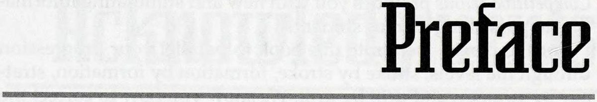
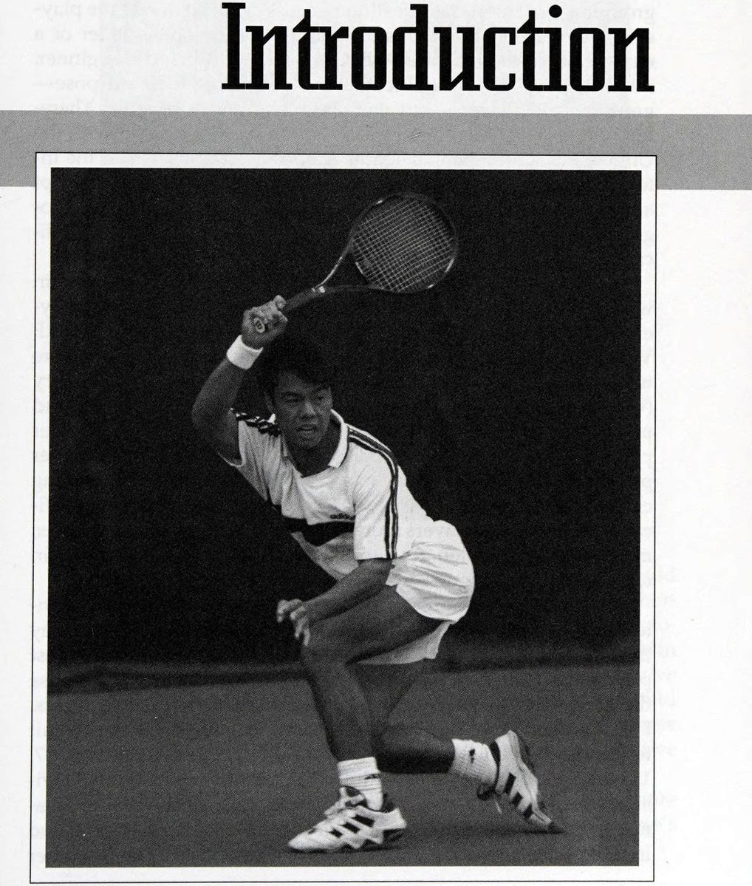
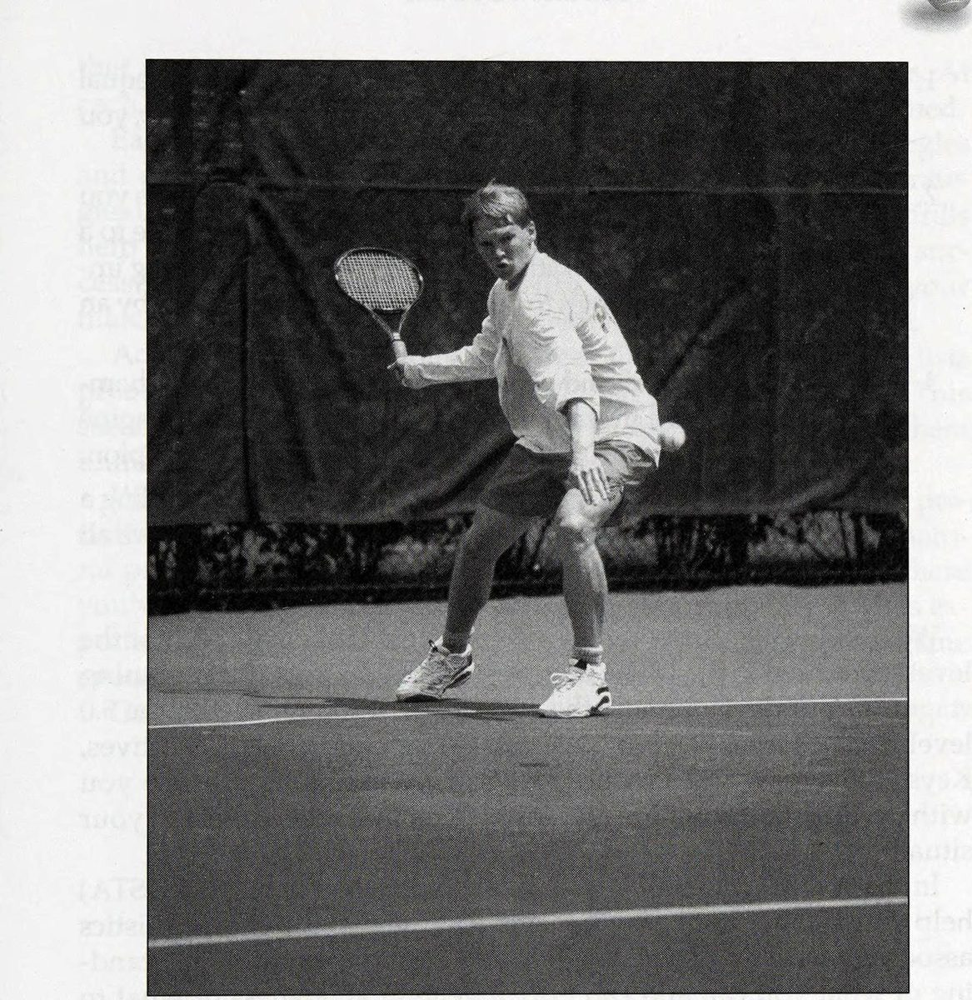
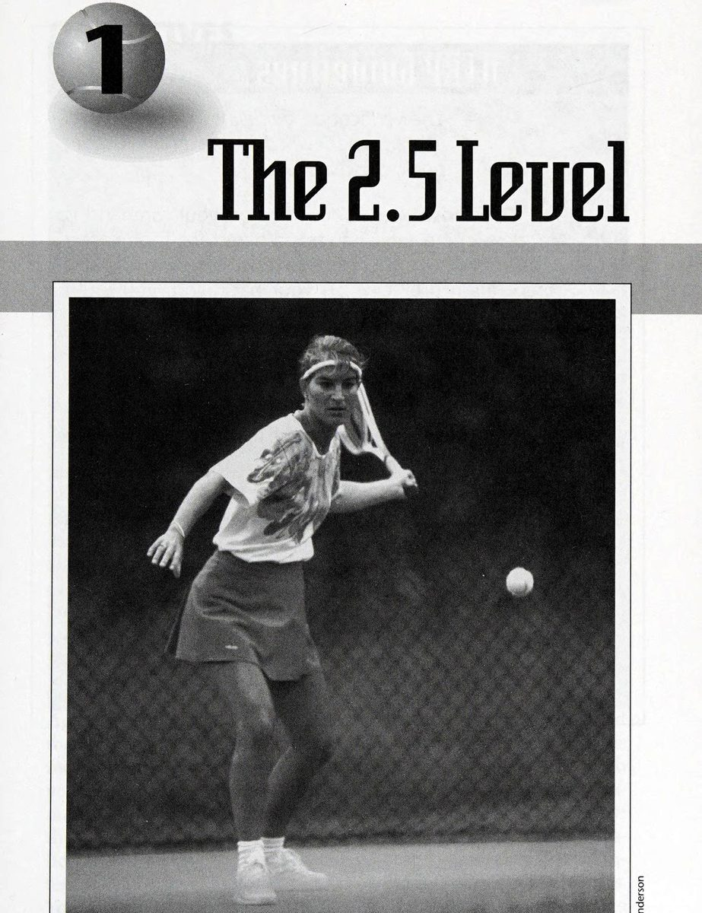
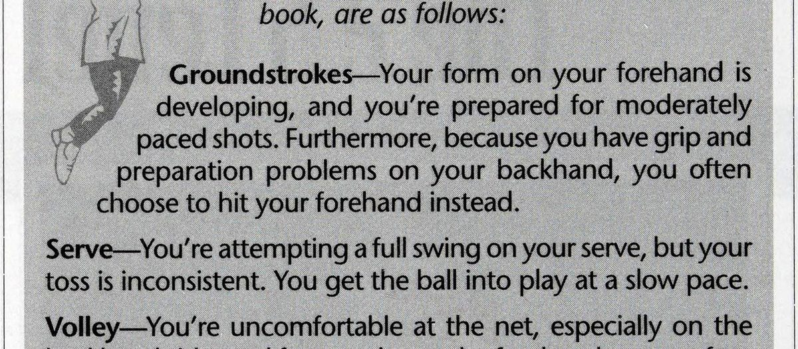
Chương 1: Trình độ 2.5
Mục tiêu của bạn với tư cách là người chơi trình độ 2.5 là cơ bản. Để thành công ở cấp độ của bạn và do đó tiến tới trình độ 3.0, bạn phải chinh phục năm nhiệm vụ. Bạn phải phát triển sự ổn định và ý định định hướng, học cách lốp bóng phòng thủ và cách trả bóng cao cũng như học cách chọn vị trí.
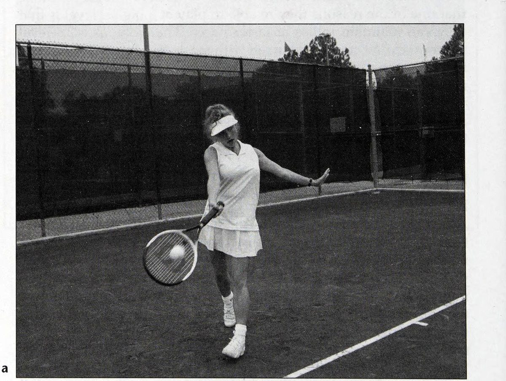
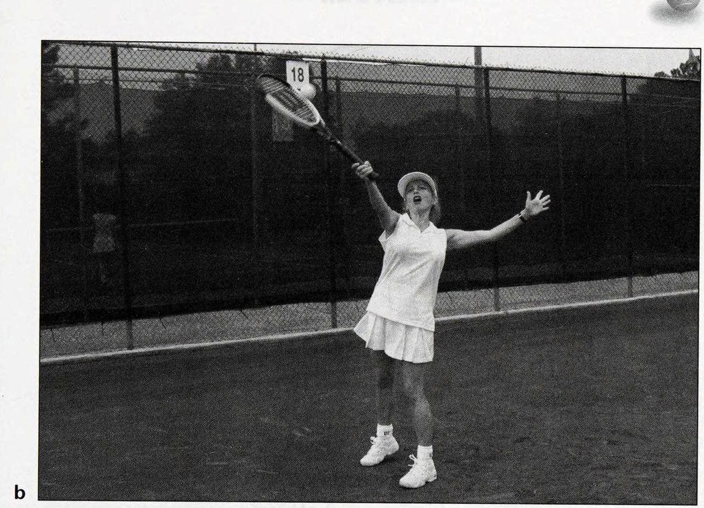
Phát triển sự ổn định ở các cú đánh cuối sân
Phát triển sự ổn định trong các bước đột phá của bạn, bởi vì chúng là nền tảng của lối chơi của bạn và là nền tảng cho tất cả các cấp độ khác. Sự ổn định chỉ đơn giản là khả năng giữ bóng trong cuộc của bạn.
Tuy nhiên, một thực tế phải được xác lập trước khi chúng ta có thể tiếp tục: Sức mạnh và sự ổn định không đồng nghĩa với những người chơi ở trình độ 2.5 đến 3,5 và, được cho là, những người chơi ở trình độ 4.0. Nếu người chơi ở những cấp độ này có thể đánh bóng mạnh một cách ổn định thì họ sẽ chơi ở cấp độ cao hơn. Bạn chỉ cần xem nguyên tắc NTRP dành cho người chơi ở trình độ 4.0 đến 4,5 để nhận ra rằng một trong những lý do khiến họ có thể chơi ở cấp độ cao hơn là vì họ có thể duy trì các pha giao bóng ở tốc độ nhanh hơn. Do đó, với tư cách là một người chơi trình độ 2.5, trước tiên bạn phải quan tâm đến việc nắm vững sự ổn định trước khi tăng tốc độ của quả bóng. Chúng tôi khuyên bạn nên đánh trong phạm vi sức mạnh thoải mái, có nghĩa là tìm một phạm vi sức mạnh mà trong đó bạn có thể đưa mọi quả bóng vào sân. Bạn sẽ thấy rất ít người chơi ở cấp độ cao hơn không ổn định trong các bước tiếp đất của họ, bởi vì tất cả các điểm đều bắt đầu từ vạch cuối sân.
Ý định định hướng có nghĩa là bạn có thể đánh bóng ở nơi bạn muốn.
Một lần nữa, sức mạnh không phải là câu trả lời. Khả năng di chuyển bóng quanh sân đánh đơn và giữ bóng tránh xa người chơi đánh lưới trong trận đánh đôi quan trọng hơn việc cố gắng áp đảo đối thủ. Mặc dù bạn có thể thắng hầu hết các trận đấu ở trình độ 2.5 bằng cách trở thành "bảng rổ con người", nhưng bạn phải bắt đầu học cách kiểm soát hướng bóng khi vẫn ở cấp độ này. Bạn sẽ không thể điều khiển bóng thành thạo vì bạn không thể nắm vững ý định định hướng ở trình độ 2.5. Nếu có thể, bạn đã không chơi quần vợt trình độ 2.5.
Khả năng điều khiển bóng của bạn chỉ giúp bạn có lợi thế một chút trong các trận đấu với những người chơi trình độ 2.5 khác và giúp bạn thuận lợi trên con đường trở thành người chơi trình độ 3.0.
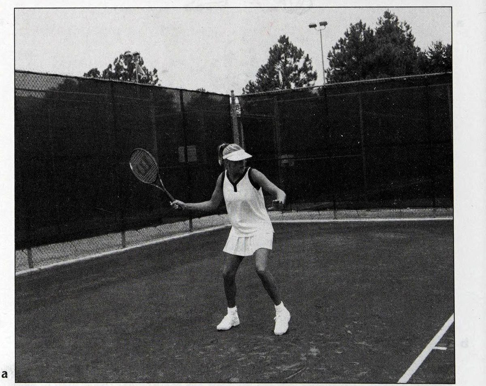
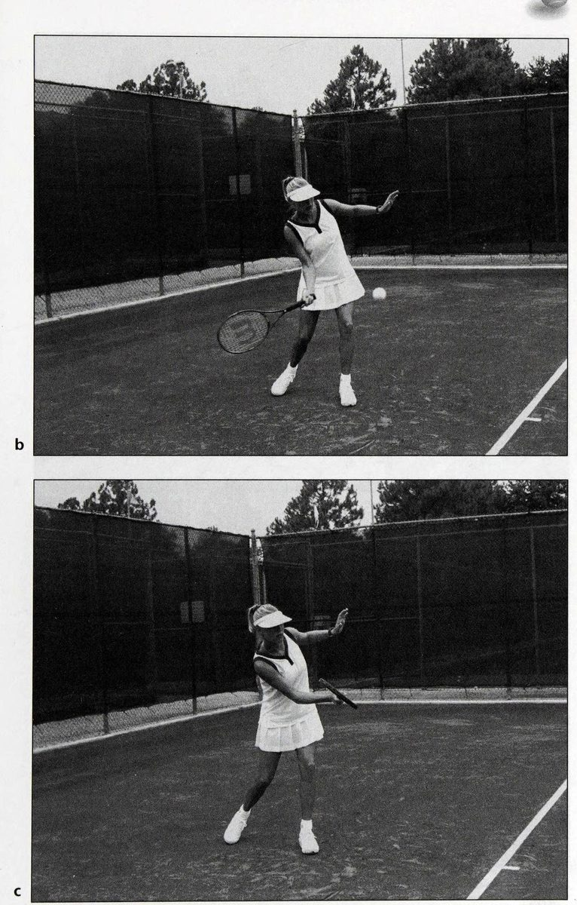
Học cách lốp bóng phòng thủ và đánh, đỡ bóng cao
Vì lốp bóng, đánh và trả bóng cao có liên quan với nhau nên chúng tôi sẽ đề cập đến cả hai vấn đề này trong phần này.
Cú lốp phòng thủ Chúng ta bắt đầu với cú lốp bóng phòng thủ. Khi thực hiện cú lốp bóng phòng thủ, mục tiêu của bạn là đưa bóng sâu vào phần sân sau. Để thực hiện được điều này, bạn phải chuẩn bị bóng ở phía trước để bạn có thể kiểm soát độ cao và độ sâu của cú lốp bóng của mình. Bạn kiểm soát cú lốp bóng bằng cách để bóng rơi xuống dưới mức vai, do đó bạn sẽ đánh xuyên qua quả bóng. Nếu bạn đánh bóng cao hơn vai, bạn sẽ không thể đánh bóng một cách ổn định (xem hình 1.1, a-b). Lưu ý rằng không phải lúc nào bạn cũng có thể giữ bóng trước mặt bằng một đường lốp bóng phòng thủ vì cú đánh này thường bị trúng đích khi bạn đang chạy. Tuy nhiên, đó là một điểm tham khảo tốt để bắt đầu học.
Hình 1.1a (a) Người chơi lốp bóng từ độ cao dưới vai (đúng mẫu).
Hình 1.1b — (b) Người chơi lốp bóng từ độ cao trên vai (hình thức không chính xác).
Giai đoạn thứ hai của cú lốp bóng phòng thủ bao gồm sự phối hợp của hai yếu tố: ảnh hưởng của góc mặt vợt của bạn và góc chuyển động hướng lên của cú đánh của bạn lên quỹ đạo của quả bóng. Để trở thành một người lốp bóng hiệu quả, bạn phải hiểu góc của mặt vợt khi va chạm ảnh hưởng như thế nào đến quỹ đạo của bóng.
Với góc vung vợt hướng lên không đổi, bạn càng mở mặt vợt thì vòng vợt của bạn càng cao và ngắn (xem hình 1.2a). Ngược lại, bạn càng khép mặt vợt thì vòng vợt của bạn càng thấp và dài hơn (xem hình 1.2b). Chúng tôi khuyên bạn nên bắt đầu ở góc 45 độ.
Nếu bạn giữ mặt vợt của mình ở một góc 45 độ, bạn có thể thử nghiệm góc vung vợt hướng lên trên quả bóng, đây là yếu tố thứ hai của cú lốp bóng phòng thủ. Góc vung vợt hướng lên trên có tác dụng tương tự như góc mặt vợt. Nếu bạn vung thẳng lên vào bóng, cú lốp bóng của bạn sẽ cao hơn và tiếp đất ngắn hơn trên sân (xem hình 1.3a). Ngược lại, nếu bạn vung thẳng qua quả bóng, cú lốp bóng của bạn sẽ thấp hơn và tiếp đất sâu hơn trong sân (xem hình 1.3b). Vì vậy, để điều chỉnh các đường bóng ngắn, hãy nghiêng mặt vợt một góc 45 độ và vung vợt nhiều hơn. Để sửa thùy đó là
Hình 1.2a-b (a) Người chơi thực hiện tiếp xúc trực diện với cú lốp bóng, đưa bóng lên trên. (b) Người chơi ít tiếp xúc trực diện hơn với cú lốp bóng, thể hiện quỹ đạo thấp hơn với góc vung không đổi.
Hình 1.3a-b (a) Người chơi đánh thẳng lên cao. (b) Người chơi đánh bóng theo chiều sâu với góc mặt vợt không đổi là 45°.
đi xa, bắt đầu mặt vợt ở góc 45 độ và vung bóng lên nhiều hơn. Điều quan trọng là giữ góc của mặt vợt không đổi để bạn chỉ phải lo lắng về cú vung vợt hướng lên trên chứ không phải cả hai biến số: cú vung vợt hướng lên và góc của mặt vợt.
Giai đoạn cuối cùng của cú lốp bóng phòng thủ là cú lốp bóng tiếp theo. Nhiều người mới bắt đầu sợ đánh bóng ra ngoài nên họ dừng việc theo đuổi ở cự ly ngắn và không cho bóng có cơ hội tiếp đất sâu (xem hình 1.4, a-c). Để bóng có đủ tốc độ tiếp đất sâu trong sân, bạn phải thực hiện một cú theo bóng dài (xem hình 1.5, a-c).
Chìa khóa của việc theo dõi là giữ tốc độ ổn định từ đầu đến cuối cú đánh. Điều này cho phép bạn thực hiện nhiều cú lốp bóng hơn khi chơi và dễ dàng kiểm soát độ sâu và hướng của chúng hơn. Cần phải luyện tập để trở nên thành thạo với cú lốp bóng phòng thủ, nhưng nếu bạn thử nghiệm ba giai đoạn của nó, bạn sẽ sớm tìm thấy một phạm vi trong đó bạn có thể lốp bóng hiệu quả.
Hình 1.4a-c Một pha lốp bóng phòng thủ được thực hiện ngắn gọn, không rõ ràng.
Hình 1.5a-c Cú lốp bóng phòng thủ theo sau đều đặn và dài.
Đánh và trả bóng cao Cũng giống như lốp bóng, đánh bóng cao cho đối thủ và trả bóng cao từ đối thủ đòi hỏi nhiều động tác bằng chân. Bạn phải chắc chắn rằng quả bóng luôn ở trước mặt bạn; nếu không bạn sẽ không cho mình cơ hội thực hiện cú vung vợt hoặc kiểm soát bóng thích hợp. Khi trả bóng cao, hãy lùi lại đủ xa để bạn có thể để bóng rơi xuống dưới độ cao ngang vai trước khi thực hiện cú đánh, giống như khi bạn trả bóng. Nếu bạn làm điều này, bạn sẽ có thể thực hiện cú đánh tiếp đất thông thường, đây là một cú đánh thoải mái và đáng tin cậy hơn. Đừng đánh bóng từ trên vai trừ khi bạn không còn lựa chọn nào khác, vì bạn sẽ mất đi độ chính xác và sự ổn định (xem hình 1.1b). Ngoài ra, khi đánh một quả bóng cao về phía đối thủ, hãy giữ góc mặt vợt của bạn khi tiếp xúc giống như khi đánh một cú đánh cuối sân nhưng vung lên với một góc sắc nét hơn (xem hình 1.6). Điều này giúp bóng bay cao hơn lưới và sâu hơn vào sân, khiến bóng nảy cao hơn về phía đối thủ. Nếu bạn có thể phát triển cú đánh này, bạn sẽ có vũ khí hiệu quả ở trình độ 2.5.
Hình 1.6 Cú đánh từ thấp đến cao để trả bóng cao với mặt vợt vuông góc với lưới.
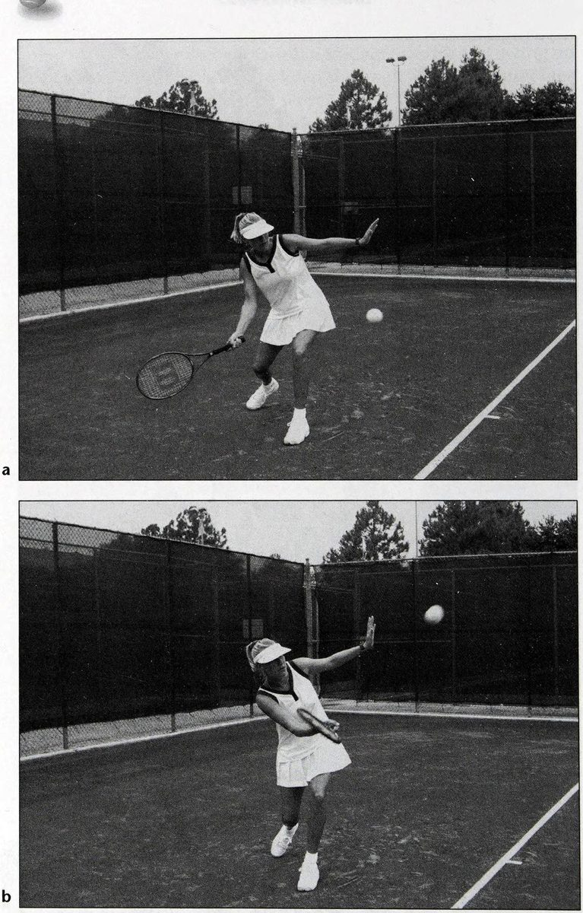
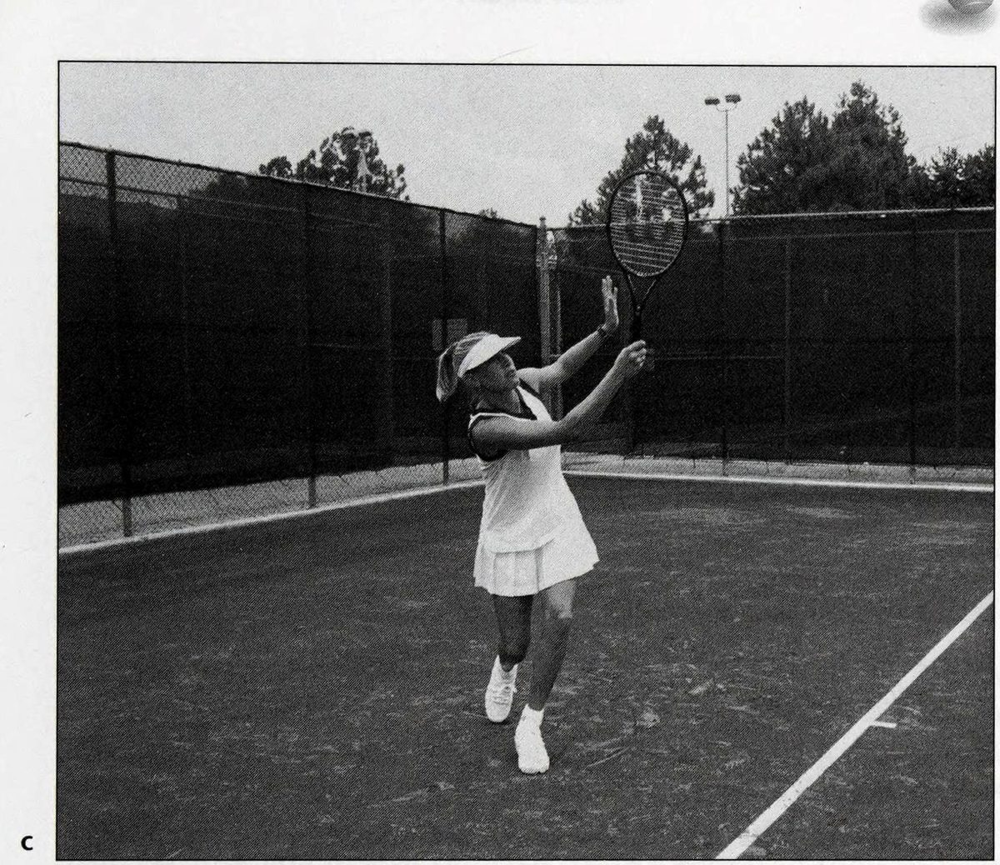
Học các vị trí xuất phát cơ bản cho đánh đơn và đánh đôi
Vị trí là vị trí đứng hoặc di chuyển trên sân trước hoặc trong một thời điểm để tạo cho bản thân cơ hội thành công tối đa. Mặc dù định nghĩa này bao gồm vị trí bắt đầu và chuyển động trong thời điểm, chúng tôi chỉ đề cập đến vị trí bắt đầu trong phần này. (Chuyển động được đề cập trong phần Chìa khóa thành công trong chiến lược.) Vì mọi điểm đều bắt đầu bằng một cú giao bóng và một cú trả bóng, nên trước tiên chúng tôi xem xét hai khía cạnh của việc định vị này.
Vị trí bắt đầu cho đánh đơn Khi giao bóng ở sân quảng cáo hoặc sân đối phương, đứng trong phạm vi 1 yard tính từ tâm điểm (người chơi A trong hình 1.7). Điều này ngay lập tức đặt bạn vào giữa sân sau khi bạn thực hiện cú giao bóng, đây là vị trí thích hợp để đánh bóng từ đường cuối sân. Sau khi giao bóng, đừng di chuyển vào vùng cấm (như phần lớn những người chơi trình độ 2.5 đều làm), bởi vì bạn sẽ không có đủ thời gian để phản ứng với cú trả bóng của đối thủ và có thể sẽ phải đánh một cú khó từ dây giày của bạn (xem hình 1.7). Thay vào đó, hãy đặt mình cách đường cuối sân 1 yard, điều này giúp bạn có đủ thời gian để phản ứng và cải thiện cơ hội thực hiện cú đánh dễ dàng hơn.
Hình 1.7 Vị trí giao bóng của người chơi A; vị trí trở lại của người chơi B. Khu vực bóng mờ là vùng đất cấm.
Khi trả giao bóng, hãy lùi lại đủ xa trong sân để có thể giữ bóng trước mặt. Điểm khởi đầu tốt cho lượt giao bóng là đứng gần vạch giao bóng hơn đối với một đấu thủ giao bóng ngắn và/hoặc mềm và gần đường biên ngang hơn đối với một đấu thủ giao bóng sâu và/hoặc mạnh. Vị trí bắt đầu này cho phép bạn kiểm soát bóng vì bạn có thể tiếp xúc với nó ở phía trước cơ thể. Hơn nữa, đây là cách luyện tập tốt cho các cấp độ trong tương lai, vì bạn sẽ có thể bước vào bóng và sử dụng trọng lượng của mình để tạo ra nhiều lực hơn. Ngoài ra, đứng 1 chân bên trong vạch đánh đơn (người chơi B trong hình 1.7). Điều này cho phép bạn che chắn tốt những quả bóng được đánh sang trái hoặc phải. Những vị trí đơn này là cơ bản nhưng cần thiết vì chúng là nền tảng để leo lên Thang NTRP.
Vị trí bắt đầu cho đánh đôi Vị trí bắt đầu giao bóng trong đánh đôi khác với đánh đơn vì bạn có mục tiêu khác. Trong nội dung đánh đôi, bạn chịu trách nhiệm về một nửa sân mà bạn đang giao bóng; do đó, bạn bắt đầu ở giữa điểm giữa và vạch đôi (người chơi A trong hình 1.8). Điều này đặt bạn vào giữa nửa sân của mình sau khi giao bóng, điều này giúp tối đa hóa khả năng của bạn trong việc bao quát khu vực trách nhiệm của mình.
Khi đối tác của bạn giao bóng, bắt đầu cách lưới 1 yard trong ô giao bóng ở nửa sân bên kia (người chơi B trong hình 1.8). Vị trí này gần hơn mức chúng tôi đề xuất cho bất kỳ cấp độ nào khác, bởi vì khả năng vô lê là điểm yếu ở trình độ 2.5. Cách lưới 1 yard khiến
Hình 1.8 Vị trí của người chơi khi đánh đôi.
thì cú vô lê sẽ dễ dàng hơn vì bạn chỉ cần tiếp xúc với bóng trong dây để giữ bóng tiếp tục chơi. Vì vậy, lối chơi trên mạng của bạn sẽ ổn định hơn.
Khi bạn đánh đôi trở lại, hãy lùi lại đủ xa trong sân để có thể giữ bóng trước mặt. Bạn làm điều này vì những lý do tương tự như khi bạn làm trong trận đấu đơn: để kiểm soát bóng và học cách chuẩn bị để tạo ra sức mạnh tốt hơn. Ngoài ra, hãy thiết lập bằng một chân trên vạch đánh đơn (người chơi C trong hình 1.8), bởi vì nó cho phép bạn che các quả bóng được đánh sang trái hoặc phải của mình một cách tốt bằng cách vô hiệu hóa chuyển động ra bên ngoài của người giao bóng đôi (người chơi A) so với người giao bóng đánh đơn thực sự (người chơi A trong hình 1.7).
Nếu bạn là đồng đội của người trả giao bóng, hãy đứng ở giữa vạch giao bóng trên nửa sân của bạn (người chơi D trong hình 1.8). Vị trí này giúp bạn hoàn thành được hai việc. Đầu tiên, nếu đồng đội của bạn (người chơi C) thực hiện cú trả bóng của anh ta vào người trên lưới (người chơi B), bạn sẽ cắt góc của người chơi B và cho mình cơ hội trả lại cú đánh của anh ta (người chơi D trong hình 1.9).
Thứ hai, bạn có thể gọi những cú giao bóng tốt hơn. Nếu bạn làm theo những vị trí xuất phát cơ bản này, bạn sẽ có cơ hội thành công cao hơn.
Chìa khóa thành công của người chơi trình độ 2.5 gồm ba phần. Bạn phải phát triển hình thức thích hợp trong các cú đánh tiếp đất và chuyển động giao bóng của mình, học cách thực hiện cú đánh trong phạm vi sức mạnh của mình và tìm hiểu chiến lược đánh đơn và đánh đôi cơ bản.
Hình 1.9 Người chơi D cắt các góc có thể có từ người chơi B.
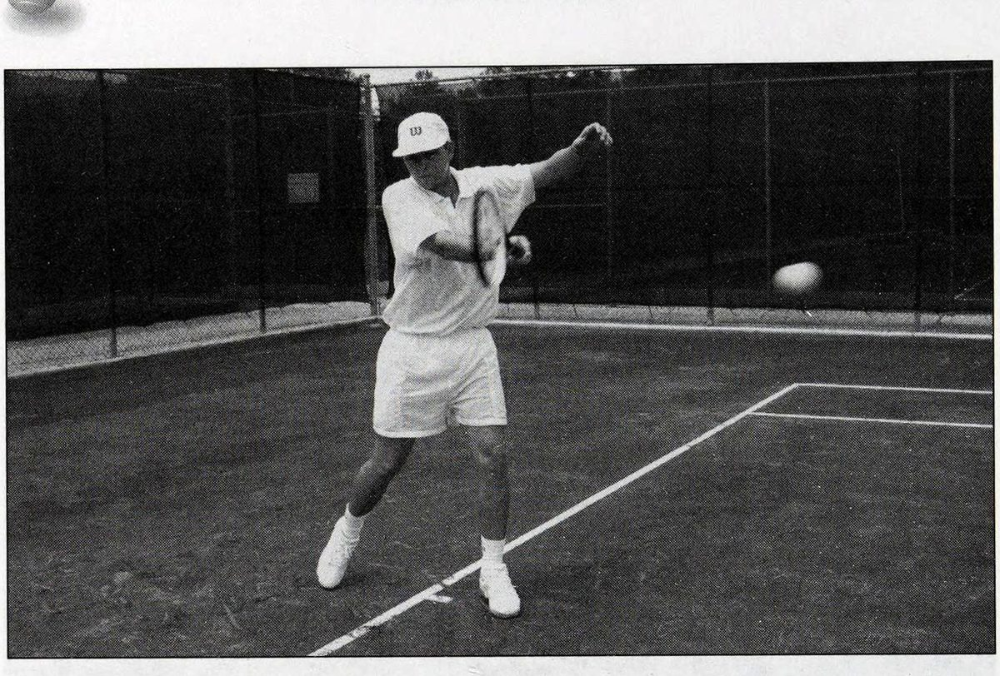
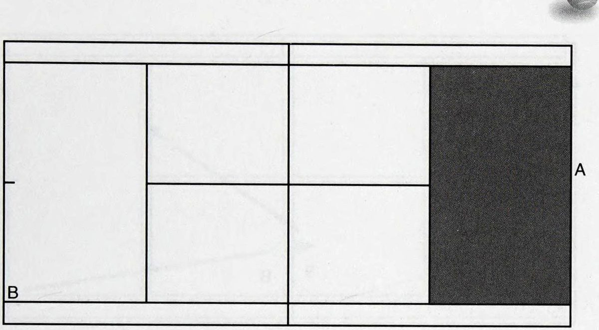
Phát triển động tác chuẩn ở các cú đánh cuối sân
Chúng tôi cố gắng cung cấp cho bạn những suy nghĩ để giúp bạn mở rộng kiến thức về dạng thích hợp và giúp bạn tự sửa nó. Nếu bạn có thể làm điều này, chúng tôi tin rằng bạn sẽ là người chơi trận đấu tốt hơn vì bạn sẽ có thể tự phân tích các lỗi của mình và từ đó sửa chúng trong các trận đấu của mình.
Khía cạnh đầu tiên của hình thức phải được giải quyết là động tác bằng chân. Động tác bằng chân chỉ đơn giản là thiết lập cùng một cách cho mỗi quả bóng. Ví dụ, trong một bài học tennis dành cho người mới bắt đầu, người chơi chuyên nghiệp thường đánh bóng hoàn hảo cho học sinh mọi lúc, điều này giúp học sinh đạt được thành công vừa phải. Tuy nhiên, nếu bóng bị đánh ra xa cô ấy, người mới bắt đầu thường gặp vấn đề vì cô ấy không biết cách bố trí bóng chính xác hoặc tiếp xúc với bóng ở đâu. Điểm tiếp xúc thích hợp để thực hiện các cú đánh tiếp đất là ở phía trước bàn chân bắt chéo của bạn và hơi chếch sang một bên cơ thể (để giúp cánh tay hoặc cánh tay của bạn có chỗ để mở rộng), giữa chiều cao đầu gối và ngực (xem hình 1.10). Do đó, mục tiêu của động tác chân của bạn là di chuyển bàn chân sao cho mọi quả bóng đều nằm trong khu vực đánh này. Bạn có thể thực hiện điều này bằng cách ghi nhớ ba bước đơn giản:
1. Luôn nhón chân lên vì nó giúp bạn bắt đầu bóng tốt.
2. Ban đầu hãy bước những bước dài để đảm bảo rằng bạn có thể tiếp cận được bóng, nhưng hãy thực hiện những bước ngắn, chập chờn và uốn cong đầu gối khi bạn đến gần. Điều này giúp duy trì sự cân bằng của bạn.
Hình 1.10 Người chơi tiếp xúc với bóng trong vùng đánh.
3. Giữ bóng trước mặt để bạn luôn có cơ hội đánh đúng cú đánh. Ví dụ: nếu quả bóng bay cách lưới 10 feet và sắp chạm đường biên ngang, nó sẽ nảy xa hơn đường biên ngang so với một quả bóng thấp hơn có cùng tốc độ.
Vì vậy, bạn phải lùi lại nhanh hơn và xa hơn để giữ bóng trước mặt. Điều này rất quan trọng vì việc đánh bóng đúng cách khi di chuyển về phía trước sẽ dễ dàng hơn so với khi di chuyển về phía sau, vì trọng lượng của bạn sẽ chuyển theo cú vung khi bạn di chuyển về phía trước. Ngược lại, trọng lượng của bạn tác động lên cú vung của bạn khi bạn lùi lại vì bạn cố đánh bóng theo hướng ngược lại với hướng chuyển động của cơ thể (xem hình 1.11).
Hình 1.11 Người chơi thực hiện cú đánh cuối sân bằng chân sau.
Nếu bạn thành công trong việc hoàn thành ba mục tiêu này, bạn có thể đánh liên tục, hướng bóng và tạo ra sức mạnh cho những cú đánh cuối sân của mình.
Chúng tôi giải quyết phần thứ hai của biểu mẫu bằng một phương pháp gọi là mẹo nhanh, mà người chơi có thể sử dụng để tự phân tích các lỗi vuốt bóng của mình.
Chúng tôi bắt đầu với các lỗi ở cú đánh cuối sân là những lỗi phổ biến ở trình độ 2.5.
Xác định lỗi ở cú đánh cuối sân
- Vấn đề—Bạn đang đánh bóng vào lưới.
- Giải pháp—Có thể bạn đang vung trực tiếp vào quả bóng. Để khắc phục điều này, hãy bắt đầu cú vung về phía trước của bạn thấp hơn quả bóng. Bạn có thể làm điều này bằng cách hạ thấp cú đánh ra sau và/hoặc uốn cong đầu gối của bạn nhiều hơn (xem hình 1.12). Điều này giúp bạn đi dưới bóng để đưa bóng lên không trung và qua lưới.
Hình 1.12 Người chơi bắt đầu cú đánh cuối sân bên dưới quả bóng với đầu gối cong.
- Vấn đề—Bạn đánh bóng dài.
- Giải pháp 1—Có thể bạn đang đánh với mặt vợt quá mở (hướng lên trên) (xem hình 1.13a). Trong trường hợp này, hãy giữ nguyên cú đánh của bạn nhưng hơi khép mặt vợt lại (xem hình 1.13b). Nếu bạn đã thực hiện thay đổi này và bóng vẫn bay ra ngoài, hãy đóng mặt vợt lại nhiều hơn và thử lại. Mẹo nhanh này giúp bạn giảm quỹ đạo cú đánh và đưa bóng vào sân ổn định hơn.
- Giải pháp 2—Nếu bạn đã đóng mặt vợt và không vung vợt quá mức, bạn có thể bị gãy cổ tay khi tiếp xúc, khiến bạn đánh bóng quá mạnh và mất kiểm soát. Vì vậy, hãy giữ chặt cổ tay của bạn khi tiếp xúc. Điều này giúp loại bỏ một số biến đổi trong cú đánh của bạn và giúp bạn đạt được những cú đánh cuối sân ổn định hơn.
- Vấn đề—Bạn đang gặp khó khăn trong việc định hướng bóng.
- Giải pháp—Có thể bạn không phù hợp với mục tiêu của mình. Trong trường hợp này, hãy căn chỉnh vai và hông của bạn song song với đường đi của mục tiêu. Ví dụ: nếu bạn là người thuận tay phải và muốn đánh một cú
Hình 1.13a-b (a) Người chơi tiếp xúc với bóng trong cú đánh cuối sân với mặt vợt mở. (b) Người chơi tiếp xúc với bóng trong cú đánh tiếp đất với mặt vợt ít mở hơn (đóng nhiều hơn).
Hình 1.14 Người chơi căn chỉnh cơ thể của mình theo mục tiêu trong cú đánh tiếp đất.
thuận tay theo đường dọc, căn chỉnh vai trái và hông trái của bạn với mục tiêu và vung về phía mục tiêu (xem hình 1.14).
Đây là điểm tham khảo tốt để bắt đầu học cách điều khiển bóng.
- Vấn đề—Khi bạn cố gắng đánh bóng dọc theo đường biên ngang, bạn đã đánh bóng ra xa.
- Giải pháp 1—Kiểm tra điểm tiếp xúc của bạn, vì có thể bạn sẽ đánh bóng muộn. Trong trường hợp này, hãy tiếp xúc với bóng sớm hơn trong cú swing (xem hình 1.15). Nó giúp bạn đánh chính xác hơn.
- Giải pháp 2—Nếu bạn đánh bóng đủ sớm, có thể bạn đang nhắm quá gần đường biên. Để khắc phục điều này, hãy nhắm 3 feet vào bên trong
Hình 1.15 Người chơi tiếp xúc với bóng ở phía trước chân phải trong cú đánh tiếp đất.
thay vì trực tiếp tại dòng. Điều này ngăn cản bạn cố gắng đánh một cú đánh quá tốt và giúp bạn giữ bóng trong cuộc.
Sử dụng những mẹo nhanh này trong khi luyện tập hoặc thi đấu sẽ giúp bạn hiểu rõ hơn về các cú đánh của mình và giúp bạn thoát khỏi một số điểm khó khăn!
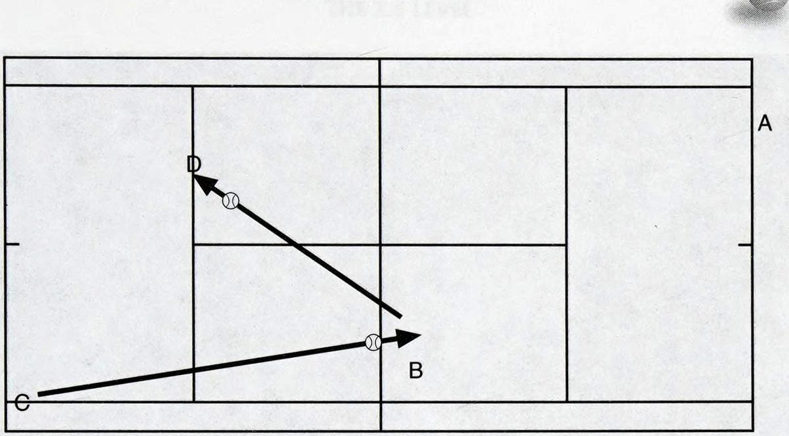
Phát triển động tác chuẩn ở động tác giao bóng
Việc phát triển hình thức thích hợp trong chuyển động giao bóng của bạn sẽ mang lại cho bạn thêm sức mạnh và khả năng kiểm soát. Chúng tôi chứng minh những điều cơ bản về giao bóng bằng cách sử dụng chuỗi hình sau.
Hình 1.16 minh họa thế đứng đúng đắn. Hai chân của bạn dang rộng bằng vai để giữ thăng bằng, bàn chân phải của bạn ở ngay phía sau bên trái (người chơi thuận tay phải) và cánh tay trái của bạn duỗi thẳng và chạm vào vợt.
Hình 1.17 chỉ cho bạn vị trí ném bóng. Bạn ném bóng ngay qua vai phải (1 giờ), cao nhất có thể và cách bạn khoảng 3 inch. Ném
Hình 1.16 Vị trí sẵn sàng bảo dưỡng.
Hình 1.17 Nơi ném bóng.
bóng qua vai phải của bạn là nơi tự nhiên nhất để đánh bóng và cho phép đạt được sức mạnh tối đa. Tiếp xúc với bóng ở độ cao tối đa mà bạn có thể với tới cho phép truyền lực tối đa từ việc thả lỏng cơ thể và mang lại cho bạn một góc nhìn xuống ô giao bóng tốt hơn. Cuối cùng, ném bóng 3 inch vào sân buộc bạn phải sử dụng trọng lượng cơ thể của mình khi giao bóng, giúp bạn có thêm lực. Ba yếu tố này kết hợp lại giúp bạn tạo ra nhiều sức mạnh hơn và cho bạn nhiều quyền kiểm soát hơn.
Hình 1.18, a-d, cho bạn thấy chuyển động tung bóng và giao bóng thích hợp.
Khi ném bóng, hãy giữ bóng bằng đầu ngón tay để kiểm soát tốt hơn, giống như vận động viên bóng rổ rê bóng bằng đầu ngón tay. Bạn bắt đầu động tác giao bóng bằng cách đồng thời thả tay và vợt xuống, sau đó bắt đầu tung bóng khi chúng tách ra (hình 1.18a). Khi điều này xảy ra, cánh tay của bạn sẽ chuyển sang vị trí chữ T hơi lệch. Khi cánh tay trái của bạn đến vị trí T, bạn tung bóng. Đồng thời, cánh tay phải của bạn bắt đầu uốn cong như thể bạn đang ném một quả bóng (hình 1.18b).
Sau đó, với cổ tay thả lỏng, bạn duỗi người hướng lên trên quả bóng và đạt đến đỉnh điểm cú vung vợt của mình bằng một cú búng cổ tay lệch xuống hộp (hình 1.18c). Cuối cùng, bạn đi theo sang bên trái cơ thể (hình 1.18d). Đây là những điều cơ bản của chuyển động dịch vụ. Hãy nhớ rằng cú giao bóng là cú đánh khó học nhất và cần nhiều giờ luyện tập để hoàn thiện nó. Chúng tôi khuyên bạn nên đánh hai rổ giao bóng trước khi luyện tập hoặc thi đấu.
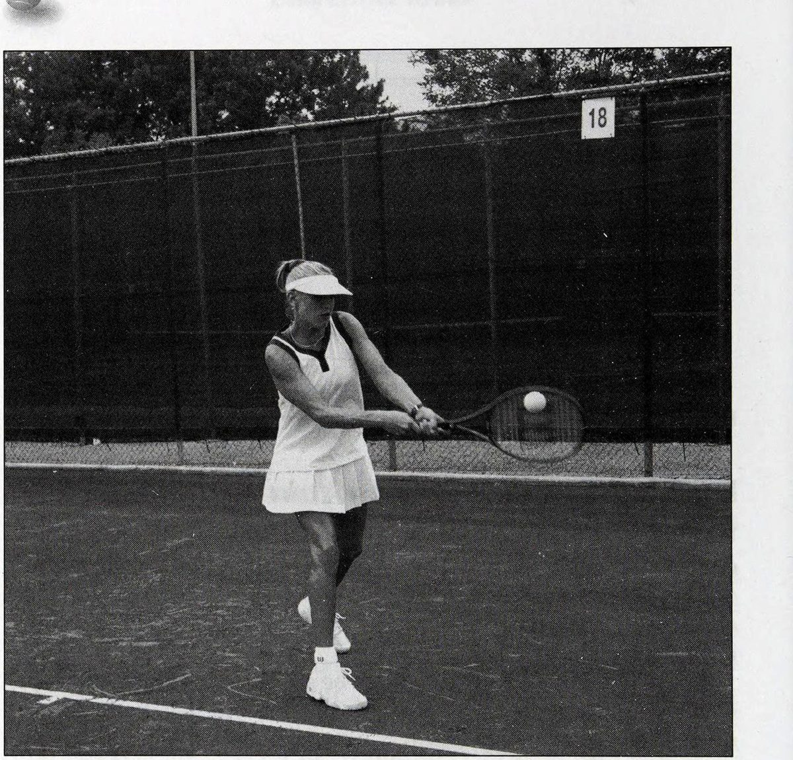
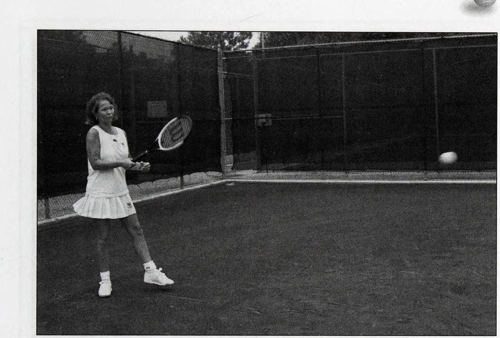
Đánh trong ngưỡng lực của bạn
Đánh trong phạm vi sức mạnh của bạn có nghĩa là đánh bóng mạnh nhất có thể trong khi vẫn giữ bóng trong mỗi cú đánh. Một lần nữa, sự ổn định được ưu tiên. Ban đầu, bạn không thể đánh bóng mạnh mà vẫn giữ được sự ổn định. Nhưng khi bạn thiết lập được tốc độ cú đánh mà bạn cảm thấy thoải mái, hãy thử nghiệm việc tăng tốc độ cú đánh của bạn trong thực tế. Bằng cách thử điều này trong thực tế, bạn sẽ trở nên thoải mái hơn với tốc độ tăng lên, điều bạn cần khi tăng thang NTRP. Một điều cần nhớ là việc cải thiện cú đánh hoặc tốc độ cần nhiều giờ luyện tập và làm việc chăm chỉ.
Ngoài ra, một số người có thiên hướng thể thao hơn những người khác và tiến bộ với tốc độ nhanh hơn, nhưng trong cả hai trường hợp, việc cải thiện đều đòi hỏi sự chăm chỉ và kiên nhẫn.
Hình 1.18a-d (a) Hai tay tách ra để tung.
(b) Vị trí chữ T hơi nghiêng. (c) Vợt hất bóng sau khi tiếp xúc.
(d) Theo dõi.
a N pi onl ud Dabs ol
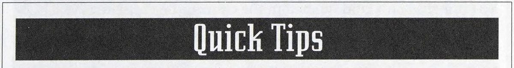
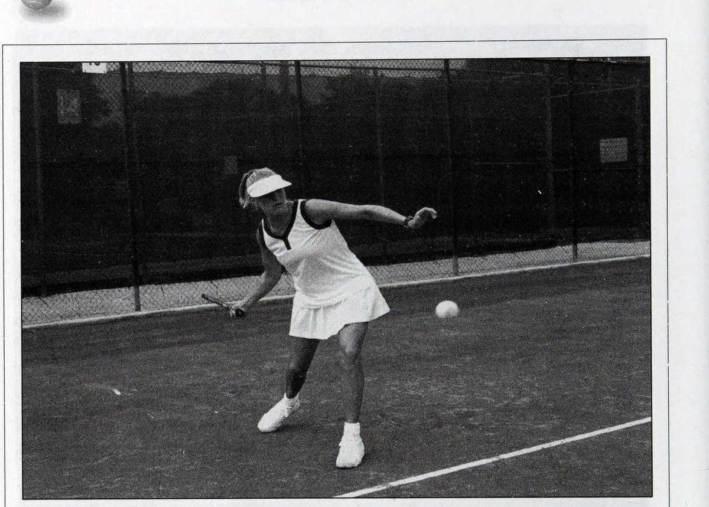
Học các chiến thuật cơ bản cho đánh đơn và đánh đôi
Các chiến lược cơ bản khi chơi đơn và đánh đôi trình độ 2.5 rất giống nhau. Cả hai đều yêu cầu lối chơi ổn định ngay từ đầu với mục đích thay đổi chiến lược của bạn khi cần thiết. Sự khác biệt chính là tinh thần đồng đội đôi cần thiết để phối hợp các chuyển động giữa bạn và đồng đội với các cú đánh của đối thủ.
Chiến lược đánh đơn Ở trình độ 2.5, hãy áp dụng cách tiếp cận thận trọng đối với chiến lược. Bạn không muốn bắt đầu trận đấu bằng cách cố gắng làm cho mọi việc xảy ra. Bắt đầu bằng cách đơn giản là giữ bóng ở bất kỳ vị trí nào trên sân. Đánh lại nhiều quả bóng hơn đối thủ của bạn. Nếu đối thủ của bạn đánh lại năm quả bóng, bạn sẽ đánh lại sáu quả bóng. Nếu đối thủ của bạn đánh lại 10 quả bóng, bạn sẽ đánh lại 11 quả bóng. Nếu chiến lược này không hiệu quả thì đó là một trong hai lý do. Hoặc là bạn không thực hiện chiến lược đúng cách, có nghĩa là bạn không nhận được mọi quả bóng trong cuộc, hoặc bạn đang thực hiện chiến lược đúng cách nhưng đối thủ lại giỏi hơn bạn, điều đó có nghĩa là bạn phải sửa đổi lối chơi của mình.
Bạn vẫn muốn giữ mọi quả bóng trong cuộc nhưng bạn phải thay đổi độ cao và tốc độ của quả bóng. Đầu tiên, hãy thay đổi độ cao của quả bóng, vì người chơi ở trình độ 2.5 gặp khó khăn với những quả bóng cao hơn. Hầu hết, họ đánh một quả bóng cao ngang vai hoặc cao hơn bằng cách vung vợt quá tay thay vì đánh cú đánh thông thường. Điều này dẫn đến sai sót và cuối cùng là ghi điểm cho bạn. Thứ hai, di chuyển đối thủ của bạn lên và trở lại sân bằng cách thay đổi tốc độ của quả bóng, điều đó không có nghĩa là bạn đánh mạnh hơn. Bạn đánh nhẹ nhàng hơn để đối thủ có nhiều cú đánh khác nhau để đối phó và phải di chuyển tiến và lùi để đánh bóng. Bằng cách này, bạn kiểm tra khả năng di chuyển bằng chân của anh ấy và đôi khi khiến anh ấy mất cảnh giác, điều này chuyển thành điểm dễ dàng cho bạn. Nếu bạn thực sự may mắn, anh ta sẽ vào lưới, trong trường hợp đó bạn sẽ đánh bóng ngay vào anh ta hoặc lốp bóng qua đầu anh ta.
Nếu việc giữ bóng trong cuộc và thay đổi độ cao cũng như tốc độ của bóng không thành công, lựa chọn thứ ba của bạn là tìm ra điểm yếu và khai thác nó. Ví dụ, nếu đối thủ của bạn có cú trái tay yếu, hãy tiếp tục đánh bóng về phía trái tay của anh ta. Đây là chiến lược khó thực hiện nhất vì bạn gặp khó khăn trong việc điều khiển bóng ở trình độ 2.5, nhưng hãy thử nếu không có chiến lược nào khác hiệu quả.
Nhìn chung, đây là những chiến lược cơ bản, nhưng bạn không cần phải quá cầu kỳ mới có thể giành chiến thắng ở trình độ 2.5.
Chiến lược nhân đôi
Vì người chơi trình độ 2.5 chưa thành thạo trên lưới nên chúng tôi đề xuất chiến lược một lên, một lùi. Đừng vào lưới vào đội hình hai người trừ khi bạn bị kéo vào bởi một cú đánh rất ngắn (nửa trong ô giao bóng) và không có lựa chọn nào khác (xem hình 1.19). Tránh đội hình hai người vì ở trình độ 2.5, bạn không thể bắt vô lê đủ tốt để giành điểm vào lưới một cách ổn định và rất khó để một thành viên trong đội của bạn lùi lại để lấy bất kỳ cú lốp bóng nào của đối thủ.
Hình 1.19 Người chơi A bị kéo vào khu vực ô giao bóng để trả bóng ngắn từ người chơi C.
Một lần, Một lần so với Một lần, Một lần. Trong phần đầu tiên của chiến lược đánh đôi này, chúng tôi sẽ chỉ cho bạn cách chơi đội hình một lên lưới, một lùi trước một đội khác chơi cùng đội hình. Trong đội hình một lên lưới, một lùi, người chơi lưới tiến về phía trước sau khi cú đánh của đồng đội cô ấy vượt qua người chơi lưới của đối thủ và lùi lại sau khi cú trả bóng của đối thủ vượt qua cô ấy (người chơi B và D trong hình 1.20).
Khi bạn di chuyển lên và lùi, bạn làm hai việc. Đầu tiên, khi di chuyển lên, bạn chen vào lưới (chơi cách lưới 1m) để bắt vô lê dễ dàng hơn. Đừng lo lắng về việc có ai đó lao qua đầu bạn, bởi vì đối tác của bạn có thể che chắn nó kể từ khi cô ấy trở lại vạch cuối sân.
(Nếu bóng được lốp qua đầu, bạn "đổi" bằng cách di chuyển chéo sang vạch giao bóng ở nửa sân bên kia để tránh bạn và đồng đội ở cùng một phía [người chơi B trong hình 1.21]. Trong tình huống này, người chơi D thực hiện lối chơi tương tự bằng cách tiến đến trong vòng 1 quả bóng.
yard tính từ lưới.) Thứ hai, nếu đối thủ của bạn đánh bóng chéo sân, khi quả trả giao bóng qua lưới cho đồng đội của bạn, bạn sẽ di chuyển về một phần ba sau của ô giao bóng. Bạn làm điều này vì mục tiêu của người chơi trình độ 2.5 chưa được phát triển tốt, vì vậy bạn muốn cho mình một cơ hội với bóng nếu đối tác của bạn đánh nó vào lưới. Yếu tố chi phối chuyển động ngang của người chơi trên lưới là cú đánh của đồng đội của cô ấy. Nếu cô ấy đánh bóng rộng vào hẻm, bạn, với tư cách là người lưới, che bóng và di chuyển về phía trước để có thể che hẻm của mình (người chơi D trong hình 1.22). Nếu bạn làm điều này, bạn đã sẵn sàng cho những cú vô lê của mình trên lưới và có thể buộc đối thủ phải đánh vào đối tác của bạn, điều này dẫn đến động tác cơ bản đầu tiên của bạn.
Hình 1.21 Người chơi C đánh qua đầu người chơi B. Người chơi A và B đổi bên và người chơi D di chuyển đến gần lưới hơn.
Hình 1.22 Người chơi C đánh bóng rộng tới người chơi A. Người chơi D di chuyển lên trên và hướng bóng che lối đi của mình (che bóng).
Đánh bóng lại một cách ổn định từ đường cuối sân đến đường cuối sân. Một lần nữa, hãy đánh lại nhiều quả bóng hơn đối thủ của bạn. Nếu chiến lược này không hiệu quả vì họ giỏi hơn hoặc bạn không thực hiện nó đúng cách, hãy lưu ý xem người chơi trên lưới của đội kia đang định vị mình ở đâu. Nếu cô ấy chơi trên đường giao bóng, điều này thường xảy ra vì nhiều người chơi trình độ 2.5 sợ bị bóng chạm vào, đánh bóng vào người chơi trên lưới, vì người chơi trình độ 2.5 không chuyền giỏi. Nếu chiến lược này không hiệu quả, hãy lốp bóng qua đầu người chơi trên lưới. Điều này buộc đối thủ của bạn phải đánh bóng cao từ đường cuối sân, một trách nhiệm đối với người chơi trình độ 2.5.
Một mặt, một mặt sau so với hai mặt sau. Các đội ở trình độ 2.5 không phải lúc nào cũng chơi theo đội hình một lên lưới, một lùi, vì vậy hãy lưu ý xem đối thủ của bạn đang chơi ở đâu. Nếu đối thủ của bạn đang chơi theo đội hình hai người lùi (cả hai người chơi ở cuối sân), hãy giữ đội hình một người lùi, một người lùi. Người chơi trong lưới vẫn cách lưới 1 yard trong toàn bộ thời gian và không di chuyển tiến và lùi vì anh ta không phải phòng thủ trước bất kỳ quả bóng nào đến từ một người chơi lưới khác.
Đúng hơn, anh ta di chuyển sang ngang theo hướng của quả bóng (người chơi B trong hình 1.23). Đội hình này dễ thi đấu hơn vì nó giảm áp lực cho người chơi cuối sân, người không cần phải giữ bóng khỏi lưới người chơi. Thay vào đó, anh ta có thể tập trung đánh lại nhiều hơn đối thủ một quả bóng.
Một lần, Một lần so với Hai lần. Nếu đối thủ của bạn đều đang chơi trên lưới khi họ có cơ hội, hãy tiếp tục dẫn trước,
Hình 1.23 Người chơi B chỉ di chuyển theo chiều ngang với bóng vì người chơi C và D ở đội hình hai người lùi.
đội hình một người lùi và đánh vào lưới các người chơi hoặc lốp bóng qua họ.
Trong tình huống này, người chơi trên lưới của bạn chơi ở một phần ba sau của ô giao bóng để phòng thủ trước bất kỳ quả bóng nào do người chơi trên lưới của đội kia đánh vào cô ấy. Nếu bạn giữ bóng trong cuộc, đây là một đội hình dễ bị đánh bại, bởi vì các người chơi trình độ 2.5 không đánh vô-lê hoặc đánh đầu liên tục và không đánh bóng tốt khi di chuyển.
Đội hình hai lưng. Đội hình cuối cùng là đội hình hai lưng.
Để thành công với đội hình này, hãy tập trung đánh lại mọi quả bóng và không mắc bất kỳ sai lầm nào. Để đội kia mắc lỗi, dẫn đến việc họ "đánh bại chính mình". Hãy thử đội hình này (a) nếu người chơi cuối sân của bạn đánh quá nhiều bóng vào lưới người chơi của đội kia và bạn đang thua trận vì điều đó, hoặc (b) nếu bạn mắc quá nhiều lỗi trên lưới và thua trận vì lỗi đó.
Hãy nhớ rằng, bạn muốn chơi đội hình một lên lưới, một lùi nếu có thể, bởi vì đó là đội hình dễ chơi nhất để bạn chơi và chuẩn bị cho bạn các cấp độ NTRP cao hơn bằng cách giới thiệu cho bạn lối chơi trên mạng.
Những chiến lược này mang đến cho bạn cơ hội thành công cao hơn vì bạn sẽ chơi quần vợt an toàn (percentage tennis) ở trình độ 2.5.
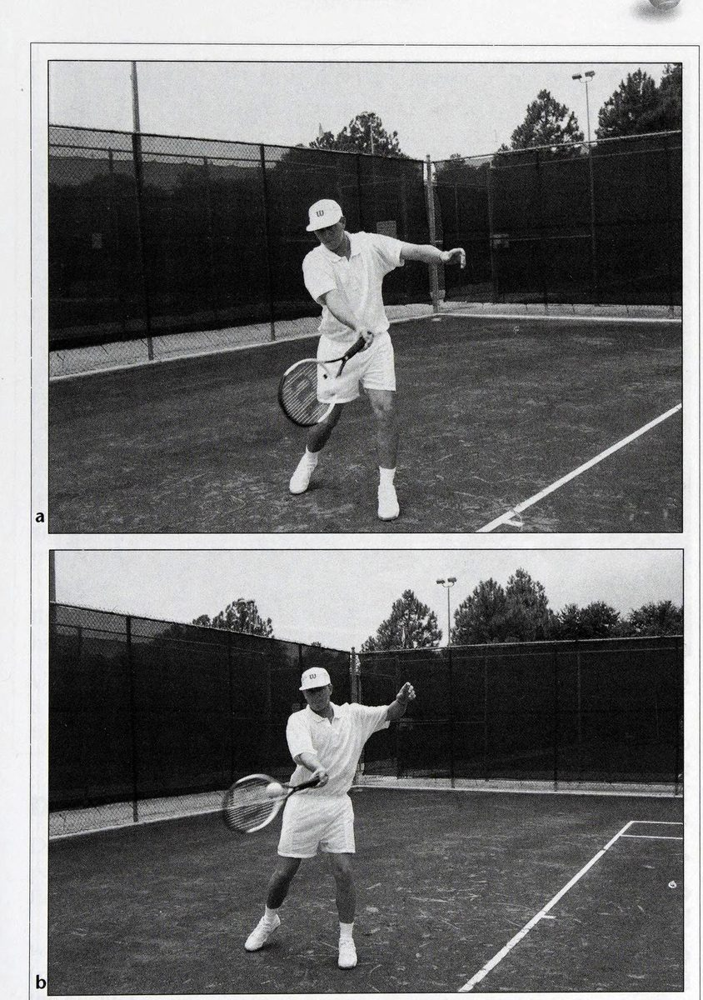
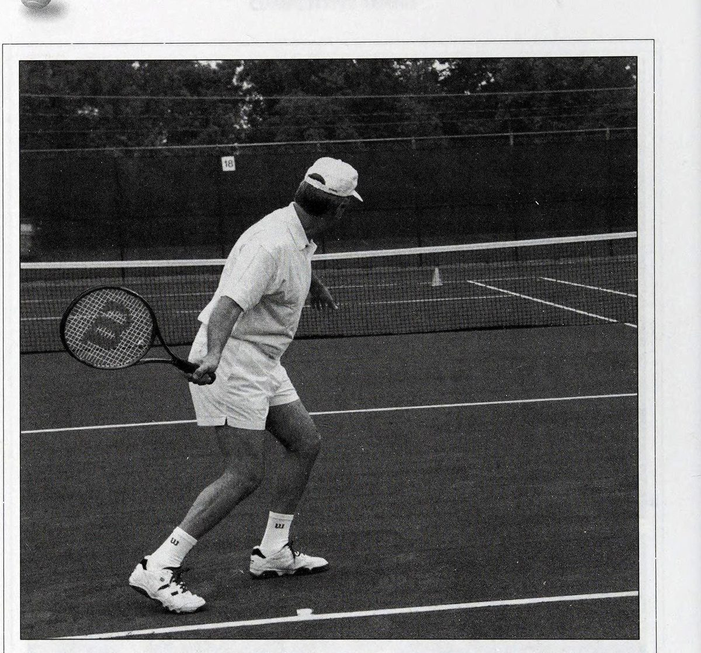
CÁC BÀI TẬP LUYỆN
Lối chơi mạng không phù hợp ở trình độ 2.5. Nó trở nên quan trọng hơn ở trình độ 3.0, do đó nó sẽ được đề cập trong chương đó. Tất cả các bài tập mà chúng tôi đề xuất đều là các bài tập cơ bản, vì bạn phải là người vững vàng.
người chơi cơ bản để thành công ở trình độ 2.5 và các cấp độ tiếp theo.
Cách tốt nhất để luyện tập phát triển các cú đánh cuối sân của bạn là sử dụng máy bóng, vì bóng đến với bạn theo cùng một cách mọi lúc và sự ổn định này giúp bạn phát triển cảm giác về các cú đánh của mình. Một cách luyện tập khác là luyện tập. Khoan đang tập trung vào một hoặc hai khía cạnh của lối chơi quần vợt của bạn thông qua sự lặp lại, thường là với hai người chơi trở lên; tuy nhiên, các bài tập có thể được thực hiện bằng máy bóng hoặc dựa vào bảng sau. Nếu bất kỳ bài tập nào dành cho hai người sau đây quá khó, chúng tôi khuyên bạn nên thực hiện riêng lẻ bằng máy bóng. Nó giúp bạn phát triển cú đánh và tự tin vào khả năng thực hiện bài tập của mình. Sau khi bạn cảm thấy thoải mái hơn với khả năng của mình, hãy thử lại với đối tác. Mỗi lần tập bạn thực hiện sẽ kéo dài khoảng 10 đến 15 phút.
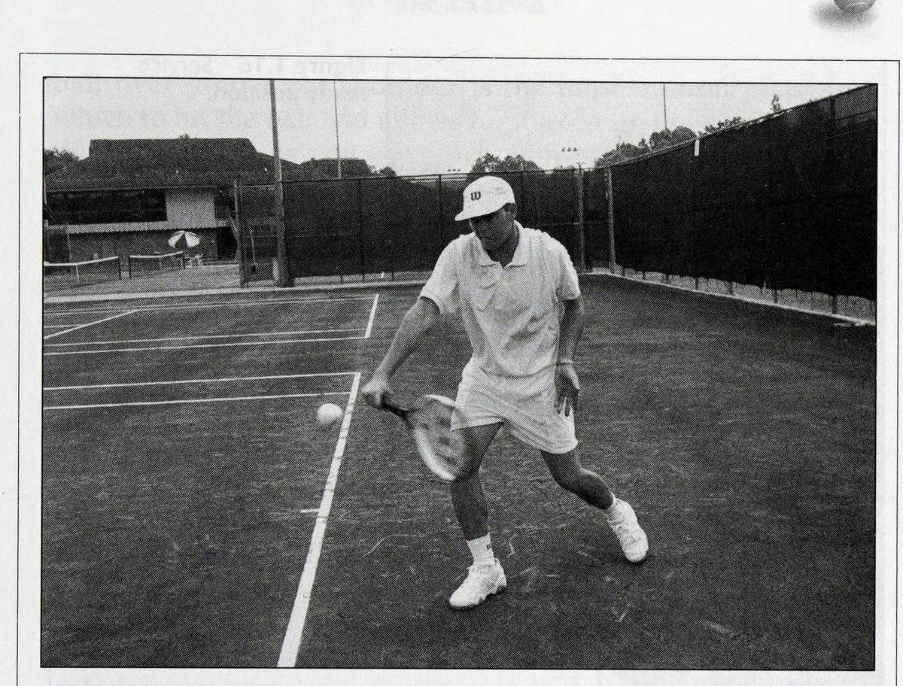
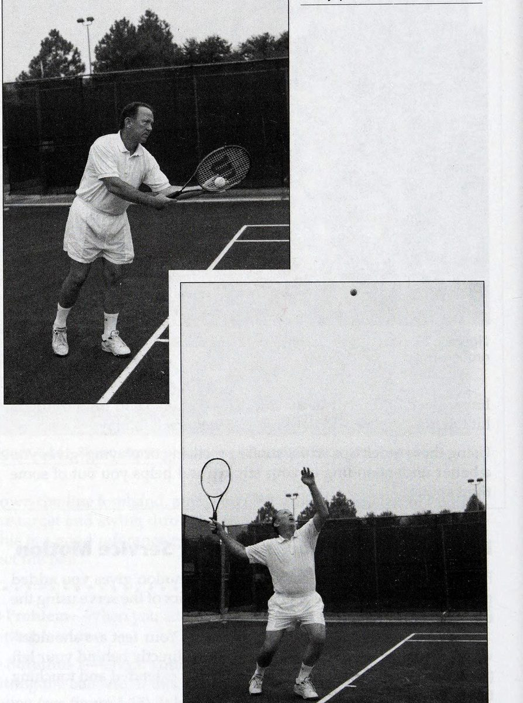
Bài tập đánh đơn
Sau đây là các bài tập cơ bản nhằm củng cố động tác cú đánh cuối sân và chiến lược đánh đơn cơ bản mà chúng tôi đã mô tả trong phần Mục tiêu và Chìa khóa thành công.
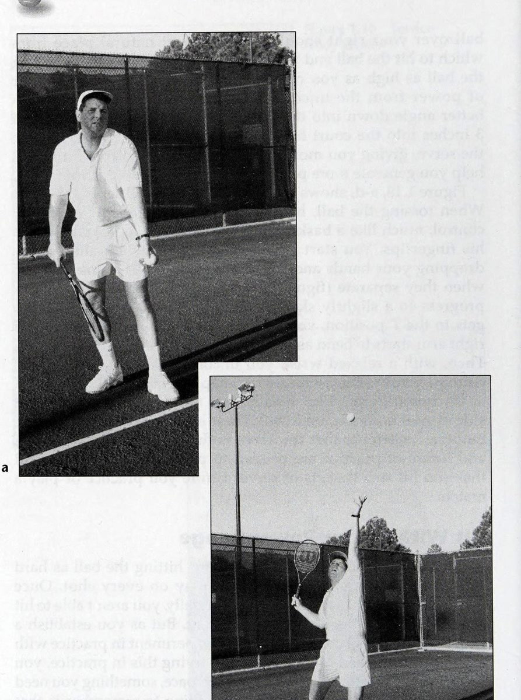
Bài tập đánh qua lại (rally)
Bài tập này phù hợp với chiến lược đánh đơn cơ bản đầu tiên của chúng tôi. Bạn và đối tác tập luyện của bạn đứng ở hai đầu đối diện của sân ở điểm giữa, cách đường biên ngang 1 yard. Một trong các bạn bắt đầu chơi bóng và trọng tâm của bạn trong bài tập là giữ bóng trong cuộc (hình 1.24).
Đừng cố gắng đánh cú ghi điểm trực tiếp, đặt bóng hoặc vào lưới. Mối quan tâm chính của bạn là đánh bóng trở lại sân một cách an toàn. Hãy cho mình một ít
Hình 1.24 Cuộc tập trận trong đó cả hai người chơi cố gắng giữ bóng trong cuộc.
mục tiêu cần đạt được. Ví dụ, mỗi bạn cố gắng đánh năm quả bóng qua lưới. Khi bạn đạt được mục tiêu của mình, hãy tăng chúng để bạn luôn có điều gì đó để phấn đấu.
Sau khi bạn đã thành thạo trong việc giữ bóng trong cuộc, hãy bắt đầu cố gắng thay đổi độ cao và tốc độ của bóng, chiến lược cơ bản thứ hai của chúng ta. Hai bài tập tiếp theo sẽ giúp bạn hoàn thành mục tiêu này.
Máy khoan bóng cao —
Bài tập này giúp bạn đánh bóng cao về phía đối thủ và trả lại bóng cao từ đối thủ. Cả hai đấu thủ đều xuất phát ở hai đầu sân đối diện, cách vạch giữa đường cuối sân 1 yard (xem hình 1.24).
Sau khi một đấu thủ đưa bóng vào sân, hãy duy trì một pha giao bóng bằng cách đánh bóng qua lưới ở độ cao 5 feet hoặc cao hơn. Hãy nhớ rằng, khi đánh một quả bóng cao tới đối tác khoan của bạn, hãy vung lên với một góc sắc nét hơn bình thường trong khi vẫn giữ mặt vợt vuông góc với lưới. Khi trả bóng cao từ đối tác khoan của bạn, hãy lùi lại đủ xa để giữ bóng ở phía trước bạn. Sau đó để bóng rơi xuống dưới độ cao ngang vai và thực hiện cú đánh bình thường. Lưu ý rằng bạn phải kiễng chân và di chuyển chân thật nhanh để thực hiện thành công bài tập này. Bài tập này rất đơn giản nhưng cực kỳ hữu ích cho việc kiểm soát bóng và động tác bằng chân.
Mũi khoan bóng ngắn"
Bài tập này được thiết kế để giúp bạn học cách thay đổi tốc độ trên bóng. Cả hai người chơi đều bắt đầu ở các vị trí giống như đối với High Ball Drill. Người chơi A đưa một quả bóng có nhịp độ trung bình cho người chơi B, người này sẽ trả lại bóng bằng cách đánh một cú đánh với tốc độ từ một nửa đến ba phần tư. Điều này làm cho bóng rơi xuống sân ngắn hơn (xung quanh đường giao bóng) (xem hình 1.25). Học cách đánh này rất quan trọng vì nó kéo đối thủ của bạn vào thế không thoải mái và có thể mang lại nhiều điểm hơn cho bạn. Người chơi A tập chạy về phía trước để đánh bóng ngắn. Điều này giúp trẻ học cách đánh bóng khi di chuyển về phía trước và chạy. Sau khi người chơi A lấy được bóng, anh ta quay trở lại vạch cuối sân để thực hiện cú đánh tiếp theo.
Hai bài tập tiếp theo là các bài tập kiểm soát bóng cụ thể hơn giúp bạn khai thác điểm yếu của đối thủ, bài đánh đơn cơ bản thứ ba của chúng tôi
Hình 1.25 Bài tập bóng ngắn với người chơi A đưa bóng cho người chơi B, người này đánh một cú trả bóng ngắn để kéo người chơi A vào giữa sân. Người chơi A quay trở lại vạch cuối sân sau khi đánh.
chiến lược. Những bài tập này khó hơn ba bài tập trước, vì vậy bạn phải kiên nhẫn trong khi cố gắng duy trì nhịp điệu. Bạn sẽ đạt được nhiều thành công hơn trong các bài tập này nếu bạn ở mức trên của trình độ 2.5.
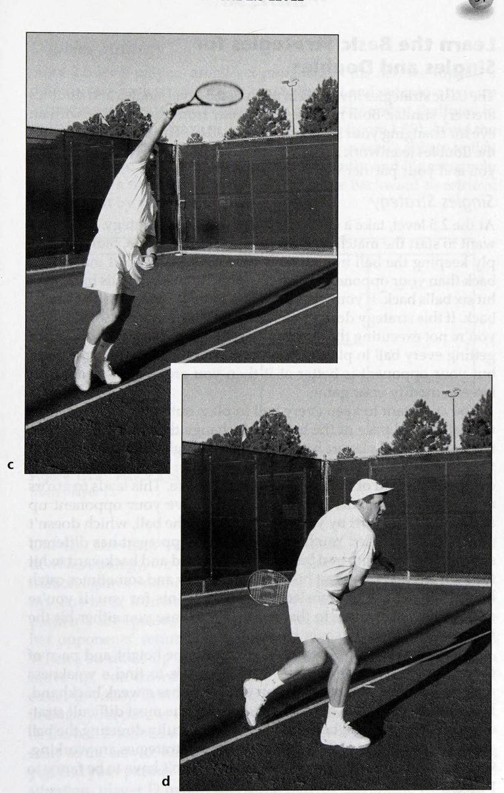
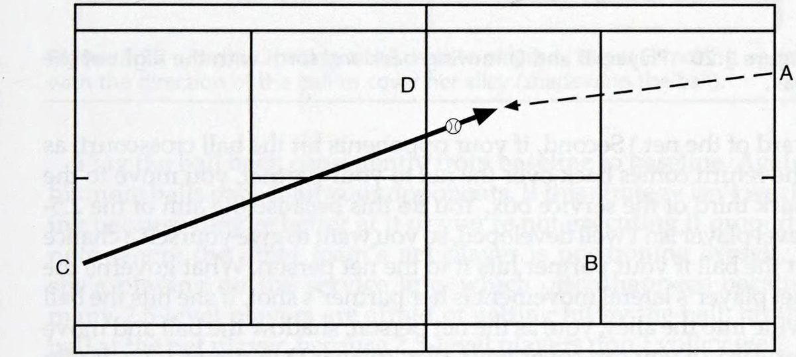
Bài tập đánh đơn chéo sân thuận tay và trái tay
Bắt đầu với cả hai đấu thủ ở hai đầu đối diện trong sân deuce (ở bên phải vạch giữa khi đối diện với lưới), 1 yard ở bên phải vạch giữa và 1 yard sau đường cuối sân. Trong bài tập này, sau khi một đấu thủ bắt đầu đánh bóng, bạn đánh bóng chéo bàn, từ thuận tay đến thuận tay, cho đến khi một trong các bạn đánh trượt (xem hình 1.26). (Đây là quan điểm của người thuận tay phải và ngược lại đối với người thuận tay trái.) Khi cố gắng đánh bóng chéo sân, bạn phải bắt bóng sớm hơn và nhiều hơn ở phía trước chân chéo của mình (chân trái đối với người thuận tay phải). Để thực hiện điều này, hãy căn chỉnh vai trái và hông trái của bạn với mục tiêu chéo sân, khiến cơ thể bạn hơi mở. Sau đó chuyển sang mục tiêu mong muốn của bạn.
Tiếp theo, di chuyển đến sân quảng cáo (ở bên trái dấu giữa) và thực hiện tương tự với trái tay của bạn. Khi đánh trái tay chéo sân, việc bắt đầu bài tập bằng cú đánh thuận tay sẽ dễ dàng hơn.
Bài tập này giúp bạn làm quen với một số cú đánh cơ bản của cả lối chơi đánh đơn và đánh đôi. Hãy nhớ rằng, bài tập này khó hơn
Hình 1.26 Bài tập đánh đơn thuận tay chéo sân với người chơi A và B tập hợp chéo sân bằng các cú thuận tay của họ. Đảo ngược cho bài tập đơn trái tay chéo sân.
ba điều đầu tiên và cần nhiều thời gian hơn để làm quen, vì vậy hãy lạc quan và tiếp tục cố gắng.
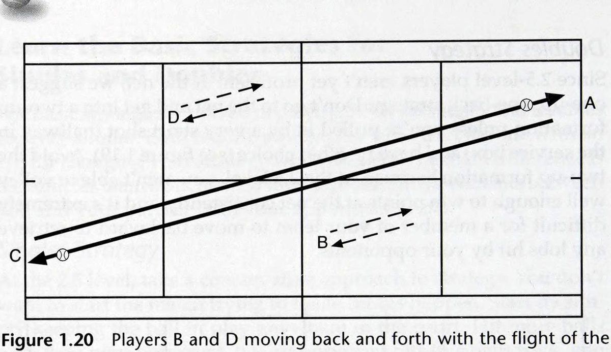
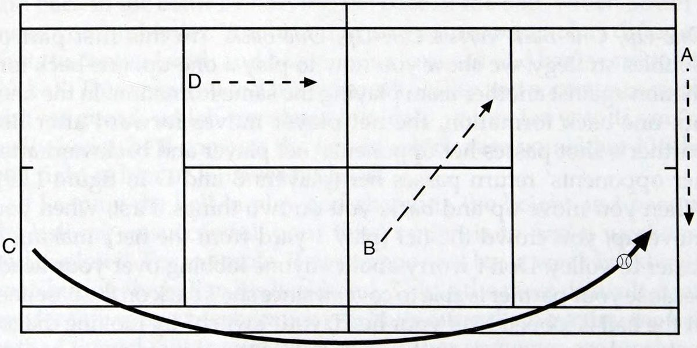
Bài tập đánh dọc biên
Trong bài tập này, cả hai đấu thủ di chuyển 1 yard về cùng một phía của điểm giữa và xuất phát sau đường cuối sân 1 yard. Bạn đánh bóng dọc theo đường biên, do đó một người đánh thuận tay và người kia đánh trái tay (xem hình 1.27). Mục tiêu của bạn là sự ổn định về số lượng bóng bạn giữ trong cuộc và hướng đánh của bạn. Hãy nhớ những lời khuyên nhanh nếu
Hình 1.27, Bài tập dọc với người chơi A đánh thuận tay và người chơi B đánh trái tay. Đảo ngược về phía bên trái của sân.
bạn đang đánh bóng đi chệch cột dọc. Kiểm tra điểm tiếp xúc của bạn để đảm bảo rằng bạn đánh bóng đủ sớm, điều này giúp bạn tránh được lỗi rộng. Ngoài ra, hãy đảm bảo rằng bạn không nhắm bóng ngay trên vạch vôi. Bạn muốn bóng tiếp đất 1 yard bên trong vạch đánh đơn trong khi không vung quá xa về phía đó của sân. Sau khi bạn đã luyện tập một cách trong 10 đến 15 phút, hãy chuyển đổi và thử theo cách khác. Nếu bạn đánh thuận tay dọc theo đường biên, hãy đánh trái tay và ngược lại.
Hai bài tập cuối cùng này được các người chơi ở mọi cấp độ thực hành và rất khó, nhưng chúng cần thiết để học cách kiểm soát bóng. Nếu bạn không thể duy trì được đường bóng trong các bài tập này, hãy sử dụng máy bóng để thực hiện các cú đánh định hướng của bạn. Ví dụ, để thực hành cú đánh chéo bàn thuận tay, hãy xếp máy bóng hướng về phía sân chéo (giống như đối thủ của bạn sẽ đánh bóng trong mũi khoan) và đánh bóng chéo bàn khi họ đi qua. Sử dụng máy bi giúp bạn khoan hiệu quả hơn. Sau khi bạn trở nên khá thành thạo những bài tập này, bạn đã sẵn sàng chuyển sang trình độ 3.0.
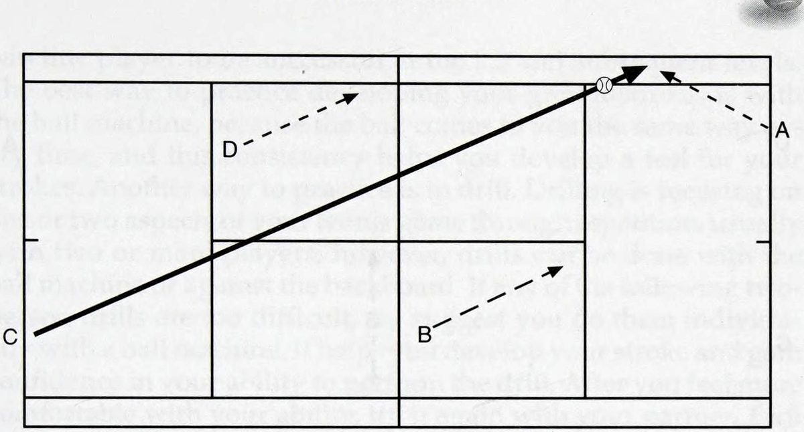
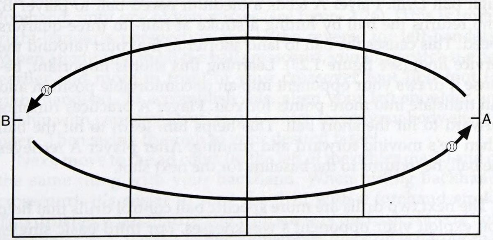
Bài tập đánh đôi
Các bài tập sau đây là các bài tập cơ bản, lưới và định vị giúp củng cố động tác cú đánh cuối sân và chiến lược đánh đôi cơ bản mà chúng tôi đã giới thiệu cho bạn trong phần Mục tiêu và Chìa khóa thành công.
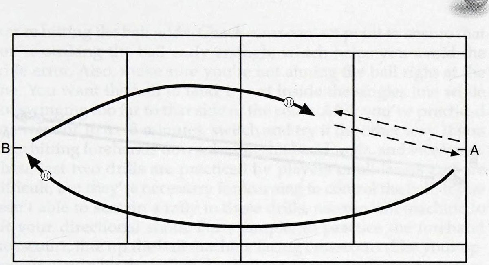
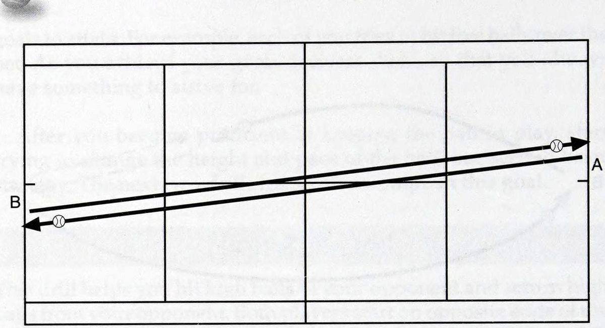
Bài tập đánh đôi chéo sân
Về cơ bản, bài tập này giống như Bài tập đánh đơn thuận tay và trái tay chéo sân mà bạn đã thực hiện trong phần đánh đơn. Vì chúng tôi ủng hộ đội hình một lên lưới, một lùi, nên với tư cách là người chơi ở cuối sân, bạn bắt buộc phải đánh bóng chéo sân một cách ổn định. Nếu không, bạn sẽ mất điểm nếu đánh vào lưới của một đội có trình độ 2,5 tốt và bạn không tạo điều kiện cho đối tác của mình vào lưới để thực hiện cú tung bóng dễ dàng. Bạn có thể thực hành bài tập đánh đôi này với hai hoặc bốn người chơi, nhưng bạn sẽ sử dụng thời gian trên sân hiệu quả hơn với bốn người chơi. Với hai người chơi, mỗi người trong số các bạn đứng ở vị trí trên vạch đánh đơn ở bên phải vạch giữa sân và đánh bóng chéo sân.
Bằng cách định vị bản thân trên vạch đơn, thay vì giữa vạch trung tâm và vạch đôi, bạn sẽ dễ dàng điều khiển bóng chéo bàn bằng thuận tay và trái tay, bởi vì cơ thể của bạn hầu như luôn thẳng hàng một cách tự nhiên với mục tiêu của bạn (xem hình 1.28).
Sau khi thực hiện việc này được 10 phút, hãy đổi bên sân và đánh theo cách khác, sân đấu này đến sân đấu quảng cáo khác. Khi bạn trở nên chuyên nghiệp
Hình 1.28 Bài tập chéo sân đôi với người chơi A và B thực hiện các cú thuận tay và trái tay chéo sân.
thành thạo kỹ thuật này, bạn đang dần tiến lên trình độ 3.0.
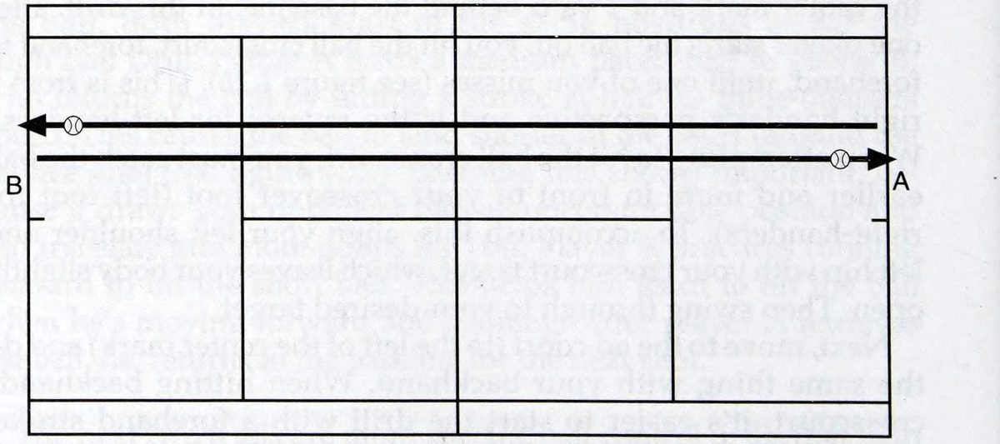
Bài tập giao bóng – đỡ giao bóng
Bài tập này bao gồm việc giao bóng và trả bóng, đó là cách mọi điểm bắt đầu. Một lần nữa, bạn chỉ cần hai người cho bài tập này. Người giao bóng bắt đầu ở giữa điểm giữa và vạch đôi (vị trí xuất phát giống như trong phần định vị đôi). Người trả bóng bắt đầu lùi lại đủ xa để có thể giữ bóng ở phía trước mọi lúc (điểm xuất phát giống như trong phần định vị đôi).
Máy chủ tập trung vào việc đưa bóng vào sân theo đúng hình thức. Một nguyên tắc nhỏ khi giao bóng là đưa hai tay xuống và giơ lên cùng nhau, sau đó vung lên theo bóng, như được mô tả trong phần Chìa khóa thành công về giao bóng. Người trả bóng tập trung vào việc đánh bóng ngược chiều. Nếu bạn giữ bóng trước mặt, bạn sẽ không gặp khó khăn gì khi đạt được mục tiêu này. Khi người trả bóng đánh bóng ngược chiều, đừng tính điểm. Thay vào đó, hãy lặp lại bài tập. Sau khi một trong các bạn giao bóng được 5 phút, hãy đổi vị trí.
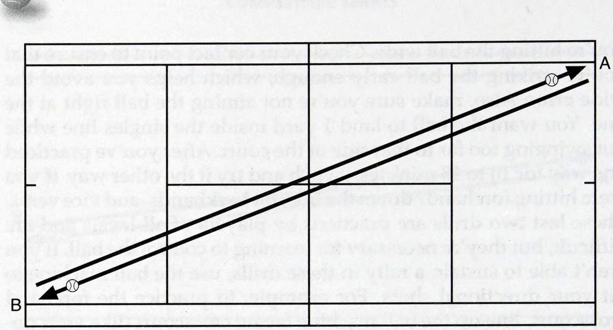
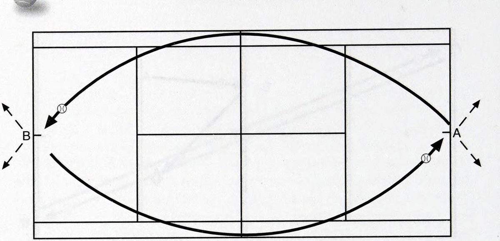
Bài tập trên lưới
Bài tập này, bài tập ròng duy nhất mà chúng tôi đề xuất cho người chơi trình độ 2.5, có thể được thực hiện với hai người chơi. Người chơi A đứng ở vạch giao bóng và người chơi B đứng cách lưới 1 yard. Người chơi A đưa bóng cho người chơi B, người chơi này đánh bóng chéo sân tới vị trí người chơi lưới của đội kia
Hình 1.29 Net Drill với người chơi A đưa bóng cho người chơi B, người này sẽ tung cú vô lê vào mục tiêu trên đường giao bóng.
sẽ là (xem hình 1.29). Chúng tôi khuyên bạn nên đặt mục tiêu ở vị trí mà người chơi trên mạng sẽ có mặt để bạn có mục tiêu nhắm tới. Điều quan trọng là đánh xuống và xuyên qua quả bóng để nó đi đến mục tiêu hoặc chân của người chơi tưởng tượng trên lưới. Điều này rất quan trọng vì đó là cách duy nhất để kết thúc điểm một cách mạnh mẽ ở trình độ 2.5. Sau khi một người đã làm việc này được 10 phút, hãy đổi người và để người kia thử. Sau khi bạn hoàn thành một vòng quay, hãy thử nó từ nửa sân còn lại. Lưu ý: Bài tập này sẽ dễ dàng hơn nếu bạn sử dụng rổ bóng tennis.
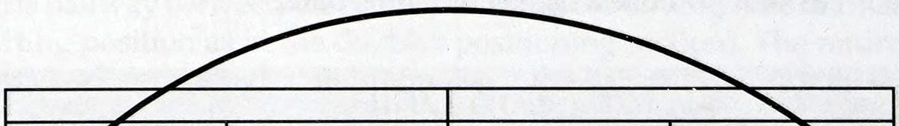
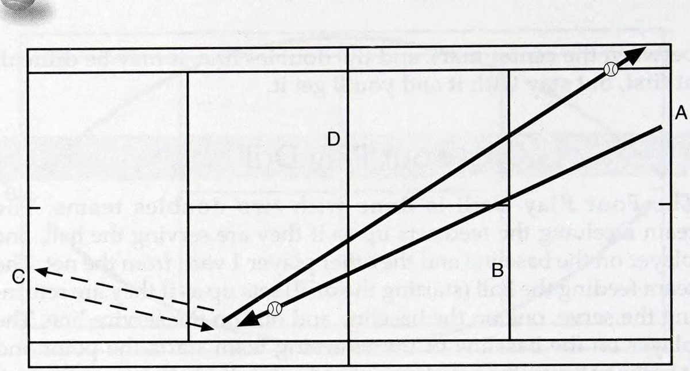
Bài tập lốp bóng
Bài tập này dạy bạn cách lốp bóng phòng thủ và có thể luyện tập với hai người chơi. Mỗi người trong số các bạn xuất phát ở hai phía đối diện của lưới, cách đường biên ngang 1 yard. Người bắt đầu tập thả bóng và lốp bóng cho người chơi khác, và bạn tiếp tục lốp bóng cho đến khi có người ném trượt (xem hình 1.30). Để thành công trong bài tập này, bạn phải luôn giữ bóng trước mặt. Bạn có thời gian để thực hiện việc này vì tất cả các quả bóng bay qua lưới đều là bóng lốp.
Khi đối tác khoan của bạn chạm vào quả bóng, hãy dự đoán nơi nó sẽ nảy lên và điều chỉnh cho phù hợp. Điều này rất quan trọng bởi vì, với tư cách là người chơi cơ bản trong đội hình một lên lưới, một lùi, bạn chịu trách nhiệm thực hiện tất cả các cú lốp bóng phía sau đường giao bóng. Ví dụ: nếu bạn cho rằng bóng sẽ bay xa bạn và gần với đường biên ngang, hãy rút lui theo đường chéo về phía sau đường biên khoảng 5 thước để có đủ khoảng trống để đánh bóng. Nếu, sau khi bạn di chuyển đến cách đường biên ngang 5 thước, bóng thực sự tiếp đất trước đường biên ngang, hãy di chuyển tới-
Hình 1.30 Bài tập lốp bóng với người chơi A đánh vô-lê cho người chơi B, người này lốp bóng lại cho người chơi A. Chuyển động lùi của người chơi theo đường chéo để che bóng một cách hiệu quả.
phường để đánh bóng. Điều quan trọng là giữ bóng trước mặt bạn và tạo cho mình cơ hội để lốp bóng đúng cách.
Nếu bạn bị ép phải ra tòa, bạn có thể thực hiện bài tập này với bốn người. Bắt đầu với hai người ở mỗi bên sân, nằm ở giữa điểm giữa và đường đánh đôi (xem hình 1.31). Thực hiện động tác tương tự, giữ bóng ở nửa sân của bạn,
Bài tập Lob 4 người thể hiện chuyển động lùi của người chơi để che các thùy.
giữa dấu trung tâm và đường đôi. Ban đầu có thể khó khăn nhưng hãy kiên trì và bạn sẽ đạt được nó.
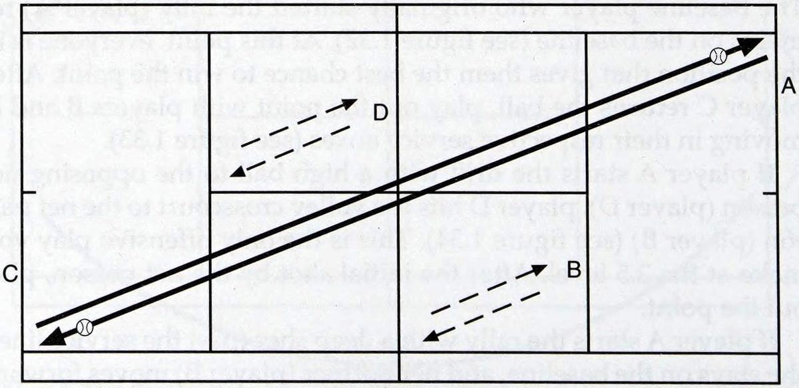
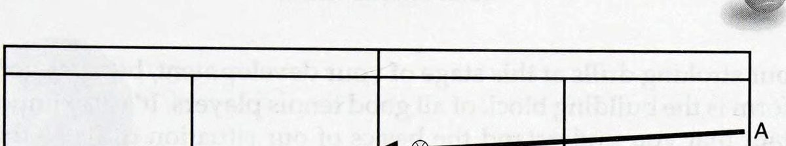
Bài tập Four Play
Bài tập Four Play được thực hiện với hai đội đánh đôi. Đội nhận thức ăn sẽ bố trí như thể họ đang giao bóng, một người chơi ở cuối sân và người chơi còn lại cách lưới 1 yard. Đội đưa bóng (bắt đầu tập) chuẩn bị như thể họ đang trả giao bóng, một ở đường cuối sân và một ở đường giao bóng. Đấu thủ ở cuối sân của đội lượt về bắt đầu điểm và lốp bóng qua đầu người chơi lưới hoặc đánh bóng chéo sân sâu, chéo sân ngắn (bên trong đường giao bóng) hoặc tới người chơi lưới. Tùy thuộc vào vị trí người chơi cơ bản bắt đầu điểm, đội kia sẽ phản ứng và tính điểm. Mỗi người chơi vị trí ban đầu của mình trong 5 phút, sau đó chuyển sang vị trí tiếp theo, cho mỗi người chơi 5 phút ở mỗi vị trí. Hãy mô phỏng từng tình huống.
Nếu người chơi A bắt đầu điểm bằng một đường bóng ngắn chéo sân, thì đấu thủ cuối sân còn lại (người chơi C) di chuyển đến đường giao bóng và đánh bóng ngược chiều ngang sâu. Đối tác của cô ấy (người chơi D) vẫn ở vị trí ban đầu trên lưới. Bạn, với tư cách là người chơi C, không tiến xa hơn sau khi trả bóng lại. Thay vào đó, bạn rút lui về đường cuối sân, bởi vì cả bạn và đối tác của bạn đều không nên ở trên lưới, điều này khiến không ai có thể che chắn cho cú lốp bóng của đối thủ. Người chơi bên kia lưới (người chơi B) vẫn ở vạch giao bóng, điều này giúp cô ấy có cơ hội nhận bóng nếu đồng đội của cô ấy đánh trả lời yếu.
Người chơi cuối sân bắt đầu lượt đánh (người chơi A) vẫn ở trên đường cuối sân (xem hình 1.32). Lúc này, mọi người đều đang ở vị trí có cơ hội tốt nhất để giành điểm. Sau khi người chơi C trả bóng lại, tính điểm với người chơi B và D di chuyển trong ô giao bóng tương ứng của họ (xem hình 1.33).
Nếu người chơi A bắt đầu thực hiện bài tập bằng một đường bóng cao tới lưới đối phương (người chơi D), người chơi D sẽ tung cú vô lê chéo sân tới người chơi lưới (người chơi B) (xem hình 1.34). Đây là lối chơi tấn công duy nhất bạn thực hiện ở trình độ 2.5. Sau cú đánh đầu tiên của người đánh lưới, hãy tính điểm.
Nếu người chơi A bắt đầu pha bóng bằng một cú đánh sâu (qua đường giao bóng), cô ấy vẫn ở trên đường cuối sân và đồng đội của cô ấy (người chơi B) di chuyển về phía trước trong vòng 1 yard tính từ lưới. Đồng đội của người trả giao bóng (người chơi D) di chuyển đến một phần ba sau của ô giao bóng để tạo cơ hội cho mình đánh bóng.
Hình 1.32 Lần chơi đầu tiên của Four Play Drill với người chơi A đưa một quả bóng ngắn cho người chơi C, người này trả bóng chéo sân và rút lui về đường cuối sân.
bóng nếu đồng đội của cô ấy đánh trúng người chơi trên lưới. Người chơi trả bóng (người chơi C) đánh bóng chéo sân. Khi bóng đi qua lại trên lưới, các người chơi trên lưới tiếp tục di chuyển lên xuống theo hướng của bóng cho đến khi họ có cơ hội thực hiện cú tung bóng xa hoặc một trong các người chơi cuối sân bỏ lỡ (xem hình 1.33).
Nếu đấu thủ cuối sân (người chơi A) bắt đầu lượt bóng bằng một cú lốp bóng qua đầu người lưới đối phương (người chơi D), thì đấu thủ cuối sân của đội nhận bóng (người chơi C) ngay lập tức chạy sang phía bên kia của sân (đổi công) để cô ấy có thể thực hiện cú trả bóng. Khi cô ấy làm điều này, đồng đội của cô ấy (người chơi D) di chuyển theo đường chéo sang vạch giao bóng ở phía bên kia.
Hình 1.33 Lượt chơi thứ hai của Four Play Drill với người chơi A đưa bóng sâu chéo sân cho người chơi C và các người chơi B và D di chuyển qua lại với bóng (che bóng). Người chơi C trả bóng chéo sân cho người chơi A.
Hình 1.34 D, người đánh vô-lê cho người chơi B. Four Chơi trận thứ ba của Drill với người chơi A đưa bóng cho người chơi IZ một nửa sân. Người chơi A, người bắt đầu pha bóng, vẫn ở sân sau, và đồng đội của cô ấy (người chơi B) tiến về phía trước trong vòng 1 yard tính từ lưới và hơi tiến về giữa để tạo cơ hội cho mình chặn đường trả về của đội kia. Cô ấy không lo lắng về việc đội kia lốp bóng qua đầu cô ấy, vì đồng đội của cô ấy có thể che bóng (xem hình 1.35). Khi mọi người đã di chuyển đến vị trí của mình sau cú lốp bóng, hãy thực hiện theo điểm, tuân thủ các quy tắc chiến lược đánh đôi cơ bản.
Đây là những bài tập giúp bạn nỗ lực trở thành một tay vợt giỏi hơn và tiến lên trình độ 3.0. Điều quan trọng là bạn sử dụng
Hình 1.35 Lượt chơi thứ tư của Four Play Drill với người chơi A đưa bóng qua đầu người chơi D, người chơi C và D đổi bên, và người chơi B di chuyển đến gần lưới và đường giữa hơn.
các bài tập đánh bóng của chúng tôi ở giai đoạn phát triển này của bạn, bởi vì phong độ tốt là nền tảng của tất cả những người chơi quần vợt giỏi. Điều quan trọng nữa là bạn phải hiểu những điều cơ bản về các bài tập tình huống của chúng tôi khi chúng áp dụng cho trình độ quần vợt của bạn, bởi vì đây là những điều cơ bản về chiến lược và vị trí, sẽ được sửa đổi khi bạn tiến bộ hơn. Chúng tôi chúc bạn quần vợt tốt và may mắn!
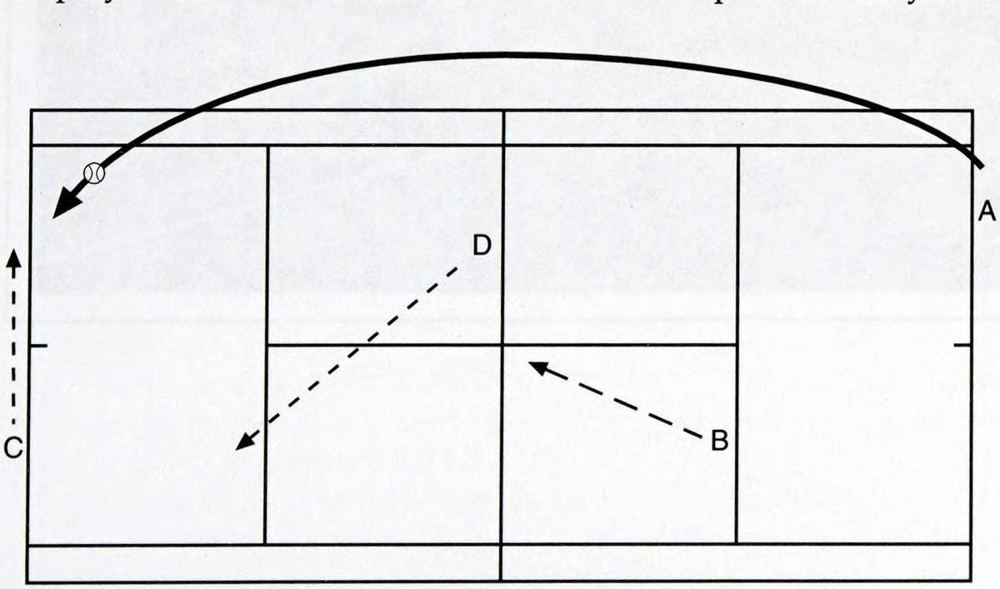
Chương 2: Trình độ 3.0
Nguyên tắc NTRP
- Cú đánh cuối sân
- Bạn có sự ổn định và đa dạng trong cú thuận tay của mình trong những cú đánh có nhịp độ vừa phải. Ngoài ra, bạn có ý định định hướng tốt. Về phía trái tay, bạn có mục đích định hướng trong các cú đánh có tốc độ vừa phải, nhưng bạn gặp vấn đề với những cú đánh cao hoặc khó và phải phòng thủ khi trả lại những cú đánh khó.
- Giao bóng
- Bạn đang bắt đầu giao bóng với khả năng kiểm soát và một chút sức mạnh.
- Vô lê
- Bạn đang chơi tích cực hơn trên lưới nhưng gặp khó khăn trong việc thực hiện các cú vô lê. Bạn sử dụng động tác bằng chân phù hợp và thể hiện khả năng thực hiện các cú đánh rộng. Với cú vô lê thuận tay, bạn chỉ đạo bóng. Trong những cú vô lê trái tay, bạn trả bóng lại nhưng ít phạm lỗi.
- Cú đánh đặc biệt
- Bạn đang phát triển những cú đánh tiếp cận, những cú đánh rơi và những cú vô lê một nửa. Bạn thực hiện việc trả lại hầu hết các cú giao bóng thứ hai và ổn định với các cú đánh trên đầu trong tầm tay.
- Tổng quát
- Nói chung, bạn kiên định trong những cú đánh có nhịp độ vừa phải và có thể hướng bóng. Bạn đã cải thiện khả năng bao quát sân và bắt đầu tìm kiếm cơ hội để lên lưới. Ở nội dung đánh đôi, bạn đang phát triển kỹ năng tấn công và tinh thần đồng đội của mình.
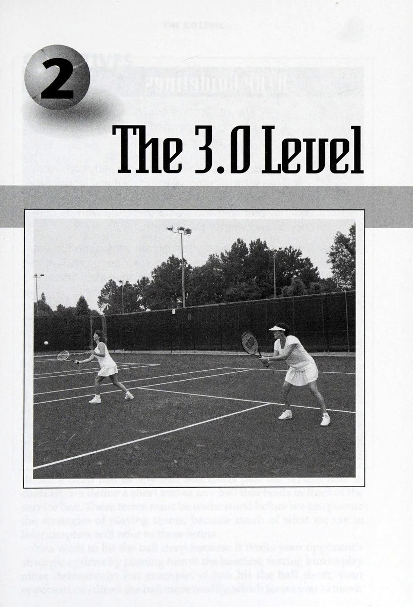
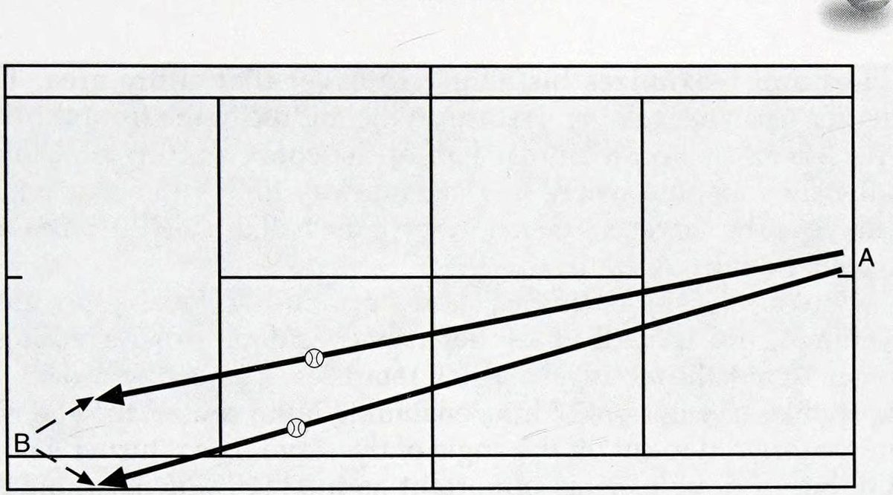
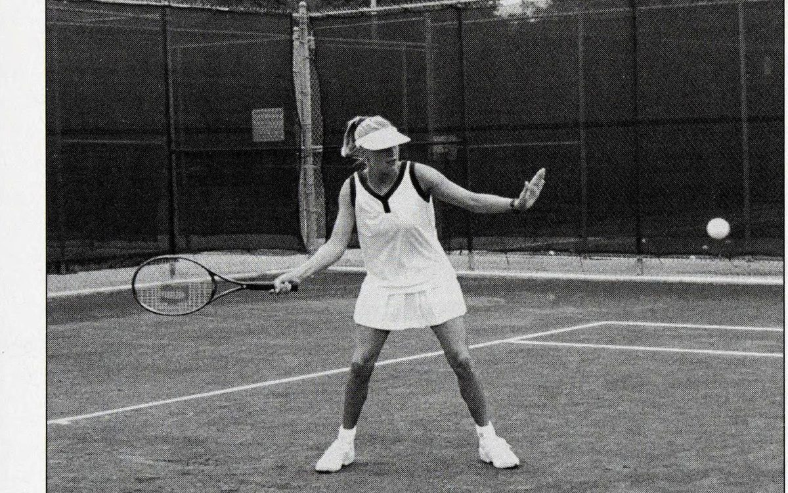
Mục tiêu của trình phát trình độ 3.0 đương nhiên là phần mở rộng cụ thể hơn của những kiến thức cơ bản đã học ở trình độ 2.5. Ở cấp độ này, bạn củng cố những kiến thức cơ bản, bắt đầu tìm hiểu lối chơi trên toàn sân và nhận thức được các chiến lược phức tạp hơn liên quan đến việc chơi quần vợt. Điều quan trọng cần nhớ là những điều cơ bản là nền tảng giúp lối chơi toàn sân thành công.
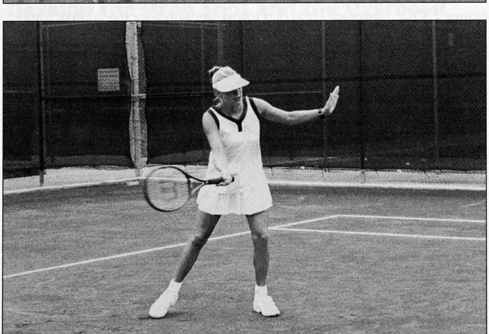
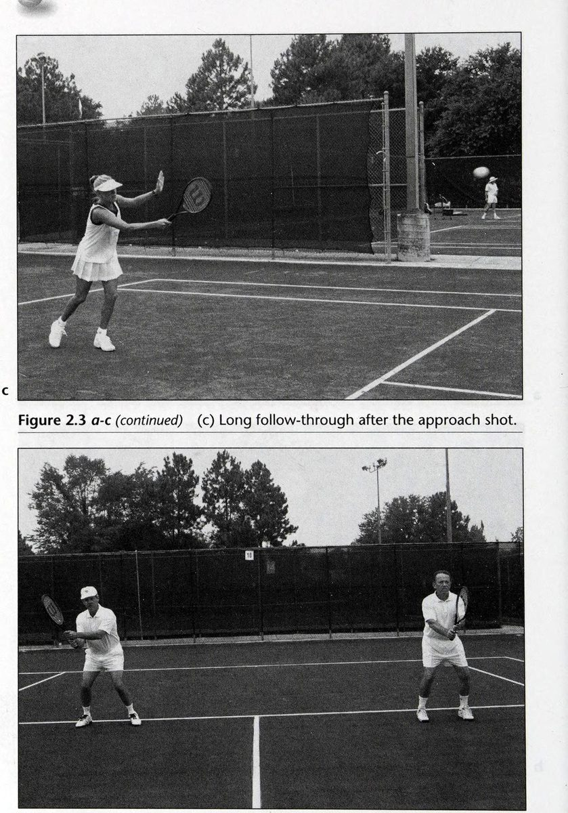
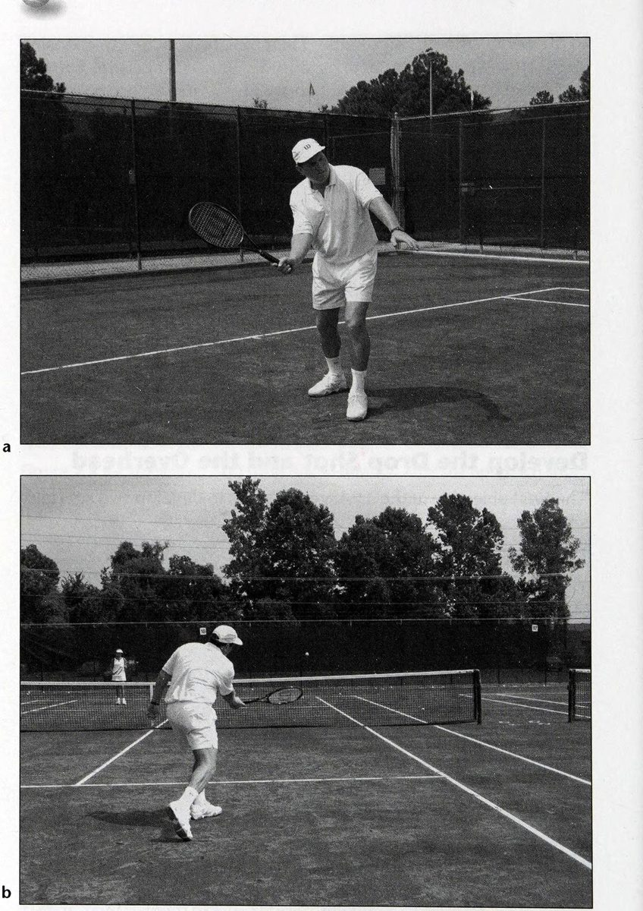
Sự ổn định
Như mọi khi, mục tiêu quan trọng nhất là sự ổn định. Bạn phải có khả năng đánh trả nhiều hơn đối thủ một quả bóng và tập trung vào việc tăng tốc độ đánh bóng. Chúng tôi khuyên bạn nên tăng nhẹ tốc độ vung vợt của mình, tốc độ này không làm thay đổi cú vung vợt cơ bản của bạn và không khiến bạn cảm thấy khó chịu. Lý do là bạn luôn muốn cảm thấy tự tin về những cú đánh của mình. Bạn phải tự tin vào cú đánh của mình, nếu không sẽ có vấn đề nảy sinh khi thực hiện kế hoạch thi đấu của bạn. Cách để có được sự tự tin là thông qua việc thực hành lặp đi lặp lại.
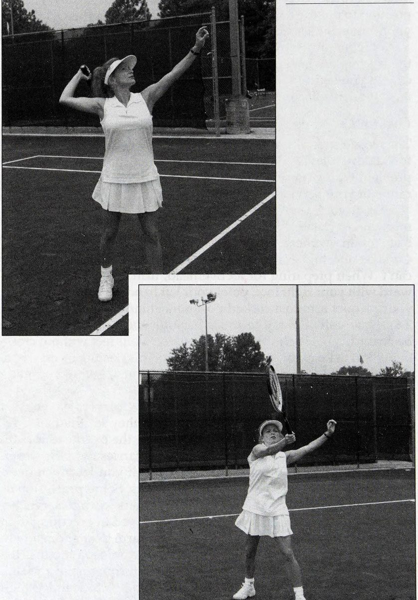
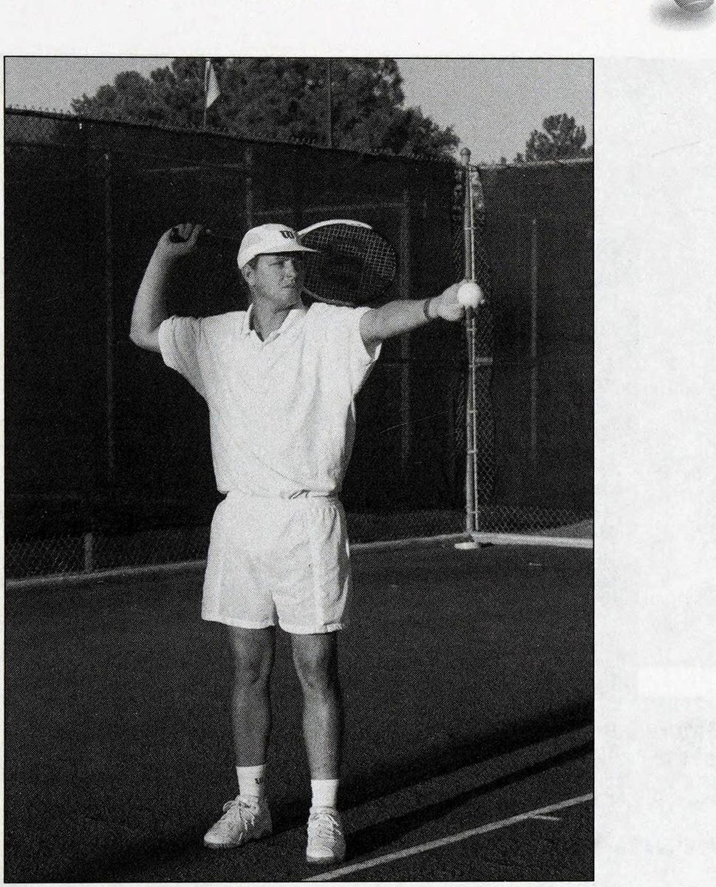
Vị trí
Vị trí là khả năng kiểm soát hướng và độ sâu của bóng. Mục đích định hướng, khả năng đánh bóng vào nơi bạn nhắm đến, là phần đầu tiên của định nghĩa này và đã được đề cập trong chương 1. Phần thứ hai trong định nghĩa về vị trí là chiều sâu. Ở trình độ 3.0, bạn phải bắt đầu học cách đánh bóng sâu, bởi vì chiều sâu là nền tảng của chiến lược đấu cơ bản cho người chơi đơn từ trình độ 3.5 trở lên chuyên nghiệp và cho người chơi đánh đôi từ trình độ 3.5 đến trình độ 4.0.
Để đơn giản hóa quá trình ra quyết định cho người chơi trình độ 3.0, chúng tôi định nghĩa bóng sâu là bất kỳ quả bóng nào đi qua đường giao bóng. Ngược lại, chúng tôi định nghĩa bóng ngắn là bất kỳ quả bóng nào chạm đất trước vạch giao bóng. Những thuật ngữ này phải được hiểu trước khi chúng ta có thể theo đuổi các chiến lược chơi quần vợt, bởi vì phần lớn những gì chúng tôi nói trong các chương sau sẽ đề cập đến những thuật ngữ này.
Bạn muốn đánh bóng sâu vì nó hạn chế các lựa chọn chiến lược của đối thủ bằng cách ghim anh ta ở đường cuối sân, buộc anh ta phải chơi phòng thủ nhiều hơn. Ví dụ: nếu bạn đánh bóng ngắn, đối thủ của bạn có thể hướng bóng dễ dàng hơn, điều này buộc bạn phải di chuyển.
Nhưng nếu bạn đánh bóng sâu, đối thủ của bạn phải quan tâm đến việc đánh trả bóng hơn là chỉ đạo nó. Ngoài ra, nếu bạn đánh bóng sâu một cách ổn định, bạn có thể buộc đối thủ phải đánh bóng ngắn, điều này giúp bạn có cơ hội hướng bóng và chạy đối thủ. Ở nội dung đơn và đôi ở trình độ 3.0, bạn vẫn có thể giành chiến thắng bằng cách đánh bóng ngắn vì đối thủ của bạn không có khả năng đưa bóng ngắn hoặc vô lê tốt. Tuy nhiên, nếu bạn đánh bóng ngắn ở trình độ 3.5, đối thủ sẽ hung hãn hơn và gây áp lực lên bạn bằng cách tung ra những cú thả bóng, đưa bóng vào góc hoặc áp sát lưới. Do đó, độ sâu ngày càng trở nên quan trọng khi bạn leo lên Thang USTA.
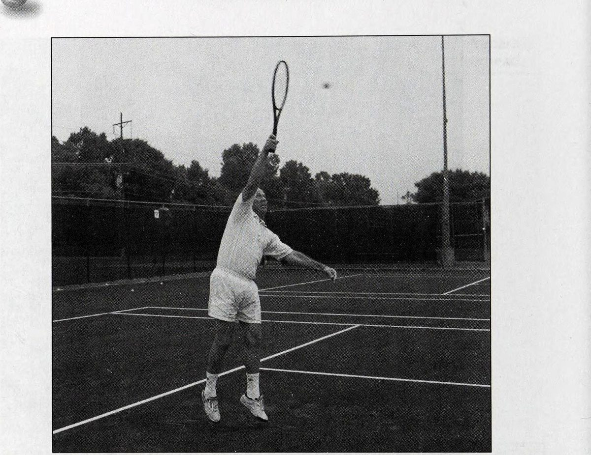
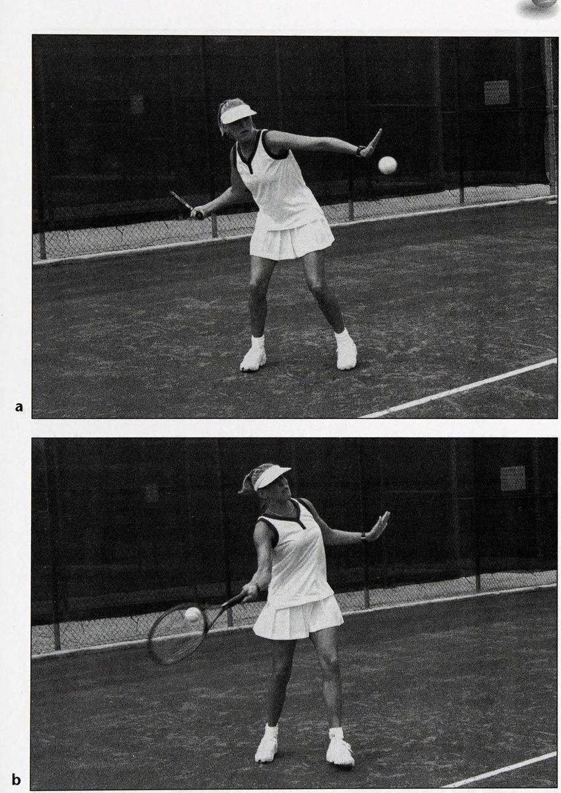
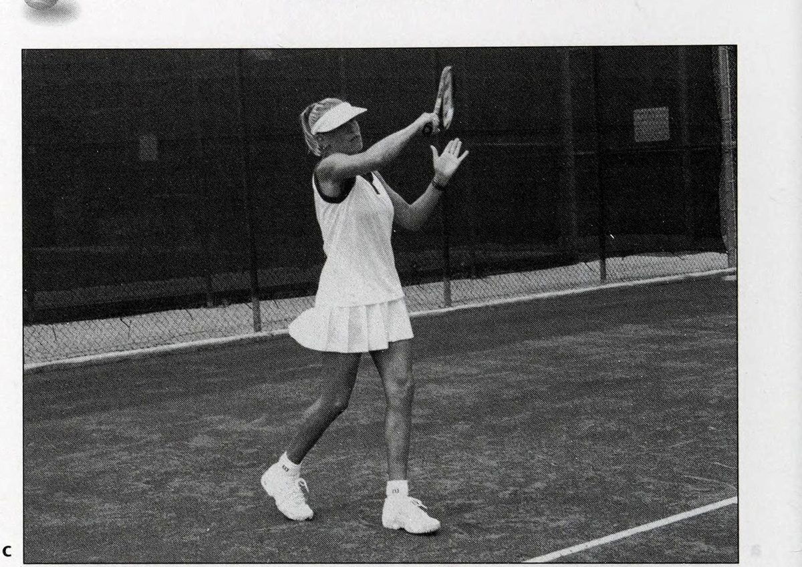
Định vị
Định vị là biết vị trí đứng trên sân trước khi điểm bắt đầu và vị trí di chuyển khi bóng đang trong cuộc. Điều quan trọng là phải nghĩ đến việc chọn vị trí theo khía cạnh tấn công và phòng thủ, bởi vì trong mỗi thời điểm, bạn đều ở thế tấn công hoặc phòng thủ. Không có chiến lược trung lập. Vì vậy, bạn phải học cách di chuyển với bóng và đồng đội của mình trong một thời điểm.
Khi bạn định vị bản thân đúng cách, bạn sẽ đạt được hai điều.
Để tấn công, bạn đặt mình vào một đội hình cho phép bạn tấn công những cú đánh sai hoặc chiến lược sai lầm của đối thủ, dẫn đến việc phải bỏ cuộc hoặc buộc đối thủ của bạn vào thế phòng thủ. Về phòng thủ, bạn căn chỉnh bản thân để cắt đứt các góc của đối thủ và buộc họ phải thực hiện cú đánh khó nhất để đưa bóng đi. Cả hai khía cạnh của việc định vị đều tối đa hóa cơ hội thành công của bạn. Tuy nhiên, việc thực hiện các cú đánh và chiến lược của bạn cuối cùng sẽ quyết định kết quả của trận đấu.
Vị trí bắt đầu của người chơi trình độ 3.0 như sau.
Vị trí bắt đầu cho đánh đơn Người giao bóng bắt đầu ngay lập tức ở phía bên của điểm trung tâm, vị trí này đặt cô ấy ở giữa sân sau khi giao bóng và tối đa hóa khả năng bao quát sân của cô ấy (người chơi A trong hình 2.1).
Người trả giao bóng ở vị trí xa hoặc lùi nếu cần thiết để giữ quả giao bóng ở phía trước (người chơi B trong hình 2.1). Điều này hoàn thành hai mục tiêu: (1) nó giúp cô ấy vô hiệu hóa cú giao bóng và kiểm soát nó tốt hơn, và (2) nó mang lại cho người trả giao cơ hội tiến về phía trước. Chuyển động về phía trước cho phép cô ấy cắt cú giao bóng theo một góc và tạo ra lực bằng trọng lượng của mình bằng cách bước vào bóng (hình 2.1).
Hình 2.1 Vị trí giao bóng và trả giao bóng đơn với người chơi B tiến về phía trước để trả giao bóng.
Tiền đề cơ bản cho vị trí này là người chơi sẽ tiến về phía trước dễ dàng hơn là lùi lại.
Vị trí bắt đầu cho đánh đôi Khi bạn đang học chơi đánh đôi, bạn phải hiểu rằng đội giao bóng bắt đầu ở vị trí tấn công, bởi vì cú giao bóng được thiết kế để trở thành một cú đánh tấn công. Hình 2.2 thể hiện vị trí tấn công cơ bản của đội giao bóng (người chơi A và B).
Người giao bóng (người chơi A) bắt đầu ở giữa điểm giữa và đường đánh đôi, đặt anh ta ở giữa nửa sân của mình
Hình 2.2 Các vị trí nhân đôi tấn công và phòng thủ cơ bản cho đội giao bóng và đội nhận bóng.
tấn công và phát huy tối đa khả năng của mình để bao quát toàn bộ khu vực đó. Đối tác của người giao bóng (người chơi B) bắt đầu ở giữa một phần ba phía trước của ô giao bóng ở nửa còn lại của sân, đặt anh ta vào thế tấn công, nơi anh ta có thể thực hiện những cú vô lê cao hoặc câu trộm (di chuyển về phía người giao bóng để chặn bóng trong thời điểm) khi trả bóng yếu.
Ngược lại, đội nhận bóng bắt đầu ở thế phòng thủ.
Hình 2.2 minh họa vị trí phòng thủ cơ bản của đội nhận bóng. Một lần nữa, người nhận bóng (người chơi C) bắt đầu lùi lại đủ xa để anh ta có thể giữ quả giao bóng ở phía trước, giúp anh ta có thể kiểm soát bóng và di chuyển về phía trước để cắt góc giao bóng. Vị trí của người trả bóng trong đánh đôi cũng quan trọng như trong đánh đơn, nếu không muốn nói là hơn, bởi vì người trả bóng đánh đôi có ít sân hơn để trả bóng. Điều này có nghĩa là bản chất của lối chơi đánh đôi buộc anh ta phải trả bóng chính xác hơn.
Đối tác của người nhận giao bóng (người chơi D) đứng ở vạch giao bóng trên nửa sân của anh ta, cách đường giao bóng trung tâm khoảng 1 yard, nơi anh ta có thể phòng thủ trước những cú đánh do đối tác của người giao vô lê vào khoảng trống và có tầm nhìn tốt hơn để thực hiện giao bóng.
Học cách tấn công
Trước khi có thể tấn công hiệu quả, bạn phải biết cách tấn công hoặc tiếp cận lưới. Ở dạng đơn giản nhất, cú đánh tiếp cận là một động tác vung vợt ra sau rút ngắn với một cú đánh kéo dài được thiết kế để đưa bóng sâu vào trong sân (xem hình 2.3, a-c). Bạn muốn đặt bóng sâu vào sân để tiến xa hơn về phía lưới và thực hiện cú vô lê đầu tiên dễ dàng. Nếu cú đánh tiếp cận của bạn bị đánh ở cự ly ngắn, đối thủ của bạn có thể giữ bóng trước mặt cô ấy và kiểm soát nó, tạo cơ hội cho cô ấy khiến bạn thực hiện cú vô lê đầu tiên khó khăn.
Sau khi bạn thực hiện cú đánh tiếp cận, hãy tiến tới lưới và tách bước khi đối thủ của bạn bắt đầu cú đánh (xem hình 2.4).
Bước phân tách thực hiện hai việc cho bạn. Đầu tiên, nó buộc bạn phải dừng lại để bạn không thực hiện được cú vô lê đầu tiên. Nếu bạn thực hiện cú vô lê đầu tiên, bạn sẽ đánh bóng muộn. Thứ hai, bước tách giúp cân bằng cơ thể của bạn để bạn có thể di chuyển theo bất kỳ hướng nào một cách dễ dàng. Bằng cách tách bước chính xác, bạn sẽ tăng đáng kể cơ hội đánh được cú vô lê đầu tiên tốt.
Ngoài ra, bạn phải biết khi nào nên tấn công. Bạn phải nhận ra rằng cú đánh tiếp cận không được thiết kế để giành điểm. Nó được thiết kế để giúp bạn thực hiện những cú vô lê dễ dàng hơn và giúp bạn chuyển tiếp từ vạch cuối sân chúng tôi biết
Hình 2.3a-c (a) Rút lui ngắn cho cú đánh tiếp cận. (b) Điểm tiếp xúc cho cú đánh tiếp cận.
Hình 2.4 Người chơi bên trái bước tách ra và xoay người để thực hiện cú vô lê đầu tiên.
vào lưới càng mượt mà càng tốt. Do đó, hãy chọn lọc trong việc lựa chọn cú đánh để tiếp cận, bởi vì bạn phải đảm bảo rằng bạn có thể tiến đủ xa vào sân để thực hiện cú vô lê đầu tiên hiệu quả.
Cách đơn giản nhất để xem cú đánh tiếp cận là coi nó như một phản ứng khi được đối thủ mời vào lưới. Một điểm tham khảo tốt để biết khi nào nên tiếp cận là tấn công những quả bóng chạm đất ngắn (phía trước đường giao bóng). Hãy nhớ rằng chìa khóa để tiếp cận không phải là độ sâu cú đánh của bạn; đó là độ sâu của cú đánh của đối thủ. Bạn không tiếp cận lưới vì bạn đã đánh một cú đánh sâu. Đúng hơn là bạn tiếp cận lưới vì đối thủ tung cú đánh ngắn, và trong khi tiếp cận, bạn đánh bóng sâu để ép đối thủ. Điều này giúp bạn có thời gian để ít nhất đến được khu vực đường giao bóng, bởi vì bạn thường bắt đầu cách tiếp cận của mình bên trong đường cuối sân, điều này làm tăng cơ hội đánh cú vô lê đầu tiên thành công.
Hãy nhớ rằng, chìa khóa của một cú đánh tiếp cận tốt không chỉ là biết cách tiếp cận mà còn biết thời điểm tiếp cận.
Phát triển cú bỏ nhỏ và cú đánh trên đầu
Mục tiêu cuối cùng của người chơi trình độ 3.0 là phát triển hai cú đánh đặc biệt: cú đánh rơi và cú đánh trên đầu.
Drop Shot Cú đánh thả, còn được gọi một cách lỏng lẻo là "cú đánh mờ" hoặc "cú đánh cắt", là một vũ khí đánh đơn tốt ở trình độ 3.0, bởi vì một người chơi không có khả năng di chuyển và vô lê đôi khi là lý do khiến anh ta không chơi ở cấp độ cao hơn.
Để thực hiện cú đánh thả bóng, hãy rút ngắn thời gian vung vợt về sau, thả lỏng bàn tay và nhẹ nhàng đập bóng qua lưới (xem hình 2.5, a-b). Để thực hiện cú thả bóng hiệu quả, bạn phải thực hiện được khi đối thủ đánh bóng ngắn. Bằng cách thực hiện cú đánh từ một quả bóng ngắn, bạn không cho đối thủ nhiều thời gian để lấy bóng và bạn không cần phải đánh bóng xa để phá lưới, hai yếu tố giúp cú đánh dễ thực hiện hơn.
Với cú đánh trong kho vũ khí của mình, bạn có thể khai thác tốc độ chân của đối thủ di chuyển không tốt bằng cách giành điểm miễn phí với những cú đánh mà họ không thể tiếp cận. Hơn nữa, bạn có thể sử dụng cú đánh thả trong cả đánh đơn và đánh đôi để kéo đối thủ vào lưới. Bằng cách đó, bạn có thể khai thác thêm hai điểm yếu của đối thủ ở trình độ 3.0: cú vô lê yếu và cú đánh trên đầu yếu. Để khai thác một cú vô lê yếu, hãy lái xe
Hình 2.5a-b (a) Người chơi thực hiện cú đánh lùi ngắn cho cú đánh thả. (b) Người chơi thực hiện cú đánh nhẹ, ngắn.
bóng trực tiếp vào đối thủ của bạn khi họ đã vào lưới.
(Đảm bảo rằng họ không đến quá gần lưới, vì họ sẽ ở vị trí để đưa bóng đi.) Để khai thác một pha đánh đầu yếu, hãy lốp bóng qua đầu đối thủ sau khi bạn đã kéo họ vào lưới.
Ở cấp độ cao hơn, cú đánh rơi là một lối chơi có tỷ lệ chơi thấp vì các người chơi nhanh hơn và đánh những cú vô lê cũng như đánh đầu tốt hơn. Tuy nhiên, nếu bạn học cách đánh một cú thả bóng liên tục ở trình độ 3.0 thì đó là một vũ khí cực kỳ hiệu quả.
Cú đánh trên đầu. Cú đánh đặc biệt thứ hai là cú đánh trên đầu, nguồn gây căng thẳng thường xuyên cho những người chơi trình độ 3.0. Căn nguyên của vấn đề của bạn, nếu thực sự bạn gặp vấn đề với cú đánh trên đầu của mình, thường có thể bắt nguồn từ sự chuẩn bị hoặc chuyển động giao bóng của bạn.
Đầu tiên, nếu bạn không chuẩn bị bóng đúng cách, bạn có thể sẽ trượt phần trên đầu, ngay cả khi bạn vung bóng đúng cách. Bạn thường xuyên lướt lại để lấy một quả trên cao và đến đúng lúc để đánh nó. Người chơi ở trình độ 4.0 trở lên có thể thoát khỏi điều này, nhưng bạn thì không. Khi chuẩn bị thực hiện cú đánh trên đầu, hãy nghiêng người sang một bên, bước lùi bằng chân phải, chỉ tay trái vào quả bóng và uốn cong cánh tay vợt của bạn đến vị trí chếch ra sau tai (xem hình 2.6). Bây giờ bạn đã sẵn sàng di chuyển trở lại để lấy bóng. Khi lùi về phía sau, nhanh chóng đảo chân (di chuyển chân không bắt chéo) để giữ bóng ở phía trước. Điều này giúp bạn có thể chuyển trọng lượng của mình trở lại quả bóng, mang lại cho bạn nhiều sức mạnh hơn và khả năng kiểm soát tốt hơn.
Vấn đề thứ hai là hầu hết các người chơi trình độ 3.0 vẫn chưa phát triển được chuyển động giao bóng tốt, vì họ để bóng rơi quá thấp và đẩy bóng vào (xem hình 2.7). Vì chi phí là một kết quả của cú giao bóng nên vấn đề này thường xảy ra. Tuy nhiên, cú đánh trên đầu có thể dễ dàng hơn cú giao bóng, nếu bạn để nó. Cú giao bóng trên chỉ đơn giản là một nửa cú giao bóng mà không tung bóng. Một số chuyên gia dạy hiệp này đóng vai trò như một công cụ giúp người mới bắt đầu học cách giao bóng vì không có nhiều sự phối hợp khi thực hiện nó. Khi đánh một nửa quả giao bóng, hãy bắt đầu với cánh tay cầm vợt của bạn cong và sẵn sàng vung trong khi cánh tay còn lại của bạn ở vị trí chữ T, sẵn sàng tung bóng (xem hình 2.8). Với cổ tay của bàn tay cầm vợt của bạn được thư giãn, hãy ném quả bóng về phía trước vai phải của bạn theo hướng 1 giờ và cao nhất mà bạn có thể với tới bằng vợt, vung lên trời và búng cổ tay vào quả bóng. Sự khác biệt duy nhất giữa cú giao bóng qua đầu và cú giao bóng một nửa là bạn sử dụng cánh tay không cầm vợt của mình để
Hình 2.6 Chuẩn bị cú đánh trên đầu.
Hình 2.7 Trên cao với chuyển động đẩy bóng thấp.
Hình 2.8 Thiết lập cho một nửa cú giao bóng.
chỉ vào quả bóng để giữ thăng bằng và phối cảnh. Nhưng bạn vẫn thiết lập tương tự như đối với nửa quả giao bóng, vươn cao nhất có thể về phía trước vai phải để tiếp xúc, đánh bóng lúc 1 giờ, tóm lấy bóng và thực hiện theo (xem hình 2.9). Nếu bạn đơn giản hóa cú đánh trên đầu của mình bằng cách sử dụng những gợi ý này, bạn sẽ nâng cao đáng kể cơ hội thành công ở trình độ 3.0 và hơn thế nữa!
Chìa khóa dẫn đến thành công ở trình độ 3.0 là học cách đánh sâu, học cách đánh vô-lê và học chiến lược sử dụng khi bóng vào sân.
Hình 2.9 Chuyển động qua đầu hoặc giao bóng một nửa với vợt đánh vào mặt trên của bóng.
Hầu hết các người chơi mới bắt đầu và bắt đầu ở trình độ trung cấp đều nhắm bóng thấp qua lưới vì đó là mục tiêu hữu hình hơn và họ sợ đánh bóng ra ngoài. Tuy nhiên, điều này khiến bóng chạm đất ngắn (phía trước vạch giao bóng), vì họ đánh không đủ mạnh để đưa bóng về sân sau. Để đánh bóng sâu hơn, hãy nhắm cách lưới 6 feet, điều này đương nhiên khiến bóng của bạn rơi xuống sân sâu hơn.
Để thành công ở điều này, hãy vung lên ở một góc sắc nét hơn trong khi vẫn giữ dây của bạn vuông góc với lưới và thực hiện một cú đánh dài và cao (xem hình 2.10, a-c). Sau khi thử điều này, bạn có thể đánh bóng sâu hơn ngay lập tức. Nhưng rất có thể, bạn sẽ phải thử nghiệm các cú đánh của mình để tìm ra cảm giác chính xác cho cú đánh của mình.
Ví dụ: nếu bạn đánh bóng cách lưới 6 feet và bóng luôn dài, hãy giảm tốc độ vung vợt của bạn khoảng 20 phần trăm và sử dụng các giải pháp trong phần Mẹo nhanh của chúng tôi về các cú đánh cuối sân (chương 1) để phân tích bản thân. Bằng cách thử nghiệm, bạn sẽ cảm nhận được cách đánh bóng sâu.
(tiếp theo)
Hình 2.10a-c (a) Người chơi chuẩn bị vợt xuất phát từ phía dưới bóng để đánh bóng cao hơn qua lưới. (b) Người chơi chạm dây vuông góc với lưới.
Hình 2.10a-c (tiếp) (c) Người chơi đi theo phía trên cao để đánh bóng cao hơn lưới.
Học cách vô lê
Vô lê là đánh bóng lên không trung trước khi nó nảy lên. Vô lê không khó như động tác cú đánh cuối sân nhưng nó vẫn đòi hỏi sự phối hợp giữa động tác chân và tư thế. Vì bạn đánh bóng lên không nên bạn có ít thời gian hơn để chuẩn bị cho cú vô lê so với chuẩn bị cho cú đánh cuối sân.
Vì vậy, hiệu quả thông qua bước chân nhanh và tư thế phù hợp là điều cần thiết cho những cú vô lê rắn.
Phát triển động tác chân phù hợp trên các cú vô lê của bạn
Động tác bằng chân trong cú vô lê yêu cầu hai bước quan trọng: bật người bằng mũi chân và bước chéo theo đường chéo.
Bằng cách bật ngón chân lên, bạn thiết lập một điểm khởi đầu tốt để thực hiện cú vô lê âm thanh, bởi vì bạn có thể lao tới bóng một cách nhanh chóng. Nếu bạn đứng bằng chân trên lưới, bạn sẽ gặp vấn đề với những quả bóng bay ra xa bạn và những quả bóng đập thẳng vào bạn.
Bằng cách bước chéo theo đường chéo, bạn dồn trọng lượng của mình vào phía sau quả bóng (xem hình 2.11, a-b). Nếu bạn bước sang một bên, bạn sẽ đánh bóng không hiệu quả vì trọng lượng của bạn không dồn vào cú đánh. Bước chéo
Hình 2.1lab-b (a) Bước ngang trên cú vô lê thuận tay. (b) Bước ngang trong cú vô lê trái tay.
theo đường chéo giúp bạn trở thành người tung cú vô lê hiệu quả hơn vì nó giúp tăng cường khả năng kiểm soát của bạn một cách tự nhiên và tăng tốc độ trong cú vô lê của bạn.
Khả năng kiểm soát và tốc độ của bạn được cải thiện vì bạn không phải sử dụng nhiều cánh tay hoặc vai. Đó là cách mà hầu hết các người chơi được đánh giá thấp hơn cố gắng tạo ra sức mạnh cho những cú vô lê của họ, thường phải đánh đổi bằng khả năng kiểm soát, vì vậy họ luôn song hành với nhau.
Phát triển tư thế thích hợp cho các cú vô lê của bạn Hình thức thực hiện cú vô lê rất đơn giản. Chúng tôi luôn nói với học viên của mình rằng "ít hơn là nhiều hơn" khi họ thực hiện cú vô lê, bởi vì bạn càng giữ nó gọn thì bạn càng thoát khỏi nó. Cú vô lê có thể được chia thành bốn giai đoạn: cầm vợt, chuẩn bị vợt, thu vợt và "cú đấm".
Nắm chặt. Đối với các cú vô lê, cả thuận tay và trái tay, bạn sử dụng cách cầm vợt Continental. Để xác định vị trí cách cầm này, hãy giữ cổ vợt bằng tay trái (tay phải đối với người thuận tay trái), giữa ngón cái và ngón giữa, đồng thời đặt chữ V của tay phải lên góc xiên đầu tiên của cán vợt (xem hình 2.12). Ban đầu, bạn sẽ cảm thấy thoải mái hơn khi thực hiện cú vô lê trái tay so với cú đánh thuận tay, nhưng nếu bạn kiên trì, bạn sẽ cảm thấy thoải mái như nhau ở cả hai bên.
Chuẩn bị vợt. Sử dụng tay cầm Continental, vào tư thế sẵn sàng với đầu gối cong. Hãy chắc chắn rằng cánh tay của bạn thoải mái ở bên cạnh và đầu vợt của bạn cao ngang cằm. Điều này giúp cải thiện tư thế của bạn, bởi vì bạn muốn giữ đầu vợt ở trên cổ tay càng nhiều càng tốt khi bạn thực hiện cú vô lê (xem hình 2.13).
Lấy lại. Khi bạn lấy vợt về, hãy sử dụng vai chứ không phải cánh tay. Nếu bạn bắt đầu từ vị trí sẵn sàng với cánh tay khóa và xoay vai và hông sang một bên, bạn sẽ tự động đưa vợt về đúng vị trí vì bạn đặt vợt ở độ cao phù hợp, khoảng cách thoải mái với cơ thể và xa về phía sau bằng chân sau của bạn (xem hình 2.14). Ngoài ra, mặt vợt của bạn phải ở góc chính xác. Hơn nữa, việc xoay hông và vai sẽ giúp ích cho động tác chân của bạn vì nó buộc bạn phải bước chéo khi trọng lượng của bạn chuyển sang bên cơ thể nơi bạn đánh bóng. Vì vậy, nếu bước tới bóng thì không được bước nhầm chân (xem chân trái của người chơi ở hình 2.14).
"Cú đấm." Khi bạn đã bước chéo tới bóng, hãy khóa cổ tay và dùng cánh tay của bạn để "đấm" cú vô lê. Chúng tôi sử dụng thuật ngữ cú đấm vì bạn đang thực hiện một chuyển động nhanh từ điểm dừng chứ không phải vì
Hình 2.12 Tay cầm kiểu lục địa với chữ V của bàn tay được đánh dấu.
Hình 2.13 Vị trí sẵn sàng đánh vô-lê.
Hình 2.14 Người chơi có hông và vai quay sang một bên để thực hiện cú vô lê.
bạn đang thực hiện động tác đấm giống như một võ sĩ quyền anh. Học cách làm điều này sẽ giúp bạn vượt lên trên phần lớn những người chơi ở trình độ 3.0, bởi vì hầu hết họ đều xoay người theo cú vô lê của mình. Khi bạn thực hiện cú vô lê, hãy luôn bắt đầu đầu vợt phía trên cổ tay và bóng, bởi vì bạn muốn đấm nhẹ vào cú vô lê để truyền xoáy xuống cho bóng.
Ngoài ra, hãy giữ dây của bạn vuông góc với mục tiêu càng lâu càng tốt trong lần theo dõi của bạn (xem hình 2.15, a-b). Một cách khác để hình dung xoáy xuống là nhắm vào mặt dưới của quả bóng và làm cho nó lăn khỏi dây của bạn. Điều này giúp bạn giữ mặt vợt luôn mở trong những cú vô lê mà không cần phải suy nghĩ quá nhiều thứ. Xoáy xuống thích hợp giữ cho độ nảy của bóng thấp bằng cách tạo ra chuyển động trượt khiến đối thủ của bạn khó đánh trả được.
Bằng cách kết hợp ba bước trước đó với cú đấm, bạn có những công cụ cần thiết để trở thành một vận động viên vô lê thành công. Tất cả những gì bạn cần là thực hành!
Mẹo nhanh về cú vô lê của chúng tôi giúp bạn tự kiểm tra vấn đề của mình cho dù bạn đang luyện tập hay thi đấu.
Hình 2.15a-b (a) Cú trả bóng bắt đầu phía trên bóng với mặt vợt mở. (b) Thực hiện cú vô lê với mặt vợt vẫn mở và vuông góc với mục tiêu ở đường biên.
Vô lê tôi
- Vấn đề—Bạn đang đưa bóng vào lưới.
- Giải pháp 1—Có thể bạn đã vung bóng xuống quá nhiều. Trong trường hợp này, hơi mở mặt vợt của bạn ra và đấm bóng nhiều hơn về phía mục tiêu (xem hình 2.16, a-b, I và 2.17, a-b). Điều này giúp bạn thực hiện cú vô lê ổn định hơn vì nó loại bỏ chuyển động dư thừa trong cú đánh của bạn.
- Giải pháp 2—Nếu bạn thử giải pháp 1 và bóng vẫn đi vào lưới, mặt vợt của bạn có thể quá đóng (xem hình 2.18).
Giữ nguyên động tác đấm của bạn, nhưng hơi mở mặt vợt ra, điều này sẽ buộc bóng bay ra khỏi vợt cao hơn (xem hình 2.17b).
Hình 2.16a-b (a) Cú vô lê mặt vợt phẳng.
Hình 2.16a-b (b) Mặt vợt phẳng hướng theo mặt đất (dạng không chính xác).
(tiếp theo)
Hình 2.17a-b (a) Cú vô lê mặt vợt mở.
Hình 2.17a-b (tiếp theo) (b) Người chơi đấm cú vô lê chính xác với mặt vợt mở (đúng mẫu).
Hình 2.18 Vô lê mặt vợt kín (dạng sai).
- Vấn đề—Bạn đánh vô-lê dài.
- Giải pháp 1—Mặt vợt của bạn có thể quá hở. Giữ nguyên chuyển động đấm của bạn, nhưng giảm độ hở của mặt vợt bằng cách giảm góc của nó. Điều này làm cho quả bóng đi xuống với một góc sắc nét hơn vào sân.
- Giải pháp 2—Nếu bạn thử giải pháp 1 và bóng vẫn còn dài, hãy kiểm tra lại hình thức của bạn. Có lẽ bạn đang đánh quá mạnh (vung, không đấm). Trong trường hợp này, hãy tiếp tục thực hiện giải pháp 1 nhưng rút ngắn thời gian lấy lại và theo dõi (xem hình 2.17, a-b). Điều này giúp loại bỏ bất kỳ chuyển động dư thừa nào trong cú đánh của bạn.
- Giải pháp 3—Nếu giải pháp 2 không phải là giải pháp cho vấn đề của bạn, có thể bạn đang sử dụng cổ tay để thực hiện cú vô lê (xem hình 2.19a). Trong trường hợp này, tiếp tục thực hiện giải pháp 1 nhưng khóa cổ tay lại (xem hình 2.19b). Điều này giúp loại bỏ sự biến đổi trong cú đánh của bạn và giữ cho dây vuông góc với quả bóng trong suốt cú đánh.
(tiếp theo)
Hình 2.19a-b (a) Vô lê với người chơi búng cổ tay (hình thức không chính xác).
Hình 2.19a-b (tiếp theo) _(b) Vô lê với người chơi giữ cổ tay chắc chắn (dạng đúng).
- Vấn đề—Bạn đang gặp vấn đề trong việc định hướng bóng.
- Giải pháp—Có thể bạn chưa căn chỉnh cơ thể mình đúng cách. Sau khi bạn xoay vai và hông và chuẩn bị thực hiện cú vô lê, hãy bước tới mục tiêu. Điều này giúp vai và hông của bạn thẳng hàng với mục tiêu và hướng bóng phù hợp (xem hình 2.11a).
- Vấn đề—Khi bạn cố gắng đi dọc biên, bạn đang đánh bóng ra ngoài.
- Giải pháp 1—Có thể bạn đã đánh bóng muộn. Trong trường hợp này, hãy giữ nguyên động tác đấm nhưng tiếp xúc với bóng nhiều hơn ở phía trước bạn. Điều này làm cho quả bóng chuyển động thẳng hơn (xem hình 2.20, a-b).
- Giải pháp 2—Nếu bạn thử giải pháp 1 và bóng vẫn đi ra ngoài, có thể bạn đang "đấm quá" bóng theo hướng của đường biên.
Trong trường hợp này, tiếp tục đấm bóng theo cách tương tự nhưng nhắm vào sân nhiều hơn chứ không phải vào vạch. Điều này giúp bạn có nhiều khả năng mắc lỗi hơn, dẫn đến tỷ lệ bóng trúng sân cao hơn.
Hình 2.20a-b (a) Người chơi tiếp xúc muộn trong cú vô lê (hình thức không chính xác).
(b) Người chơi tiếp xúc trước chân trái (đúng mẫu).
Nếu bạn nhận thấy rằng mình liên tục đánh trượt bóng theo cùng một cách, hãy thử các mẹo nhanh của chúng tôi để giúp bạn thoát khỏi bất kỳ tình trạng tắc nghẽn nào mà bạn có thể gặp phải. Chúng tôi nghĩ bạn sẽ thấy chúng rất hữu ích, đặc biệt là trong các tình huống trận đấu!
Học chiến thuật
Chiến lược học tập cung cấp cho bạn kiến thức chiến thuật cần thiết để thành công trong nội dung đánh đơn và đánh đôi.
Chiến lược đơn lẻ Ở trình độ 3.0, hãy áp dụng cách tiếp cận thận trọng đối với chiến lược. Bạn không muốn bắt đầu trận đấu bằng cách cố gắng làm mọi việc diễn ra hoặc tận dụng những cơ hội không cần thiết. Hãy để việc đó cho đối thủ của bạn. Bắt đầu bằng cách đánh mọi quả bóng trở lại cuộc chơi. Hãy cảm nhận đối thủ của bạn để xem anh ta kiên định như thế nào. Nếu bạn đánh trả lại mọi quả bóng và giành chiến thắng, hãy kiên trì với nó.
Nếu bạn đánh lại mọi quả bóng và thua, hãy thay đổi chiến lược của bạn.
Khi thua, chúng tôi không có nghĩa là bị dẫn trước với tỷ số sát nút. Ví dụ: nếu bạn bị dẫn 3-2 trong set đầu tiên, bạn đang chơi một trận đấu chặt chẽ và có thể đã mất một số điểm sát nút. Tuy nhiên, nếu bạn bị dẫn trước 4-0 trong set đầu tiên, chiến thuật của đối thủ rõ ràng đang gây khó khăn cho bạn và bạn cần phải thay đổi chiến thuật của mình.
Đầu tiên, hãy kiểm tra khả năng di chuyển của đối thủ. Anh ta có thể đi chậm, điều này rất có thể xảy ra vì phạm vi bao phủ của sân là một trong những yếu tố hạn chế đối với những người chơi trình độ 3.0, nhưng bạn không biết chắc chắn trừ khi bạn di chuyển anh ta quanh sân. Nếu bạn đánh bóng ra xa anh ta và anh ta đánh trả yếu hoặc không chạm được bóng, đó là một dấu hiệu tốt cho thấy khả năng di chuyển kém.
Để đánh bóng ra xa đối thủ, hãy hình dung phía sân của anh ta có một hình tam giác ở giữa (xem hình 2.21). Đánh bóng vào bên ngoài hình tam giác, buộc anh ta phải di chuyển. Khi bạn di chuyển anh ta xung quanh sân, hãy đánh bóng vào phần sân mà bạn đã mở. Nếu đối thủ của bạn vô tình chạm vào lưới với bất kỳ quả bóng nào, hãy đánh bóng ngay vào anh ta hoặc lốp bóng qua đầu anh ta. Trong cả hai trường hợp, bạn buộc anh ta phải thực hiện những cú đánh mà người chơi trình độ 3.0 không cảm thấy thoải mái. Bạn sẽ có thể ghi điểm dễ dàng hoặc kiểm soát điểm vì đối thủ của bạn quan tâm đến việc đưa bóng vào sân hơn là di chuyển bạn xung quanh hoặc đánh vào điểm yếu của bạn.
Hãy nhớ rằng, bạn vẫn phải giữ bóng trong cuộc để thành công trong
Hình 2.21 Người chơi A đánh vào hai bên của tam giác ở phía sân của người chơi B.
chiến lược này. Nếu chiến lược này hiệu quả, hãy duy trì nó cho đến khi đối thủ của bạn học được cách bảo vệ nó.
Nếu bạn đã thực hiện chiến lược này đúng cách và cho nó đủ thời gian để phát huy tác dụng (bốn hoặc năm ván) nhưng không thành công, thì đối thủ của bạn di chuyển tốt và/hoặc đánh bóng tốt trên đường chạy và bạn phải sửa đổi cách tiếp cận của mình một lần nữa. Giải pháp thay thế tiếp theo của bạn là xác định điểm yếu đột phá của đối thủ. Ví dụ: nếu bạn thấy đối thủ của bạn đánh trái tay không tốt, hãy chơi bóng về phía trái tay của anh ta trong phần lớn thời gian, vì anh ta sẽ không thể làm gì nhiều với quả bóng ngoài việc đánh trả nó một cách phòng thủ. Trong trường hợp này, anh ấy không gây áp lực lớn cho bạn để thực hiện những cú đánh mà bạn không thoải mái. Sau một thời gian, anh ta có thể bù đắp quá mức cho cú trái tay của mình bằng cách thu hồi về phía trái tay của điểm giữa, điều này mở ra sân cho bạn thay đổi hướng bóng bằng cách đánh nó về phía thuận tay của anh ta.
Mỗi chiến lược trong số ba chiến lược này — đánh lại mọi quả bóng, di chuyển đối thủ của bạn xung quanh và phát huy những điểm yếu tiếp đất của anh ta — đều thành công trước một số kiểu người chơi nhất định. Tuy nhiên, bạn có thể phải sử dụng kết hợp hai hoặc ba trong số chúng để chống lại những người khác. Hãy kiên trì tìm ra chiến lược nào thành công trong trận đấu; Khi bạn tiến bộ hơn, bạn sẽ thấy rằng việc tìm ra cách giành chiến thắng cũng thú vị như chiến thắng.
Chiến lược nhân đôi Chiến lược nhân đôi trở nên phức tạp hơn ở trình độ 3.0 vì bạn bắt đầu thấy các đội hình khác nhau. Vì vậy, chúng tôi đề cập đến cách chơi đội hình một lên lưới, một lùi, đội hình mà chúng tôi lựa chọn cho người chơi trình độ 3.0, đối đầu với đội hình một lên lưới, một lùi; hai lưng; và các đội hình hai lên. Ngoài ra, chúng tôi còn giới thiệu cho bạn cách thức và thời điểm chơi đội hình hai người.
Một lần, Một lần so với Một lần, Một lần. Ở trình độ 2.5, chúng tôi đề xuất đội hình một lên lưới, một lùi vì trình độ vô lê cần thiết để chơi đội hình hai người một cách hiệu quả vẫn còn thiếu ở trình độ 3.0. Ở đây, chúng tôi sẽ chỉ cho bạn cách chơi thành công trước một đội khác sử dụng đội hình một người lùi.
Hai điểm mấu chốt của đội hình này là sự ổn định của người chơi cuối sân và sự "đứng đầu" của người chơi lưới.
Để bắt đầu trận đấu, bạn, với tư cách là người chơi ở cuối sân, đánh mọi quả bóng trở lại sâu vào người chơi ở cuối đường của đội kia. Bằng cách hoàn thành mục tiêu này, bạn bảo vệ đồng đội và đội của mình bằng cách giữ bóng tránh xa người chơi trong lưới của đối thủ và không cho cô ấy bất kỳ lợi thế nào, bởi vì về cơ bản cô ấy đã bị đưa ra khỏi điểm. Ngoài ra, nếu bạn đánh bóng sâu, bạn sẽ tạo cơ hội cho người chơi trên lưới của mình, bởi vì nó buộc người chơi cuối sân của đối phương phải thực hiện những cú đánh khó kiểm soát. Nếu người chơi cuối sân của đối phương gặp khó khăn trong việc kiểm soát bóng, chắc chắn anh ta sẽ đánh những quả bóng dễ dàng vào lưới của bạn đã bị đưa ra ngoài. Vì vậy, sự ổn định của người chơi cơ bản thực sự kiểm soát và thiết lập điểm.
Mặt khác, với tư cách là người chơi trên lưới, bạn không kiểm soát và thiết lập điểm; bạn phản ứng với quả bóng và cố gắng kết thúc điểm. Bạn phản ứng với quả bóng vì vị trí của bạn so với lưới thay đổi khi quả bóng di chuyển qua lại trên lưới. Hãy xem cách thay đổi vị trí của bạn một cách hợp lý từ cả góc độ tấn công và phòng thủ.
Về mặt phòng thủ, chúng tôi biết từ phần định vị của mình rằng bạn bắt đầu trên đường giao bóng (ở vị trí phòng thủ) khi đối tác của bạn đang quay lại vì bạn muốn thu hẹp khoảng cách và cắt góc của người chơi lưới. Tuy nhiên, sau khi đối tác của bạn trả bóng, bạn sẽ di chuyển về phía trước của ô giao bóng (cách lưới khoảng 2 thước) (người chơi D trong hình 2.22). Trước khi tiến về phía trước, bạn phải đợi cho đến khi biết bóng đã vượt qua người chơi trên lưới khác, vì nếu rời đi quá sớm, bạn sẽ không hoàn thành được mục tiêu ban đầu của mình— thu hẹp khoảng trống và cắt các góc. Khi lượt đánh tiếp tục, di chuyển bóng giữa phần ba phía sau và phần ba phía trước của ô giao bóng (người chơi D trong hình 2.22). Ngoài ra, hãy theo dõi đường bay của quả bóng (bóng). Nếu bóng được đánh vào ngõ (đường 1), di chuyển về-
Hình 2.22 Người chơi C thực hiện một cú đánh đất chéo sân rộng và người chơi D di chuyển về phía lưới và đường đánh đôi (1). Người chơi C thực hiện một cú đánh cuối sân chéo sân vào giữa sân và người chơi D di chuyển về phía lưới và gần giữa ô giao bóng (che bóng) (2).
hướng về ngõ (người chơi D trong hình 2.22). Nếu bóng được đánh về giữa (đường 2), hãy di chuyển về phía giữa (người chơi D trong hình 2.22). Bằng cách theo bóng, bạn cắt được các góc của đối thủ và tạo cho mình cơ hội thành công tối đa.
Tấn công, khi đối tác của bạn đang giao bóng, bạn bắt đầu ở phần ba phía trước của ô giao bóng (ở vị trí tấn công) (người chơi B trong hình 2.22). Bạn di chuyển qua lại với bóng từ phần ba phía trước của ô giao bóng đến phần ba phía sau, giống như khi bạn bắt đầu ở vạch giao bóng. Khi bạn ở vị trí lưới tấn công, mục tiêu của bạn là chặn bóng khi bạn có thể đưa vợt của mình chạm vào nó. Đừng sợ rằng bạn đang "cướp" sân đấu; tuy nhiên, hãy tùy ý sử dụng những quả bóng mà bạn thực hiện để đánh chặn (đánh chặn). Nói cách khác, hãy lấy những quả bóng mà bạn nghĩ mình có thể chuyền hiệu quả. Ví dụ: nếu bạn ở bên thuận tay và đối thủ của bạn đang đánh bóng thấp về phía trái tay của bạn, bạn sẽ có một cú vô lê khó và sẽ là khôn ngoan nếu để bóng đến tay đối tác của bạn ở đường cuối sân. Nói chung, bạn muốn lấy những gì bạn có thể nhận được.
Khi bóng đến chỗ bạn, bạn có hai lựa chọn trên lưới, tùy thuộc vào độ cao của bóng. Đầu tiên, nếu bóng đến với bạn ở độ cao mà bạn có thể tung bóng tấn công (điểm tham chiếu tốt là ngang ngực hoặc cao hơn, mặc dù nó có thể thấp bằng đầu lưới nếu bạn có phong độ tốt), hãy đánh bóng qua người trong lưới (anh ta thường ở nửa sân đối diện) (xem hình 2.23). Cái này
Hình 2.23 Người chơi lưới đánh vô-lê cao qua người chơi lưới đối phương.
cho bạn cơ hội kết thúc điểm ngay lập tức, bởi vì bạn đánh bóng ở khoảng cách ngắn và có lực dưới chân người chơi trên lưới, người này có thể có phản xạ để lấy lại bóng nhưng có thể thiếu kỷ luật cú đánh để thực sự kéo bóng ra.
Thứ hai, nếu bóng đến với bạn ở độ cao mà bạn không thể đánh bóng một cách tấn công (thường là ngang ngực hoặc thấp hơn), hãy đánh vô-lê trở lại người chơi cuối sân, điều này giúp giữ điểm và giúp bạn tránh phải thử một cú đánh mà bạn chưa sẵn sàng thực hiện (xem hình 2.24).
Nếu bạn thử thực hiện cú vô lê chéo sân với quả bóng thấp hơn ngực của bạn, thường thì một trong hai điều sẽ xảy ra: (1) bạn đánh bóng vào lưới vì bạn cố đánh một cú quá tốt; (2) bạn bật bóng lên về phía người lưới, điều này khiến bạn gặp bất lợi vì người lưới đánh bóng ngược lại bạn từ vị trí tấn công. Vì vậy, hãy chơi quần vợt phòng thủ với những quả bóng đánh dưới ngực của bạn.
Nếu bạn tuân thủ những quy tắc đơn giản này, bạn sẽ thấy rằng mình sẽ giành được nhiều điểm hơn trên lưới—một nền tảng để đạt được thành công nhân đôi lớn hơn!
Chúng tôi đã đề cập đến những việc cần làm từ đường cuối sân và lưới trong mọi tình huống ngoại trừ khi đối thủ của bạn lốp bóng. Tình trạng này bao hàm
Hình 2.24 Người chơi trên lưới đánh vô-lê thấp về phía người chơi cuối sân.
"chuyển đổi", đó là điều mà bạn, với tư cách là đội một người lùi, thực hiện khi bóng bay qua đầu người chơi lưới của bạn. Trong tình huống này, bạn thực hiện chính xác điều tương tự mà chúng tôi đã chỉ cho bạn trước đó ở hình 1.21 (chương 1).
Một mặt, một lưng so với hai mặt. Bây giờ chúng ta hãy xem cách chơi đội hình một người lùi với đội hình hai người lùi. Về cơ bản, nhiệm vụ của bạn rất đơn giản. Người chơi mạng trong đội của bạn luôn chơi ở vị trí thứ ba phía trước của ô giao bóng và săn trộm bất cứ thứ gì anh ta có thể nhận được. Với tư cách là người cầm lưới, bạn không cần phải di chuyển tới lui với quả bóng, như bạn sẽ làm khi đối đầu với đội hình một lên lưới, một lùi, bởi vì bạn không cần phải che khoảng trống hoặc lo lắng về người chơi lưới. Bạn chỉ cần ở trong một vị trí tấn công. Mục tiêu của người chơi cơ bản vẫn giống nhau: đánh sâu mọi quả bóng. Tuy nhiên, bây giờ cô ấy có thể tập trung đánh bóng cho người chơi ở cuối sân yếu hơn của đội đối phương vì cô ấy không cần phải giữ bóng cách xa người chơi trên lưới.
"Chuyển đổi" cũng rất quan trọng khi thi đấu với đội hình này vì đối thủ của bạn có nhiều khả năng lốp bóng thường xuyên, vì vậy hãy sẵn sàng cho điều đó. Trong tình huống này, bạn chuyển đổi hơi khác một chút so với khi thực hiện với đội hình một lên, một lùi. Ví dụ: nếu bạn là người chơi D và bóng bay qua đầu bạn mà bạn không thể với tới, bạn sẽ di chuyển sang phía bên kia của sân, giữ nguyên ở một phần ba phía trước của ô giao bóng (xem hình 2.25). Điều này khác với việc di chuyển theo đường chéo trở lại đường giao bóng, đó là những gì bạn làm đối với đội hình một lên, một lùi. Bạn ở gần lưới vì đội hai người lùi không thể ngay lập tức làm tổn thương bạn khi đối tác của bạn trả về. Vì vậy, bạn sẽ gặp rủi ro tối thiểu khi ở gần lưới.
Nếu bạn không thành công với chiến thuật này, hãy đưa một trong những đối thủ của bạn vào lưới bằng cách thực hiện những cú đánh rơi. Bạn muốn đưa họ vào lưới vì họ có thể là những tay vô lê kém nếu họ liên tục ở lại. Nếu bạn thành công trong việc đưa đối thủ vào lưới, hãy đánh bóng cho họ; nó giúp bạn ghi được một số điểm giá rẻ.
Nếu cả hai chiến lược này đều không hiệu quả, bạn có thể chơi đội hình hai người lùi. Tuy nhiên, bạn chỉ làm điều này như là phương sách cuối cùng vì đối thủ của bạn có thể giỏi hơn bạn vì đó là lựa chọn đội hình ban đầu của họ. Nếu bạn chọn đội hình hai người lùi, hãy mang theo nhiều nước và bữa trưa vì bạn sẽ phải ở trên sân một thời gian. Lời dành cho những người khôn ngoan: Về lâu dài, bạn nên chơi trên lưới hơn là chơi hai người ở đường cuối sân, bởi vì bạn chỉ cản trở sự phát triển của mình trên lưới bằng cách chơi theo đội hình hai người lùi.
Hình 2.25 Người chơi A lốp bóng qua người chơi D. Người chơi C và D đổi bên, với người chơi D còn lại ở một phần ba phía trước của ô giao bóng.
Một lần, Một lần so với Hai lần. Đội hình cuối cùng mà đối thủ có thể sử dụng để chống lại bạn là đội hình hai người. Ở trình độ 3.0, đội hình này không khó bị đánh bại, bởi vì các người chơi trình độ 3.0 không chơi lưới đủ tốt để thực hiện và không rút lui đủ tốt để lấy bóng bay qua đầu một cách hiệu quả. Do đó, khi đối thủ của bạn sắp xếp theo đội hình hai người, người lưới của bạn sẽ lùi về vạch giao bóng vào vị trí phòng thủ và người chơi cuối sân của bạn sẽ đưa bóng thẳng về phía họ hoặc lốp bóng qua đầu họ. Thận trọng: Nếu bạn là người cầm lưới, hãy sẵn sàng cho bóng đến chỗ bạn nếu đối tác của bạn đánh một cú đánh yếu. Nếu bạn mất điểm vì đội kia đánh bóng qua người trong lưới của bạn, thì có thể là người chơi cuối sân của bạn đánh bóng không đủ tốt hoặc đội kia chơi lưới rất giỏi (trong trường hợp sau, họ không nên chơi quần vợt trình độ 3.0). Trong tình huống này, hãy chơi theo đội hình hai người lùi và kết hợp các cú đánh của bạn giữa lốp bóng và cú công bóng thấp. Cả hai đều là những cú đánh mà đối thủ của bạn không tự tin để đánh trả, điều này buộc họ phải tung ra những đòn đáp trả yếu mà bạn có thể tấn công. Ví dụ: nếu bạn đưa bóng thấp đến chân đối thủ và họ tung cú vô lê lên không trung và thuận tay của bạn, hãy di chuyển vào và đánh một cú tấn công từ cao xuống thấp để gây thêm áp lực lên lưới đối phương. Nếu bạn thực hiện đúng, bạn sẽ giành được điểm hoàn toàn hoặc ít nhất là nhận được một câu trả lời yếu kém khác.
Nếu bạn lốp bóng về phía đối thủ, hành động tương tự sẽ áp dụng cho những câu trả lời yếu hoặc ngắn trước những cú đánh quá cao của họ. Nếu họ không đánh được bất kỳ câu trả lời yếu nào, hãy giữ bóng trong cuộc và cố gắng tồn tại lâu hơn chúng.
Đội Hình Hai Tầng. Đội hình duy nhất mà chúng tôi chưa đề cập theo quan điểm của bạn là đội hình hai phía. Bạn chỉ sử dụng đội hình này trong hai trường hợp. Đầu tiên, nếu bạn bị kéo lên lưới bằng một cú đánh rơi hoặc đánh ngắn và không có lựa chọn nào khác ngoài việc vào lưới (người chơi A trong hình 2.26), hãy tung cú đánh tiếp cận sâu tới người chơi C và di chuyển vào phần ba phía sau của ô giao bóng. Tại thời điểm này, hãy tách bước và sẵn sàng thực hiện cú vô lê. Khi bóng bay trở lại, hãy nhớ các quy tắc chúng ta đã đặt ra liên quan đến độ cao của bóng. Bóng cao đi qua người chơi trên lưới (người chơi D), và bóng thấp đi đến người chơi cuối sân (người chơi C). Nếu đối thủ của bạn đang chơi với đội hình hai người lùi, hãy đánh vào điểm yếu của họ hoặc đánh những đường bóng ngắn để khiến họ đánh bóng khi đang di chuyển và kéo họ vào lưới. Để đề phòng cú lốp bóng, cả hai người chơi trên lưới (A và B) đều đứng ở một phần ba sau của ô giao bóng (xem hình 2.26). Nếu đối thủ của bạn lốp bóng qua đầu bạn, bạn cần giao tiếp bằng lời nói với nhau. các
Hình 2.26 Người chơi C đánh một quả bóng ngắn cho người chơi A, người này tiến lên một phần ba sau của ô giao bóng để tham gia cùng người chơi B.
quy tắc chung là bạn phải chịu trách nhiệm về lốp của chính mình. Điều này có nghĩa là khi quả bóng được lốp bóng qua đầu bạn, bạn phải đi lấy nó.
Người thực hiện cuộc gọi sẽ nhận được phần lớn quyền lợi. Khi một trong các bạn lấy được bóng thành công, hãy tiếp tục di chuyển về đường cuối sân để có thể quay lại đội hình một lên, một lùi.
Trường hợp khác mà bạn chơi theo đội hình hai người là phương sách cuối cùng. Nếu bạn đã thử mọi cách khác mà không có tác dụng thì bạn không có gì để mất. Chơi đội hình giống như khi bạn bị kéo vào lưới: với cả hai người chơi ở một phần ba sau của ô giao bóng, giao tiếp bằng lốp bóng.
Nói chung, đối với cả đánh đơn và đánh đôi, ban đầu bạn áp dụng cách tiếp cận chiến lược thận trọng cho trận đấu của mình. Đừng cố gắng tạo điểm nhấn hoặc khiến mọi việc diễn ra; thay vào đó, hãy nhận một khoản phí cho trận đấu và cách chơi của đối thủ. Dựa trên cách bạn đang thể hiện và những gì đối thủ đang làm để chống lại chiến lược của bạn, hãy điều chỉnh cho phù hợp khi trận đấu diễn ra.
Ở trình độ 3.0, các cú đánh cuối sân là khía cạnh quan trọng nhất của một lối chơi thành công. Do đó, hầu hết các bài tập mà chúng tôi đề xuất trong phần này chỉ là các bài tập cơ bản hoặc liên quan đến tất cả các khía cạnh của lối chơi quần vợt với trọng tâm là các cú đánh cuối sân. Tuy nhiên, chúng tôi cũng cảm thấy điều quan trọng đối với sự phát triển của lối chơi là bạn bắt đầu học cách tiếp cận lưới và cách bắt vô lê. Một số bài tập tập trung vào các khía cạnh này trong lối chơi của bạn cũng được đề cập trong phần này.
Như trường hợp trong phần Bài tập thực hành ở chương 1, nếu bất kỳ bài tập nào trong số các bài tập dành cho hai người quá khó, chúng tôi khuyên bạn nên thử riêng lẻ trên máy bóng để giúp bạn phát triển các cú đánh và tự tin vào khả năng thực hiện bài tập của mình. Mỗi lần tập kéo dài từ 10 đến 15 phút.
Bài tập đánh đơn
Các bài tập đơn sau đây chủ yếu là các bài tập cơ bản tập trung vào kiểm soát hướng và chuyển động.
Máy khoan bóng cao
Máy khoan bóng cao hoàn toàn giống với Máy khoan bóng cao ở chương 1, nhưng bạn sẽ làm tốt hơn ở trình độ 3.0 vì trình độ kỹ năng của bạn tốt hơn. Bài tập này giúp bạn giữ bóng trong cuộc, điều này phù hợp với chiến lược đánh đơn cơ bản đầu tiên của chúng tôi. Nó cũng giúp bạn đạt được chiều sâu cho những bước đột phá của mình. Bằng cách đánh bóng qua lưới 5 feet, bạn sẽ hoàn thành được hai mục tiêu. Đầu tiên, bạn đánh nhiều bóng hơn vào sân vì bạn đánh ít bóng vào lưới hơn. Thứ hai, bạn đánh bóng sâu hơn thường xuyên hơn, điều này khiến đối thủ gặp khó khăn. Nếu bạn đánh bóng qua lưới 5 feet nhưng nó liên tục đi ra ngoài trong quá trình tập luyện, hãy tham khảo phần Mẹo nhanh của chúng tôi về các cú đánh cuối sân ở chương 1. Nó sẽ giúp bạn đi đúng hướng. Hãy nhớ rằng, để thành công trong bài tập này, bạn phải di chuyển chân và giữ bóng ở phía trước, điều này giúp bạn đưa bóng sâu hơn vào sân. Bắt đầu bài tập bằng cách đặt ra các mục tiêu có thể hoàn thành, chẳng hạn như đánh năm quả bóng vào sân một cách an toàn. Khi bạn đạt được những mục tiêu này, hãy nâng cao chúng để bạn không ngừng nỗ lực cải thiện.
Sau khi bạn cảm thấy thoải mái với bài tập này, hãy thử một biến thể của nó để tăng tính cạnh tranh. Từ cùng một vị trí xuất phát, đưa bóng vào sân và tập hợp lại. Bạn sẽ ghi được một điểm nếu đối tác khoan của bạn đánh một quả bóng rơi ở phía trước vạch giao bóng hoặc bên ngoài sân đánh đơn. Chơi đến 11 điểm. Lối chơi buộc bạn phải đánh bóng qua vạch giao bóng, đó là cách chúng tôi định nghĩa bóng sâu ở trình độ 3.0.
Bạn sẽ ngạc nhiên về khả năng chơi của mình sau khi chơi nó một vài lần!
Bài tập này tập trung vào việc điều khiển bóng, đây là chiến lược đánh đơn cơ bản thứ hai của chúng tôi. Một lần nữa, bạn và đối tác tập luyện của mình bắt đầu ở hai đầu đối diện của sân, cách vạch cuối sân 1 yard. Cả hai bạn giả vờ có một hình tam giác ở giữa phần sân bên kia và tránh đánh bóng vào đó (xem hình 2.27). Điều này buộc bạn phải hướng bóng ra khỏi giữa sân và do đó, tránh xa đối thủ của bạn. Nó cũng giúp bạn và đối tác khoan của bạn thực hành đánh bóng trong khi bạn đang chạy.
Trong bài tập này, bạn có quyền tự do hướng bóng đến bất cứ đâu bạn muốn, miễn là nó nằm ngoài tam giác. Đây là một bài tập tuyệt vời để học cách di chuyển bóng quanh sân và giúp bạn tận dụng điểm yếu của đối thủ là tốc độ. Tuy nhiên, bạn cần có những bài tập cụ thể hơn để tận dụng điểm yếu của đối thủ.
Hình 2.27 Bài tập tam giác với người chơi A và B giữ bóng bên ngoài tam giác của đối thủ.
Bài tập hồi vị
Hai bài tập tiếp theo, Bài tập phục hồi, giúp bạn thực hành hướng bóng đến các điểm cụ thể và sau đó hồi phục về giữa. Về cơ bản, chúng giống như các Bài tập đánh đơn thuận tay và trái tay và các bài tập dọc đường trong- được giới thiệu cho người chơi ở trình độ 2.5 trong chương 1. Tuy nhiên, những bài tập này chỉ được khuyến nghị cho những người chơi ở cấp độ cao hơn của cấp độ đó.
Ở trình độ 3.0, bạn sẽ đạt được thành công lớn hơn với các bài tập này vì khả năng thực hiện của bạn tốt hơn, một yếu tố giúp bạn khác biệt với người chơi trình độ 2.5 và sẽ tiếp tục cải thiện khi bạn thực hiện các bài tập này. Một yếu tố khác giúp bạn khác biệt với người chơi trình độ 2.5 là bạn có thể dự đoán bóng tốt hơn và do đó đánh giá độ nảy và di chuyển đến bóng tốt hơn. Vì vậy, bạn có thể sửa đổi các bài tập để thực hành đánh giá và di chuyển đến bóng trong khi tập. Để làm điều này, hãy bắt đầu ở giữa sân cho mỗi bài tập và giả vờ như bạn không biết đối tác tập luyện của mình sẽ đánh bóng ở đâu. Sau đó, sau khi bạn di chuyển ra ngoài và đánh bóng, hãy lùi về giữa và sẵn sàng cho cú đánh tiếp theo, giống như bạn làm trong một trận đấu (xem hình 2.28). Ví dụ: giả sử bạn đang thực hiện Bài tập chéo sân thuận tay. Cả hai bạn đứng cách đường cuối sân 1 yard ở giữa sân. Bạn bắt đầu bằng cách đánh bóng chéo bàn về phía thuận tay của đối tác khoan của bạn. Sau đó, đối tác của bạn sẽ di chuyển từ giữa sân đến bóng. Sau khi đánh bóng, cô ấy quay trở lại trung tâm. Khi cô ấy trả bóng lại, bạn cũng làm như vậy. Đây là một cách luyện tập tuyệt vời, bởi vì cách duy nhất để tiếp tục cải thiện khả năng phán đoán và di chuyển theo bóng của bạn là nhìn và chạy tới nhiều quả bóng hơn trong một tình huống kiểu trận đấu. (Nhân tiện, hai bài tập này được thực hiện từ trình độ 2.5 cho đến cấp độ chuyên nghiệp, vì vậy hãy làm quen với chúng.)
Hình 2.28 Bài tập phục hồi với người chơi thực hiện cú đánh cuối sân và trở về vị trí ban đầu sau mỗi lần đánh.
Một biến thể khác, khó hơn của Bài tập phục hồi, chỉ nên được thử bởi những người chơi ở cấp độ cao hơn của trình độ 3.0, là Bài tập chuyển động định hướng. Trong bài tập này, cả hai đấu thủ đều xuất phát ở giữa sân, ở hai đầu đối diện, cách đường cuối sân 1 yard. Đấu thủ bắt đầu thực tập (người chơi A trong hình 2.29) đưa bóng vào đường chéo sân. Người chơi còn lại (người chơi B trong hình 2.29) di chuyển sang bên phải và đánh bóng dọc theo vạch. Mỗi người chơi đánh bóng theo cùng một hướng trong suốt bài tập (hình 2.29). Ví dụ: đấu thủ bắt đầu bài tập bằng cú đánh chéo sân luôn đánh bóng chéo sân, và đấu thủ nhận bóng và đánh dọc biên luôn đánh bóng dọc biên. Chìa khóa chính để thành công trong bài tập này là hồi phục về giữa sau khi bạn đánh bóng, vì nếu không, bạn sẽ không thể thực hiện cú đánh tiếp theo và lượt đánh kết thúc. Bài tập này giúp bạn thực hành đánh bóng khi đang chạy, phục hồi sau cú đánh và thay đổi hướng bóng, tất cả đều quan trọng để leo lên Thang NTRP. Đây không phải là một bài tập dễ dàng, vì vậy hãy ngẩng cao đầu và tiếp tục cố gắng.
Hình 2.29 Bài tập di chuyển định hướng với người chơi A đánh tất cả các cú đánh cuối sân chéo sân và người chơi B đánh tất cả các cú đánh cuối sân dọc theo đường.
Bài tập này được thiết kế để giúp bạn giữ bóng sâu và tiếp cận lưới. Ở nội dung đơn và đôi ở trình độ 3.0, bạn chỉ vào lưới nếu bạn bị một quả bóng ngắn kéo vào lưới; nếu không, bạn ở lại. Tuy nhiên, ở trình độ 3.5, bạn sẽ muốn vào lưới thường xuyên hơn, đặc biệt là trong các trận đánh đôi. Vì vậy, bạn cần bắt đầu phát triển kỹ năng tiếp cận lưới của mình.
Trong bài tập này, cả hai đấu thủ đều xuất phát ở giữa sân ở hai đầu đối diện, cách đường cuối sân 1 yard. Một người chơi bắt đầu bài tập bằng cách đánh một cú đánh cuối sân khi bắt đầu chơi. Mục đích là để đánh bóng sâu (phía sau đường giao bóng). Miễn là bạn đánh bóng sâu, đối tác khoan của bạn phải ở trên đường cuối sân. Nếu bạn đánh bóng ngắn (trên vạch giao bóng hoặc phía trước bóng), cô ấy phải thực hiện cú đánh tiếp cận và đi vào lưới. Sau khi một trong hai người được kéo vào lưới, hãy tính điểm. Khi người đến gần lưới (người chơi A trong hình 2.30), trọng tâm của bạn là đánh bóng sâu lên trên vạch và bóng về phía sân nơi bạn tiếp cận. Bằng cách này, bạn tạo cho mình cơ hội tốt nhất để bao quát sân (xem hình 2.30). Ví dụ: nếu bạn tiếp cận đường chéo sân, bạn sẽ dễ bị tổn thương trước tỷ lệ đánh vô-lê ở đường biên ngang cao hơn vì bạn sẽ gặp khó khăn trong việc bao quát phần sân nơi bạn tiếp cận. Mặt khác, nếu bạn đánh bóng ngắn và đang bị tấn công (người chơi B trong hình 2.30), mục tiêu của bạn là đưa bóng lùi thấp đến chân kẻ tấn công. (Một hướng dẫn tốt để đưa bóng xuống thấp là hãy nhớ rằng nếu bạn đánh trượt, bạn sẽ muốn bóng trượt vào lưới.) Bằng cách đưa bóng xuống thấp, bạn buộc đối thủ tấn công phải thực hiện một cú vô lê khó, mà cô ấy có thể sẽ đánh trúng một cú vô lê khó.
Hình 2.30 Thực hành cú đánh tiếp cận với người chơi B đánh một quả bóng ngắn sau một đường đánh vô-lê và người chơi A di chuyển lên, đánh một cú đánh tiếp cận dọc theo đường biên và bóng về giữa, sau đó điểm được diễn ra.
câu trả lời yếu ớt. Trong trường hợp này, bạn có cú đánh tiếp theo dễ dàng hơn để ép buộc đối thủ. Bài tập này về cơ bản là bộ tài liệu khởi đầu cho việc học cách tiếp cận lưới. Sau khi bạn đã thành thạo bài tập này, hãy chơi lối chơi này bằng cách chơi người đầu tiên giành được 11 điểm sẽ thắng!
Bài tập đánh đôi
Các bài tập đôi sau đây bao gồm các khía cạnh cơ bản của mọi khía cạnh của lối chơi.
Đây là phiên bản sửa đổi của Bài tập chéo sân đôi cho thuận tay và trái tay được trình bày trong chương 1. Trọng tâm khác ở chỗ bạn muốn thực hành khả năng phán đoán và di chuyển theo bóng của mình. Nó có thể được thực hiện với hai hoặc bốn người chơi trên sân cùng một lúc. Nếu bạn làm điều đó với bốn người chơi, bạn sẽ sử dụng thời gian trên sân của mình hiệu quả hơn. Bạn bắt đầu bài tập với tất cả bốn người chơi cách điểm giữa 2 thước (tùy thuộc vào việc bạn đang ở sân deuce hay sân quảng cáo) và cách đường cuối sân 1 yard. Hai đấu thủ đánh thuận tay chéo bàn và hai đấu thủ đánh trái tay chéo bàn. Cuộc tập trận được thực hiện đồng thời, có nghĩa là hai quả bóng đang chơi cùng một lúc.
Bài tập này khác với bài tập 2,5 cấp độ ở chỗ bạn di chuyển về vị trí xuất phát ban đầu sau khi đánh bóng (xem hình 2.31). Sau khi bạn thực hiện được khoảng 10 phút ở một bên, hãy chuyển đổi và thực hiện bài tập từ phía bên kia. Hãy ghi nhớ những lời khuyên nhanh chóng về bước đột phá của bạn. Để đánh bóng chéo sân, hãy căn chỉnh hông và vai của bạn với mục tiêu và tiếp xúc với bóng sớm.
Điều quan trọng là phải phán đoán nơi bóng sẽ nảy và đến đó trước khi nó lao tới, để bạn có nhiều thời gian chuẩn bị. Ngoài ra, hãy đánh bóng qua lưới 5 feet, điều này giúp bạn đưa bóng vào sâu trong sân. Đây là những bài tập quan trọng vì toàn bộ đội hình một lên, một người lùi đều dựa trên chúng!
Hình 2.31 Bài tập phục hồi với cả bốn đấu thủ thực hiện các cú đánh cuối sân chéo sân và sau đó di chuyển trở lại vị trí ban đầu của họ.
Bài tập vô lê qua lại
Cú vô lê ngày càng trở nên quan trọng khi bạn leo lên Thang USTA. Trình độ 3.0 là một điểm tuyệt vời để bắt đầu luyện tập chăm chỉ với cú vô lê của bạn, bởi vì nó không quá quan trọng đối với sự thành công của bạn ở cấp độ này.
Bằng cách đó, bạn có thời gian để làm quen với nó trước khi chuyển lên các cấp độ cao hơn. Bài tập này có thể được thực hiện với hai hoặc bốn người chơi trên sân, nhưng một lần nữa, bạn sẽ tận dụng hiệu quả hơn thời gian trên sân của mình với bốn người. Với bốn người tham gia, mọi người đều xuất phát 1 yard bên trong vạch giao bóng của một ô giao bóng khác. Mục tiêu của bạn là đánh vô-lê chéo bàn cho đồng đội (xem hình 2.32). Bạn không chơi để giành điểm! Bạn chỉ muốn tiếp tục pha bóng qua lại và phát huy phong độ của mình. Điều này có nghĩa là ngay cả khi bạn biết bóng có thể sẽ đến bên nào, bạn vẫn cần quay lại vị trí sẵn sàng sau khi thực hiện cú vô lê, điều này buộc bạn phải đánh trong một tình huống kiểu lối chơi. Sau khi khoan sang một bên trong 10 phút, chuyển sang khoan sang bên kia. Hãy nhớ rằng, việc bắt đầu bài tập ở phía trái tay bằng thuận tay sẽ dễ dàng hơn. Đừng đánh giá thấp hiệu quả của bài tập này. Nó giúp bạn luyện tập theo tư thế và cú vô lê chéo sân, điều này là cần thiết ở các cấp độ cao hơn.
Một biến thể của bài tập này là thực hiện cú vô lê thẳng về phía trước. Với tất cả bốn người chơi xuất phát cách 1 yard bên trong đường phát bóng của một ô phát bóng khác, một người chơi đưa bóng vào sân và bạn chuyền thẳng về phía trước.
Một lần nữa, trọng tâm là giữ bóng ở vị trí thích hợp
Hình 2.32 Bài tập vô lê với người chơi A và C đánh vô-lê qua lại » chéo sân cùng lúc với người chơi B và D.
và trở lại vị trí sẵn sàng sau mỗi lần bắn. Bằng cách thực hiện ngay bài tập này, bạn đã rèn luyện cho mình những thực hành cần thiết về tư thế và kỹ năng định hướng của mình.
Bài tập đánh đôi với cú lên lưới
Mặc dù bài tập này được liệt kê là bài tập đơn nhưng bạn cũng cần phải làm việc theo nhóm. Bài tập sau đây sẽ giúp bạn về vấn đề này. Bắt đầu với tất cả bốn người chơi cách đường biên ngang 1 yard theo đội hình hai người lùi tiêu chuẩn. Một đội đưa bóng vào sân với mục tiêu là đánh bóng sâu. Hãy nhớ nhắm mục tiêu 5 feet qua lưới. Khi một đội đánh bóng ngắn, đội kia thực hiện cú đánh tiếp cận và cả hai người chơi đều vào lưới. Bạn phát huy điểm từ đó (xem hình 2.33). Đội tiếp cận tập trung vào việc đánh sâu các cú đánh tiếp cận của họ (để buộc phải trả lời yếu) và tách bước khi đội kia đánh bóng (để chuẩn bị cho cú vô lê đầu tiên).
Ngoài ra, nếu bạn không đến được phần ba phía sau của ô giao bóng trong cú đánh tiếp cận, hãy di chuyển đến đó với tư cách là một đội sau cú vô lê đầu tiên của bạn. Đội bị tấn công tập trung vào việc đưa bóng xuống thấp dưới chân đối phương (để buộc phải trả lời yếu). Chúng tôi biết rằng việc lốp bóng trong tình huống này sẽ dễ dàng hơn, nhưng bạn cần luyện tập để phát triển cú công bóng thấp. Vậy nên hãy nghiến răng và thử xem. Sau khi nắm vững bài tập, đội đầu tiên giành được 11 điểm sẽ thắng.
Một lối chơi tính điểm mà bạn có thể chơi với bài tập này là lối chơi 3-2-1.
Bạn chơi giống hệt như trên, ngoại trừ việc bạn ghi được nhiều điểm
Hình 2.33 Bài tập bắn tiếp cận đôi với người chơi C đánh bóng ngắn và người chơi B và A cùng nhau tiếp cận lưới. Trong sơ đồ này, người chơi B đang thực hiện cú đánh tiếp cận.
điểm nếu bạn giành được điểm khi đang ở trên lưới. Khuyến khích trong lối chơi này là đánh bóng sâu để đội kia không có cơ hội vào lưới và ghi nhiều điểm. Cách tính điểm như sau: một điểm nếu bạn giành được điểm từ đường cuối sân, hai điểm nếu bạn giành được điểm trên lưới nhưng không thực hiện cú vô lê chiến thắng, ba điểm nếu bạn vào lưới và giành điểm bằng một cú vô lê. Cú đánh cuối cùng xác định giá trị điểm. Ví dụ: nếu cả hai đội đang tập trung từ đường cuối sân và một đội đánh bóng vào lưới hoặc ra ngoài biên, bạn sẽ nhận được một điểm. Nếu đội của bạn bị kéo vào lưới và đội kia đánh bóng vào lưới, bạn sẽ được hai điểm. Nếu đội của bạn bị kéo vào lưới và bạn tung ra cú vô lê thắng lợi (không thể trả lại), bạn sẽ nhận được ba điểm. Tất cả các lối chơi đều thú vị và làm cho buổi tập của bạn trở nên thú vị hơn.
Một bài tập khác sử dụng hệ thống tính điểm 3-2-1 là Bài tập đôi tiêu chuẩn. Nó bắt đầu với đội hình một lên, một lùi so với một lên, một lùi, đội hình đôi tiêu chuẩn ở trình độ 3.0.
Để bắt đầu, một trong những người chơi cuối sân sẽ đưa bóng vào đường chéo sân và bạn sẽ đánh điểm. Cách tính điểm cho bài tập này như sau: Nếu bạn là người chơi cơ bản và giành được điểm, bạn sẽ ghi được một điểm.
Nếu bạn là người chơi trên lưới ban đầu và giành được điểm trên lưới, bạn sẽ ghi được hai điểm. Nếu bạn là người chơi cơ bản, hãy bị cuốn vào ghi bàn bằng một quả bóng ngắn và giành điểm bằng cú vô lê, bạn ghi được ba điểm. Cú đánh cuối cùng xác định giá trị điểm.
Chiến lược trong cuộc diễn tập này có hai mặt. Đầu tiên, hãy giữ bóng sâu để người chơi cuối sân không có cơ hội vào lưới và ghi ba điểm. Thứ hai, giữ bóng cách xa người trong lưới để anh ta không có cơ hội tung cú vô lê quyết định và ghi hai điểm. Sử dụng hệ thống tính điểm, theo dõi tỉ số và đội nào giành chiến thắng trước 11 điểm. Khi ai đó thực hiện cú đánh nhiều điểm, hãy phân tích xem bạn đã làm gì để tạo cơ hội cho họ ghi điểm lớn. Nó sẽ giúp bạn hiểu rõ hơn về những sai lầm của mình và giúp bạn trở thành một người chơi nhận thức rõ hơn!
aE pOmaST Bài tập trả bóng tập trung chủ yếu vào những việc cần làm khi bạn trả bóng sau cú giao bóng thứ nhất hoặc thứ hai yếu (hầu hết người chơi trình độ 3.0 đều có cú giao bóng thứ hai yếu). Trong bài tập này, đội giao bóng bắt đầu ở vị trí đánh đôi tấn công và đội trả về bắt đầu ở vị trí đánh đôi phòng thủ. Người chơi A, người giao bóng, giao bóng và người chơi C, người trả bóng, có một trong ba lựa chọn (xem hình 2.34).
Đầu tiên, cô ấy có thể đánh bóng ngắn và rộng (vào ngõ) (đường 1 trong hình 2.34). Đây là cách chơi chiến lược nếu: (a) người giao bóng là người chơi trên lưới yếu, (b) người giao bóng di chuyển về phía trước chậm, (c) người kia
Hình 2.34 Bài tập trả bóng với người chơi A giao bóng cho người chơi C, người này đánh một trong ba lựa chọn: trả bóng ngắn, rộng (1), trả bóng chéo sân sâu (2), hoặc lốp bóng qua người trên lưới (người chơi B) (3). Đội yếu trong đội hình hai người, hoặc (d) đội kia bắt đầu với đội hình hai người lùi và bạn muốn kéo họ ra khỏi đội hình đó. Đây đều là những lựa chọn tốt nếu được sử dụng trong tình huống thích hợp.
Thứ hai, cô ấy có thể đưa bóng lùi sâu về phía người chơi cuối sân (dòng 2 trong hình 2.34). Đây là một lối chơi chiến lược tốt nếu: (a) người giao bóng là một người chơi chơi lưới giỏi và bạn không muốn lôi kéo cô ấy vào, (b) người lưới bắt vô lê khá tốt và bạn muốn giữ bóng tránh xa cô ấy, hoặc (c) bạn muốn tạo thế cho người lưới của mình thực hiện một cú vô lê dễ dàng.
Tùy chọn cuối cùng là lốp bóng qua đầu của người chơi trên lưới và chỉ được sử dụng khi đội hình một lên, một người lùi (dòng 3 trong hình 2.34).
Đây là một cách chơi chiến lược tốt nếu người giao bóng (a) di chuyển chậm hoặc (b) không đánh bóng cao tốt trên đường chạy.
Điều quan trọng là phải phát triển những cú đánh này vì lối chơi của bạn càng đa dạng thì bạn càng có nhiều vũ khí trong kho vũ khí của mình để giành chiến thắng trong một trận đấu. Sau khi chọn một trong ba tùy chọn này và quay lại, hãy quyết định xem tất cả người chơi phản ứng với lựa chọn đó như thế nào.
Sau 5 phút ở một vị trí, xoay theo chiều kim đồng hồ một vị trí và tiếp tục làm như vậy sau mỗi 5 phút cho đến khi mọi người chơi xong từng vị trí. Điều này giúp mỗi người chơi thực hành việc giao bóng và trả bóng. Sau khi bạn hoàn thành việc xoay, chuyển đổi và thực hiện động tác tương tự cho phía trái tay. Sau khi hiểu rõ các cú đánh cụ thể, bạn sẽ ngạc nhiên về mức độ thực sự thực hiện các chiến lược này của mình!
Bài tập đôi trình độ 3.0 cuối cùng về cơ bản giống như Bài tập bốn lần được đề cập trong chương 1, ngoại trừ việc bạn thực hiện nó dễ dàng hơn.
Hãy tham khảo lại bài tập này ở chương 1 và chú ý kỹ đến các chuyển động mà bạn dự kiến sẽ thực hiện trong từng tình huống, bởi vì chúng là hướng dẫn giúp bạn đạt được tỷ lệ thắng gấp đôi cao ở trình độ 3.0!
Bài tập lốp bóng
Đây là tất cả các bài tập đơn và đôi cơ bản mà bạn cần biết để cải thiện lối chơi của mình ở trình độ 3.0. Điều quan trọng là bạn phải nhận ra bối cảnh của những cuộc diễn tập này và lý do chúng tôi khuyên bạn nên thực hiện chúng.
Sự hiểu biết của bạn về các bài tập này và ứng dụng tình huống của chúng giúp bạn không chỉ trở thành một tay vợt giỏi hơn mà còn là một tay vợt thông minh hơn. Vì vậy, hãy bắt tay vào làm việc ngay bây giờ và chúc may mắn!
Chương 3: Trình độ 3.5
Nguyên tắc NTRP
- Cú đánh cuối sân
- Bạn có một cú thuận tay đáng tin cậy và đánh có độ sâu cũng như khả năng kiểm soát trong những cú đánh có nhịp độ vừa phải. Bạn có thể cố gắng đặt bóng quá tốt trong một cú đánh khó. Trong cú đánh trái tay, bạn hướng bóng một cách ổn định và có chiều sâu trong những cú đánh có nhịp độ vừa phải.
- Giao bóng
- Bạn thực hiện cả cú giao bóng thứ nhất và thứ hai và sử dụng độ xoáy. Bạn thường xuyên đánh mạnh trong lần giao bóng đầu tiên.
- Vô lê
- Bạn đang phát triển những cú vô lê thấp và rộng ở cả hai bên cơ thể. Bạn có chiều sâu và khả năng kiểm soát ở phía thuận tay. Về phía trái tay, bạn định hướng các cú đánh của mình nhưng thường thiếu chiều sâu.
- Cú đánh đặc biệt
- Bạn theo dõi những cú đánh mạnh mẽ vào lưới và bắt đầu ghi điểm. Bạn đánh vào điểm yếu của đối thủ và có được cú trả giao bóng đáng tin cậy. Bạn có thể lốp bóng phòng thủ trong những cú đánh khó và tấn công trong các tình huống thiết lập. Ngoài ra, bạn còn có thể loại bỏ các cú đánh trên đầu dễ dàng và tăng gấp đôi.
- Tổng quát
- Nói chung, các cú đánh cuối sân của bạn là đáng tin cậy và bạn đánh có mục đích định hướng và có chiều sâu trong các cú đánh có nhịp độ vừa phải. Tuy nhiên, bạn vẫn có thể thua các cuộc giao tranh do thiếu kiên nhẫn và bạn chưa chơi quần vợt có tỷ lệ chơi cao. Ở nội dung đánh đôi, tinh thần đồng đội của bạn được thể hiện rõ ràng và bạn trở nên thoải mái hơn trên lưới.
Bây giờ bạn đã đạt được trình độ từ 2,5 lên 3,0 rồi đến 3,5, bạn đã hiểu khá rõ về các nguyên tắc cơ bản của cú đánh và chiến lược. Tuy nhiên, mục tiêu của bạn với tư cách là người chơi trình độ 3.5 hiện thay đổi vì sự cạnh tranh của bạn trở nên đa chiều. Ví dụ: trong nội dung đôi, bây giờ bạn thi đấu với một số đội chơi hai người lùi, nhưng bạn chủ yếu thi đấu với các đội chơi theo đội hình một lên, một lùi và hai người lùi. Điều đáng chú ý là họ chơi những đội hình này tốt hơn, nhanh hơn và thông minh hơn ở trình độ 3.0.
Bạn có thể đặt cược rằng ở trình độ 3.5, một đội hai người lùi thành công, một điều hiếm thấy sẽ trở nên hiếm hơn khi bạn leo lên Thang NTRP, đánh trả mọi quả bóng, di chuyển khá tốt và lốp bóng cực kỳ tốt. Bạn cũng có thể đặt cược rằng một đội thành công chủ yếu chơi theo đội hình hai người sẽ di chuyển tiến và lùi nhanh chóng, tiếp cận tốt và tung cú vô lê một cách ổn định và uy quyền khi cần thiết. Đây là điều bạn chưa từng thấy trước đây nhưng sẽ thấy nhiều hơn khi bạn leo lên Thang NTRP. Cách để chống lại sự đa dạng của các chuyên gia này ở cấp độ này và các cấp độ tiếp theo là đa dạng hóa bản thân. Để thành công, bạn phải bổ sung thêm những cú đánh và chiến lược chuyên biệt hơn vào kiến thức cơ bản về cú đánh và chiến lược của mình. Tin vui là chúng tôi đã giới thiệu một số công cụ bạn cần để thành công ở trình độ 3.5 trong chương trình độ 3.0, giúp bạn hòa nhập dễ dàng hơn vào trình độ 3.5!
Sự ổn định
Một lần nữa, mục tiêu quan trọng nhất là sự ổn định. Trong các chương trước, chúng tôi đề cập đến sự ổn định hoàn toàn từ góc độ đột phá, bởi vì sự ổn định từ vạch cuối sân là điều bạn cần để giành chiến thắng. Bây giờ chúng tôi sẽ mở rộng quan điểm về sự ổn định để bao gồm tất cả các khía cạnh của lối chơi. Những bổ sung mới là các cú giao bóng, cú vô lê, cú đánh tiếp cận và cú đánh trên đầu. Sự ổn định trong tất cả các cú đánh này cộng với những cú đánh cuối sân là điều bạn cần để thành công và tiến lên trình độ 4.0. Việc phát triển sự ổn định trong các cú đánh này cần phải luyện tập, nhưng hãy coi đó là phương tiện để đạt được mục tiêu — mục đích cuối cùng là khả năng thắng trận đấu của bạn bằng cách thay đổi các cú đánh hoặc thay đổi chiến lược để đánh bại đối thủ!
Kiểm soát bóng
Kiểm soát bóng là khả năng đánh có mục đích và độ sâu nhưng cũng có thể điều chỉnh độ cao của bóng. Lưu ý rằng mục đích định hướng và độ sâu lần lượt là các mục tiêu trình độ 2.5 và 3,0 mà giờ đây bạn có khả năng xử lý tốt đối với các cú đánh có nhịp độ vừa phải.
Bây giờ bạn chỉ cần học cách điều chỉnh độ cao của bóng để có thể kiểm soát bóng hoàn toàn. Ở trình độ 3.5, việc kiểm soát độ cao của bóng trở nên quan trọng hơn vì lối chơi trên lưới trở nên quan trọng hơn. Ví dụ, khi đối thủ của bạn chơi ở đường cuối sân, bạn đánh bóng qua lưới 5 feet vì bạn muốn giữ bóng sâu.
Mặt khác, khi đối thủ của bạn lao vào lưới, bạn muốn đánh bóng qua lưới 1 foot để tấn công sự tiến lên của anh ta. Rõ ràng, điều này quan trọng hơn đối với đánh đôi so với đánh đơn, bởi vì hầu hết các cú đánh đôi của bạn ở cấp độ này đều được chơi trên lưới. Việc kiểm soát độ cao của quả bóng ngày càng trở nên quan trọng khi bạn leo lên Thang USTA, vì lối chơi trở nên nhanh hơn và chính xác hơn.
Mục tiêu thứ ba là thay đổi cách bạn xem một trận đấu. Trong các chương trước, chúng tôi đã mô tả rất chi tiết về vị trí và cách di chuyển trước và trong thời điểm quan trọng, nhưng không mô tả cách suy nghĩ. Chúng tôi vẫn muốn bạn tuân thủ những quy tắc đó, nhưng chúng tôi cũng muốn bạn suy nghĩ về từng điểm về mặt tấn công và phòng thủ. Để giúp bạn làm điều này, chúng tôi cung cấp cho bạn một số kiến thức làm việc chung sẽ chi phối những việc cần làm trong từng tình huống. Ví dụ, trong chương trước, chúng tôi đã bảo bạn đánh những cú vô lê cao vào chân người chơi trên lưới (cú đánh tấn công) và những cú vô lê thấp quay trở lại người chơi cuối sân (cú đánh phòng thủ), nhưng chúng tôi không giải thích sâu về chúng. Chúng tôi vừa nói với bạn rằng chúng có tác dụng. Và họ làm vậy. Nhưng ở cấp độ mới này, bạn cần biết rằng một cú đánh tấn công được sử dụng để giành điểm hoặc buộc đối thủ của bạn phải đánh một đòn đáp trả yếu, và một cú đánh phòng thủ được sử dụng để giúp bạn chơi theo tỷ lệ và phục hồi khi bạn ra khỏi vị trí. Ví dụ: bạn không còn có thể lốp bóng chỉ vì ai đó vào lưới. Bạn phải đánh giá vị trí của mình, vị trí của đối thủ và cú đánh của đối thủ để xác định xem nên thực hiện cú đánh tấn công hay phòng thủ. Bây giờ bạn có rất nhiều lựa chọn và bạn phải thực hiện những lựa chọn đó cho phù hợp. Chúng tôi chỉ cho bạn cách thực hiện điều đó trong chương này.
Học cách đánh xoáy ngược từ cuối sân
Học cách đánh xoáy xuống giúp đa dạng hóa lối chơi tấn công và phòng thủ của bạn. Để tấn công, bạn sử dụng xoáy xuống trong các cú đánh tiếp cận của mình để có thêm thời gian vào lưới (vì bóng di chuyển chậm hơn khi đánh bằng xoáy xuống) và làm cho bóng nằm thấp hơn mặt đất, khiến cho các cú chuyền của đối thủ (cố gắng đánh bóng qua bạn trên lưới) trở nên khó khăn hơn. Ngoài ra, bạn sử dụng nó từ đường cuối sân để thay đổi tốc độ và độ nảy của bóng, điều này làm đảo lộn nhịp điệu, thời gian và cuối cùng là sự tự tin của đối thủ. Về mặt phòng thủ, bạn sử dụng nó để câu giờ để hồi phục khi bị rút khỏi sân.
Đánh bóng xoáy xuống rất dễ dàng. Đánh bóng xoáy xuống tốt thì không. Để dễ hình dung hơn, hãy nghĩ đến cú đánh xoáy xuống từ đường cuối sân như một cú vô lê kéo dài, trong đó bạn xoay vai nhiều hơn và thực hiện cú đánh dài hơn. Chúng ta hãy đi qua nó từng bước một. Đầu tiên, xoay vai và bắt đầu với cây vợt cao hơn quả bóng 6 inch. Vợt cao hơn bóng vì cú vung vợt hướng xuống của bạn là yếu tố tạo ra xoáy xuống cho bóng. Thứ hai, mở mặt vợt để bóng bay qua lưới khi bạn vung vợt xuống (xem hình 3.1a). Chúng tôi đánh đồng nguyên tắc này với môn chơi gôn. Trong chơi gôn, bạn vung bóng xuống, nhưng độ cao của gậy quyết định độ cao của bóng. Càng có nhiều độ loft thì bóng đi càng cao và càng xa. Độ loft càng thấp thì bóng càng đi thấp và xa (xem hình 3.2). Đối với những cú công bóng xoáy xuống có chiều cao ngang thắt lưng hoặc cao hơn, hãy sử dụng góc loft ít hơn để đánh bóng xuống sân. Đối với những cú công bóng xoáy xuống có chiều cao ngang thắt lưng hoặc thấp hơn, hãy sử dụng độ loft cao hơn (mở mặt vợt nhiều hơn) và vung xuống nhiều hơn để tạo chút không khí dưới bóng và đưa nó qua lưới. Thứ ba, bước chéo tới bóng để định vị và sử dụng trọng lượng của bạn một cách hiệu quả (xem hình 3.1b). Cuối cùng, với cổ tay vững chắc, vung nhẹ xuống quả bóng, như thể nó đang lăn khỏi dây của bạn, chỉ sử dụng cánh tay của bạn (xem hình 3.1c). Nếu bạn sử dụng cơ thể quá nhiều, bạn sẽ làm đảo lộn thời điểm bắn. Nếu bạn nghĩ đến việc chỉ sử dụng cánh tay của mình, cơ thể bạn sẽ thực hiện cú đánh một cách tự nhiên theo cách nó phải làm.
Ở trình độ 3.5, lực xoáy xuống không thường xuyên. Một số người chơi có thể làm được, một số thì không. Tuy nhiên, rất ít người chơi làm tốt điều đó. Nếu bạn học cách làm tốt ở cấp độ này, bạn sẽ có được lợi thế rõ ràng cho mình. Tuy nhiên, đó là một cú đánh mà bạn chắc chắn phải bắt đầu học ở cấp độ này, bởi vì nó làm tăng thêm sự đa dạng cho lối chơi và lựa chọn cú đánh của bạn.
Hình 3.1a-c (a) Người chơi xoay vai và mở mặt vợt để đánh xoáy xuống với mặt vợt bắt đầu cao hơn bóng. (b) Người chơi bước ngang để đánh cú đánh xoáy xuống với mặt vợt mở khi tiếp xúc.
Hình 3.1a-c (c) Đường đi theo hướng đi xuống sau cú đánh xoáy xuống.
Hình 3.2 Lofts (mặt mở = quỹ đạo cao hơn, mặt kín = quỹ đạo thấp hơn).
Học cách giao bóng có xoáy
Điều kiện tiên quyết để học cách giao bóng có độ xoáy là đảm bảo bạn đang sử dụng cách cầm vợt thích hợp. Nếu bạn không sử dụng cách cầm vợt đúng cách, việc học cách giao bóng xoáy là cực kỳ khó khăn. Tay cầm dịch vụ chính xác là tay cầm Continental, trong đó chữ V của bàn tay bạn được đặt ở góc xiên đầu tiên (xem hình 2.12). Bạn có thể đạt được độ bám này bằng cách giả vờ bắt tay với vợt.
Chuyển động giao bóng liên quan đến việc xoay cổ tay và cánh tay của bạn qua quả bóng (được gọi là quay sấp). Bằng cách thay đổi mức độ nghiêng cánh tay của mình, bạn sẽ thay đổi độ xoáy của quả bóng. Trong hình 3.3, người giao bóng xoay hoàn toàn cánh tay của mình qua quả bóng và thực hiện một cú giao bóng phẳng. Trong hình 3.4, cô ấy xoay cánh tay của mình qua quả bóng ít hơn một chút, khiến vợt tiếp xúc với quả bóng ở một góc nhỏ và tạo ra một lát cắt (xoáy ngang). Điều này làm cho bóng cong sang trái khi chạm vào ô giao bóng. Vòng quay rất hữu ích trong việc tạo ra ngay lập tức
Hình 3.3 Người chơi đánh một cú giao bóng thẳng.
Hình 3.4 Người chơi thực hiện một cú giao bóng lát.
lợi thế tấn công cho chính bạn. Ví dụ: nếu bạn là một người chơi thuận tay phải giao bóng vào sân deuce, bạn có thể kéo đối thủ ra khỏi sân rộng và mở rộng sân (xem hình 3.5), hoặc bạn có thể giao bóng xuống giữa và gây nhiễu đối thủ (xoay bóng vào cơ thể cô ấy), điều này buộc phải trả lời yếu (xem hình 3.6). Nếu bạn thành công khi thực hiện một trong những lựa chọn này, bạn ngay lập tức đặt mình vào thế tấn công và giành quyền kiểm soát điểm. Các vận động viên chuyên nghiệp rất thành thạo trong việc tạo xoáy cho các cú giao bóng của họ, đó là một trong những lý do khiến việc bẻ giao bóng trở nên khó khăn ở trình độ của họ.
Nếu cách cầm vợt của bạn không chính xác, nó sẽ ảnh hưởng tiêu cực đến độ nghiêng của cánh tay khi bạn giao bóng, hạn chế khả năng truyền độ xoáy cho bóng của bạn.
Ví dụ: nếu bạn sử dụng cách cầm vợt kiểu bán Tây (tay cầm chảo rán) để giao bóng, mặt vợt đã hướng về mục tiêu và bạn phải xoay người
Hình 3.6 Người chơi A cắt một quả giao bóng vào cơ thể người chơi B.
vợt sai cách để nghiêng cánh tay của bạn nếu không bạn sẽ khó có thể xoay cổ tay của mình (xem hình 3.7). Kết quả là, cú giao bóng của bạn kém ổn định và kém mạnh mẽ hơn, bởi vì bạn không cho cổ tay mình cơ hội thực hiện đúng cách.
Chúng tôi không khuyên bạn nên cố gắng giao bóng xoáy trong các trận đấu của mình cho đến khi bạn ổn định với nó. Thay vào đó, hãy thực hành cách giao bóng thích hợp bằng cách đánh vào rổ bóng cho đến khi bạn cảm thấy thoải mái. Sau đó hãy đánh vào luyện tập và thi đấu để có được sự tự tin về nó. Khi bạn cảm thấy tự tin rằng mình có thể thực hiện điều đó một cách ổn định trong một trận đấu, bạn đã sẵn sàng sử dụng nó và cải thiện khả năng giao bóng của mình.
Hình 3.7 Cổ tay nghiêng không chính xác trong khi giao bóng do cách cầm vợt không đúng.
Học cách vô lê thấp và rộng
Những cú vô lê thấp và rộng là những cú đánh mà bạn chắc chắn muốn học ở trình độ 3.5 vì chúng là điều bắt buộc để thành công ở trình độ 4.0 trở lên, đặc biệt là ở nội dung đánh đôi. Lý do khiến những cú đánh này trở nên quan trọng hơn là vì bạn tiếp cận lưới nhiều hơn khi bạn di chuyển lên cao hơn trong Thang NTRP. Bạn tấn công những cú giao bóng yếu, giao bóng và vô lê, điều đó có nghĩa là bạn đang trong quá trình chuyển đổi. Khi bạn đang trong quá trình chuyển tiếp, bạn phải đi qua giữa sân để vào lưới. Sân giữa là khu vực từ 2 thước sau vạch giao cầu đến 2 thước phía trước vạch giao cầu. Nếu bạn không thể đánh những cú vô lê thấp và rộng, bạn không thể vượt qua khu vực giữa sân và thành công của bạn bị hạn chế bởi khả năng tận dụng điểm yếu này của đối thủ. Chúng ta khám phá lối chơi giữa sân nhiều hơn ở phần sau của chương này.
Học cú lốp bóng tấn công
Cú lốp bóng tấn công, một cú đánh đặc biệt, chỉ đơn thuần là sự kết hợp giữa lốp bóng phòng thủ và đánh bóng qua lưới 5 feet. Nó được sử dụng khi đối thủ của bạn ở trên lưới và: (a) chậm và/hoặc thấp và không thể nhảy quá cao, hoặc (b) chơi trên lưới.
Có hai loại lốp bóng tấn công. Một là cú lốp bóng xoáy lên, mà chúng tôi không khuyến khích ở cấp độ này vì nó quá liên quan đến trình độ kỹ năng của bạn. Kiểu lốp bóng tấn công khác là kiểu lốp bóng không xoáy. Một cách để thực hiện cú đánh này chỉ đơn giản là đặt ít đường cong lên bóng hơn so với khi bạn thực hiện một cú lốp bóng phòng thủ. Để làm điều này, hãy bắt đầu với góc 45 độ mà chúng tôi đã gợi ý cho cú lốp bóng phòng thủ ở chương 1, nhưng hãy đóng mặt vợt của bạn nhiều hơn so với cú lốp bóng phòng thủ. Một cách khác để thực hiện cú đánh này là tạo thêm đường cong cho cú đánh cuối sân của bạn. Để làm điều này, hãy sử dụng cú vung vợt tương tự như bạn đã làm để đánh bóng qua lưới 5 feet ở chương 2, nhưng mở mặt vợt nhiều hơn và không vung vợt quá mạnh. Cách nào cũng giúp bạn hoàn thành mục tiêu đưa bóng qua đầu đối thủ bằng cách sử dụng quỹ đạo thấp (xem hình 3.8). Nếu bạn thành công trong việc đưa bóng qua đầu đối thủ, nhiều khả năng bạn sẽ giành được điểm vì bóng bật ra khỏi họ thay vì bay thẳng lên không trung như khi thực hiện một cú lốp bóng phòng thủ, khiến
Hình 3.8 Cú lốp bóng tấn công có độ loft ít hơn trên mặt vợt, khiến bóng đi thấp hơn đầu đối phương.
họ khó lấy lại hơn. Nếu đối thủ của bạn thông minh, họ sẽ lùi lại để che chắn lối chơi này; tuy nhiên, điều này đặt họ vào thế phòng thủ trên lưới, trong trường hợp đó, bạn có thể đưa bóng xuống thấp dưới chân họ hoặc thực hiện cú lốp bóng phòng thủ.
Tình huống trên là một ví dụ điển hình về việc suy nghĩ tấn công và phòng thủ có thể mang lại lợi ích cho lối chơi của bạn như thế nào. Đây cũng là một minh họa điển hình về việc việc vượt qua đối thủ của bạn sẽ khiến lối chơi trở nên thú vị hơn là chỉ cố gắng đánh trả mọi quả bóng như thế nào!
Ở trình độ 3.5, chìa khóa thành công vẫn liên quan đến các nguyên tắc cơ bản, nhưng giờ đây chúng bao gồm nhiều khía cạnh kỹ thuật và tinh thần của quần vợt. Bạn vẫn cần những nền tảng cơ bản, nhưng bạn phải có nhiều hơn nữa.
Bạn phải suy nghĩ cả tấn công và phòng thủ. Bạn phải biết khi nào nên tấn công, khi nào cần thay đổi kế hoạch thi đấu và khi nào nên rút lui. Nói tóm lại, bạn không thể là người chơi một chiều ở cấp độ này và mong muốn thành công và tiến lên cấp độ tiếp theo.
Học cách đánh mọi cú đều sâu và ổn định
Ở trình độ 3.5, bạn cần có chiều sâu trong tất cả các cú đánh của mình:
cú đánh cuối sân, cú giao bóng, cú vô lê, cú đánh tiếp cận và cú đánh trên đầu. Điều này không có nghĩa là độ sâu phù hợp cho mọi cú đánh, bởi vì đôi khi các cú đánh góc và cảnh thả rơi phát huy tác dụng. Nhưng bạn phải có khả năng đánh bóng sâu khi cần thiết. Chúng ta đã thảo luận rất kỹ về lý do tại sao bạn nên thực hiện các cú đánh cuối sân và tiếp cận các cú đánh sâu, vì vậy hãy tập trung vào các cú giao bóng, cú vô lê và cú đánh trên đầu.
Giao bóng. Chúng tôi định nghĩa giao bóng sâu là đưa bóng vào phần tư phía sau của ô giao bóng. Điều này ngày càng trở nên quan trọng khi bạn leo lên bậc thang vì đối thủ của bạn trở nên linh hoạt hơn. Họ có nhiều cách khác nhau để tấn công những cú giao bóng yếu không đạt được trong ô giao bóng.
Ví dụ: một vận động viên ném bóng giỏi đánh đơn trả một quả giao bóng yếu vào một trong các quả phạt góc, vào điểm yếu tiếp đất của bạn hoặc tiếp cận lưới, ngay lập tức đưa bạn vào thế phòng thủ. Đối thủ của bạn quyết định quan điểm và bạn là một con tốt. Một ví dụ về đánh đôi là một đội chơi lưới tốt thực hiện quả giao bóng thứ hai ngắn, buộc đội của bạn phải vào thế phòng thủ sau cú đánh đầu tiên. Đây là một trong những lý do phổ biến khiến người chơi trình độ 3.5 thua giao bóng. Cách duy nhất để học cách giao bóng sâu là khắc phục mọi vấn đề cơ bản mà bạn gặp phải và thử nghiệm khả năng giao bóng của mình bằng cách đánh vào rổ bóng.
Vô lê. Những cú vô lê ngắn (những cú vô lê chạm đất trước vạch giao bóng) về phía đối thủ cũng khiến bạn gặp bất lợi, vì bạn để đối thủ kiểm soát bóng. Nếu bạn đánh một cú vô lê ngắn, bóng sẽ ở phía trước đối thủ của bạn và không buộc anh ta phải di chuyển, cho anh ta lựa chọn hai cú đánh tấn công: một cú chuyền thấp hoặc một cú lốp bóng tấn công. Mặt khác, một cú vô lê sâu đẩy đối thủ của bạn về phía sau và buộc anh ta phải thực hiện một trong hai cú đánh: bóng thấp dưới chân bạn, đây là cú đánh khó khi di chuyển lùi hoặc lốp bóng phòng thủ. Nó cũng cho phép bạn kiểm soát điểm. Bạn có cơ hội thành công cao hơn nhiều nếu đối thủ của bạn buộc phải đánh bóng thấp và lốp bóng phòng thủ hơn là nếu anh ta chọn đánh những cú vô-lê thấp và lốp bóng tấn công. Nếu bạn gặp vấn đề khi đánh những cú vô lê sâu, hãy đọc lại phần về cú vô lê ở chương 2, khắc phục mọi vấn đề cơ bản mà bạn tìm thấy và thực hành cú vô lê vào các mục tiêu nằm sâu trong sân. Điều này sẽ nâng cao trình độ đánh vô-lê sâu của bạn!
Cú đánh trên đầu. Những cú đánh trên đầu ngắn cũng có thể khiến bạn gặp rắc rối, nhưng không dễ dàng như những cú giao bóng ngắn và những cú vô lê. Bởi vì cú đánh trên đầu là đòn tấn công mạnh nhất mà bạn có thể bắn trúng, bạn có thể bắn nhầm mà vẫn không gặp rắc rối ngay lập tức.
Tuy nhiên, đối thủ của bạn có thể dễ dàng vô hiệu hóa tác dụng của một cú đánh trên đầu ngắn, bởi vì nó giúp anh ta có cơ hội lái bóng dưới chân bạn hoặc thực hiện một cú lốp bóng hiệu quả hơn. Điều này đặt bạn ngang hàng vì bạn đã đánh mất lợi thế của mình. Cơ hội tốt nhất để bạn thành công khi đánh trên cao là đánh nó ra xa đối thủ, nhưng điều này không phải lúc nào cũng có thể thực hiện được. Nếu bạn phải đánh bóng cho đối thủ, hãy buộc phải trả lời yếu bằng cách đánh bóng sâu.
Học cách đánh bóng thấp vào đối thủ khi họ ở lưới hoặc đang lên lưới
Bóng thấp được các người chơi ở trình độ 4.0 trở lên sử dụng để vô hiệu hóa hoặc phòng thủ trước đối thủ tấn công vào lưới. Tuy nhiên, tại trình độ 3.5, nó được sử dụng để vô hiệu hóa hoặc tấn công đối thủ tấn công lưới, bởi vì những người chơi trình độ 3.5 gặp khó khăn khi đánh vô-lê thấp. Ví dụ: trong đánh đôi, nếu đối thủ của bạn ở trên lưới, bạn có những lựa chọn nào? Bạn có thể đánh bóng vào đối thủ hoặc qua người họ, bởi vì nếu họ định vị chính xác thì rất khó để đánh bóng qua họ. Vì vậy, nếu bạn chọn đánh bóng vào họ, bạn muốn khiến họ thực hiện cú đánh khó nhất có thể. Đó là bóng cao hay bóng thấp? Đương nhiên, đó là một quả bóng thấp, bởi vì nó buộc đối thủ của bạn phải đánh vô-lê một cách phòng thủ từ dưới mức lưới. Bóng cao tạo cơ hội cho họ đưa bóng đi. Vì vậy, nếu bạn không thể đánh bóng qua hoặc vượt qua đối thủ, bạn phải đánh bóng vào họ mà vẫn khiến họ thực hiện một cú đánh khó, đó là bóng thấp. Vì vậy, vì các người chơi vào lưới nhiều hơn trong đánh đôi nên đánh bóng thấp là cú đánh quan trọng hơn đối với đánh đôi so với đánh đơn. Tuy nhiên, đừng giảm bớt tính hữu dụng của nó trong những trận đấu đơn.
Để đánh bóng thấp, bạn chỉ cần điều chỉnh cú đánh của mình một chút. Thực hiện cú vung vợt từ thấp đến cao mà bạn thường sử dụng để thực hiện một cú đánh sâu và làm phẳng nó một chút. Nói cách khác, đừng vung gậy từ thấp lên cao ở một góc quá nhọn. Nếu bạn thử cách này và thấy rằng mình đánh quá nhiều bóng vào lưới, hãy tăng nhẹ góc xoay từ thấp đến cao. Một cách nhìn khác là bạn muốn đánh vào phần trên của quả bóng để làm cho nó bay thấp qua lưới và bạn muốn đánh vào phần dưới của quả bóng để làm cho nó đi sâu vào sân.
Đánh bóng theo cách này sẽ tự động khiến bạn thực hiện những điều chỉnh cần thiết trong cú đánh của mình. Dù bạn thử phương pháp nào, bóng thấp là cú đánh bạn cần thử nghiệm để học cách đánh hiệu quả. Vì vậy, nếu bạn không thể lấy ngay, đừng từ bỏ nó, bởi vì đó là cú đánh giành được rất nhiều điểm ở trình độ 3.5 và là điểm bắt buộc ở cấp độ cao hơn.
Phát triển vô lê thấp và rộng
Những cú đánh này rất quan trọng vì bạn dành nhiều thời gian ở khu vực giữa sân hoặc khu vực chuyển tiếp ở cấp độ này. Ở khu vực giữa sân, bạn không ở gần lưới, điều này sẽ tạo ra nhiều khoảng trống hơn cho đối thủ đánh bóng thấp và/hoặc rộng. Hơn nữa, đối thủ của bạn ở cấp độ này có nhiều khả năng đánh bóng vào chân bạn hơn khi bạn đến gần lưới. Vì vậy, bạn cần phải thành thạo các cú vô lê thấp và rộng để có thể chơi xuyên qua khu vực giữa sân và định vị mình trên lưới.
Cú vô lê thấp Đầu tiên, chúng ta hãy nhìn vào cú vô lê thấp. Có ba chìa khóa để đánh cú vô lê thấp.
Đầu tiên, bạn phải có sự cân bằng. Hình thức đúng là gập đầu gối khi bạn thực hiện cú vô lê thấp (xem hình 3.9a). Lỗi thường gặp là cúi người ở thắt lưng (xem hình 3.9b). Bằng cách uốn cong đầu gối, bạn giữ phần thân trên cao hơn phần thân dưới, giúp duy trì thăng bằng.
Duy trì sự cân bằng là điều quan trọng để giúp bạn giữ đầu vợt ngẩng cao khi thực hiện cú vô lê, chìa khóa thứ hai để đánh cú vô lê thấp. Bóng càng thấp, bạn càng cần uốn cong đầu gối để giữ đầu vợt hướng lên. Càng đứng thẳng, bạn càng phải thả đầu vợt xuống để thực hiện cú vô lê thấp. Giữ đầu vợt hướng lên rất quan trọng vì bạn càng thả đầu vợt xuống thì xu hướng bật bóng lên càng lớn. Hãy nhớ trong phần về cú vô lê ở chương 2 rằng lý tưởng nhất là bạn muốn bóng ở lại.
lảng tránh
Hình 3.9a-b (a) Người chơi uốn cong đầu gối với đầu vợt hướng lên trên (đúng mẫu).
Hình 3.9a-b (b) Người chơi cúi người ở thắt lưng với đầu vợt hướng xuống (hình thức không chính xác).
thấp khi bóng nảy lên, do đó bạn có thể buộc đối thủ đánh bóng lên, tạo cho bạn một cú vô lê cao dễ dàng. Nếu bạn bật bóng lên, đó sẽ là "người trông nom" hoặc một cú đánh dễ dàng để đội kia tận dụng và nhiều khả năng sẽ không mang lại cho bạn một cú vô lê dễ dàng. Vì vậy, bạn muốn tránh đánh những cú bật lên ở những cú vô lê thấp của mình.
Chìa khóa thứ ba để đánh cú vô lê thấp là hơi mở mặt vợt và giữ cho nó chuyển động song song với mặt đất (xem hình 3.10).
Điều này làm cho quả bóng bay lên khỏi vợt của bạn và cần thiết để cú vô lê của bạn đi vào lưới. Nếu bạn thực hiện đúng tất cả các phần khác của cú vô lê thấp và bóng vẫn đi vào lưới, bạn cần mở mặt vợt nhiều hơn để tạo thêm quỹ đạo để phá lưới. Mặt khác, nếu mặt vợt của bạn quá mở và bạn đang đánh bóng lên, hãy đóng mặt vợt của bạn lại một chút để bóng di chuyển qua sân.
Ba bước này giúp bạn hoàn thành mục tiêu đánh cú vô lê trở lại sâu và thấp và biến cú vô lê thấp của bạn thành điểm mạnh hơn là điểm yếu!
Cú vô lê rộng Tiếp theo, chúng ta hãy nhìn vào cú vô lê rộng. Hai chìa khóa của cú vô lê rộng là bước tách và xoay vai. Đồng thời là cơ sở
Hình 3.10 Người chơi đánh một cú vô lê thấp với mặt vợt mở và vợt di chuyển song song với mặt đất.
nguyên tắc cơ bản của việc tiếp cận lưới, chúng là hai phần quan trọng nhất của cú vô lê rộng.
Đầu tiên, tách bước để tạo sự cân bằng từ đó bạn có thể thực hiện cú vô lê rộng. Nếu bạn vẫn đang di chuyển khi đến gần lưới hoặc không ở tư thế sẵn sàng để thực hiện cú vô lê, bạn không thể di chuyển sang một bên đủ nhanh để có thể thực hiện cú vô lê rộng. Vì vậy, bạn đã ở thế bất lợi trước khi bắt đầu.
Thứ hai, xoay vai để định vị cơ thể một cách chính xác. Nếu bạn xoay vai để thực hiện cú vô lê rộng, động lượng của bạn sẽ khiến bạn bước chéo về hướng bóng, tạo điều kiện cho bạn thực hiện cú đánh (xem hình 3.11). Chúng ta thường thấy người chơi bỏ qua bước ngang để bước bằng chân ngoài. Bạn muốn tránh lỗi này vì nó rút ngắn phạm vi tiếp cận của bạn. So với việc bước bằng chân ngoài, bước chéo chéo giúp bạn có thêm chiều rộng tầm với của vai vì bàn chân ngoài của bạn ở cùng phía với quả bóng (xem hình 3.12, a-b). Do đó, hãy tận dụng khả năng tiếp cận tự nhiên mà hình thức tốt mang lại bằng cách thực hiện bước chéo của bạn. Sau
Hình 3.11 Xoay vai để thực hiện cú vô lê.
chú ý không mắc hai lỗi chuẩn bị phổ biến này khi thực hiện cú vô lê rộng, hãy đánh cú vô lê như bình thường.
Học cách dứt điểm những cú lốp bóng ngắn
Một cú lốp bóng ngắn là cú lốp bóng đi vào bên trong đường giao bóng. Điều quan trọng là phải học cách loại bỏ những quả bóng này vì chúng mang lại cho bạn xác suất cao để ghi điểm và bạn phải tận dụng những cơ hội đó. Có hai chìa khóa để loại bỏ các cú lốp ngắn bằng đầu của bạn.
Chìa khóa đầu tiên là có đủ tự tin vào cú đánh trên đầu của bạn để đánh bóng theo tốc độ (thông qua sự lặp lại) và đặt bóng đến nơi bạn muốn (điều này cũng thông qua sự lặp lại). Khi bạn muốn đánh bóng đến vạch cuối sân (đánh đơn hoặc đánh đôi) hoặc qua người chơi trên lưới (đánh đôi), hãy đánh bóng qua đầu với tốc độ cao. Vì bạn có nhiều không gian hơn để tiếp đất trong những tình huống này, bạn cần tốc độ để tạo ra phản ứng yếu hoặc đánh trúng cú ghi điểm trực tiếp.
Khi bạn đánh một góc qua đầu (đánh đơn hoặc đánh đôi), hãy giảm tốc độ đánh bóng vì bạn có ít không gian hơn để đánh và bạn không cần phải đánh bóng mạnh để tạo ra phản ứng yếu hoặc đánh trúng cú ghi điểm trực tiếp.
Trong cả hai trường hợp, để thành thạo việc cắt bóng thùy ngắn đòi hỏi phải luyện tập rất nhiều.
Pe eS
Hình 3.12a-b (a) Bước chéo. (b) Bước thực hiện cú vô lê không chính xác. Lưu ý mức độ tiếp cận bị mất so với bước chéo.
Chìa khóa thứ hai là biết nơi để đánh vào cú đánh trên đầu của bạn để dứt điểm chúng. Đôi khi, có một vị trí xác định để đánh vào đầu bạn dựa trên vị trí của đối thủ. Khi đánh đơn, luôn có một khoảng sân trống để bạn có thể dứt điểm những cú đánh trên đầu của mình. Bạn chỉ cần chọn phía mà bạn muốn đánh bóng vào (xem hình 3.13).
Trong nội dung đánh đôi, nếu bạn nhìn thấy một khoảng trống ở vị trí của đối thủ, hãy đánh đầu của bạn vào phần sân trống. Nếu bạn không đưa bóng đi, ít nhất bạn cũng buộc đối thủ phải rời khỏi vị trí và mở một lỗ khác để đánh bóng. Nếu họ ở vị trí thích hợp so với bóng, bạn luôn có ba lựa chọn trên đầu. Nếu bóng được lốp ngắn và ở giữa sân, đối thủ của bạn sẽ xếp hàng cách đều tâm điểm để có cơ hội tốt nhất bao quát sân. Khi họ căn chỉnh theo cách này, hãy đánh phần trên cao xuống chính giữa hoặc nghiêng nó vào một trong hai con hẻm (xem hình 3.14). Nếu bạn không đưa được quả bóng đi ngay trên đầu đầu tiên, bạn sẽ mở rộng sân để có cơ hội tốt hơn để đưa quả bóng tiếp theo đi.
Nếu bóng được lốp ngắn và về bên phải của bạn, đối thủ của bạn sẽ căn chỉnh nhiều hơn để che góc trên đầu ở hẻm bên trái.
Ba lựa chọn của bạn là đánh theo góc chéo sân, đánh qua đầu theo một góc ở giữa, hoặc đánh qua đầu theo một góc nhỏ vào ngõ bên phải (xem hình 3.15). Đây là những "điểm yếu" trong khả năng bao sân của họ.
Nếu bóng được lốp ngắn và sang trái, đối thủ của bạn sẽ căn chỉnh nhiều hơn để che chắn phần trên đầu ở ngõ bên phải. Ba của bạn
Hình 3.13 Người chơi B đánh một cú lốp bóng cho người chơi A, với người chơi A lao thẳng từ trên cao xuống sân mở.
Hình 3.14 Người chơi B trả lại một cú lốp bóng từ piayer C hoặc D bằng cách đánh một cú đánh qua đầu từ tâm đến một trong ba điểm mềm trong phạm vi bao phủ (hai góc hoặc ở giữa).
các lựa chọn là đánh theo góc chéo sân, đánh qua đầu theo một góc ở giữa, hoặc đánh qua đầu theo một góc nhỏ vào ngõ bên trái (xem hình 3.16). Bằng cách đánh vào những điểm yếu trong phạm vi bao phủ của đối thủ, bạn sẽ tạo cho mình cơ hội tốt nhất để loại bỏ những cú lốp bóng ngắn của họ. Lưu ý: Trong phần giải thích này, chúng tôi đề cập đến các vị trí phòng thủ thích hợp để chống lại những cú lốp bóng vào giữa hoặc vào một trong hai phía.
Hình 3.15 Người chơi A ở sân deuce trả lại một cú lốp bóng từ người chơi C hoặc D bằng cách đánh một cú đánh trên đầu với một góc nhọn vào ngõ bên trái (1), xuống giữa (2), hoặc hơi chếch sang ngõ bên phải (3).
Hình 3.16 Người chơi B trong sân quảng cáo trả lại một cú lốp bóng từ người chơi C hoặc D bằng cách đánh một cú đánh qua đầu với một góc nhọn vào ngõ bên phải (1), xuống giữa (2), hoặc hơi chếch sang ngõ bên trái (3).
bên của sân đấu. Nguyên tắc chung cho việc bao phủ bóng là bóng càng gần đường đôi thì bạn càng phải che bóng về phía đường đôi đối diện.
Phần Mẹo nhanh của chúng tôi về cú đánh trên đầu giúp bạn loại bỏ những cú lốp bóng ngắn trong luyện tập và trong các trận đấu.
Mẹo nhanh
Cú đánh trên đầu
- Sự cố—Bạn đang đánh bóng qua đầu của mình vào lưới.
- Giải pháp 1—Bạn tiếp xúc với bóng quá xa phía trước bạn, khiến mặt vợt của bạn hướng xuống đất khi tiếp xúc (xem hình 3.17). Trong trường hợp này, đặt bóng cách vai đánh của bạn 3 inch và cao nhất có thể với tới (vai phải nếu bạn thuận tay phải) (xem hình 3.18). Điều này giúp bạn tiếp xúc với bóng ở khu vực đánh chính xác.
- Giải pháp 2—Nếu giải pháp 1 không hiệu quả, có thể bạn đang tiếp xúc bóng quá thấp, khiến mặt vợt của bạn hướng xuống đất khi tiếp xúc (xem hình 3.19). Trong trường hợp này, hãy tiếp xúc với bóng như
Hình 3.17 Người chơi đánh bóng qua đầu quá xa về phía trước với mặt vợt hướng xuống đất khi tiếp xúc.
Hình 3.18 Người chơi đánh qua đầu vào đúng vùng đánh.
Hình 3.19 Người chơi để bóng từ trên cao xuống quá thấp, với mặt vợt hướng xuống đất khi tiếp xúc.
cao nhất có thể. Điều này buộc bạn phải vung lên theo quả bóng và hướng tới mục tiêu của mình (xem hình 3.18).
- Giải pháp 3—Nếu giải pháp 2 không phải là câu trả lời, bạn có thể kéo đầu và vai xuống trước khi tiếp xúc với bóng, điều này khiến mặt vợt của bạn hướng xuống đất khi tiếp xúc (xem hình 3.20). Trong trường hợp này, hãy giữ cánh tay trái của bạn hướng vào quả bóng cho đến điểm tiếp xúc. Điều này tự động buộc bạn phải giữ đầu và vai ngẩng cao.
- Vấn đề—Cú đánh trên đầu của bạn đang kéo dài.
- Giải pháp 1—Bạn đánh bóng quá mạnh. Trong trường hợp này, đừng vung bóng quá mạnh. Điều này làm cho tốc độ vung vợt của bạn phù hợp với cú đánh của bạn.
- Giải pháp 2—Nếu giải pháp 1 không hiệu quả, có thể bạn đang đánh bóng sau đầu (xem hình 3.21). Trong trường hợp này, hãy đặt bóng cách vai đánh của bạn khoảng 3 inch. Điều này giúp
Hình 3.20 Người chơi đánh bóng qua đầu, kéo đầu và vai xuống, mặt vợt hướng xuống đất khi tiếp xúc.
Hình 3.21 Người chơi đánh bóng qua đầu với bóng ở sau đầu.
bạn tiếp xúc với bóng bằng vợt hướng về mục tiêu (xem hình 3.18).
- Giải pháp 3—Nếu bạn không gặp may với giải pháp 2, mặt vợt của bạn có thể hướng lên trời khi tiếp xúc (trái ngược với hướng mặt về phía mục tiêu) (xem hình 3.22). Trong trường hợp này, hãy che bóng bằng cổ tay khi tiếp xúc. Điều này khiến bạn đánh bóng xuống sân (xem hình-
- @ Vấn đề—Bạn đang đánh quá cao chi phí của mình.
- Giải pháp 1—Có thể bạn đang đánh với vai vuông góc với lưới (xem Hình 3.22 Người chơi đánh bóng qua đầu hình 3.23a). Trong trường hợp này, với mặt vợt mở (hình thức không chính xác). xoay vai trái (đối với người thuận tay phải) vào lưới khi bóng ở trên không (xem hình 3.23b). Điều này giúp bạn đánh bóng thẳng, vì bóng đi theo hướng mà vai bạn chỉ.
- Giải pháp 2—Nếu giải pháp 1 không thành công, có thể bạn đang đánh vào phía bên phải của quả bóng (đối với người thuận tay phải) (xem hình 3.24). Trong trường hợp này, hãy tập trung vào việc đánh vào lưng bóng khi tiếp xúc.
Điều này làm cho quả bóng đi thẳng thay vì sang một bên (xem hình
- Giải pháp 3—Nếu giải pháp 2 không hiệu quả, có thể bạn đang cúi người và quay đầu và vai (xem hình 3.25). Trong trường hợp này, hãy hướng cánh tay trái của bạn vào quả bóng cho đến điểm tiếp xúc. Điều này giúp đầu và vai của bạn không bị cụp xuống và xoay và giúp bạn đánh bóng thẳng (xem hình 3.18).
Nếu bạn nhận thấy mình liên tục thiếu chi phí theo cùng một cách, hãy sử dụng các mẹo nhanh của chúng tôi để giúp bạn giải quyết vấn đề.
Hình 3.23a-b (a) Người chơi thực hiện cú đánh qua đầu với vai vuông góc với lưới (hình thức không chính xác). (b) Người chơi quay người sang một bên để thực hiện cú đánh qua đầu (hình thức đúng).
Hình 3.24 Người chơi đánh phần bên phải của bóng qua đầu gây ra lỗi rộng.
Hình 3.25 Người chơi đánh bóng qua đầu, thả vai và quay đầu, gây ra lỗi rộng.
Những mẹo này hữu ích nhất trong các tình huống kiểu trận đấu, vì chúng là những giải pháp dễ dàng có thể giúp bạn thoát khỏi một số tình huống khó khăn.
Học chiến thuật
Chìa khóa thành công thứ năm là học các chiến lược giúp bạn thành công ở cả nội dung đánh đơn và đánh đôi.
Chiến lược đánh đơn Một lần nữa, khả năng đánh mọi quả bóng trở lại cuộc chơi là điều bắt buộc.
Tuy nhiên, riêng điều này sẽ không giúp bạn thắng nhiều trận như ở trình độ 3.0, bởi vì hầu hết những người chơi cao cấp hơn ở trình độ 3.5 có thể đánh lại mọi quả bóng và làm được nhiều hơn thế. Vì vậy, để là người đánh quả bóng cuối cùng trở lại cuộc chơi, bạn phải tư duy tấn công và phòng thủ. Bạn phải chơi lối chơi như nó thể hiện. Điều này có nghĩa là khi bạn có cơ hội chơi tấn công, bạn sẽ tận dụng nó và ép tay đối thủ. Và khi đối thủ của bạn thực hiện một cú đánh tấn công, bạn thực hiện một cú đánh phòng thủ thông minh và lùi về giữa, thay vì cố gắng tạo ra một cú đánh tấn công không có ở đó. Trong phần chiến lược đánh đơn này, chúng tôi sẽ chỉ cho bạn loại đòn tấn công và phòng thủ nào nên đánh trong các tình huống cụ thể. Chúng tôi cũng nói về cách bạn tiếp cận một trận đấu.
Cú đánh tấn công. Khi chơi đơn trình độ 3.5, ba chiến lược đánh đơn cơ bản được nêu trong chương 2 (sự ổn định, di chuyển đối thủ và chơi theo điểm yếu của đối thủ) là những nền tảng tốt để bắt đầu; tuy nhiên, họ sẽ không tự mình mang lại cho bạn thước đo thành công mà bạn đang tìm kiếm. Nhìn chung, người chơi ở trình độ 3.5 ổn định hơn, di chuyển tốt hơn và ít điểm yếu hơn. Đó là lý do tại sao họ được đánh giá cao hơn! Bạn vẫn muốn chơi ổn định, di chuyển đối thủ và phát huy điểm yếu của họ. Điều đó có hiệu quả với người chơi 3,5 cấp thấp. Tuy nhiên, đối với người chơi 3,5 cấp trung đến cao, tất cả chỉ là một phần của lối chơi; đó không phải là một chiến lược duy nhất mà bạn có thể tin cậy. Do đó, để đơn giản hóa, chúng tôi giả định rằng đối thủ của bạn kiên định và di chuyển khá tốt nhưng có một số điểm yếu có thể khai thác được.
Yếu tố quyết định chính giữa quần vợt tấn công và phòng thủ là khả năng đánh bóng sâu vào sân của bạn. (Ở trình độ 3.5, chúng tôi định nghĩa lại độ sâu là bất kỳ quả bóng nào chạm đất cách đường giao bóng và đường cuối sân khoảng 1 yard.) Nếu bạn đánh bóng sâu mỗi lần, đối thủ của bạn có rất ít cơ hội để chơi quần vợt tấn công. Có một số lý do cho việc này. Đầu tiên, quá khó để một người chơi trình độ 3.5 có thể đánh bóng mạnh liên tục từ đường cuối sân. Nếu có thể, cô ấy đã không phải là người chơi trình độ 3.5. Vì vậy, cô ấy phạm quá nhiều lỗi nếu áp dụng chiến thuật tấn công từ quá xa vào sân. Thứ hai, bằng cách đánh bóng sâu, bạn thường buộc đối thủ phải đánh bóng bằng chân sau của cô ấy, và điều này buộc cô ấy phải đánh bóng một cách phòng thủ. Rõ ràng, khi cô ấy tung ra những cú đánh phòng thủ, cô ấy không thể đánh những cú đánh tấn công. Thứ ba, nếu bạn đánh bóng sâu và di chuyển đối thủ, bạn lại buộc cô ấy phải đánh bóng một cách phòng thủ. Và chúng ta đã biết rằng bạn không thể đánh những cú đánh tấn công khi bạn bị buộc phải đánh những cú đánh phòng thủ. Mặt khác, nếu bạn đánh bóng ngắn, đối thủ của bạn có nhiều cú đánh tấn công khác nhau để lựa chọn, bởi vì cô ấy đang ở vị trí thuận lợi để ép tay bạn. Đây là những lý do tại sao đánh bóng sâu là mục tiêu chính của bạn trong mọi điểm.
Bây giờ chúng tôi đã đề cập đến nhu cầu về chiều sâu trong các cú đánh cuối sân của bạn, hãy đặt nó vào bối cảnh chủ đề tấn công và phòng thủ của chúng tôi bằng cách chỉ cho bạn cách tính điểm trong một số tình huống nhất định.
Giả sử rằng cả bạn và đối thủ đều ở vạch cuối sân, bạn muốn đánh bóng sâu với tốc độ vừa phải để buộc bạn phải trả bóng mà bạn có thể tận dụng. Điều này cũng giống như việc chạy đua giành chức vụ. Một khi đối thủ của bạn đánh bóng ngắn, bạn sẽ suy nghĩ tấn công.
Chúng tôi đã xác định một quả bóng ngắn dành cho người chơi trình độ 3.0 là bất kỳ quả bóng nào chạm đất phía trước vạch giao bóng. Tuy nhiên, vì người chơi ở trình độ 3.5 thường nhanh hơn và đánh giá độ nảy của bóng tốt hơn nên chúng tôi định nghĩa bóng ngắn ở cấp độ này là bất kỳ quả bóng nào mà bạn có thể đưa cả hai chân bên trong đường cuối sân để đánh. Điều này giúp bạn có nhiều quyền quyết định hơn và có nhiều cơ hội tiếp cận lưới hơn.
Sau khi buộc bóng ngắn, bạn có ba lựa chọn tấn công: đưa bóng vào một trong các góc, đánh một cú đánh tiếp cận và đi vào lưới, hoặc đánh một cú thả bóng hoặc cú đánh "dink".
Phương án đầu tiên, đưa bóng vào một trong các góc, là phương án phổ biến nhất đối với người chơi đánh đơn trình độ 3.5. Nó cho phép bạn chơi tích cực mà không cần ghi toàn bộ điểm bằng cách tiếp cận lưới. Hầu hết các người chơi đánh đơn trình độ 3.5 đều chọn tùy chọn này vì họ không thoải mái khi tự mình bao quát toàn bộ lưới - kết quả trực tiếp của việc thiếu tự tin vào kỹ năng đánh vô-lê của mình.
Tùy chọn này cho phép bạn giành được điểm hoàn toàn hoặc giành quyền kiểm soát điểm bằng cách di chuyển đối thủ của bạn ra khỏi giữa sân.
Khi bạn di chuyển đối thủ từ giữa, bạn đánh bóng vào sân mở trong lần đánh tiếp theo của bạn. Khi bạn quyết định các điểm theo cách này, bạn đang chơi tích cực và sử dụng nhiều hơn chỉ ba chiến lược cơ bản mà chúng ta đã nói ở chương 2. Bạn đang tận dụng hiệu quả những cú đánh yếu của đối thủ, được tạo ra bởi độ sâu của các cú đánh cuối sân của bạn.
Lựa chọn thứ hai là thực hiện một cú đánh tiếp cận và đi vào lưới. Như đã nêu trước đó, hầu hết các người chơi đánh đơn trình độ 3.5 đều không cảm thấy thoải mái khi tiếp cận lưới vì thiếu tự tin vào kỹ năng đánh vô-lê của mình. Đối với những người thuộc loại này, cách duy nhất để có được sự tự tin trong cách tiếp cận đơn của bạn là thực hành cách tiếp cận đó và sử dụng nó trong trận đấu. Tuy nhiên, nhiều người chơi ở cấp độ này thích chơi trên mạng. Đối với những người chơi chấp nhận rủi ro nhiều hơn một chút, phần thưởng có thể lớn hơn, bởi vì việc tiếp cận lưới và thực hiện thành công cú vô lê của bạn sẽ dẫn đến những cú tung bóng dễ dàng hơn.
Ví dụ: nếu bạn tiếp cận đường biên bằng một quả giao bóng thứ hai yếu và di chuyển đối thủ của bạn từ giữa, bạn thường buộc đối thủ phải thực hiện một cú đánh phòng thủ. Với cú đánh phòng thủ này, đối thủ đang cố gắng vô hiệu hóa đòn tấn công của bạn. Trong tình huống này, anh buộc phải nói chính xác. Ví dụ: giả sử đối thủ của bạn lốp bóng phòng thủ (điều này thường xảy ra vì anh ta không ở vị trí để lốp bóng tấn công). Nếu cú lốp bóng đi qua đầu bạn, nó sẽ ở độ cao và bạn sẽ có nhiều thời gian để lấy lại nó. Mặt khác, nếu cú lốp bóng ngắn, bạn sẽ có tỷ lệ cao thực hiện cú đánh cao từ trên cao vì bóng ở gần lưới và đối thủ của bạn ở ngoài vị trí.
Một ví dụ khác là đối thủ của bạn đánh bóng dưới chân bạn. Nếu bạn thực hiện một cú đánh tiếp cận tốt, đây sẽ là một cú đánh khó để anh ta thực hiện vì anh ta đang chạy trốn. Trong tình huống này, anh ấy đang chơi bóng dưới chân bạn để khiến bạn thực hiện cú vô lê khó nhất có thể. Nếu thành công, anh ta có cơ hội phục hồi và giành điểm. Tuy nhiên, nếu anh ta đánh không thành công và đánh bóng lên cao, bạn sẽ đánh bóng ra phần sân rộng rãi và giành được điểm. Yếu tố quan trọng nhất ở đây là chọn cú đánh phù hợp để tiếp cận, nhờ đó bạn có thể buộc đối thủ của mình thực hiện một cú đánh phòng thủ. Khi bạn làm điều này, đối thủ của bạn sẽ không có cơ hội giành được điểm ở lượt đánh tiếp theo (trừ khi bạn bắn trượt), nhưng bạn thì có. (Ví dụ: bên cạnh việc tiếp cận bằng một quả bóng ngắn, bạn có thể đánh một quả bóng sâu, cao mà đối thủ của bạn phải chơi phòng thủ và cho bạn nhiều thời gian để vào lưới. Điều này thường dẫn đến một cú đánh tiếp cận thành công, mà chúng tôi xác định là bất kỳ cú đánh tiếp cận nào nhận được phản hồi phòng thủ.)
Tiếp cận mạng nghe có vẻ quá tuyệt vời phải không? Đôi khi nó là như vậy. Rủi ro lớn đối với một người chơi giỏi ở trình độ 3.5 khi tiếp cận lưới là thực hiện một cú đánh tiếp cận kém, bởi vì bạn đã đặt mình vào sự thương xót của đối thủ. Anh ta có thể thực hiện một cú vô-lê, một cú bóng thấp hoặc một cú lốp bóng tấn công, bất kỳ cú nào trong số đó đều có thể kết thúc điểm mà không cho bạn nhiều cơ hội để thực hiện cú đánh. Vì vậy, bạn sẽ mất một điểm trước khi nó bắt đầu. Nếu không có cú đánh tiếp cận tốt, bạn sẽ có tỷ lệ phần trăm thấp giành được điểm từ lưới.
Tùy chọn cuối cùng là đánh một cú thả hoặc bắn "dink". Tùy chọn này thường được thiết lập bởi hai tùy chọn còn lại. Thông thường, nếu bạn đưa bóng vào các góc hoặc tiếp cận lưới thường xuyên sau những cú đánh ngắn của đối thủ, anh ta sẽ bắt đầu đoán trước những gì bạn sẽ làm. Bạn sử dụng cú đánh thả để giành điểm bằng cách giữ cho đối thủ của bạn trung thực (nếu bạn thấy rằng anh ta đang đánh giá quá cao các cú đánh của bạn), làm anh ta ngạc nhiên hoặc chạy theo anh ta (nếu anh ta chậm).
Tuy nhiên, ảnh này đi kèm với một cảnh báo. Đây là một trong những cú đánh có tỷ lệ phần trăm thấp nhất mà bạn có thể bắn trúng và nên sử dụng một cách tiết kiệm. Ngoài ra, đừng cố thực hiện cú đánh này từ sâu trong sân, vì nó khiến đối thủ của bạn mất quá nhiều thời gian để lấy bóng. Nếu đối thủ của bạn có được bóng bất cứ lúc nào rảnh rỗi, điều đó thường gây rắc rối cho bạn!
Đó là ba lựa chọn tấn công của bạn khi ai đó đánh bóng ngắn. Ba cú đánh tấn công khác mà bạn có thể chọn—bóng thấp, cú đánh chuyền và cú lốp bóng tấn công—được sử dụng để chống lại người tấn công lưới. Lựa chọn bắn của bạn phụ thuộc vào tình huống của bạn. Lần duy nhất những lựa chọn này xuất hiện là khi đối thủ của bạn thực hiện một cú đánh hoặc cú vô lê tiếp cận kém và bạn có cơ hội chuẩn bị sẵn sàng để thực hiện chúng.
Lựa chọn đầu tiên khi đối thủ của bạn thực hiện cú đánh tiếp cận hoặc cú vô lê kém là đánh một cú vô-lê. Mục tiêu chính của bạn ở đây là đánh bóng ra xa anh ta để anh ta không thể thực hiện cú đánh. Hai lựa chọn của bạn là đánh bóng dọc đường biên hoặc chéo sân. Khi thực hiện cú vô-lê, đừng đánh bóng sâu. Chỉ cần đưa bóng qua đối thủ, và nếu nó đi sâu thì càng tốt. Ngoài ra, bạn muốn đánh bóng thấp khi cố gắng đánh vô-lê. Bạn làm điều này như một biện pháp bảo hiểm, bởi vì nếu đối thủ của bạn lấy được bóng, anh ta vẫn phải thực hiện một cú vô lê khó từ dưới mức lưới, điều này giúp bạn giữ được điểm. Một lần nữa, đừng thử cú đánh này nếu chân và cơ thể của bạn không được đặt đúng cách. Bạn chỉ thực hiện cú đánh chuyền khi bạn ở vị trí có thể kiểm soát cú đánh của mình.
Lựa chọn thứ hai là đánh bóng thấp vào chân đối phương. Lối chơi này không mạnh mẽ như cú vô-lê nhưng cũng không mạo hiểm bằng.
Chỉ cần bạn giữ bóng ở mức thấp, cơ hội giành điểm của bạn là rất lớn. Đánh bóng thấp là một lối chơi thận trọng trong đó bạn chỉ đơn thuần kiểm soát độ cao của bóng trong khi buộc đối thủ phải thực hiện một cú đánh rất khó đối với người chơi trình độ 3.5. Vì vậy, chúng tôi cho rằng bóng thấp là cú đánh hiệu quả nhất mà bạn có thể đánh với mức độ rủi ro mà bạn chấp nhận. Ngoài ra, bạn có thể sử dụng nó để thực hiện các cú vô-lê dễ dàng hoặc lốp bóng tấn công. Ví dụ: khi đối thủ của bạn ở trên lưới, bạn có thể đưa bóng vào chân anh ta để buộc anh ta tung một cú vô lê yếu (một cú vô lê nảy cao mà không có tốc độ). Sau khi anh ta thực hiện cú vô lê yếu, bạn sẽ dễ dàng thực hiện cú vô-lê mạnh mẽ hơn hoặc cú lốp bóng tấn công.
Việc sử dụng cú đánh bóng thấp vào đối thủ của bạn khi cô ấy ở trên lưới luôn là một cách chơi hay. Tuy nhiên, việc thực hiện cú đánh này sẽ dễ dàng hơn trong một số tình huống nhất định. Ví dụ: nếu đối thủ của bạn đang đứng ở vạch giao bóng, việc đánh bóng vào chân cô ấy sẽ dễ dàng hơn so với khi cô ấy đứng ngay trên lưới, bởi vì bạn có nhiều khoảng trống hơn để tiếp đất bóng và không cần phải đánh chính xác. Vì vậy, thời điểm tốt nhất để đánh bóng thấp là khi đối thủ của bạn đang tiến gần đến lưới, bởi vì cô ấy thường không vượt qua vạch giao bóng để thực hiện cú vô lê đầu tiên. Ngoài ra, bạn phải xem xét xu hướng của đối thủ. Kiểm tra nơi cô ấy chơi khi cô ấy ở trên lưới. Nếu đối thủ của bạn không bao giờ vượt qua vạch giao bóng, bạn có thể khiến cô ấy nổi cáu cả ngày bằng cách đánh bóng vào chân cô ấy.
Nếu cô ấy tiến hết cỡ vào lưới, có thể sẽ rất khó để đánh bóng vào chân cô ấy vì cô ấy ở quá gần lưới. Có lẽ sẽ dễ dàng hơn để ném quả bóng qua đầu cô ấy. Trong mọi trường hợp, cú đánh bóng thấp là một lối chơi hay nếu được thực hiện đúng cách.
Lựa chọn thứ ba đối với một cú đánh tiếp cận hoặc cú vô lê kém của đối thủ là cú lốp bóng tấn công. Mục tiêu chính của bạn ở đây là đánh bóng qua đầu đối thủ để cô ấy không thể lấy lại bóng hoặc lấy lại bóng và để lại cho bạn một cú đánh tấn công khác. Để cú lốp bóng tấn công thành công, bạn phải đánh bóng thấp hoặc ngay qua đầu đối thủ. Rủi ro với cú đánh này là nếu bạn không đưa bóng qua đầu cô ấy, cô ấy sẽ dễ dàng thực hiện cú tung bóng xa. Ngoài ra, mặc dù nó có thể thành công trong một số trường hợp, nhưng chúng tôi không khuyên bạn nên đánh cú đánh này trước cú đánh tiếp cận của đối thủ. Chúng tôi khuyên bạn nên đợi để thực hiện cú lốp bóng tấn công cho đến khi đối thủ của bạn đã tiến vào lưới sau cú vô lê, vì phía sau cô ấy có nhiều khoảng trống hơn để đưa bóng vào lưới. Cú lốp bóng tấn công có tỷ lệ cú đánh thấp hơn so với các cú đánh tấn công khác (ngoại trừ cú đánh rơi), nhưng đó sẽ là một cú đánh tuyệt vời nếu bạn có thể thực hiện nó một cách ổn định.
Cú đánh thuận tay, cú đánh tiếp cận, cú đánh rơi, cú đánh chuyền, bóng thấp và lốp bóng tấn công là sáu cú đánh tấn công mà bạn nên lưu ý ở trình độ 3.5. Bạn đã bắn trúng năm cú đánh này với mức độ thành thạo nhất định vì chúng tôi đã chứng minh chúng trong chương này và các chương trước. Ngoại lệ duy nhất là cú vô-lê, một cú đánh mới, nhưng bạn đã phần nào quen thuộc với nó vì đây là phần mở rộng của các cú đánh mà chúng tôi đã đề cập.
Cú đánh phòng thủ. Những cú đánh phòng thủ cũng quan trọng như những cú đánh tấn công trong các tình huống kiểu trận đấu. Những cú đánh phòng thủ là những cú đánh bạn đánh khi bạn ở ngoài vị trí và cố gắng giữ nguyên một điểm. Không có nhiều cách vì không có nhiều cách để bạn có thể thoát khỏi vị trí. Hãy nhớ rằng, nếu bạn thực hiện cú đánh cuối sân sâu trong mỗi cú đánh, bạn sẽ hiếm khi phải chơi quần vợt phòng thủ. Nhưng nếu bạn đánh bóng ngắn thường xuyên, bạn sẽ phải chơi quần vợt phòng thủ nhiều hơn mức bạn muốn.
Hãy bắt đầu với vạch cuối sân. Khi bạn đang đánh bóng từ đường cuối sân và đối thủ buộc bạn phải rời khỏi giữa sân nơi bạn không có đủ thời gian để phục hồi, bạn có hai lựa chọn phòng thủ.
Lựa chọn đầu tiên là lốp bóng sâu. Khi bạn bị rút khỏi sân, mục tiêu chính của bạn trong cú đánh tiếp theo không phải là đánh trúng cú ghi điểm trực tiếp mà là để bạn có đủ thời gian để hồi phục trở lại trung tâm. Bằng cách lốp bóng phòng thủ, bạn sẽ có thời gian để hồi phục khi bóng ở trên không (xem hình 3.26). Điều này có tác dụng chống lại các cú công bóng thuận tay, trái tay và các cú đánh tiếp cận.
Lựa chọn thứ hai là đánh một cú đánh cuối sân cao qua lưới vào giữa sân hoặc chéo sân (xem hình 3.27). Độ cao của quả bóng cho bạn thời gian để hồi phục ở giữa. Hướng bóng vào giữa hoặc chéo sân sẽ cắt đứt mọi góc độ mà đối thủ của bạn có thể tạo ra bằng cú đánh tấn công của cô ấy. Ví dụ: nếu bạn đánh một cú đánh cuối sân thấp dọc theo đường (đường 2) thay vì một cú đánh chéo bàn cao hoặc xuống giữa sân, đối thủ của bạn có thể dễ dàng ép bạn ra khỏi giữa sân bằng cách đánh cú đánh tiếp theo chéo bàn của cô ấy vào phần sân mở (dòng 3) (xem hình 3.28). Một khi đối thủ khiến bạn bỏ chạy, bạn sẽ nằm trong tầm tay của cô ấy trừ khi bạn thực hiện được một số cú đánh phòng thủ xuất sắc. Lưu ý: Mặc dù đây là một lối chơi phòng thủ tốt trước một cú công bóng thuận tay hoặc trái tay mà đối thủ của bạn vẫn ở trên đường cuối sân, nhưng đây không phải là một lối chơi phòng thủ tốt trước một cú đánh tiếp cận vì bạn khiến đối thủ của mình dễ dàng thực hiện một cú vô lê cao.
Hình 3.26 Người chơi B thực hiện một cú lốp bóng phòng thủ khi bị cú đánh tấn công của người chơi A kéo ra khỏi sân, với đường chấm cho thấy người chơi B di chuyển trở lại giữa sân sau cú lốp bóng.
Mặc dù hai lựa chọn này nghe có vẻ đơn giản nhưng bạn chỉ cần nhìn vào những gì chúng làm với đối thủ để đo lường hiệu quả của chúng. Sau khi đối thủ của bạn đã cố gắng thiết lập một cú đánh mà cô ấy có thể tấn công, bạn sẽ vô hiệu hóa sự hung hãn của cô ấy một cách hiệu quả bằng một cú đánh phòng thủ tốt.
Bây giờ cô ấy phải làm việc để có được một tình huống mà cô ấy có thể chơi-
Hình 3.27 Người chơi A đánh một cú đánh cuối sân cao xuống giữa sân (1) hoặc chéo sân (2), với đường chấm cho thấy người chơi A di chuyển về giữa sân để phục hồi sau cú đánh.
Hình 3.28 Người chơi B tung cú đánh tấn công vào góc trái tay của người chơi A (1). Người chơi A đánh một cú đánh cuối sân xuống đường bên trái (2). Người chơi B đánh chéo bàn vào phần sân mở (3).
lại phòng thủ nữa. Trong suốt trận đấu, điều này khiến bạn nản lòng và có thể làm giảm sự tự tin của đối thủ, điều này có thể là yếu tố quyết định trận đấu.
Một cú đánh phòng thủ khác mà bạn có thể thực hiện là đòn phòng thủ – đánh trên đầu. Bạn thực hiện cú đánh này khi bạn ở trên lưới và bóng bay qua đầu bạn, nhưng bạn vẫn có thể bắt kịp và đánh đầu. Mục tiêu chính của bạn trong việc phòng thủ – đánh trên đầu là đưa bóng vào sâu trong sân để bạn có thể quay trở lại lưới hoặc rút lui về đường cuối sân. Trong hầu hết các trường hợp, bóng ở phía sau bạn khi bạn thực hiện cú đánh này, nhưng điều đó làm cho cú đánh dễ thực hiện hơn, bởi vì sự chuẩn bị của bạn cho một cú đánh trên đầu phòng thủ hơi khác một chút so với một cú đánh qua đầu thông thường. Ở phần phòng thủ – đánh trên đầu, bạn chỉ đưa vợt lùi lại một nửa so với khi bạn thực hiện một cú đánh trên đầu thông thường vì bạn muốn đánh bóng lên để tạo cho nó một quỹ đạo nào đó để nó tiếp đất sâu vào sân (xem hình
Sau khi đánh vào phòng thủ – đánh trên đầu, bạn phải xác định xem mình sẽ quay trở lại lưới hay rút lui. Bạn quay trở lại lưới nếu bạn đã trả bóng sâu và không bị đẩy quá xa về phía sân sau. Bạn quay trở lại đường cuối sân nếu bạn đánh bóng ngắn và/hoặc đà của bạn đưa bạn đi quá xa về phía sân sau. Dù bằng cách nào, bằng cách đánh đầu phòng thủ, bạn sẽ giữ mình ở vị trí dẫn đầu với tỷ lệ đánh cao.
Các cú đánh được mô tả là ba cú đánh phòng thủ quan trọng nhất mà bạn cần biết ở cấp độ này. Một lần nữa, những bức ảnh này chỉ là biến thể
Hình 3.29 Chuẩn bị viết tắt cho phần trên cao phòng thủ.
Hình 3.30 Phòng thủ – đánh trên đầu sau khi tiếp xúc với bóng bay cao qua lưới và đi sâu vào sân.
các cú đánh bạn đã biết. Để có được niềm tin vào chúng, bạn phải đặt chúng vào bối cảnh và thực hành chúng trong các tình huống trong lối chơi.
Tiếp cận trận đấu. Bây giờ chúng tôi đã đề cập đến các lựa chọn tấn công và phòng thủ của bạn cũng như các tình huống bạn sử dụng chúng, chúng tôi cần giải quyết cách tiếp cận trận đấu của bạn. Như đã nêu trước đó, bạn cần phải làm nhiều việc hơn là chỉ đánh lại bóng mỗi lần, nhưng chiến lược của bạn là không chấp nhận nhiều rủi ro hơn mức cần thiết để giành chiến thắng trong trận đấu. Khi bắt đầu trận đấu, bạn phải tìm hiểu đối thủ, đánh giá tính ổn định, tính cơ động cũng như điểm mạnh và điểm yếu của họ. Nếu bạn chơi ai đó ở cấp độ thấp hơn trong thang điểm 3,5, bạn có thể không phải làm gì nhiều hơn những gì bạn đã làm ở trình độ 3.0 để giành chiến thắng trong trận đấu. Tuy nhiên, rất có thể bạn sẽ phải sử dụng một số hoặc tất cả các phương án tấn công và phòng thủ mà chúng ta vừa thảo luận. Nếu rơi vào trường hợp này, hãy bắt đầu trận đấu bằng cách đánh bóng sâu và cho bản thân thời gian để xác định điểm yếu của đối thủ.
Để đơn giản, chúng ta hãy nhóm các điểm yếu thành hai loại:
điểm yếu đột phá và điểm yếu của lối chơi trên mạng. Nếu đối thủ có điểm yếu về đột phá, bạn có thể dễ dàng khai thác chúng bằng cách đánh bóng sâu về phía bên nào yếu nhất. Nếu điều đó không hiệu quả, bạn phải di chuyển quả bóng xung quanh để bộc lộ rõ hơn điểm yếu của anh ta. Nếu đó thực sự là một điểm yếu, nó sẽ tự bộc lộ. Ví dụ: nếu bạn phát hiện đối thủ của mình thiếu động tác vuốt bóng ở phía thuận tay, hãy đánh sang phía đó để buộc anh ta đánh trượt hoặc đánh bóng ngắn. Nếu anh ta đánh một quả bóng ngắn, hãy chọn phương án tấn công mà bạn cảm thấy thoải mái nhất. Ví dụ, nếu bạn thích chơi trên lưới, bạn thực hiện một cú đánh tiếp cận từ quả bóng ngắn và đi vào lưới. Bằng cách chơi theo cách này, bạn đang chơi phần mạnh nhất của lối chơi. Lựa chọn phổ biến nhất ở trình độ 3.5 là lái bóng ngắn vào một trong các góc để bạn có thể kiểm soát điểm. Đây là cách chơi theo thế mạnh của bạn nếu bạn thích chơi ở vạch cuối sân. Tuy nhiên, chúng tôi cảnh báo bạn không nên chơi quá một chiều. Khi bạn tấn công, bạn sử dụng kết hợp ba phương án tấn công cho những đường bóng ngắn để khiến đối thủ mất cảnh giác.
Bạn muốn chơi chủ yếu theo điểm mạnh của mình, nhưng bạn cũng cần khiến đối thủ mất thăng bằng.
Bạn sẽ thấy rằng mình dễ dàng giành được điểm khi gây bất ngờ cho đối thủ bằng những cú đánh khác nhau. Ngoài ra, bạn nên làm dịu họ lại vì họ không nhanh chóng đoán trước được hành động tiếp theo của bạn.
Nếu đối thủ của bạn có điểm yếu trong game lưới, rất có thể anh ta sẽ tránh chơi lưới, vì vậy để khai thác những điểm yếu đó, bạn phải mang theo anh ta vào lưới. Cách để buộc anh ta vào lưới là thực hiện những cú đánh rơi hoặc những quả bóng mà anh ta không thể chơi tấn công và không thể rút về đường cuối sân sau khi đánh. Sau khi bạn đưa anh ta vào lưới, hãy đánh bóng thấp dưới chân anh ta, vì đó là cú đánh khiến anh ta gặp khó khăn nhất và ít rủi ro nhất để bạn đánh trúng (đặc biệt nếu đối thủ của bạn chơi lưới không tốt). Một người chơi có khả năng vào lưới hạn chế có thể sẽ bỏ lỡ nhiều cú đánh như vậy và nếu anh ta không trượt, anh ta có thể sẽ đánh một quả bóng mà bạn có thể chơi tấn công hơn. Nếu cảm thấy tự tin, bạn có thể thử một số phương án tấn công khác hoặc tiếp tục đánh bóng thấp dưới chân anh ấy. Dù bằng cách nào, bạn có thể sẽ thành công.
Bằng cách xác định điểm yếu hoặc điểm yếu của đối thủ, bạn có thể sử dụng các chiến lược tấn công mà chúng tôi vừa mô tả; tuy nhiên, không phải lúc nào bạn cũng có thể chơi tấn công, đó là lý do tại sao chúng tôi đã chỉ cho bạn các phương án phòng thủ và các tình huống mà bạn sử dụng chúng. Bạn muốn chơi phòng thủ như một phản ứng tình huống hơn là sử dụng nó như một chiến lược. Vấn đề với việc sử dụng chiến lược phòng thủ là bạn phải cực kỳ giỏi về nó để thành công. Về cơ bản, bạn đang nói với đối thủ của mình, "Bạn có thể đưa tôi đi vòng quanh sân và liên tục đặt tôi vào những tình huống mà tôi phải tung ra những cú đánh rất chính xác để giành chiến thắng hoặc giữ vững điểm." Chúng tôi không nói rằng bạn không thể làm điều này thành công, bởi vì bạn có thể. Nhưng đối thủ của bạn càng có nhiều vũ khí tấn công thì bạn càng gặp nhiều rắc rối khi thực hiện chiến lược của mình. Ví dụ, nếu đối thủ của bạn thích lên lưới và tung ra những cú đánh tiếp cận sâu, bạn phải lốp bóng qua đầu anh ta hầu hết thời gian khi anh ta tiếp cận. Nếu bóng không đi qua đầu anh ta, anh ta sẽ có một cú đánh trên đầu dễ dàng để kết thúc điểm hoặc buộc bạn phải thực hiện một cú lốp bóng khác. Chiến lược này chỉ thành công nếu bạn có thể thực hiện nhiều cú lốp bóng tốt đến mức anh ta không thể đưa bóng vào lưới vì bạn đã lấy đi sức mạnh trong trận đấu của anh ta.
Nếu đối thủ của bạn không có nhiều kỹ năng tấn công, bạn có thể thành công; nhưng tốt hơn hết bạn nên mang theo bữa trưa vì bạn sẽ phải ở trên sân trong một thời gian dài.
Nói chung, chúng tôi tin rằng bạn học cách chơi cả tấn công và phòng thủ khi có tình huống phát sinh. Biết khi nào nên thực hiện hoặc dừng một cú đánh sẽ làm tăng tỷ lệ chơi tốt mà bạn thực hiện, điều này làm tăng chất lượng quần vợt của bạn. Nó cũng buộc bạn phải chơi đa chiều, giúp bạn có nhiều cách hơn để giành chiến thắng trong một trận đấu.
Chiến lược nhân đôi Tại thời điểm này, chúng tôi thực sự khuyên bạn nên đọc lại chìa khóa nhân đôi để thành công trong chương 2, vì chúng là nền tảng của chiến lược và định vị cho tất cả các môn quần vợt một lên lưới, một lùi và vẫn được áp dụng cho nội dung đánh đôi trình độ 3.5. Sự khác biệt ở trình độ 3.5 là các người chơi thực hiện chiến thuật và định vị bản thân tốt hơn các người chơi trình độ 3.0 vì họ có nhiều kinh nghiệm và tự tin hơn trong đội hình một lên, một người lùi. Do đó, chúng tôi không đề cập lại những điều cơ bản về đội hình đó mà chỉ chỉ ra những khác biệt nhỏ về những gì cần thiết để thành công trong đội hình đó ở trình độ 3.5. Thay vào đó, chúng tôi tập trung nhiều hơn vào quá trình chuyển đổi tấn công từ đội hình một người lùi sang đội hình hai người và cách phòng thủ trước quá trình chuyển đổi này, bởi vì nó trở thành yếu tố chính của lối chơi đánh đôi ở trình độ 3.5.
Chúng tôi cũng chỉ cho bạn cách chơi đội hình hai người.
Một lần, Một lần so với Một lần, Một lần. Trong phần này, chúng tôi đề cập đến những điểm chính của đội hình một lên, một người lùi so với đội hình một lên, một người lùi và những điều chỉnh chiến lược mà bạn cần thực hiện ở trình độ 3.5.
Trong đội hình một lên, một lùi, số điểm do người chơi ở cuối trận thiết lập. Ở trình độ 3.0, bạn muốn người chơi cuối sân chơi bóng chéo bàn một cách ổn định trong mỗi cú đánh mà không quan tâm đến độ sâu. Nếu cô ấy đánh bóng sâu thì càng tốt; nhưng trọng tâm chính của cô ấy là giữ bóng cách xa người chơi trên lưới và giữ cho đội của cô ấy có điểm. Điều này thay đổi ở trình độ 3.5. Bạn không còn có thể chơi bóng chéo sân mà không quan tâm đến chiều sâu vì đối thủ của bạn có nhiều kỹ năng hơn và di chuyển tốt hơn. Do đó, với tư cách là người chơi cơ bản trong đội hình này, bạn không chỉ phải đánh bóng chéo bàn một cách ổn định mà còn phải đánh bóng sâu một cách ổn định.
Nếu không, đối thủ của bạn sẽ tiếp cận lưới bằng những đường bóng ngắn và chơi theo đội hình hai người, khiến bạn gặp bất lợi. Mặt khác, nếu bạn luôn đánh bóng sâu, bạn sẽ tạo điều kiện cho đối tác của mình thực hiện cú tung bóng dễ dàng vào lưới và bạn sẽ nhận được những đường bóng ngắn. Vì vậy, thay đổi quan trọng ở trình độ 3.5 là tăng thêm chiều sâu cho sự ổn định giữa các sân của bạn.
Điều chỉnh thứ hai bạn phải thực hiện ở trình độ 3.5 là người vào lưới phải chơi tấn công trên lưới nhiều hơn. Vì các người chơi trình độ 3.5 là những người đánh vô-lê giỏi hơn những người chơi trình độ 3.0 nên họ chơi tích cực hơn. Ở trình độ 3.0, chúng tôi đã nói rằng người lưới sẽ nhận bóng nếu nó đến với cô ấy hoặc nếu cô ấy nhận bóng và tung ra một cú vô lê hiệu quả. Ở trình độ 3.5, bạn thực hiện chính xác điều tương tự, ngoại trừ việc bạn di chuyển vào lưới nhiều hơn. Đảm bảo rằng người chơi ở cuối sân đối phương biết bạn đang ở đó. Hãy khiến cô ấy nghĩ về bạn chứ không phải cú đánh mà cô ấy cần thực hiện. Bạn làm điều này bằng cách săn trộm và giả mạo.
Khi bạn câu trộm, bạn băng ra giữa sân để chặn cú đánh của đối thủ (xem hình 3.31). Săn trộm cho phép bạn khiến đối thủ mất cảnh giác và mất vị trí để dễ dàng thực hiện.
Ngoài ra, nó buộc đối thủ của bạn phải suy nghĩ về những gì bạn sẽ làm trong mỗi cú đánh chứ không phải về việc họ phải đánh cú đánh nào. Điều này khiến đối thủ của bạn mắc phải những lỗi không đáng có.
Bạn có thể câu trộm theo hai cách: Bạn có thể nói với đối tác của mình rằng bạn sắp câu trộm hoặc bạn có thể sử dụng theo ý mình khi điểm đang diễn ra. Thông thường, khi bạn nói với đối tác của mình rằng bạn sắp trả giao bóng, bạn sẽ lợi dụng sự trả giao bóng của đối thủ. Bạn làm điều này bởi vì đây là một lối chơi đã được tính toán trước và bạn phải cho đối tác của mình một thời gian xác định khi nào bạn sẽ đi. Nếu không, đối tác của bạn sẽ phải đoán khi nào bạn sẽ săn trộm. Ngoài ra, nếu bạn câu trộm và đà của bạn đưa bạn đến nửa sân của đối tác, cô ấy phải sẵn sàng đổi bên. Bằng cách nói với đối tác của bạn khi bạn chuẩn bị săn trộm, bạn sẽ đảm bảo không xảy ra sự cố trong giao tiếp. Lựa chọn còn lại, săn trộm mà không nói cho đối tác của bạn biết, là một động thái theo bản năng. Khi bạn sử dụng tùy chọn này, điều quan trọng là đặt
Hình 3.31 Người chơi săn trộm đôi để cắt một cú đánh cuối sân.
bóng đi hoặc buộc đối thủ của bạn phải thực hiện một cú đánh phòng thủ, vì nếu không, đội của bạn sẽ bị mất vị trí khi có hai người trên cùng một nửa sân. Để giúp bạn di chuyển hiệu quả hơn trong tình huống này, hãy tuân theo quy tắc sau: Nếu người bắt trộm không vượt qua nửa sân của người chơi ở cuối sân, cô ấy vẫn ở trên nửa sân của mình; nếu người lưới vượt qua nửa sân của đối tác của cô ấy, cô ấy sẽ tiếp tục đi đến nửa sân đó và người chơi cuối sân chuyển sang nửa sân đối diện. Bằng cách tuân theo quy tắc này, bạn sẽ không bị bắt gặp cả hai người ở cùng một phía sân.
Một cách khác để thu hút sự chú ý của đối thủ là giả vờ như bạn sắp săn trộm. Khi bạn giả vờ vào giữa, bạn làm điều đó rất lâu trước khi đối thủ định đánh bóng, bởi vì bạn muốn họ nhìn thấy bạn trước khi bóng đến chỗ họ. Bạn muốn họ nghĩ rằng bạn đang săn trộm để họ lo lắng cho bạn trước khi họ thực sự đánh bóng. Điều này ảnh hưởng đến đối thủ của bạn theo một số cách. Đầu tiên, điều đó khiến họ lo lắng vì họ liên tục phải lo lắng về việc liệu bạn có đi săn trộm hay không. Điều này buộc đối thủ của bạn mắc lỗi vì nó khiến họ mất tập trung vào việc đánh bóng. Thứ hai, bạn có thể lợi dụng sự lo lắng của đối thủ để tạo lợi thế cho mình bằng cách đánh bóng về phía giữa và buộc họ đánh bóng ngay về phía bạn.
Điều này dẫn đến việc thực hiện cú tung bóng dễ dàng vì bạn đang chờ bóng.
Nhìn chung, việc săn trộm và giả mạo giúp phá vỡ sự tự tin của đối thủ. Khi họ bắt đầu mắc lỗi, họ trở nên ngập ngừng. Càng do dự, họ càng thiếu tự tin và dẫn đến nhiều lỗi hơn. Nó trở thành một vòng luẩn quẩn có lợi cho bạn, vì vậy hãy dành thời gian học cách giả mạo và săn trộm một cách hiệu quả.
Đánh bóng sâu từ đường cuối sân và chơi tích cực hơn vào lưới là hai điểm khác biệt chính giữa trình độ 3.0 và 3.5 đối với đội hình một lên, một người lùi so với đội hình một lên, một người lùi. Bạn có thể không nhận thấy rằng chúng ta đã không nói nhiều về quần vợt tấn công và phòng thủ trong phần một lên lưới, một lùi. Lý do là không có nhiều thứ để nói về quần vợt tấn công và phòng thủ trong đội hình này. Hai động tác tấn công duy nhất là khi người lưới săn trộm hoặc giả vờ để ép tay đội kia và người chơi cơ bản của đội bị săn trộm thực hiện một cú đánh đi qua con hẻm. Và động tác phòng thủ duy nhất là phản ứng của đội đối phương đối với hành động săn trộm hoặc giả mạo, đó là một cú lốp bóng phòng thủ hoặc một cú trả bóng chéo sân cao khi người chơi cuối sân bị kéo ra khỏi vị trí. Ngoài ra, không có tấn công hay phòng thủ các động tác chưa được đề cập trong phần đánh đôi của chương 2. Các động tác tấn công và phòng thủ sẽ được phát huy khi một trong các đội tiến lên lưới theo đội hình hai người. Đó là khi niềm vui bắt đầu!
Chuyển đổi từ một lên, một lùi sang hai lên. Khi bạn chơi đánh đôi ở cấp độ cao hơn, việc học cách chơi tấn công trở nên ngày càng quan trọng. Để chơi tấn công gấp đôi ở trình độ 3.5, bạn phải học cách thực hiện hai điều: (1) chuyển từ đội hình một lên, một người lùi sang đội hình hai người và (2) chơi đội hình hai người.
Đầu tiên, chúng tôi tập trung vào quá trình chuyển đổi từ đội hình một lên, một lùi sang đội hình hai lên. Ở trình độ 3.5, có ba cách để hoàn thành mục tiêu tấn công này. Bạn có thể tiếp cận lưới bằng một cú đánh ngắn từ đối thủ, khi đối thủ giao bóng yếu hoặc bằng một cú lốp bóng qua đầu người chơi đối phương. Hãy xem xét lựa chọn đầu tiên.
Vì cả hai đội thường bắt đầu mọi điểm theo đội hình một lên lưới, một lùi nên các nguyên tắc nêu trước đó trong phần này vẫn được áp dụng. Với tư cách là người chơi cuối sân, bạn tạo điều kiện cho đối tác của mình thực hiện một cú vô lê dễ dàng bằng cách liên tục đưa bóng ngang và sâu, đồng thời, bạn tạo điều kiện cho mình thực hiện những quả bóng ngắn để bạn có thể tiếp cận lưới. Hãy nhớ rằng ở trình độ 3.0, bạn không muốn tiếp cận lưới bằng một đường bóng ngắn trừ khi bạn phải làm vậy, bởi vì bạn không muốn chơi đội hình hai người. Tuy nhiên, ở trình độ 3.5, bạn tìm kiếm những quả bóng ngắn mà bạn có thể tiếp cận lưới vì bạn muốn chơi đội hình hai người tấn công hơn.
Khi đối thủ của bạn đánh bóng ngắn, bạn, với tư cách là người chơi A, thực hiện cú tiếp cận của mình bằng cú đánh sâu chéo bàn và hướng về phía lưới. Khi đối thủ của bạn (người chơi C) định đánh bóng, hãy tách bước để sẵn sàng thực hiện cú vô lê (động tác 1 trong hình 3.32). Điều cần nhớ ở đây là bạn phải che cú lốp bóng nếu nó đánh qua đầu đối tác của bạn (người chơi B) (động tác 2 trong hình 3.32). Đây là lần duy nhất bạn chịu trách nhiệm về một cú lốp bóng bay qua đầu đối tác của mình, bởi vì bạn đang ở vị trí tốt hơn để lấy bóng. Lý do là trong khi bạn đang tiến lên, bạn sẽ không ở xa sân như đối tác của bạn, người đã ở trên lưới. Vì bạn chịu trách nhiệm thực hiện cú lốp bóng ở lượt đánh đầu tiên, nên bạn không muốn tiến tới vị trí đối tác của mình đang đứng trên lưới. Bạn muốn dừng lại phía sau anh ta vài bước, sau đó, nếu đối thủ không lốp bóng, bạn có thể đánh vô-lê, tiến về phía trước và theo hướng bóng để tìm đúng vị trí của mình (động tác 3 trong hình 3.32). (Theo hướng của quả bóng và chuyển động của đội được trình bày chi tiết trong phần giải thích của chúng tôi về
Hình 3.32 Người chơi A tiếp cận lưới và bước tách ra sau người chơi B vài bước (1). Nếu cú đánh trả của người chơi C là một cú lốp bóng qua người chơi B, người chơi A sẽ di chuyển phía sau người chơi B để che chắn và người chơi B chuyển (2). Nếu người chơi A coi cú trả bóng là một cú đánh cuối sân, anh ta sẽ thực hiện cú vô lê và tiến lên để tham gia cùng người chơi B, người này lùi lại một bước, vì bây giờ anh ta phải che lốp bóng của chính mình (3).
đội hình hai phía.) Sau khi thực hiện xong việc này, bạn đã thực hiện thành công quá trình chuyển đổi từ đội hình một lên, một lùi sang đội hình hai lên.
Cách thứ hai để chuyển từ đội hình thuận một, lùi một sang đội hình hai hiệp là tiếp cận quả giao bóng thứ hai yếu của đối thủ.
Về cơ bản, đây là cách chơi tương tự như việc tiếp cận một đường bóng ngắn của đối thủ vì về cơ bản, bạn làm điều tương tự như chúng tôi đã chỉ cho bạn trong phần giải thích trước đó. Sự khác biệt là bạn ngay lập tức gây áp lực lên quả giao bóng của đối thủ — quả bóng đầu tiên được đưa vào sân — khiến họ không có cơ hội bắt nhịp hoặc cảm thấy thoải mái khi giao bóng. Điều này dẫn đến những lỗi không đáng có của đối thủ và điểm miễn phí cho bạn, bởi vì áp lực ngay lập tức tác động lên tâm trí họ và buộc họ phải hoảng sợ và vội vàng bắn. Hãy nghĩ xem bạn không thích điều đó đến mức nào khi ai đó làm điều này với bạn. Điều này, hơn bất kỳ lý do nào khác, là lý do tại sao người chơi thua giao bóng ở trình độ 3.5.
Cách thứ ba để chuyển từ đội hình một lên, một người lùi sang đội hình hai lên là lốp bóng qua đầu của người chơi trên lưới. Điều này có thể được thực hiện trong một pha giao bóng hoặc khi giao bóng đầu tiên hoặc thứ hai của đối thủ, nhưng bạn phải cẩn thận. Đầu tiên, với tư cách là người chơi ở cuối sân, bạn phải đảm bảo bóng đi qua đầu người chơi trên lưới. Để làm điều này, hãy xem cách anh ấy phản ứng với cú lốp bóng của bạn. Nếu anh ta không di chuyển và chuẩn bị đánh một cú đánh trên đầu, bạn vẫn ở trên vạch cuối sân. Nếu anh ấy quay lưng lại với bạn hoặc chuyển sang đối diện nửa sân, bạn tiến tới đội hình hai người.
Khi cả bạn và đối tác của bạn đều ở trên lưới, hãy chơi ở vạch giao bóng, vì cú đánh tiếp theo của đối thủ có thể là một cú lốp bóng (đặc biệt nếu người che bóng đang đánh một cú trái tay). Bằng cách đặt mình ở vị trí thứ ba sau của ô giao bóng, bạn tạo cho mình cơ hội thành công tối đa, bởi vì bạn dễ dàng thực hiện các cú đánh qua đầu hoặc lấy lại các cú lốp bóng qua đầu.
Tiếp cận một cú đánh ngắn, một cú giao bóng thứ hai yếu của đối thủ hoặc một cú lốp bóng tốt là ba lựa chọn tấn công của bạn trong quá trình chuyển đổi từ đội hình một lên, một người lùi sang đội hình hai lên. Nếu bạn không tận dụng những cú đánh này, bạn sẽ để đối thủ thoát khỏi tình thế thay vì khiến họ phải trả giá cho một trong những sai lầm của mình. Ví dụ: nếu bạn và đối thủ của bạn đều ở trong đội hình một lên lưới, một lùi và đối thủ của bạn đánh một quả bóng ngắn, bạn có thể tiếp cận lưới vào đội hình hai đối thủ, điều này gây áp lực lên đối thủ và buộc họ phải chơi phòng thủ, hoặc bạn có thể đánh bóng lại cho họ và quay trở lại đường cuối sân, điều này cho phép họ thoát khỏi bóng và không gây áp lực cho họ. Các đội tiến lên và gây áp lực lên đối thủ thường là đội giành chiến thắng, miễn là họ có thể bắt vô lê đủ tốt để chơi theo đội hình hai người.
Đội hình hai tầng. Đội hình đánh đôi là đội hình đánh đôi tiêu chuẩn cuối cùng mà bạn cần học. Sau khi bạn thực hiện chuyển đổi thành công từ đội hình một lên, một người lùi sang đội hình hai lên, mục tiêu của bạn là giữ nguyên đội hình này cho đến khi đội kia mắc lỗi hoặc cho đến khi bạn đưa bóng đi. Bạn hoàn thành mục tiêu này bằng cách duy trì quyền kiểm soát mạng cho đến khi một trong hai điều này xảy ra. Cách kiểm soát lưới là chơi tennis có tỷ lệ đánh cao bằng cách định vị chính xác và biết vị trí để đánh bóng.
Vị trí chính xác cho đội hình hai người phụ thuộc vào vị trí của bóng trên sân, bởi vì bạn, với tư cách là một đội, phải tuân theo hướng của quả bóng. Chúng ta đã đề cập đến cách theo bóng ở chương 2, nhưng bây giờ chúng ta cần nói cụ thể hơn, vì bạn cần di chuyển đến các vị trí nhất định tùy theo vị trí bóng đi trên sân. Để đơn giản, chúng ta chia sân thành ba phần (xem hình 3.33). Vị trí đầu tiên chúng ta đảm nhiệm là khi bóng được đánh vào giữa sân (khu vực 2). Khi bóng ở giữa sân, bạn, với tư cách là người chơi A và B, đứng cách lưới một khoảng như nhau và "véo" vào giữa, điều này giúp bạn có phạm vi bao phủ sân như nhau (xem hình 3.34). Vị trí này không để lại lỗ hổng nào mà đội kia có thể đánh vào và về cơ bản buộc họ phải chơi
Hình 3.33 Ba khu vực của sân mà bóng có thể được đánh vào.
bóng vào giữa. Chìa khóa ở đây là giao tiếp với những quả bóng được đánh ở giữa. Nếu bạn có thể làm được điều đó, bạn đã giữ được lưới và buộc đối thủ của mình phải thử một số điều mà họ không muốn thử. Khi bóng đi vào hẻm deuce Court (khu vực 1), người lưới bên trái sân (người chơi B) di chuyển về phía trước một bước và hướng về phía hẻm cùng góc với góc bóng.
Người chơi trên lưới còn lại (người chơi A) di chuyển về giữa (xem hình 3.35). Đây là lúc lý thuyết dây tưởng tượng khét tiếng phát huy tác dụng. Theo lý thuyết này, bạn giả vờ như có một sợi dây tưởng tượng buộc giữa bạn và đối tác của mình để giữ
Hình 3.34 Người chơi A và B véo vào giữa khi một trong hai người đánh bóng vào giữa cho người chơi C.
các bạn lúc nào cũng cách nhau một khoảng cách như nhau. Nếu đối tác của bạn di chuyển hai bước về phía con hẻm, bạn phải di chuyển hai bước về phía con hẻm. Bằng cách này, bạn di chuyển đồng bộ với nhau và không để lại bất kỳ lỗ hổng nào trong vị trí của mình để đối thủ khai thác. Có một số lý do khiến bạn, với tư cách là người chơi B, di chuyển về phía con hẻm ở góc bóng. Đầu tiên, con hẻm là trách nhiệm của bạn. Bạn không muốn cho đối thủ của mình một cú đánh phạt trong con hẻm, bởi vì sẽ không có ai ở phía sau bạn để lấy bóng nếu nó đi qua bạn. Cách tốt nhất để làm điều này là theo dõi góc của quả bóng.
Bóng càng đi sâu vào ngõ, bạn càng đi xa về bên trái. Thứ hai, bạn muốn loại bỏ cú đánh từ đường biên và buộc đối thủ của bạn phải đánh bóng chéo sân, nơi bạn có sự trợ giúp của đồng đội. Bằng cách này, bạn sẽ tước đi cơ hội đánh trúng cú ghi điểm trực tiếp của đội kia và buộc họ phải đánh bóng lại cho đội của bạn để bạn có thể kiểm soát lưới. Thứ ba, bằng cách di chuyển lên trên một chút, bạn sẽ đặt mình vào vị trí để thực hiện cú đánh tấn công nếu bóng cao đến với bạn. Khi tiến về phía trước, hãy lưu ý rằng khi bạn đã chuyển sang đội hình hai người, bạn có trách nhiệm che chắn lốp của chính mình. Vì vậy, nếu bóng bay qua đầu bạn, bạn phải sẵn sàng rút lui.
Ở nửa bên kia của sân, bạn, với tư cách là người chơi A, di chuyển về phía giữa. Điều này rất quan trọng vì nếu bạn không di chuyển về phía giữa, sẽ có một sơ hở ở giữa vị trí của đội bạn do người chơi B di chuyển về phía con hẻm. tất cả chúng ta
Hình 3.35 Người chơi A đánh bóng rộng cho người chơi C, người chơi B di chuyển sang ngõ bên trái và người chơi A di chuyển về giữa sân.
biết bạn đã nghe hoặc đọc bao nhiêu lần rằng bạn nên đánh bóng vào giữa đối với một đội chơi theo đội hình hai người.
Vậy là bạn phải che phần giữa đó! Bằng cách di chuyển về phía giữa, bạn sẽ để lại một khoảng trống nhỏ cho đội kia đánh bóng chéo sân, nhưng nếu bạn di chuyển đối thủ trong cú đánh tiếp cận của mình, họ buộc phải thử một cú đánh khó, tỷ lệ thấp. Vì vậy, những gì bạn đang làm về cơ bản là bao quát những khu vực dễ đánh nhất và buộc đối thủ của bạn phải đánh vào những khu vực khó đánh hơn hoặc nói chính xác hơn là những cú đánh của họ vào những khu vực dễ đánh hơn. Đó là cách bạn chơi đôi thông minh!
Chúng ta vừa trình bày cách di chuyển với quả bóng khi nó được đánh vào ngõ bên trái, vì vậy chúng tôi sẽ không đề cập đến cách di chuyển với quả bóng khi nó được đánh vào ngõ bên phải, bởi vì bạn chỉ cần thực hiện các chuyển động tương tự từ phía bên kia. Nếu bạn làm theo các chuyển động đơn giản này của đội trong đội hình hai người, bạn sẽ cải thiện lối chơi đánh đôi của mình vì bạn sẽ chơi quần vợt thông minh hơn và khiến đối thủ khó đánh bại bạn hơn.
Bây giờ bạn đã biết cách thực hiện quá trình chuyển đổi từ đội hình một lên, một người lùi sang đội hình hai lên và cách chơi đội hình hai lên, chúng ta cần xem xét đội hình hai lên so với một lên, một lùi và hai lên so với hai lùi.
Hai lên so với một lên, một lùi. Trước tiên, chúng tôi đề cập đến đội hình hai người so với một người, một người lùi vì đây là đội hình mà bạn có nhiều khả năng sẽ gặp phải nhất khi ở trong đội hình hai người.
Khi bạn thực hiện chuyển sang đánh hai đối thủ với một đội chơi theo đội hình một lên lưới, một lùi, hãy thực hiện cú đánh tiếp cận của bạn chéo sân tới người chơi cơ bản của đội kia, điều này yêu cầu đội của bạn di chuyển sang một bên sân theo góc của bóng. Chiến lược rất đơn giản kể từ đây trở đi. Hãy chuyền những quả bóng thấp (những quả dưới thắt lưng của bạn) một cách phòng thủ cho người chơi cơ bản của đối thủ và chuyền những quả bóng cao (cao đến thắt lưng trở lên) một cách tấn công qua người chơi lưới bằng cách đánh vào chân cô ấy hoặc vào bất kỳ khoảng trống nào trên đường thẳng của đối thủ. Khi thực hiện cú vô lê cao ở trình độ 3.5, bạn bắt buộc phải đánh 85% số bóng vào những khu vực này, vì đó là cơ hội tấn công để dứt điểm; nếu không, bạn phải đợi đối thủ đánh trượt hoặc đánh một quả bóng cao khác để có cơ hội giành điểm. Và những đội giỏi không thường xuyên bỏ lỡ điều đó!
Cách chơi khác mà đối thủ của bạn có thể sử dụng là lốp bóng. Nếu họ lốp bóng và bóng chạm đất ngắn, hãy đánh vào đầu bạn với tốc độ nhanh qua mặt sân.
người chơi trên lưới (nhiều khả năng là cô ấy đang rút lui về đường cuối sân) hoặc lao vào sân mở. Nếu cô ấy trả bóng và lùi về đường cuối sân, hãy sử dụng các chiến lược được mô tả trong phần sau để chống lại đội có hai người lùi. Nếu cú lốp bóng được đánh qua đầu của bạn nhưng bạn có thể đánh nó trên không, hãy thực hiện một pha phòng thủ từ trên cao về phía người chơi cơ bản của đối thủ và quay trở lại lưới. Bằng cách này, bạn duy trì quyền kiểm soát mạng. Nếu cú lốp bóng vượt quá đầu của bạn và bạn không thể đánh nó từ trên không, hãy thực hiện một cú lốp bóng phòng thủ sâu trước người chơi cơ bản của đối thủ và sử dụng các chiến lược một lên, một lùi so với một lên, một lùi mà chúng tôi đã đề cập.
Mặt khác của đồng xu là thi đấu theo đội hình một lên, một người lùi với đội chơi theo đội hình hai lên. Để thực hiện điều này thành công, bạn có một số lựa chọn, trong đó quan trọng nhất là ở cú đánh tiếp cận của đối thủ khi họ đang chuyển từ đội hình một lên, một lùi sang đội hình hai lên.
Khi đối thủ của bạn tiếp cận sân chéo, cú đánh thận trọng nhất của bạn là đánh bóng thấp và chéo bàn ở chân của người chơi đang tiếp cận lưới và yêu cầu người chơi lưới của bạn di chuyển từ phần ba phía trước (vị trí tấn công) đến phần ba phía sau (vị trí phòng thủ) của ô giao bóng. Đây là cú đánh thận trọng nhất vì ba lý do. Đầu tiên, đó là một cú đánh tấn công ở trình độ 3.5 vì những người chơi ở cấp độ này gặp khó khăn với những cú vô lê thấp. Điều này chuyển thành những cú đánh trượt hoàn toàn và/hoặc những cú vô lê yếu mà bạn có thể thực hiện bằng những cú đánh tiếp đất tấn công.
Thứ hai, bạn có nhiều khoảng trống để hạ bóng, bởi vì người chơi đối phương đang tiếp cận sẽ ở đâu đó quanh vạch giao bóng cho cú vô lê đầu tiên của cô ấy. Do đó, bạn có nhiều khả năng mắc lỗi hơn vì bạn không cần phải thực hiện cú đánh một cách chính xác. Thứ ba, nếu người chơi đối phương tiếp cận thực hiện thành công cú vô lê đầu tiên, cô ấy sẽ di chuyển xa hơn vào sân, giúp bạn dễ dàng lốp bóng qua đầu cô ấy ở quả bóng thứ hai. Đây là ba lý do tại sao việc đánh thấp và chéo sân là cú đánh thận trọng nhất mà bạn có thể đánh khi đối đầu với một đội đang trong quá trình chuyển đổi.
Lựa chọn khác của bạn trong cú đánh tiếp cận của đối thủ là lốp bóng sâu qua đầu của người chơi bắt đầu vào lưới, vì bạn có nhiều khoảng trống hơn để tiếp đất bóng. Nếu bạn đưa bóng qua đầu người chơi đối phương, điều đó sẽ khiến đối thủ của bạn rơi vào thế một đối phương, một người lùi và loại bỏ mối đe dọa tấn công ngay lập tức của họ. Nó cũng cho bạn cơ hội chơi tấn công.
Để chơi tấn công trong tình huống này, bạn phải biết khi nào nên tấn công từ cú lốp bóng. (Điều sau đây áp dụng cho tất cả các cú lốp bóng được đánh vào cú tung bóng một, đội hình một người lùi và hai người lùi.) Khi bạn thực hiện một cú lốp bóng từ đội hình một người lùi, một người lùi, bạn phải nhìn vào người chơi trên lưới có quả bóng bay qua đầu. Điều quan trọng nhất đối với người chơi mạng của bạn làm điều này vì nó cho cô ấy biết phải làm gì. Nếu đối thủ của bạn giữ nguyên vị trí với cây vợt ở trên đầu, cô ấy có thể sẽ đánh một đòn tấn công từ trên cao. Với tư cách là người đánh lưới, bạn ngay lập tức rút lui về nửa sân của mình cho đến khi đối thủ bắt đầu chuyển động, lúc đó bạn dừng lại và tách bước ở bất kỳ vị trí nào trên sân và đọc cú đánh của đối thủ. Điều này giúp bạn có cơ hội trả lại bóng. Nếu cô ấy đánh một cú đánh ngắn qua đầu yếu, bạn sẽ trả bóng thấp và di chuyển trở lại lưới. Nếu cô ấy đánh một cú từ trên cao quá sâu, bạn lốp bóng một cách phòng thủ và tiếp tục di chuyển về đường cuối sân. Điều quan trọng là thực hiện một cú đánh trong khu vực chuyển tiếp của bạn (có thể là vùng đất vắng người) và sau đó tiến về phía trước hoặc lùi lại, tùy thuộc vào phía trên đối thủ của bạn đánh trúng.
Nếu đối thủ của bạn di chuyển lùi lại chậm, như thể cô ấy có thể lấy được bóng, hãy giữ vững lập trường của bạn để xem cô ấy đánh kiểu cú đánh nào, bởi vì cô ấy có thể sẽ đánh một đòn phòng thủ từ vị trí này. Cú đánh này không đe dọa bạn và cho phép bạn giữ vị trí của mình trên lưới.
Nếu đối thủ của bạn quay lại và chạy cùng cô ấy quay lại lưới để lấy bóng, người chơi trên lưới của bạn sẽ giữ vững vị trí của cô ấy và người chơi ở cuối đường của bạn tiến lên lưới theo đội hình hai người. Điều này cho phép bạn thoải mái thực hiện cuộc tấn công từ một tình huống phòng thủ.
Khi bạn vào đội hình hai người, bạn chơi ở đường giao bóng, bởi vì cú đánh tiếp theo có thể là một cú lốp bóng và bạn muốn sẵn sàng cho nó.
Đánh bóng thấp cho đối thủ đang tiếp cận lưới và lốp bóng qua đối thủ đã ở trên lưới là hai tỷ lệ chơi có tỷ lệ chơi cao nhất mà bạn có thể thực hiện khi đối thủ của bạn vào lưới.
Khi đối thủ của bạn đã chuyển sang đội hình hai người, bạn có hai lựa chọn giống như khi họ đang chuyển đổi, ngoại trừ việc bạn phải đánh bóng thấp chính xác hơn và lốp bóng kém chính xác hơn vì đối thủ của bạn ở gần lưới hơn.
Nếu bạn chọn phương án bóng thấp, hãy đánh bóng xuống giữa hoặc chéo sân cho người chơi thực hiện cú đánh tiếp cận, bởi vì cô ấy có thể ở xa lưới hơn đối tác của mình. Nếu bạn chọn lốp bóng, bạn vẫn lốp bóng qua người chơi ban đầu ở lưới, bởi vì cô ấy có thể đã gần lưới hơn một bước. Một khi bạn đã đã thực hiện việc này, tất cả các chuyển động được mô tả trong phần trước sẽ được áp dụng.
Hai mặt lên so với hai mặt sau. Kịch bản cuối cùng là đội hình hai người chống lại hai người lùi. Khi đối thủ của bạn đưa bóng đến chỗ bạn trong tình huống này, cách chơi tốt nhất là tung bóng vào giữa sân. Có ba lý do để chơi bóng vào giữa khi bạn là đội có hai người. Đầu tiên, vì đây là phần lớn nhất của sân nên bạn không cần phải nỗ lực quá nhiều khi thực hiện cú đánh này.
Thứ hai, bạn gây ra sự nhầm lẫn giữa các đối thủ về việc ai sẽ lấy bóng, điều này dẫn đến một số điểm miễn phí và một số điểm trả về yếu. Thứ ba, bạn mở bên ngoài sân về phía mà người chơi đối phương di chuyển để đánh bóng. Đây là lý do quan trọng nhất để đánh vào giữa, bởi vì bạn di chuyển đối thủ của mình và tạo ra một khoảng trống trong con hẻm để bạn có thể thực hiện một cú đánh tấn công, tạo cơ hội thực sự duy nhất cho bạn để chơi tấn công bằng cú vô lê. Nếu không, bạn tiếp tục đánh bóng vào giữa và vấn đề chỉ là đội nào đánh trượt trước.
Khi đối thủ lốp bóng chống lại bạn, bạn có ba lựa chọn.
Đầu tiên, thực hiện các pha lốp bóng ngắn một cách tấn công bằng cách đánh bóng với tốc độ xuyên qua các người chơi ở cuối sân hoặc bằng cách giảm tốc độ của quả bóng và đưa bóng vào ngõ để mở ra giữa sân. Bạn phải thử nghiệm từng tùy chọn để xem cái nào phù hợp nhất với đối thủ của bạn. Thứ hai, nếu cú lốp bóng không ở quá xa sân, hãy thực hiện một cú lốp bóng phòng thủ và di chuyển trở lại lưới, vì bạn không muốn bỏ lưới nếu đối thủ đang nhường lưới cho bạn. Thứ ba, nếu bóng đi sâu vào sân, thực hiện lốp bóng phòng thủ và tiếp tục ghi điểm theo đội hình một lên lưới, một lùi, tìm đường bóng ngắn vào lưới.
Khi thi đấu từ đội hình hai người lùi với đội hình hai người lùi, chiến lược tốt nhất của bạn là tấn công vào trung lộ. Bạn làm điều này vì bốn lý do. Đầu tiên, bạn đánh vào phần lớn nhất của sân so với đánh vào các con hẻm, điều này mang lại cho bạn mục tiêu lớn hơn. Thứ hai, bạn đánh vào phần thấp nhất của lưới, ở giữa cao 3 feet so với 3 feet 6 inch ở các hẻm; do đó, bạn sẽ mắc ít lỗi hơn khi đánh bóng thấp qua lưới. Thứ ba, bạn gây ra sự nhầm lẫn giữa các đối thủ về việc ai sẽ lấy bóng, dẫn đến điểm miễn phí và phản ứng yếu đối với những quả bóng quay trở lại. Thứ tư, bạn làm cho đối thủ của bạn khó thực hiện những cú đánh góc hơn, bởi vì họ khó đánh từ giữa sân hơn là từ bên ngoài (ngõ hẻm). Vì vậy, tấn công vào giữa khi đối thủ của bạn đang ở thế hai hiệp và bạn ở thế hai người lùi là lựa chọn tốt nhất của bạn, nhưng đó không phải là lựa chọn duy nhất mà bạn có khi đối đầu với một đội có hai hiệp. Bạn cũng có thể đánh bóng thấp qua lưới, đây là một cú đánh tấn công ở trình độ 3.5. Mặc dù cú đánh này được sử dụng kết hợp với tấn công vào trung lộ, nhưng nó cũng được sử dụng thành công để đánh ra ngoài sân, miễn là bạn đánh bóng thấp một cách ổn định, vì nó buộc đối thủ của bạn phải đánh trượt hoặc đánh những cú trả lời yếu. Mặt khác, nếu bạn đánh bóng cao khi chơi ở bên ngoài, bạn sẽ tạo cho đối thủ rất nhiều phương án tấn công để làm tổn thương bạn.
Các lựa chọn khác của bạn là lốp bóng tấn công hoặc phòng thủ, tùy thuộc vào tình huống của bạn. Rõ ràng là bạn muốn thực hiện một cú lốp bóng phòng thủ khi bạn bị đẩy lùi vào sân hoặc khi bạn không đủ thăng bằng để dẫn bóng. Điều này giúp bạn có cơ hội phục hồi để có thể lựa chọn lái bóng thấp hoặc lốp bóng tấn công. Nếu đối phương chơi ngay trên lưới hoặc tung ra cú đánh yếu mà bạn có thời gian chuẩn bị, hãy thực hiện cú lốp bóng tấn công. Đối với cả cú lốp bóng tấn công và phòng thủ, nếu bạn lốp bóng thành công qua đầu đối thủ và buộc họ phải xoay người chạy lấy bóng, hãy vào lưới với tư cách một đội (đội hình hai người). Đó là những lựa chọn của bạn trong đội hình hai người lùi. Chìa khóa để chơi đội hình này với bất kỳ đội hình nào khác là bạn phải đưa mọi quả bóng trở lại cuộc chơi. Nếu bạn không chơi ổn định và di chuyển tốt ở đường cuối sân thì chiến lược này khó thực hiện thành công.
Tiếp cận trận đấu. Lĩnh vực cuối cùng mà chúng tôi đề cập đến là cách tiếp cận chiến lược của bạn trong một trận đấu đôi. Điều quan trọng nhất cần làm khi xây dựng chiến lược là đánh giá điểm mạnh và điểm yếu của bạn.
Điều này quyết định cách tiếp cận trận đấu của bạn.
Nếu cả bạn và đối tác của bạn đều chơi trên lưới và di chuyển khá tốt, bạn có thể muốn áp dụng đội hình hai người thường xuyên nhất có thể, bởi vì bạn sẽ chơi đúng sức mình và ở một vị trí tuyệt vời để điều khiển trận đấu. Với chiến lược này, bạn đánh bóng sâu khi ở đường cuối sân và tìm cách tiếp cận một đường bóng ngắn.
Bạn cũng tấn công cú giao bóng thứ hai yếu và đi vào lưới. Khi bạn đã đến đội hình hai người, hãy chơi quần vợt an toàn (percentage tennis) theo cách chúng tôi đã chỉ cho bạn trong các phần hai lên so với một lên, một lùi và hai lùi.
Nếu bạn đạt được mục tiêu là vào đội hình hai người và bạn đang thua nặng, hãy thay đổi chiến thuật của bạn sang đội hình một lên lưới, một lùi, trong đó ít nhất một trong số các người chơi trong đội của bạn ở trên lưới. Hãy nhớ những gì chúng tôi đã nói trong các chương trước: Bạn không thay đổi chiến lược của mình nếu bạn bị dẫn trước 4-1 và mọi trận đấu đều thất bại,
vì bạn đang thi đấu mang tính cạnh tranh. Bạn chỉ đang mất đi những điểm lớn! Tuy nhiên, nếu bạn may mắn có được một lối chơi mà bạn đã
đã thắng, rõ ràng bạn cần thay đổi chiến lược của mình.
Nếu cả bạn và đối tác của bạn đều chơi lưới khá tốt nhưng tự tin hơn từ đường cuối sân, hãy chơi theo đội hình một lên lưới, một lùi. Đội hình này vẫn mang lại cho bạn cơ hội chơi tấn công từ lưới, cũng như giúp bạn tự tin hơn về trận đấu của mình, điều này giúp bạn ghi được những điểm lớn. Một lần nữa, nếu bạn đang chơi đội hình một người lùi và thua nặng, hãy thay đổi đội hình của bạn thành bất kỳ đội hình nào bạn cảm thấy thoải mái hơn, đó có thể là đội hình hai người lùi. Tuy nhiên, hãy nhìn vào những gì đội kia đang làm thành công trước bạn, vì điều đó có thể làm thay đổi lựa chọn đội hình của bạn.
Ví dụ: nếu đội kia đang lao vào lưới và chơi đội hình hai người, bạn có thể cân nhắc chuyển sang đội hình hai người. Lý do rất đơn giản. Với điều kiện là bạn cảm thấy thoải mái vừa phải trên lưới, bạn sẽ lấy đi sức mạnh của đối thủ và buộc họ phải chơi với đội hình không thoải mái với họ. Trong tình huống này, bạn buộc họ phải chơi ở đường cuối sân theo đội hình một lên, một người lùi hoặc hai người lùi. Vì vậy hãy nghĩ xem tại sao bạn lại thua trước khi chọn đội hình mới. Khi bạn thay đổi đội hình của mình, hãy chơi theo cách chúng tôi đã chỉ cho bạn ở các phần trước của chương này.
Nếu cả hai bạn đều không cảm thấy thoải mái khi ở trên lưới và cả hai đều thích chơi ở vạch cuối sân, bạn vẫn bắt đầu với đội hình một lên lưới, một lùi, vì bạn có cơ hội chơi tấn công hơn với một người chơi trên lưới. Sau đó, nếu bạn đang thua nặng, hãy chuyển sang đội hình hai người lùi. Điều này đặt bạn vào một tình huống thoải mái hơn, nhưng bạn để thủng lưới cho đội kia và về cơ bản từ bỏ tất cả các lựa chọn tấn công của mình ngoại trừ bóng thấp và lốp bóng tấn công. Việc thực hiện chiến lược này đúng cách đòi hỏi sự chính xác và kiên nhẫn cao độ, và những đội giỏi nhất thường chỉ chơi theo đội hình này. Lựa chọn duy nhất khác của bạn là chơi theo đội hình hai người, nhưng vì bạn không thoải mái khi lên lưới nên đây sẽ là giải pháp cuối cùng của bạn.
Đội hình được mô tả ở trên là cách tiếp cận tối ưu mà bạn nên sử dụng dựa trên điểm mạnh và điểm yếu của mình. Tuy nhiên, mỗi nhóm đều khác nhau, vì vậy hãy sử dụng phần này làm hướng dẫn khi thử nghiệm để tìm ra điều gì phù hợp với bạn với tư cách là một nhóm. Chúng tôi nghĩ rằng bạn sẽ thấy rằng hầu hết các nguyên tắc đào tạo này đều được áp dụng.
Ở trình độ 3.5, các cú đánh cuối sân vẫn là khía cạnh quan trọng nhất của lối chơi, nhưng bạn phải làm được nhiều việc hơn với chúng so với những gì bạn đã làm ở trình độ 3.0. Bạn phải biết làm thế nào và khi nào để đánh chúng một cách tấn công và phòng thủ. Bạn cũng phải chơi một lối chơi đa dạng hơn bằng cách biết cách thức và thời điểm chơi tấn công và phòng thủ trong các khía cạnh khác của lối chơi, chẳng hạn như tiếp cận lưới, vô lê và đánh đầu. Chúng tôi đã tập hợp một loạt các bài tập tình huống để bạn có thể thực hành những cú đánh này khi bạn phải đánh chúng trong các trận đấu.
Bài tập đánh đơn
Các bài tập đánh đơn sau đây đề cập đến tất cả các lĩnh vực của lối chơi, nhấn mạnh vào cách thức và thời điểm sử dụng từng cú đánh để tấn công và phòng thủ.
Bài tập phối hợp cú lên lưới
Trong bài tập này, bạn và đối tác tập luyện của mình bắt đầu ở hai đầu đối diện của sân, cách đường biên ngang 1 yard. Một trong các bạn bắt đầu cú đánh bóng chéo bàn bằng cú đánh chéo tay thuận tay (người thuận tay phải), và bạn tiếp tục cú đánh chéo bàn cho đến khi một trong các bạn đánh bóng ngắn. Khi bóng chạm đất ngắn bên phần sân của bạn, hãy thực hiện cú tiếp cận, đánh xuống đường biên và bóng về phía cùng phía của lưới (người chơi A trong hình 3.36).
Người bị tấn công (người chơi B) lao sang phía bên kia sân và chuẩn bị thực hiện một cú đánh tấn công. Nếu không kịp đặt chân, anh ta sẽ chơi phòng thủ. Khi người chơi B bắt đầu vung bóng, tách bước và sẵn sàng thực hiện cú vô lê. Sau đó chơi điểm cho đến khi hoàn thành.
Cuộc diễn tập này có bốn trọng tâm chính. Đầu tiên, bạn tập đánh bóng sâu để không cho đối thủ tiếp cận lưới. Bạn làm điều này bằng cách đánh bóng qua lưới 5 feet (như bạn đã thực hành trong Bài tập bóng cao ở chương 2). Thứ hai, khi bóng tiếp đất ngắn về phía sân của bạn, bạn thực hành cách tiếp cận của mình, đánh dọc theo đường biên và chia bước, đây là một trong những lối chơi tấn công mà chúng tôi đã thảo luận đối với nội dung đánh đơn trình độ 3.5. Thứ ba, bạn thực hành các pha phối hợp cú đánh trong đó bạn kéo đối thủ sang một bên sân và tấn công vào phần sân trống. Và cuối cùng, bạn thực hành di chuyển theo bóng và quyết định cú đánh nào sẽ đánh và cú đánh nào hiệu quả nhất đối với một người chơi đang
Hình 3.36 Bài tập kết hợp cú đánh tiếp cận với các đấu thủ A và B tập hợp chéo sân cho đến khi một trong số họ đánh được một quả bóng ngắn. Trong trường hợp này, người chơi B đánh một quả bóng ngắn (1) và người chơi A di chuyển lên và tiếp cận dọc theo đường (2), sau đó di chuyển lên lưới bằng cách đánh bóng về cùng phía sân với lần tiếp cận (3).
đang tiến gần tới lưới. Sau khi thực hiện động tác đó khoảng 10 phút, chuyển đổi và thực hiện bài tập tương tự với các pha giao bóng trái tay chéo.
Bài tập tấn công giao bóng hai
Trong bài tập này, bạn bắt đầu với một người chơi giao bóng từ điểm giữa và một người chơi quay lại. Người giao bóng thực hiện quả giao bóng thứ hai và bạn, với tư cách là người trả giao bóng, phải chọn một trong ba phương án tấn công được đề cập trước đó trong chương này. Cách 1 là đưa bóng vào một trong các góc để ép đồng đội của bạn ra xa giữa sân.
Khi bạn chọn tùy chọn này, hãy lùi về giữa sau khi bạn đánh bóng và đánh cú đánh tiếp theo vào khoảng trống mà bạn tạo ra. Đối tác khoan của bạn bảo vệ cú đánh này bằng cú trả bóng chạm đất cao hoặc lốp bóng để có thời gian hồi phục. Phương án 2 là thực hiện cú đánh sâu, đánh dọc biên và đi vào lưới. Về cơ bản, đây là cách chơi tương tự như trong bài tập trước, ngoại trừ việc đối tác khoan của bạn không bị đẩy ra khỏi sân khi bạn tấn công. Vì vậy, cô ấy có nhiều thời gian hơn để lấy bóng, và bạn nên mong đợi một vài cú đánh tấn công hơn so với lần tập trước. Trên lưới, đánh cú vô lê đầu tiên vào khoảng trống mà bạn tạo ra. Phương án 3 là đánh một cú thả bóng. Khi bạn chọn tùy chọn này, hãy lùi về giữa sân và đánh một cú tấn công khỏi cú đánh tiếp theo của đối tác khoan của bạn. Bóng thấp luôn là một cú tấn công tốt, nhưng trong một cú thả bóng, cú lốp bóng tấn công cũng phát huy tác dụng cực kỳ tốt vì đà của đối tác khoan của bạn đã đưa cô ấy đến gần lưới. Nếu bạn là người thực hiện cú đánh thả bóng, hãy rút ngắn cú đánh ra sau của bạn và thực hiện cú đánh tiếp cận ở trên vạch. Trong tất cả các tùy chọn này, bạn phát huy được quan điểm. Bài tập này đề cập đến ba phương án tấn công để sử dụng cú giao bóng thứ hai yếu. Khi bạn đang khoan, hãy thay đổi các tùy chọn để giữ cho người giao bóng không bị cảnh giác và giúp bạn tận dụng tối đa công cụ khoan. Sau khi bạn đã tập được 9 phút ở một vị trí, hãy chuyển sang chơi vị trí khác.
Bài tập phòng thủ cuối sân
Trong bài tập này, một đấu thủ bắt đầu ở điểm giao nhau của đường cuối sân và đường đánh đơn của sân quảng cáo (đường đánh đơn ở bên trái của bạn, phía bên sân của bạn nếu bạn đang đối mặt với lưới). Đấu thủ còn lại xuất phát cách đường cuối sân 1 yard ở giữa sân. Người chơi A bắt đầu bài tập bằng cách đưa bóng tới sân deuce (phía đối diện sân nơi người chơi B đang đứng). Bạn, với tư cách là người chơi B, lấy bóng từ phía đối diện của sân và đánh một trong hai phương án phòng thủ mà bạn có từ vị trí đó. Lựa chọn 1 là trả bóng bằng một cú đánh cuối sân cao và sâu về giữa sân, giúp bạn có thời gian để quay trở lại giữa sân. Nếu bạn thành công, về cơ bản, bạn sẽ tước đi lợi thế của người chơi A. Nếu bạn thất bại, người chơi A có lợi thế và tung ra một cú đánh tấn công vào phần sân trống. Lựa chọn 2 là trả một cú lốp bóng phòng thủ sâu về giữa sân, điều này cũng giúp bạn có thời gian để quay trở lại giữa sân (xem hình 3.37). Nếu bạn thành công, bạn lại lấy đi lợi thế của người chơi A. Nếu bạn thất bại và đánh bóng ngắn, người chơi A sẽ thực hành hướng cú đánh qua đầu của anh ta ra xa bạn. Sau khi trả lại nguồn cấp dữ liệu ban đầu, hãy chơi điểm và ghi điểm theo hệ thống tính điểm 2-1. Trong hệ thống này, người chơi B, người phải chơi phòng thủ trong lượt đánh đầu tiên của mình, sẽ ghi được hai điểm mỗi khi anh ta giành được một điểm vì anh ta bắt đầu ở thế bất lợi. Người chơi A, người đưa bóng, ghi được một điểm mỗi khi anh ta giành được một điểm vì anh ta bắt đầu với lợi thế. Chơi người đầu tiên ghi được 11 điểm sẽ thắng, sau đó đổi vị trí và chơi lại đến 11 điểm. Sau khi chơi hai ván từ đường đánh đơn của sân quảng cáo, hãy bắt đầu tập luyện ở đường đánh đơn trên sân deuce và chơi thêm hai ván nữa.
Hình 3.37 Diễn tập phòng thủ cơ bản với người chơi A đưa bóng sâu vào góc đối diện phần sân của người chơi B và người chơi B đánh một cú đánh cuối sân cao (1) hoặc một cú lốp bóng phòng thủ (2) xuống giữa.
Máy khoan đơn bóng thấp.
Trong bài tập này, bắt đầu với một đấu thủ ở điểm giao nhau của đường giao bóng và đường giữa sân (chữ T) và đấu thủ còn lại cách đường cuối sân 1 yard ở giữa sân. Người chơi A bắt đầu bài tập bằng cách đưa bóng cho người chơi B bằng thuận tay hoặc trái tay. Bạn, với tư cách là người chơi B, đánh bóng thấp vào hoặc ra xa người chơi A, người vẫn ở trên vạch giao bóng trong toàn bộ bài tập. Sau khi bạn trả bóng cho người chơi A ở vạch giao bóng, hãy tính điểm. Đây là một bài tập tuyệt vời vì bạn thực hiện một số thay đổi rõ ràng hơn giữa trình độ 3.0 và 3.5. Đầu tiên, bạn nỗ lực kiểm soát độ cao của bóng trong các cú đánh cuối sân của mình bằng cách đánh những quả bóng thấp, một cú đánh tấn công ở trình độ 3.5. Thứ hai, trên lưới, bạn thực hành những cú vô lê thấp, những cú vô lê rộng và lối chơi ở giữa sân, đó là những vấn đề ở trình độ 3.5. Tất cả bốn cú đánh này đều là một phần của định nghĩa giúp phân biệt người chơi trình độ 3.5 với người chơi trình độ 3.0. Sau khi bạn chơi được 7 phút ở một vị trí, hãy chuyển sang chơi vị trí khác.
Bài tập lốp bóng phòng thủ – đánh trên đầu
Trong biến thể này của Bài tập đánh đơn bóng thấp, bạn lại bắt đầu với một người chơi ở chữ T và người còn lại cách đường cuối sân 1 yard trong giữa sân. Người chơi A đưa bóng ra xa người chơi cuối sân bằng cách đánh bóng gần các góc của sân hơn. Bạn, với tư cách là người chơi B, chạy tới bóng và thực hiện một cú lốp bóng phòng thủ vào sâu trong sân và thu hồi về giữa (xem hình 3.38). Cách tốt nhất để đánh bóng sâu là nhắm phía trên kính chắn gió và phía sau vạch giao bóng.
Khi bạn trả bóng, người chơi A thực hành các pha tấn công và phòng thủ – đánh trên đầu, tùy thuộc vào độ sâu của bóng. Sau khi bóng vào sân, tiếp tục chơi đến điểm kết thúc. Để làm cho cuộc tập trận trở nên thú vị hơn, hãy sử dụng hệ thống tính điểm 2-1. Nếu người chơi B thắng điểm, cô ấy sẽ ghi được hai điểm. Người chơi A ghi được một điểm cho mỗi điểm cô ấy thắng. Người đầu tiên ghi được 11 điểm sẽ thắng. Từ vạch cuối sân, bài tập này hoạt động trên các cú lốp bóng phòng thủ của bạn trong một tình huống kiểu trận đấu, giúp bạn tự tin hơn khi thực hiện cú đánh này trong các trận đấu của mình. Trên mạng, bài tập này có tác dụng cải thiện việc đưa ra quyết định dựa trên cú đánh trên đầu của bạn. Nó cho phép bạn thử nghiệm việc đánh các đòn tấn công và phòng thủ trong một tình huống kiểu trận đấu, giúp bạn tìm ra những hạn chế của mình đối với từng cú đánh này. Nếu bạn gặp vấn đề về cú đánh trên đầu, hãy tham khảo phần Mẹo nhanh về cú đánh trên đầu! Sau khi chơi một ván được 11 điểm thì đổi vị trí và chơi lại.
Hình 3.38 Bài tập lốp bóng phòng thủ – đánh trên đầu với người chơi A đưa bóng tấn công vào một trong hai góc và người chơi B đánh lốp phòng thủ và thu hồi về giữa. Sau cú lốp bóng, người chơi A đánh đầu.
Mũi khoan xoáy xuống
Bài tập này có thể được thực hiện với hai hoặc bốn người chơi. Cả hai đấu thủ đều xuất phát ở giữa sân trên vạch giao cầu (với bốn đấu thủ, xuất phát trên vạch giao cầu ở giữa ô giao cầu). Người chơi A đánh bóng nhẹ nhàng vào người chơi B và đưa bóng đến trước mặt anh ta. Người chơi B đánh vô-lê lại cho người chơi A và người này bắt được (xem hình 3.39). Mỗi người chơi thực hiện khoảng 5 phút ở mỗi vị trí. Người chơi B trả lại một lát cắt theo đường truyền một cách nhẹ nhàng để nó trượt hoặc trượt trước người chơi A. Nếu bóng ở mức thấp và di chuyển về phía trước khi bạn trả lại, bạn biết rằng bạn đang đánh một lát cắt theo đường truyền. Nếu quả bóng bật lên và không di chuyển về phía trước, mặt vợt của bạn có thể quá mở khi tiếp xúc hoặc bạn đang sử dụng cổ tay để đánh bóng. Hãy nhớ rằng, xoáy xuống được truyền tới bóng bằng chuyển động đi xuống của vợt chứ không phải bằng cách vỗ vào bóng bằng cổ tay. Sau khi bạn đã thành thạo máy khoan, hãy nhẹ nhàng cắt các quả bóng lại với nhau.
Để tăng độ khó, hãy đánh năm quả liên tiếp qua lưới. Khi bạn tiến bộ hơn, hãy tăng mục tiêu của bạn lên 10, v.v. Khi bạn đã thành thạo bài tập này, hãy di chuyển trở lại giữa sân sau (vùng đất cấm) giữa đường giao bóng và đường cuối sân và thử thực hiện từ đó. Mục tiêu cuối cùng của bạn là có thể cắt một cách ổn định từ vạch cuối sân này sang vạch cuối sân khác.
Hình 3.39 Diễn tập xoáy xuống với người chơi A đưa bóng cho người chơi B và người chơi B trả bóng bằng xoáy xuống. Cả hai người chơi đều lùi lại khi họ thành công hơn.
Chương 2: Bài tập bóng cao, Bài tập tam giác, Bài tập phục hồi, Bài tập chuyển động định hướng và Bài tập bắn tiếp cận
Bài tập đánh đôi
Đánh đôi có trọng tâm khác ở trình độ 3.5 vì giờ đây bạn phải suy nghĩ về mặt tấn công và phòng thủ khi chơi. Do đó, các bài tập đôi mà chúng tôi quy định sẽ chỉ ra tất cả các lối chơi tấn công và phòng thủ liên quan đến đội hình mà bạn sẽ bắt đầu. Ngoài ra, vì đội hình đôi ở trình độ 3.5 là sự kết hợp của tất cả các đội hình bạn đã học cho đến nay, cộng với đội hình hai người nên phần luyện tập cực kỳ đa dạng.
Cuộc tập trận giữa sân
Bài tập này có thể được thực hiện với hai hoặc bốn người chơi, nhưng bạn sẽ sử dụng thời gian trên sân của mình hiệu quả hơn với bốn người chơi. Trong bài tập này, mỗi người chơi bắt đầu trên đường giao bóng ở giữa một trong các ô giao bóng. Đối tác của bạn là người chơi ở ô chéo sân đối diện và hai người tập luyện độc lập với hai người chơi còn lại. Như vậy, hai quả bóng được chơi đồng thời nên có chuyển động liên tục. Bạn hoặc đối tác của bạn (không quan trọng là ai) bắt đầu lượt đánh và bạn thực hiện cú vô lê chéo sân từ đường giao bóng với sự nhấn mạnh vào hình thức và sự ổn định. Bạn không tiến về phía trước, bởi vì mục đích duy nhất của bài tập này là để bạn thực hành lối chơi ở giữa sân, đó là cú đánh chuyển tiếp đưa bạn từ đường cuối sân đến lưới. Đây là một bài tập cơ bản, nhưng nó có tác dụng với cú đánh quan trọng nhất để chuyển sang đội hình hai người, một điểm khởi đầu tốt để cải thiện môn quần vợt tấn công của bạn ở trình độ 3.5. Sau 7 phút, đổi nửa sân và thực hiện động tác theo hướng còn lại.
Bài tập đánh đôi với bóng thấp
Biến thể này của Bài tập giữa sân cũng có thể được thực hiện với hai hoặc bốn người. Trong bài tập này, bạn bắt đầu với hai người chơi trên đường giao bóng ở giữa ô giao bóng và hai người chơi ở phía sau 1 yard.
vạch cuối sân ở giữa nửa sân của họ. Đối tác của bạn là đấu thủ ở nửa sân đối diện (crosscourt) và bạn luyện tập độc lập với hai đấu thủ còn lại; do đó, hai quả bóng được chơi đồng thời trong quá trình khoan. Người chơi A và B bắt đầu bài tập bằng một cú đánh chéo bàn. Bạn, với tư cách là người chơi C và D, đánh bóng chéo sân và thấp. Sau khi bóng được trả lại theo đường ngang, thực hiện theo đường chéo điểm, với các đấu thủ A và B ở lại trên vạch giao bóng trong toàn bộ điểm, đánh những cú vô lê thấp và rộng (xem hình 3.40). Điểm nhấn của bạn trong bài tập này là phát triển cảm giác ổn định khi đánh bóng thấp và chéo sân so với đường cuối sân cũng như tư thế thực hiện các cú vô lê thấp và rộng trên lưới. Khi bạn đã thành thạo ba cú đánh này, bạn đang trên đường đạt tới trình độ 4.0! Sau 7 phút, đổi bên sân và thực hành những cú đánh mà bạn chưa thực hiện. Sau khi bạn thực hiện bài tập trên một nửa sân, hãy đổi bên và thực hiện bài tập chéo sân sang nửa còn lại.
Hình 3.40 Bài tập đôi bóng thấp với người chơi A và B thực hiện các cú đánh chéo sân cho người chơi C và D. Người chơi C và D đang thực hiện các cú đánh cuối sân chéo sân thấp trong khi người chơi A và B đang thực hiện các cú vô lê thấp và rộng.
Bài tập làm việc nhóm ở giữa
Trong bài tập này, bạn bắt đầu ở các vị trí tương tự như đối với Bài tập đôi bóng thấp, ngoại trừ người chơi A và B bắt đầu ở một phần ba sau của ô giao bóng.
Ngoài ra, Double Drill, bạn chỉ đưa một quả bóng vào chơi vì bạn muốn tập trung nhiều hơn vào tinh thần đồng đội hơn là phong độ. Để bắt đầu bài tập, người chơi A hoặc B đưa bóng vào một trong bốn khu vực: trong hẻm bên sân deuce, ở giữa bên sân deuce, ở giữa ở giữa.
bên sân đấu quảng cáo, hoặc trong ngõ bên sân đấu quảng cáo. Bạn, với tư cách là người chơi C và D, cố gắng đánh bóng thấp vào giữa trong mỗi cú đánh (xem hình 3.41). Điều này tạo điều kiện cho bạn tấn công vào giữa từ tất cả các phần của sân sau trước những đối thủ chơi theo đội hình hai người. Nó dạy bạn cách giao tiếp bằng cách giúp bạn xác định ai sẽ lấy quả bóng nào. Khi bóng được trả về giữa thành công, tính điểm. Người chơi A và B nỗ lực giao tiếp trong đội hình hai người và thực hiện cú vô lê của họ từ giữa đến đội cuối sân. Sau khi thực hiện bài tập này vài lần, bạn sẽ biết ai là người chịu trách nhiệm đưa bóng xuống giữa sân từ mọi góc độ trên sân, bởi vì nó giúp các bạn có cảm giác tốt hơn với nhau với tư cách là một đội.
Ngoài ra, nó còn tạo điều kiện cho bạn đánh vô-lê xuống trung lộ trước một đội có hai người lùi, điều này giúp bạn học cách mở rộng sân. Sau 7 phút, đổi bên sân và thử đội hình khác.
Hình 3.41 Bài tập làm việc nhóm ở giữa với người chơi A và B đứng trên lưới và một trong hai người đưa bóng cho người chơi C và D, cả hai đều ở trên đường cuối sân.
(Sơ đồ hiển thị người chơi A đang đưa bóng.) Người chơi C và D đều đánh tất cả các quả bóng ở giữa trong khi người chơi A và B đang tập đánh vô-lê quay trở lại giữa.
Máy khoan tấn công-phòng thủ – đánh trên đầu
Trong bài tập này, bạn bắt đầu ở các vị trí tương tự như đối với Bài tập làm việc nhóm ở giữa. Để bắt đầu bài tập, người chơi A hoặc B đưa bóng đến bất cứ nơi nào cô ấy muốn. Bạn, với tư cách là người chơi C và D, phải thực hiện một cú lốp bóng phòng thủ vào sâu trong sân và tiếp tục lốp bóng phòng thủ đối với tất cả các quả bóng được trả lại cho bạn. Hãy nhớ rằng, một cách tốt để tấn công phòng thủ của bạn lốp bóng sâu là nhằm mục tiêu phía trên kính chắn gió và phía sau vạch giao bóng. Bài tập này giúp bạn học cách chơi phòng thủ trong đội hình hai người lùi bằng cách cho bạn thời gian để hồi phục ở giữa sân, để bạn sẵn sàng cho cú đánh tiếp theo.
Người chơi A và B thực hành đánh các đòn tấn công và phòng thủ. Nếu bạn nhận được một pha phòng thủ từ trên cao, hãy đưa bóng ra sau vạch giao bóng ở giữa phần sân của đối tác khoan của bạn và quay trở lại đội hình hai người. Làm điều này dạy bạn không từ bỏ đội hình hai lên mà bạn đã rất nỗ lực để thực hiện được trong thời điểm đó (xem hình 3.42a). Nếu bạn bị tấn công từ trên cao, hãy tập đánh bóng mạnh vào giữa hoặc tăng tốc để đánh bóng vào các góc trong ngõ (xem hình 3.42b). Điều này giúp bạn xác định tốc độ sử dụng ở phần giữa và góc trên đầu, điều này cũng phát triển sự ổn định và tăng sự tự tin của bạn khi thi đấu. Nếu bạn gặp vấn đề về cú đánh trên đầu, hãy tham khảo phần Mẹo nhanh về cú đánh trên đầu để giúp bạn khắc phục chúng nhanh chóng. Sau 7 phút, đổi bên sân và thử đội hình khác.
Hình 3.42a-b (a) Cuộc tập trận tấn công-phòng thủ – đánh trên đầu với người chơi A và B đưa bóng (đường 1, 2 và 3) cho người chơi C và D, cả hai đều ở trên đường cuối sân. (Sơ đồ cho thấy người chơi A đang đưa bóng.) Người chơi C và D đều đang thực hiện các cú lốp bóng phòng thủ để trả bóng. Nếu lốp bóng sâu, người chơi A và B sẽ đánh đầu phòng thủ ở giữa.
Hình 3.42a-b (b) Bài tập tấn công-phòng thủ – đánh trên đầu với người chơi A và B đánh đòn tấn công qua đầu (vào giữa và hai góc) từ những cú lốp bóng ngắn từ người chơi C và D.
Bài tập dứt điểm
Trong bài tập này, mỗi người trong số bốn người chơi bắt đầu trên đường giao bóng ở giữa một trong các ô giao bóng. Để bắt đầu bài tập, một đội đưa bóng cho đội kia và bạn sẽ ghi điểm với cả bốn người trên lưới. Để thành công trong bài tập này, bạn phải học cách đánh bóng thấp qua lưới, vì nó thường khiến đối tác khoan của bạn bật bóng lên. Khi bạn thực hiện cú vô lê thấp, hãy áp sát lưới (tiến về phía trước một hoặc hai bước) và tìm cách đưa bóng cao hoặc bật lên. Bài tập này cũng giúp rèn luyện phản xạ của bạn trên lưới, điều này rất hữu ích khi cả bốn người chơi đều ở trên lưới.
Ở trình độ 3.5, bạn sẽ thấy mình rơi vào tình huống này nhiều lần trong trận đấu, vì vậy bạn cần phải làm quen với nó. Bạn có thể ghi điểm trong lối chơi bằng cách chơi đội đầu tiên ghi được 11 điểm sẽ thắng.
Bài tập các phương án vô lê
Trong bài tập này, một đội bắt đầu theo đội hình hai người với mỗi người chơi ở một phần ba sau của ô giao bóng. Đội còn lại bắt đầu với đội hình phòng thủ một tấn, một người lùi. Người chơi A hoặc B đưa bóng vào
Hình 3.43 Bài tập tùy chọn vô lê với người chơi A đưa bóng cho người chơi C (1); người chơi C đánh bóng thấp về phía người chơi A (2); Người chơi A tung cú vô lê thấp về phía người chơi C (3) hoặc người chơi C đánh bóng cao cho người chơi B (4), người này tung cú vô lê tấn công qua người chơi D (5).
người chơi C (bắn 1). Người chơi C tập đưa bóng thấp dưới chân người chơi A hoặc B, tốt nhất là ở giữa hoặc chéo sân, vì đó là những cú đánh bạn sẽ đánh trong trận đấu của mình (xem hình 3.43). Khi bóng đi qua, bạn (với tư cách là người chơi A hoặc B) thực hiện cú đánh tấn công hoặc phòng thủ, tùy thuộc vào độ cao của bóng. Nếu bóng thấp (cú 2), tung cú vô lê chéo góc cho người chơi C, đó là lối chơi phòng thủ tốt (cú 3). Trong trường hợp này, bạn muốn thực hiện cú vô-lê bóng thấp một cách phòng thủ vì tỷ lệ đánh của nó cao hơn so với việc đánh qua người chơi lưới.
Nếu bóng được trả lại cao (cú đánh 4), hãy tung cú vô lê qua người chơi lưới (người chơi D), đây là một lối chơi tấn công tốt (cú đánh 5). Bạn phải học cách loại bỏ cú đánh này ở trình độ 3.5. Bằng cách kỷ luật bản thân để đánh những quả bóng thấp và cao vào những khu vực này, bạn luôn chơi với tỷ lệ đánh bóng cao nhất, điều này mang lại nhiều thành công hơn trong các trận đấu của bạn. Sau 5 phút, đổi nửa sân với đồng đội của bạn và thử vị trí còn lại về phía sân của bạn. Sau khi bạn làm điều đó, cả hai đội đổi bên và mỗi đấu thủ sẽ thử cả hai vị trí ở phía bên kia sân.
Bài tập các phương án lốp bóng
Một bài tập khác có thiết lập tương tự như Bài tập tùy chọn vô lê là yêu cầu người chơi C thực hiện một cú lốp bóng từ nguồn cấp dữ liệu. Khi người chơi C lốp bóng, bạn và đồng đội của bạn (người chơi A và B) xác định xem có nên tấn công hay không- chi phí mạnh mẽ hoặc phòng thủ. Nếu bạn ở giữa sân hoặc gần hơn và bóng ở trước mặt bạn (cú đánh 2), hãy đánh một cú tấn công qua đầu của người chơi D (cú đánh 3). Nếu bạn đang ở sân sau hoặc bóng ở phía sau bạn (cú đánh 5), hãy đánh một cú đánh phòng thủ qua đầu cho người chơi C (cú đánh 6). Bài tập này giúp bạn thực hành cách đưa ra quyết định về thời điểm và vị trí để thực hiện các đòn tấn công và phòng thủ (xem hình 3.44).
Ở nửa bên kia của sân, nếu người chơi A hoặc B chuẩn bị đánh một cú tấn công từ trên cao, bạn (với tư cách là người chơi D) rút lui càng xa càng tốt về phía sân của mình cho đến khi đội kia bắt đầu đánh qua đầu của họ (dòng 4 trong hình 3.44). Sau đó, bạn dừng lại và chơi điểm từ bất cứ đâu. Nếu người chơi A hoặc B lùi lại để đánh một đòn phòng thủ – đánh trên đầu, người chơi C sẽ ở lại đường cuối sân và bạn (với tư cách là người chơi D) đọc đội kia để xác định phải làm gì. Nếu bạn nghĩ rằng bạn có thể tự mình chống lại hàng phòng thủ của đội khác, hãy ở lại lưới. Nếu không, hãy lùi về vạch cuối sân để vào thế phòng thủ. Bài tập này giúp bạn thực hành các lựa chọn mà bạn có để chống lại cú lốp bóng. Sau 5 phút, đổi nửa sân với đồng đội của bạn và thử vị trí còn lại về phía sân của bạn. Sau khi bạn làm điều đó, cả hai đội đổi bên sân và mỗi đấu thủ sẽ thử cả hai vị trí ở phía bên kia sân.
Hình 3.44 Bài tập Tùy chọn Lob với người chơi A đưa bóng cho Người chơi C (1); người chơi C đánh một cú lốp bóng ngắn về người chơi A (2); Sau đó, người chơi A thực hiện một cú tấn công từ trên cao thông qua người chơi D (3), người này di chuyển lùi xa nhất có thể trước khi người chơi A đánh từ trên cao (4). Nếu người chơi C thực hiện một cú lốp bóng sâu (5), người chơi B sẽ lùi lại và đánh một cú lốp phòng thủ qua đầu cho người chơi C (6).
Reur PR DAI.
Về cơ bản đây là bài tập tương tự mà bạn đã thực hiện trong chương đầu tiên và chương thứ hai, nhưng có một số điểm mới. (Tại thời điểm này, hãy quay lại chương 1 và đọc lại cách thực hiện bài tập này.) Những thay đổi xảy ra chủ yếu từ góc độ tấn công. Đầu tiên, khi người chơi cuối sân bắt đầu bài tập với một quả bóng ngắn chéo sân, bây giờ bạn sẽ thực hiện một cú đánh tiếp cận và đi vào lưới, điều này sẽ đưa bạn vào đội hình hai người. Đối tác của bạn, người bắt đầu trên lưới, sẽ phản ứng tương ứng bằng cách tiến lên một bước và đi theo hướng của quả bóng. Sau đó, bạn chơi ra điểm.
Một thay đổi khác xảy ra khi người chơi ở cuối sân bắt đầu lượt đánh bằng một cú lốp bóng qua đầu người chơi trên lưới. Ở trình độ 3.0, chúng tôi đã hướng dẫn bạn, với tư cách là người chơi ở vạch cuối sân, phải ở trên vạch cuối sân; tuy nhiên, ở trình độ 3.5, chúng tôi muốn bạn vào lưới. Đó là một cách chơi rất đơn giản nhưng mang lại kết quả lớn, bởi vì lượt đánh trả của đối thủ thường có thể đoán trước được. Khi bạn thấy người trong lưới quay lưng lại để chạy lấy bóng hoặc chuyển sang bên kia sân để đồng đội nhận bóng, bạn hãy tiếp cận lưới. Tuy nhiên, có một sự khác biệt trong cách tiếp cận của bạn. Vì họ khó có thể đánh bóng cao khi đang chạy nên đối thủ của bạn có thể sẽ lốp bóng.
Do đó, bạn chỉ tiến tới đường giao bóng và đối tác của bạn lùi về đường giao bóng, vì vậy bạn đã sẵn sàng đạt được cú đánh trên đầu của mình.
Đây là một cách được đánh giá thấp để đạt được đội hình hai người và thường được sử dụng ở trình độ 3.5.
Thay đổi cuối cùng xảy ra khi người chơi ở vạch cuối sân bắt đầu bài tập bằng cách đánh sâu vào người chơi ở vạch cuối sân khác. Thay đổi là bạn chơi bóng sâu để buộc đối thủ phải đánh trượt, đánh bóng cho đồng đội trên lưới hoặc đánh bóng ngắn. Nếu đội kia đánh bóng ngắn, bạn tiếp cận lưới. Tùy chọn tập cuối cùng, trong đó người chơi cơ bản bắt đầu cuộc đánh bóng về phía người trên lưới, vẫn được giữ nguyên. Thực hiện bài tập này trong 5 phút ở mỗi vị trí, sau đó xoay người để mỗi người có thể chơi mỗi vị trí một lần. Chúng tôi không bình luận lý do tại sao bạn làm những gì bạn làm với mỗi lựa chọn trong bài tập này vì chúng tôi đã làm điều đó trong các chương trước. Tuy nhiên, điều bạn học được từ bài tập này là việc đưa ra quyết định tốt hơn trong một tình huống trận đấu.
Bạn không cần phải suy nghĩ phải làm gì trong trận đấu vì bạn được lập trình tự động để phản ứng với từng tình huống khi nó diễn ra.
in ee ae a
, Bài tập phục hồi Soha, Bài tập vô lê aD, Bài tập bắn tiếp cận đôi, Bài tập đôi tiêu chuẩn, Bài tập trả về"
Những bài tập đơn và đôi này tập trung vào các yếu tố quan trọng nhất của lối chơi ở trình độ 3.5 và là tất cả những gì bạn cần để giúp mình tiến bộ. Hiểu những bài tập này và ứng dụng tình huống của chúng giúp bạn không chỉ trở thành một tay vợt giỏi hơn mà còn là một tay vợt thông minh hơn. Các cuộc diễn tập thể hiện những thay đổi trong chiến lược và trọng tâm từ trình độ 3.0. Do đó, bạn bắt buộc phải hiểu mọi điều chúng tôi đề cập trong chương 2, chương 3.0, bởi vì những điều đó là điều kiện tiên quyết cơ bản để thành công ở trình độ 3.5. Chúc may mắn!
phản lực bS ra
một PE pwiehed
Chương 4: Trình độ 4.0
Nguyên tắc NTRP
- Cú đánh cuối sân
- Về phía thuận tay, bạn sử dụng tốc độ và độ xoáy hiệu quả cũng như kiểm soát độ sâu tốt, nhưng bạn có xu hướng đánh quá mạnh ở những cú đánh khó. Bạn rất đáng tin cậy và có tính tấn công trong những cú đánh có nhịp độ vừa phải. Về phía trái tay, bạn kiểm soát hướng và độ sâu của cú đánh nhưng có thể bị hỏng dưới áp lực. Hơn nữa, bạn đánh có lực ở những cú đánh có nhịp độ vừa phải.
- Giao bóng
- Bạn sử dụng sức mạnh và độ xoáy. Bạn đang phát triển khả năng tấn công và giao bóng tích cực với số lỗi kép hạn chế. Bạn thường xuyên đánh với độ sâu và vị trí tốt trong lần giao bóng thứ hai.
- Vô lê
- Bạn xử lý một chuỗi các cú vô lê hỗn hợp, nhưng lỗi phổ biến nhất của bạn vẫn là đánh quá mạnh. Bạn có động tác chân tốt và đang phát triển khả năng chạm bóng. Ở bên trái tay, bạn có khả năng kiểm soát độ sâu và hướng.
- Cú đánh đặc biệt
- Bạn thực hiện những cú đánh tiếp cận với độ sâu và khả năng kiểm soát tốt. Bạn liên tục tung ra những cú vô lê và đánh đầu để kết thúc điểm. Ngoài ra, bạn thường xuyên nhấn mạnh vào việc trả lại dịch vụ.
- Tổng quát
- Nói chung, bạn đánh với tốc độ cao hơn và có chủ ý đa dạng hơn trong lối chơi của mình. Bạn đang bắt đầu thay đổi chiến thuật của mình tùy theo đối thủ và bạn che giấu điểm yếu của mình rất tốt. Bạn cũng có khả năng dự đoán tốt và đang bắt đầu xử lý nhịp độ. Ở nội dung đánh đôi, tinh thần đồng đội của bạn được thể hiện rõ ràng và bạn trở nên thoải mái hơn với đội hình hai người.
Các mục tiêu ở trình độ 4.0 ít liên quan đến các khía cạnh chiến lược của lối chơi hơn so với ở trình độ 3.5. Thay vào đó, họ giải quyết nhiều hơn các khía cạnh vật lý trong việc tăng kho cú đánh của bạn và tinh chỉnh những cú đánh bạn đã có, bởi vì sự khác biệt thực sự giữa người chơi trình độ 3.5 và 4,0 là khả năng thực hiện các cú đánh và chiến lược tốt hơn.
Phát triển sự ổn định ở mọi khía cạnh trong lối chơi
Nếu không phát triển sự ổn định trong tất cả các lĩnh vực trong lối chơi của bạn, bạn chỉ là một người chơi trình độ 4.0 tầm thường, bởi vì cấp độ này bao gồm một nhóm người chơi đa dạng có thể đánh nhiều cú đánh khác nhau và chơi tất cả các đội hình đôi. Bạn có thể có chút tỏa sáng khi đánh bại một số người chơi giỏi hơn mình, nhưng về lâu dài, bạn cũng thua rất nhiều người chơi mà lẽ ra bạn nên đánh bại. Nói cách khác, sự không ổn định của bạn trên sân sẽ chuyển thành sự không ổn định trong kết quả trận đấu của bạn! Việc phát triển sự ổn định ở trình độ 4.0 cũng có một hình thức khác ở chỗ bạn phải cụ thể hơn với nó. Ví dụ: sự ổn định ở trình độ 4.0 không có nghĩa là bạn có thể đánh mọi quả bóng trở lại cuộc chơi. Bạn phải thực hiện từng điều cụ thể mà chúng tôi chỉ cho bạn một cách ổn định, chẳng hạn như đánh bóng sâu khi bạn ở trên đường cuối sân, giữ bóng ở mức thấp khi ai đó đến gần lưới và đánh vô-lê vào phần sân rộng. Nếu bạn không thể thực hiện những điều cụ thể này một cách ổn định, bạn sẽ hạn chế các lựa chọn của mình trong các trận đấu và tự đặt mình vào thế bất lợi về mặt chiến lược.
Học cách đánh xoáy lên
Vì nhịp độ của trận đấu tăng lên ở trình độ 4.0 và các cấp độ tiếp theo, việc đánh xoáy lên trở nên quan trọng hơn vì nó mang lại cho bạn khả năng mắc lỗi cao hơn. Nếu bạn đánh bóng mạnh và phẳng, bạn phải đánh nó gần như hoàn hảo mọi lúc. Điều này cần phải luyện tập nhiều gấp ba lần để thành thạo so với topspin và hầu hết người chơi ở trình độ 4.0 không có đủ thời gian luyện tập không giới hạn. Do đó, bằng cách đánh xoáy lên, bạn có thể đánh bóng mạnh hơn mà không cần phải thực hiện cú đánh chính xác (hoặc luyện tập nhiều), điều này sẽ phát triển sự ổn định của bạn.
Để đánh được xoáy lên, bạn phải làm ba việc. Đầu tiên, hãy đóng mặt vợt của bạn lại.
Việc này có thể dễ hoặc khó, tùy thuộc vào loại tay cầm mà bạn sử dụng. Nếu bạn sử dụng cách cầm vợt Continental, gần như không thể đánh được xoáy lên một cách ổn định, bởi vì bạn bắt đầu với mặt vợt mở (xem hình 2.12). Điều này làm cho việc đánh bóng xoáy lên (và bóng cao) trở nên khó khăn hơn vì bạn phải sử dụng cổ tay quá nhiều, đó là lý do tại sao chúng tôi không khuyên bạn nên sử dụng kiểu cầm vợt này. Cách cầm vợt tốt nhất để đánh xoáy lên là kiểu cầm bán kiểu Tây cho cú đánh thuận tay và kiểu cầm kiểu Đông hoặc kiểu cầm hai tay cho cú đánh trái tay, bởi vì bạn bắt đầu cú đánh của mình với mặt vợt đóng lại (xem hình 4.1, 4.2 và 4.3). Điều này rất cần thiết cho bước thứ ba của cú đánh xoáy lên, đánh qua bóng mà chúng ta đề cập ở cuối cùng. Thứ hai, bắt đầu cú vung về phía trước của bạn thấp hơn quả bóng (xem hình 4.4a) để bạn vung lên về phía nó. Chuyển động đi lên của cú vung vợt của bạn và mặt vợt khép kín kết hợp với nhau để tạo xoáy lên hoặc xoáy lên trên quả bóng. Thứ ba, hãy hoàn thành phần trên của quả bóng khi bạn thực hiện theo (xem hình 4.4b).
Điều này giúp bạn không bị mở mặt vợt ở giữa cú đánh, đảm bảo hoàn thành chính xác cú đánh tiếp đất xoáy lên.
Phần Mẹo nhanh của chúng tôi giúp bạn xác định các vấn đề khi đánh bóng xoáy lên để bạn có thể khắc phục chúng trong luyện tập và trong các trận đấu.
Hình 4.1 Kiểu cầm thuận tay kiểu phương Tây.
Hình 4.2 Cách cầm trái tay kiểu phương Đông.
Hình 4.3. Tay cầm trái tay bằng hai tay.
Hình 4.4a-b (a) Người chơi bắt đầu cú vung vợt về phía trước từ bên dưới quả bóng với mặt vợt hơi khép lại. (b) Người chơi hoàn thành cú đánh của mình qua đầu quả bóng khi cô ấy đi qua
Mẹo nhanh
Đánh xoáy lên
- Vấn đề—Bạn đánh các cú đánh cuối sân quá lâu.
- Giải pháp 1—Bạn tiếp xúc với bóng với mặt vợt quá mở. Trong trường hợp này, hãy kiểm tra xem bạn có sử dụng tay cầm đúng hay không (xem hình 4.1, 4.2 và 4.3). Nếu bạn không sử dụng một trong những cách cầm vợt mà chúng tôi khuyên dùng, có thể bạn đang tự gây khó khăn cho bản thân khi đánh được xoáy lên.
- Giải pháp 2—Nếu giải pháp 1 không hiệu quả, có thể bạn đã thực hiện không đúng cách. Hãy chắc chắn rằng bạn kết thúc cú đánh của mình ở trên đầu quả bóng (xem hình 4.4b). Điều này đảm bảo rằng mặt vợt của bạn được đóng lại khi tiếp xúc, điều này thích hợp cho cú đánh tiếp đất xoáy lên.
- Vấn đề—Bạn đánh bóng ngắn hoặc bóng vào lưới.
- Giải pháp 1—Có thể bạn đang tiếp xúc với bóng khi mặt vợt quá đóng. Trong trường hợp này, hãy mở mặt vợt của bạn ra.
Điều này giúp bạn đánh bóng cao hơn lưới.
- Giải pháp 2—Nếu giải pháp 1 không hiệu quả, có thể bạn vung bóng chưa đủ. Trong trường hợp này, hãy tập trung vào việc bắt đầu cú vung về phía trước bên dưới quả bóng và đánh bóng từ thấp đến cao (xem hình 4.4a). Cách tốt nhất để làm điều này là nhắm mục tiêu cao hơn trên lưới. Đừng lo lắng về việc đánh bóng dài, bởi vì nếu bạn đánh bóng xoáy lên tốt, bóng sẽ quay vòng trở lại sân.
Nếu bạn nhận thấy mình liên tục đánh trượt các cú đánh xoáy lên theo cùng một cách, hãy thử các mẹo nhanh của chúng tôi để giúp bạn giải quyết vấn đề của mình.
Những mẹo này hữu ích nhất trong các tình huống trận đấu vì chúng là những giải pháp dễ dàng có thể giúp bạn thoát khỏi một số tình huống khó khăn.
Phát triển sự đa dạng trong giao bóng
Bạn phải phát triển hơn nữa tính đa dạng trong cú giao bóng của mình để khắc phục mọi điểm yếu trong lần giao bóng thứ hai và biến cú giao bóng đầu tiên của bạn thành một cú đánh tấn công. Để làm điều này, hãy giải quyết ba lĩnh vực.
Đầu tiên, hãy rèn luyện độ sâu của cú giao bóng thứ hai (đưa bóng ở một phần ba sau vòng cấm). Đây là điều bạn phải học bằng cảm nhận, về cơ bản có nghĩa là bạn phải giao rất nhiều rổ bóng cho đến khi bạn biết điều gì phù hợp với mình. Giao bóng sâu rất quan trọng ở trình độ 3.5 trở lên vì những cú giao bóng thứ hai ngắn là những cú đánh yếu sẽ bị lợi dụng để khiến bạn phải trả giá. Nếu bạn nhớ lại, bạn đã bắt đầu tìm cách tận dụng những cú giao bóng thứ hai yếu ở trình độ 3.5 (xem chương 3), và bạn tiếp tục làm như vậy ở cấp độ này. Do đó, đối thủ ở trình độ 4.0 của bạn đã biết cú giao bóng thứ hai yếu là gì và cách tấn công nó.
Thứ hai, bạn phải chính xác hơn trong việc đặt các quả giao bóng của mình, điều này khiến cho cú giao bóng của bạn trở nên khó chịu hơn. Khi chọn vị trí đặt cú giao bóng, bạn có ba lựa chọn cho mỗi bên (xem hình 4.5). Bạn có thể giao bóng rộng về phía thuận tay hoặc trái tay (tùy chọn 1), vào thân (tùy chọn 2), hoặc xuống giữa về phía trái tay hoặc thuận tay (tùy chọn 3). Mỗi tùy chọn này đều mang lại cho bạn một lợi thế. Khi sử dụng phương án 1, bạn kéo đối thủ ra khỏi sân. Khi cô ấy trả bóng lại, bạn tận dụng lợi thế này bằng cách đánh bóng vào khoảng trống mà bạn tạo ra. Khi áp dụng phương án 2, bạn thường “còng tay” đối thủ vì cô ấy không thể dang tay để đánh bóng và phải đỡ bóng lại, buộc cô ấy phải đánh trả yếu. Khi điều này xảy ra, hãy sử dụng một trong ba phương án tấn công được mô tả ở chương 3 đối với bóng yếu hoặc bóng ngắn: Lái bóng
Hình 4.5 Người chơi A đánh ba phương án giao bóng tới sân deuce, kéo người chơi B ra khỏi sân (1), đánh vào người chơi B (2), hoặc đánh xuống giữa (đường giữa) (3). Ba lựa chọn tương tự được sử dụng để gửi tới sân đấu quảng cáo.
vào một trong các quả phạt góc, thực hiện cú đánh tiếp cận và đi vào lưới hoặc thực hiện cú đánh thả rơi. Khi sử dụng phương án 3, hãy sử dụng nó như một yếu tố gây bất ngờ hoặc để khai thác điểm yếu của đối thủ. Khi bạn thực hiện thành công việc này, hãy tìm kiếm mức lợi nhuận yếu mà bạn có thể sử dụng một trong ba phương án tấn công trên.
Việc thực hiện những cú giao bóng này chỉ yêu cầu những điều chỉnh nhỏ trong chuyển động giao bóng thông thường của bạn. Để đánh cú giao bóng rộng về phía thuận tay trong sân deuce hoặc từ giữa đến thuận tay trong sân quảng cáo, hãy dần dần mở vai của bạn trước khi bạn thực hiện cú giao bóng. Điều này làm cho quả bóng đi theo hướng mà vai bạn chỉ, đưa quả bóng đến nơi bạn muốn. Để giao bóng vào người đối thủ, hãy thực hiện cú giao bóng bình thường nhưng nhắm bóng vào hông trong của cô ấy (hông trái của cô ấy ở sân deuce và hông phải của cô ấy ở sân quảng cáo). Khi bạn làm điều này, quả bóng sẽ di chuyển theo một góc vào cơ thể đối thủ, khiến cô ấy rất khó thoát ra khỏi đường đi của quả bóng. Điều này thường còng tay đối thủ của bạn và tạo ra hiệu ứng mong muốn: một đòn trả đòn yếu. Để đánh quả giao bóng từ giữa đến trái tay trong sân deuce hoặc rộng sang trái tay trong sân quảng cáo, hãy đóng vai cho đến khi bạn bắt đầu đánh bóng; sau đó mở chúng thông qua phục vụ. Một lần nữa, điều này làm cho bóng đi theo hướng mà vai bạn chỉ khi bạn bắt đầu giao bóng.
Thứ ba, bạn cần tạo thêm độ xoáy cho các cú giao bóng của mình, bởi vì nó làm cho cú giao bóng đầu tiên của bạn trở nên khó chịu hơn và cú giao bóng thứ hai của bạn ổn định hơn. Trong chương 3, chúng tôi đã chỉ cho bạn cách thực hiện việc này và bảo bạn hãy thử nghiệm nó, nhưng bây giờ là lúc bạn cần bắt đầu sử dụng nó. Đầu tiên, bạn thêm hành vi phạm tội vào cú giao bóng đầu tiên của mình với tùy chọn 1 (xem hình 4.5) vì bạn có thể xoáy bóng ra xa đối thủ và với tùy chọn 2 (xem hình 4.5) vì bạn có thể xoáy bóng vào đối thủ. Cú vung vợt mang lại cho bạn thêm một chút gì đó để làm tổn thương đối thủ của bạn. Thứ hai, độ xoáy bổ sung cho phép bạn vung bóng mạnh hơn mà vẫn đưa bóng vào ô giao bóng. Vì bạn không còn phải thực hiện quả giao bóng thứ hai một cách nhẹ nhàng để đảm bảo đưa nó vào ô giao bóng, nên đối thủ của bạn sẽ khó tận dụng được quả giao bóng thứ hai của bạn hơn. Bạn cũng tự tin hơn vào những điểm quan trọng và ít bị nghẹn hơn. Nghẹt thở thường do sợ đánh một cú; bạn đánh nó nhẹ nhàng đến mức bạn đứng hình giữa cú đánh và bắn trượt. Khi bạn xoay quả giao bóng thứ hai, bạn sẽ ít có khả năng bị đơ hoặc bị nghẹn vì bạn có thể vung bóng mạnh hơn trong khi vẫn duy trì được sự ổn định của mình. Kết quả là có nhiều cú giao bóng thứ hai hơn trong vòng cấm và ít lỗi kép hơn.
Như bạn có thể thấy, bạn có thể có một số việc phải làm trong việc đa dạng hóa cú giao bóng của mình. Chỉ cần nhớ rằng giao bóng là cú đánh khó nhất trong quần vợt, vì vậy sẽ mất thời gian và luyện tập nhiều để đạt được mục tiêu này.
Phát triển các kiểu cú đánh khác nhau
Điều này đòi hỏi phải thêm các cú đánh mới vào danh mục của bạn và tinh chỉnh các cú đánh bạn đã có. Trong phần còn lại của phần Mục tiêu, chúng tôi sẽ đề cập cụ thể đến bốn cú đánh mới mà bạn cần học: cú vô lê nửa bóng, cú chuyền ngang, cú giao bóng và cú vô lê cũng như cú vô lê góc. Trong phần Chìa khóa thành công, chúng tôi chỉ cho bạn cách tinh chỉnh một số cú đánh mà bạn đã biết cách đánh và cho bạn biết khi nào nên sử dụng những cú đánh này.
Tìm hiểu về cú vô lê một nửa Cú vô lê một nửa được định nghĩa là một quả bóng mà bạn phải thực hiện ngay sau khi nó nảy lên (thường là ở khu vực giữa sân). Cú đánh này phát huy tác dụng thường xuyên hơn và rất quan trọng để bạn học ở trình độ 4.0 vì hai lý do. Đầu tiên, việc bạn chơi tích cực hơn bằng cách vào lưới thường xuyên hơn sẽ làm tăng khả năng phải thực hiện cú đánh này, bởi vì bạn dành nhiều thời gian hơn ở khu vực giữa sân. Thứ hai, khi bạn vào lưới ở cấp độ này, các người chơi có thể đánh bóng thấp đến chân bạn với độ chính xác và ổn định cao hơn, điều này buộc bạn phải tung ra nhiều cú vô lê hơn. Nhưng đừng hoảng sợ, vì như mọi khi, chúng tôi sẽ chỉ cho bạn cách thực hiện cú đánh này.
Đầu tiên, hãy nhanh chóng quyết định xem bạn muốn đánh vô-lê trên không hay để bóng nảy lên và chuyền một nửa. Nguyên tắc chung khi đưa ra quyết định này là hãy đánh vô-lê nếu có thể, còn nếu phải để bóng nảy lên thì hãy đánh vô-lê một nửa. Thứ hai, uốn cong đầu gối của bạn khi bạn thực hiện cú vô lê một nửa (xem hình 4.6). Lỗi thường gặp là uốn cong ở thắt lưng. Bằng cách uốn cong đầu gối, bạn giữ phần thân trên cao hơn phần thân dưới, điều này giúp duy trì thăng bằng và cho phép bạn sử dụng tư thế thích hợp. Thứ ba, xoay sang một bên và giữ dây vợt của bạn hơi khép lại, thực hiện một cú giật ngược về chân sau ở cùng phía mà bạn sẽ đánh bóng (có cùng độ dài với cú giật lại cho cú vô lê của bạn) (xem hình 4.6). Chuyển động này được viết tắt vì cần thiết hơn là do thiết kế, bởi vì bạn không có thời gian để rút lại toàn bộ. Nó cũng đặt bạn vào vị trí thích hợp để kết thúc cú đánh của mình. Thứ tư, giữ vững cổ tay và dây vợt vuông góc với lưới khi tiếp xúc, vung vợt dễ dàng về phía mục tiêu của bạn như thể đang dẫn bóng tới mục tiêu đó (xem hình 4.7 và 4.8). Bạn có thể nghĩ rằng việc giữ dây vợt vuông góc với lưới sẽ khiến bóng đi vào lưới, nhưng thực tế không phải vậy, vì bóng đang bật ngược lên trên. Nó thực sự buộc quả bóng hướng lên trên và bay qua lưới, ngay cả khi bạn đang vung về phía mục tiêu. Sai lầm phổ biến ở đây là mở mặt vợt để giúp bóng qua lưới. Tuy nhiên, điều này khiến bóng đi lên nhiều hơn, dẫn đến việc bạn đánh vào một điểm bật lên hoặc "người trông nom" mà đối thủ sẽ khiến bạn phải trả giá.
Với những hướng dẫn này và lượng luyện tập phù hợp, bạn có thể nhanh chóng cải thiện cú vô lê của mình, vì vậy hãy bắt đầu ngay!
Phát triển các cú vô-lê của bạn Một cú vô-lê là cú đánh bạn đánh qua đối thủ khi anh ta ở trên lưới mà anh ta không chạm vào. Trong các chương trước, chúng tôi đã cho bạn thấy hai phần quan trọng nhất của việc thực hiện cú vô-lê. Ở chương 2, chúng tôi đã chỉ cho bạn cách điều khiển hướng của quả bóng.
Hình 4.6 Người chơi uốn cong đầu gối và xoay người sang một bên để thực hiện cú vô lê một nửa.
Hình 4.8 Diễn biến tiếp theo của một nửa cú vô lê.
cần thiết để đánh bóng ra xa đối thủ khi anh ta ở trên lưới. Trong chương 3, chúng tôi đã đề cập một cách tinh tế đến cú đánh chuyền và dạy bạn cách kiểm soát độ cao của bóng, đặc biệt là cú đánh bóng thấp, khiến cho cú đánh chuyền trở nên khó đánh trả hơn nếu bạn không đánh bóng qua đối thủ. Vì bạn đã có kiến thức thực tế về cách thực hiện hai cú đánh này nên vấn đề chỉ là ghép chúng lại với nhau. Bạn đã thực hiện việc này ở trình độ 3.5 nhưng không phải theo cách này. Ở trình độ 3.5, bạn đã học cách đánh những quả bóng thấp vào giữa trong nội dung đôi, từ giữa và ra ngoài trong nội dung đánh đơn—cơ sở cho cú đánh chuyền. Tất cả những gì bạn phải làm bây giờ là đánh mạnh mẽ hơn bằng cách nhắm bóng vào phần sân rộng, nơi đối thủ của bạn không thể chơi bóng. Bạn phải đánh mạnh mẽ hơn ở trình độ 4.0 vì những đường bóng thấp bạn đánh vào đối thủ sẽ quay trở lại. Vì vậy, bạn phải làm nhiều hơn một chút để đi trước đối thủ cạnh tranh.
Có ba điều cần nhớ khi thực hiện cú đánh chuyền. Đầu tiên, đừng thử nếu bạn không giữ thăng bằng. Đây là một cú đánh tấn công và chỉ được sử dụng khi bạn chuẩn bị thực hiện một cú vung bóng thích hợp. Nếu bạn chưa sẵn sàng, hãy thực hiện một cú đánh phòng thủ; nếu không, bạn sẽ có tỷ lệ thành công thấp khi thực hiện cú vô-lê. Thứ hai, hãy rèn luyện bản thân để suy nghĩ rằng nếu bạn đánh trượt, bạn sẽ muốn đánh bóng vào lưới (ngược lại với việc đánh trượt bóng lâu). Điều này giúp bạn giữ bóng thấp trong những cú chuyền của mình. Thứ ba, nhắm cú chuyền của bạn cách đường đánh đơn từ 1 đến 1,5 feet. Điều này làm tăng tỷ lệ mắc lỗi của bạn và dẫn đến tỷ lệ các cú vô-lê thành công của bạn cao hơn.
Cú đánh chuyền không quá khó để học vì bạn đã có tất cả các công cụ cần thiết để đánh nó. Bạn chỉ cần thực hành nó!
Học cách giao bóng và vô lê Bằng cách học cách kết hợp cú đánh này, bạn có cho mình một lựa chọn tấn công mà bạn có thể gây áp lực ngay lập tức lên đối thủ. Tuy nhiên, sự thành công của cú đánh này phụ thuộc vào hai yếu tố.
Biến đầu tiên là cú giao bóng đầu tiên của bạn. Vì về cơ bản đây là cú đánh tiếp cận của bạn, nên bạn phải thực hiện cú giao bóng đầu tiên sao cho không cho phép đối thủ của bạn thực hiện cú trả bóng tấn công. Nếu cô ấy làm vậy, bạn sẽ gặp bất lợi ngay lập tức. Bất kỳ kiểu trả bóng nào khác (trung lập hoặc phòng thủ) đều mang lại cho bạn cơ hội thực hiện một cú vô lê tấn công vào phần sân mở. Biến số thứ hai là khả năng trả giao bóng của đối thủ.
Nếu cô ấy trả giao bóng kém bằng cách đánh bóng cao hoặc bóng không có tốc độ, bạn sẽ dễ dàng thực hiện việc chuyển sang lưới và giành điểm hơn. Nếu đối thủ của bạn trả giao bóng tốt bằng cách đánh bóng thấp dưới chân bạn hoặc bóng thấp ở xa bạn hoặc vượt qua bạn, thì việc chuyển sang lưới và giành được điểm sẽ khó khăn hơn. Như bạn có thể thấy, hai biến này có liên quan với nhau vì chúng trực tiếp đối lập nhau. Ví dụ: nếu bạn thực hiện một cú giao bóng đầu tiên mạnh mẽ, đối thủ của bạn có nhiều khả năng sẽ thực hiện một cú trả giao bóng yếu. Vì vậy, bạn phải cân nhắc hai biến số này với nhau trong việc quyết định có nên giao bóng và đánh vô-lê hay không.
Ở trình độ 4.0, bạn bắt đầu giao bóng tấn công hơn, nhưng bạn chưa đến mức muốn giao bóng và đánh vô lê trong nội dung đánh đơn, bởi vì người trả giao bóng có nhiều khoảng trống hơn để trả bóng và khả năng trả giao bóng của cô ấy phát triển hơn nhiều so với khả năng giao bóng và vô lê của bạn. Điều này tạo nên một công thức thất bại. Tuy nhiên, trong đánh đôi, bạn có thể giao bóng và đánh vô-lê thành công vì bạn có ít sân để che chắn hơn và có một đối tác trên lưới giúp bạn đe dọa đối thủ. Hơn nữa, mục tiêu của bạn trong nội dung đánh đôi là có được đội hình hai người, vì vậy cú giao bóng và cú vô lê có thể là một vũ khí tấn công lớn nếu bạn học cách thực hiện nó một cách hiệu quả.
Học cách giao bóng và đánh vô lê không quá khó vì chúng ta đã đề cập đến hầu hết các điểm chính trong các chương trước. Ở dạng thuần túy nhất, đó là một phần mở rộng của cú đánh tiếp cận trong đó bạn thực hiện chuyển đổi từ đường cuối sân sang lưới. Sự khác biệt là cú đánh tiếp cận của bạn chính là cú giao bóng của bạn! Điều quan trọng là giao bóng và sau đó tiếp tục tiến lên lưới. Rất nhiều người chơi giao bóng và vô lê không tốt vì ném bóng ra sau đầu, buộc họ phải lấy lại thăng bằng trước khi vào lưới (xem hình 4.9, a-b). Hình thức thích hợp là ném bóng trước mặt bạn sao cho bạn đã tiến về phía trước và có thể tiếp tục vào lưới sau khi vung bóng (xem hình 4.10, a-b). Khi bạn thực hiện việc này, hãy tuân theo các quy tắc tiếp cận mạng mà chúng ta đã thảo luận ở các chương trước. Di chuyển về phía trước cho đến ngay trước khi đối thủ đánh bóng, sau đó tách bước để sẵn sàng cho cú vô lê của bạn. Ngay cả khi bạn không đến được vạch giao bóng, hãy bắt đầu bước tách bóng trước khi đối thủ chạm bóng. Nếu bạn làm điều này, bạn đã sẵn sàng để thực hiện thành công cú vô lê đầu tiên của mình.
Bạn không cần phải tìm đâu xa ngoài Wimbledon để có một ví dụ tuyệt vời về cách giao bóng và vô lê. Vì Wimbledon được thi đấu trên sân cỏ, bề mặt nhanh nhất mà bạn có thể chơi, nên hầu hết các tay vợt đều giao bóng và vô lê trong mỗi lần giao bóng. Và vì bề mặt quá nhanh nên các người chơi không thể đến được vạch giao bóng cho cú vô lê đầu tiên của họ. Đó-
Hình 4.9a-b (a) Tung ra sau đầu người chơi cho thấy số dư âm của người chơi. (b) Vị trí kết thúc (dạng sai).
picorscrcessensneeeeeee
spincninsoiopsensiie chân thành
Hình 4.10a-b (a) Tung bóng đúng cách về phía trước cơ thể của đấu thủ để giữ thăng bằng trong sân. (b) Vị trí kết thúc (dạng đúng).
trước đó, họ bước ra phía sau vạch giao bóng ngay trước khi đối thủ tiếp xúc với bóng. Bằng chứng là trên bãi cỏ. Hãy hình dung sân vận động trong "Bữa sáng tại Wimbledon": Có một đốm nâu lớn cách vạch giao bóng từ 1 đến 3 feet, nơi các người chơi thực hiện bước tách ra. Đúng, những người chuyên nghiệp giỏi hơn bạn, nhưng bạn có thể làm điều tương tự như họ nếu bạn chuẩn bị sẵn sàng theo cách của họ. Vì vậy, hãy dừng lại ở bất kỳ vị trí nào trên sân và tách bước trước khi thực hiện cú vô lê đầu tiên. Sau khi thực hiện cú vô lê đầu tiên, hãy tiến về phía lưới vài bước, theo đường bay của quả bóng và lại bước tách bước. Điều này sẽ đưa bạn đến đúng nơi bạn muốn trong phần còn lại của vấn đề. Nó không phức tạp hơn thế!
Học cách đánh vô lê góc Cú đánh đặc biệt này rất có giá trị ở trình độ 4.0 vì nó bổ sung thêm tính đa dạng cho kho vũ khí tấn công của bạn. Bạn sử dụng nó theo hai cách. Đầu tiên, khi đối thủ của bạn đang ở giữa sân, hãy sử dụng nó để mở sân. Nó có tác dụng vì bạn buộc đối thủ phải chạy về phía trước và sang một bên cùng lúc, để lại nhiều khoảng trống hơn để đánh bóng. Cách thứ hai bạn có thể sử dụng cú vô lê góc là để đưa bóng đi. Bạn làm điều này bằng cách đưa bóng ra xa đối thủ khi anh ta ở ngoài vị trí. Điều này có hiệu quả vì quả bóng đang bật ra khỏi anh ta, khiến việc lấy lại trở nên đặc biệt khó khăn.
Để thực hiện cú vô lê góc, bạn phải lựa chọn thời điểm thực hiện vì hai lý do. Đầu tiên, việc thực hiện một cú vô lê góc từ giữa sân sẽ khó hơn so với từ bên ngoài sân (ngõ), vì có ít sân hơn để bóng tiếp đất. Vì vậy, bạn sẽ mắc nhiều lỗi hơn khi thử nó. Thứ hai, bạn càng ở xa lưới thì càng khó thực hiện cú vô lê góc, vì bóng không lệch khỏi giữa sân nhiều như khi đánh từ gần lưới. Điều này giúp đối thủ của bạn dễ dàng chạy xuống bóng hơn.
Hình thức của cú vô lê góc cũng giống như cú vô lê thông thường của bạn ngoại trừ việc bạn tiếp xúc với bóng sớm hơn. Về cơ bản, bạn đánh bóng sớm đến mức bạn chạm vào cạnh của nó. Một cách hay để nhớ làm điều này là giữ cánh tay của bạn ở giữa cơ thể và lưới (xem hình 4.11). Điều này buộc bạn phải đánh vào cạnh của quả bóng, tạo ra hiệu ứng mong muốn—một cú vô lê góc. Chúng tôi đề xuất một số bài tập giúp bạn thực hành cú đánh đặc biệt này trong phần Luyện tập ở cuối chương. Bạn sẽ không mất nhiều thời gian để thực hiện cú đánh này một cách dễ dàng, nhưng bạn phải luyện tập nó.
Hình 4.11 Người chơi tiếp xúc với cạnh bóng bằng cánh tay giữa cơ thể và lưới.
Chìa khóa thành công ở trình độ 4.0 về cơ bản giống như ở trình độ 3.5 với một ngoại lệ chung: Bạn phải thực hiện tốt hơn trong mọi lĩnh vực trong lối chơi của mình. Trong chương 3, bạn đã được giới thiệu cách suy nghĩ tấn công và phòng thủ trong một thời điểm, dạy về sự khác biệt giữa quần vợt tấn công và phòng thủ, đồng thời dạy các cú đánh cơ bản liên quan đến từng kiểu. Khi bạn tiến bộ qua trình độ 3.5, bạn trở nên thoải mái hơn với cách tiếp cận mới này. Khi đạt đến trình độ 4.0, bạn tiếp thu tất cả những điều này và có thể làm hai việc trong mỗi tình huống phát sinh. Đầu tiên, bạn có thể ngay lập tức nhận ra tất cả các lựa chọn liên quan đến tình huống của mình.
Bạn không cần phải suy nghĩ về những lựa chọn của mình. Ví dụ: nếu cả bạn và đối thủ của bạn đang ở trong đội hình một lên lưới, một lùi và họ tiếp cận lưới, bạn sẽ biết ngay rằng có hai lựa chọn của bạn là (1) đưa bóng lùi về giữa hoặc về phía người đến gần lưới, hoặc (2) lốp bóng qua đầu đối thủ.
người đang thi đấu trong đội hình một người lùi. Thứ hai, bạn có thể thực hiện các cú đánh cơ bản liên quan đến từng tùy chọn đó (tức là bóng thấp trong tùy chọn trước và lốp bóng trong tùy chọn sau). Nếu bạn gặp vấn đề ở một trong hai lĩnh vực này, bạn có thể sẽ gặp khó khăn khi thi đấu ở trình độ 4.0, bởi vì mọi người đều biết khá nhiều về tất cả các chiến lược, đội hình và cách đánh khác nhau. Cách bạn tạo sự khác biệt cho mình là chơi quần vợt tấn công và phòng thủ tốt hơn, đánh các cú đánh tự tin hơn và cảm thấy thoải mái hơn trong tất cả các đội hình đánh đôi. Đây là tất cả các thành phần giúp thực hiện tốt hơn và giúp các chiến lược bạn sử dụng thành công hơn.
Đánh mọi cú với độ sâu ổn định
Ở trình độ 3.5, định nghĩa về chiều sâu đã được mở rộng để bao gồm tất cả các lĩnh vực của lối chơi, không chỉ các cú đánh cuối sân và điều này cũng đúng ở trình độ 4.0. Đến bây giờ, bạn đã có nhiều thời gian để rèn luyện và cảm thấy thoải mái khi đánh bóng sâu liên tục trong mọi lĩnh vực của lối chơi. Vấn đề là hầu hết người chơi ở trình độ 4.0 đều đã làm được điều tương tự, hơn nữa họ đã cải thiện kỹ năng tấn công và phòng thủ của mình. Vì đối thủ của bạn giỏi hơn trong tất cả các lĩnh vực này, nên việc đánh bóng sâu liên tục trong tất cả các cú đánh của bạn trở nên cần thiết hơn đối với chiến lược trận đấu cơ bản của bạn, bởi vì nó giúp đối thủ không tấn công bạn và khiến bạn phải tấn công.
Tăng nhịp độ trong lối chơi
Trình độ 4.0 là điểm khởi đầu cho những người chơi muốn tăng tốc lối chơi của mình. Nhiều người chơi đánh bóng mạnh hơn, đó là điều mà lối chơi yêu cầu ở cấp độ này. Tuy nhiên, đừng để bị dụ dỗ áp đảo đối thủ vì điều này sẽ làm mất đi sự ổn định. Bạn chỉ muốn tăng tốc độ các cú đánh của mình trong khi vẫn ở trong phạm vi sức mạnh của mình (đánh bóng mạnh nhất có thể trong khi vẫn có thể đánh bóng ổn định). Điều quan trọng là ở bước chân của bạn. Khi trận đấu diễn ra nhanh hơn, bạn phải nỗ lực nhiều hơn để chuẩn bị cho quả bóng. Nếu bạn tiếp cận bóng nhanh hơn, những quả bóng cứng hơn mà đối thủ của bạn đang đánh trông giống như những quả bóng họ đánh khi tốc độ chậm hơn. Điều này cho phép bạn có đủ thời gian để kiểm soát bóng và đánh nó với tốc độ nhanh hơn một chút. Vì vậy, hãy quyết định rằng bạn sẽ di chuyển đôi chân đó!
Trở nên thoải mái trên lưới
Có hai lý do để trở nên thoải mái khi chơi trên lưới.
Đầu tiên và quan trọng nhất, bạn phải chơi tích cực hơn để thành công ở trình độ 4.0. Cách tốt nhất để làm điều này là chơi trên lưới, vì bạn ở sân trước sẽ dễ ép đối thủ hơn khi bạn ở sân sau. Ngoài ra, việc chơi tích cực từ phía sau đường cuối sân nằm ngoài tầm với của hầu hết người chơi trình độ 4.0. Thứ hai, nếu bạn chưa cảm thấy thoải mái khi sử dụng lưới, rõ ràng là bạn đã đạt đến cấp độ này nhờ vào sức mạnh của những cú đánh cuối sân, điều này khiến lưới trở thành biên giới cuối cùng trong việc cải thiện lối chơi của bạn. Nếu bạn phù hợp với hồ sơ này, bạn cần trở nên thoải mái hơn trên mạng, bởi vì hầu hết người chơi ở trình độ 4.0 có thể sử dụng nhiều chiến lược khác nhau và chơi nhiều đội hình. Điều này đòi hỏi bạn phải chơi một lối chơi đa chiều, tức là bạn phải chơi trên mạng.
Chơi trên lưới một cách hiệu quả sẽ cung cấp cho bạn một số cách để đánh bại đối thủ. Ví dụ: nếu bạn thực sự là một người chơi đánh đơn cơ bản và đối thủ của bạn là một người chơi phòng thủ xuất sắc, người chạy mọi đường bóng, bạn sẽ gặp khó khăn khi kết thúc điểm. Nếu bạn cảm thấy thoải mái hơn với những cú vô lê của mình, bạn có thể thêm tùy chọn tiến lên lưới để kết thúc điểm. Vấn đề duy nhất là không phải ai cũng cảm thấy thoải mái khi lên lưới. Một số người tự nhiên cảm thấy thoải mái hơn khi vào lưới so với những người khác, bởi vì một số người có bản chất hung hãn hơn và bắt vô lê giỏi hơn những người khác. Đối với những người không thoải mái khi chơi trên lưới, cách để trở nên thoải mái là có được sự tự tin vào khả năng chơi trên lưới của mình và vượt qua mọi nỗi sợ hãi mà bạn có thể có khi bị bóng đánh. Cách duy nhất để làm được điều này là hoàn thiện phong độ của bạn và chơi trên lưới trong luyện tập và trong các trận đấu!
Cải thiện kỹ năng tấn công và phòng thủ
Cải thiện kỹ năng tấn công và phòng thủ giúp bạn thực hiện tốt hơn các chiến lược bạn đã học ở trình độ 3.5. Ở trình độ 4.0, chiến lược trận đấu cơ bản của bạn cũng giống như ở trình độ 3.5—đánh bóng sâu liên tục trong các cú đánh cuối sân của bạn và tìm kiếm một quả bóng mà bạn có thể đánh một cách tấn công. Tuy nhiên, ở trình độ 4.0, bạn phải khiến đối thủ phải trả giá cho những cú đánh yếu bằng cách chuyển tỷ lệ phần trăm cao hơn của chúng thành điểm cho bạn. Bạn làm điều này bằng cách chơi tích cực hơn so với trình độ 3.5. Đừng hoảng sợ, bởi vì điều này không nhất thiết có nghĩa là bạn phải sạc mạng mọi lúc!
Tuy nhiên, điều đó có nghĩa là bạn phải cải thiện kỹ năng tấn công của mình bằng cách chơi tích cực hơn trong lối chơi của mình và bằng cách mài giũa kỹ năng tấn công của mình thông qua việc thực hiện tốt hơn.
Đầu tiên, bạn phải chơi tích cực hơn trong lối chơi của mình. Ở trình độ 4.0, bạn biết điểm mạnh của mình là gì và bắt đầu xây dựng lối chơi của mình xung quanh chúng. Bây giờ là lúc tăng cường sự quyết liệt hơn cho những điểm mạnh này, chúng có thể xuất hiện dưới nhiều hình thức. Trong đánh đơn, việc chơi quyết liệt hơn tùy thuộc vào loại lối chơi bạn chơi.
Ví dụ: nếu bạn là vận động viên ném bóng, bạn chơi tích cực hơn bằng cách đánh các cú đánh cuối sân mạnh hơn và có nhiều độ xoáy hơn cũng như bằng cách đưa những quả bóng ngắn vào các góc với tốc độ và độ xoáy cao hơn. Mặt khác, nếu bạn thích chơi trên lưới, bạn tiếp cận bằng cách sử dụng nhiều xoáy hơn hoặc kết hợp cú giao bóng và cú vô lê trong kế hoạch thi đấu của mình để khiến đối thủ mất thăng bằng. Trong đánh đôi, hầu hết người chơi ở trình độ 4.0 đều tính phí lưới, vì vậy để chơi tích cực hơn, bạn phải đánh bại đội kia tới lưới hoặc chơi chiến thuật phòng thủ tích cực hơn.
Dù bạn chơi loại lối chơi nào—vạch cuối sân, lưới hay toàn sân—bạn phải chơi tích cực hơn để chuyển những cú đánh yếu của đối thủ thành điểm giành được cho bạn.
Thứ hai, để chơi tích cực hơn, bạn phải mài giũa kỹ năng tấn công của mình bằng cách thực hiện các cú đánh với tốc độ, khả năng kiểm soát và độ xoáy cao hơn. Chúng ta đã thảo luận về tầm quan trọng của tốc độ ở phần trước của chương này, vì vậy ở đây chúng ta tập trung vào việc kiểm soát và tạo xoáy. Ưu điểm của việc đánh bóng với khả năng kiểm soát tốt hơn là bạn có thể tận dụng những sai lầm của đối thủ dễ dàng hơn bằng cách ít gặp rủi ro hơn. Ví dụ: nếu đối thủ đánh đơn của bạn đánh bóng ngắn và di chuyển hơi vào trong đường cuối sân, bạn có thể chơi bóng mạnh mẽ vào một trong các góc bằng cách chỉ cần kiểm soát độ sâu và hướng của cú đánh, bởi vì bạn có thể đưa bóng ra sau cô ấy bằng một cú đánh phạt góc sâu và tốt. Chỉ riêng điều này thôi cũng đủ khiến đối thủ của bạn phải bối rối. Bạn không cần phải chịu thêm rủi ro khi đánh bóng với tốc độ nhanh hơn. Về cơ bản, bạn đang phân tích vị trí kém của đối thủ một cách chính xác. Bạn cũng có thể chơi tích cực hơn bằng cách thêm độ xoáy vào lối chơi của mình. Việc bổ sung độ xoáy ngay lập tức buộc đối thủ của bạn phải điều chỉnh các cú đánh của mình để chống lại độ xoáy và cũng giúp bạn thực hiện tốt hơn các chiến lược tương tự mà bạn đã sử dụng ở trình độ 3.5. Khi bạn chơi tích cực từ đường cuối sân, hãy sử dụng topspin trong các cú đánh cuối sân vì nó mang lại cho đối thủ của bạn một diện mạo khác. Nó cũng giúp bạn có thêm ổn định bằng cách cho phép bạn kiểm soát bóng tốt hơn ở tốc độ nhanh hơn.
Do đó, bạn thực hiện tốt hơn khi thực hiện những cú đánh mạnh mẽ hơn. Bạn cũng có thể sử dụng xoáy xuống, như bạn đã học ở chương 3, được sử dụng nhiều hơn khi kết hợp với lối chơi trên lưới của bạn (tức là cú đánh tiếp cận và cú vô lê). Sử dụng xoáy xuống trong những cú đánh này sẽ giữ bóng ở mức thấp và buộc đối thủ của bạn phải vung lên trên nhiều hơn, dẫn đến những cú vô lê cao hơn, dễ dàng hơn mà bạn có thể đánh một cách tấn công. Về cơ bản, xoáy xuống trong phần này của lối chơi không giúp bạn chơi tích cực hơn bằng cách giúp bạn kết thúc điểm; đúng hơn, nó giúp bạn chơi tích cực hơn bằng cách giúp bạn thiết lập điểm tốt hơn. Hơn nữa, khi bạn đánh bóng xoáy xuống, bóng di chuyển chậm hơn, giúp bạn có nhiều thời gian hơn để vào lưới và có nhiều thời gian hơn để phục hồi khi bạn ở trên lưới.
Nửa còn lại của phương trình gây hấn là phòng thủ. Vì đối thủ của bạn đã cải thiện kỹ năng tấn công nên rõ ràng bạn phải cải thiện kỹ năng phòng thủ của mình. Cách để làm điều này là thực hiện các cú đánh phòng thủ của bạn với độ kiểm soát và độ xoáy cao hơn. Đây là hai trong số những cách chúng tôi đã chỉ cho bạn để cải thiện kỹ năng tấn công của bạn, tuy nhiên, giờ đây chúng được áp dụng trong một bối cảnh khác.
Trước tiên, bạn phải kiểm soát các cú đánh phòng thủ của mình nhiều hơn so với các cú đánh tấn công, do tình huống của bạn. Khi bạn ở trong tình thế phải thực hiện một cú đánh phòng thủ, về cơ bản, đối thủ của bạn đã buộc bạn phải thực hiện một cú đánh rất chính xác vì bạn đang gặp bất lợi nào đó. Ví dụ: trong cả nội dung đánh đơn và đánh đôi, nếu bạn đánh một quả bóng ngắn và đối thủ của bạn thực hiện một cú đánh tiếp cận và đi vào lưới, bạn có hai lựa chọn: (1) đánh một cú đánh tấn công nếu bạn chuẩn bị đúng cách; (2) thực hiện cú đánh phòng thủ nếu không. Nếu bạn thực hiện một cú đánh tấn công, bạn đã chuẩn bị đúng cách và không gặp bất lợi. Nếu bạn thực hiện một cú đánh phòng thủ, bạn sẽ không chuẩn bị sẵn sàng và gặp bất lợi. Bây giờ chúng ta đã xác định rằng bạn đang gặp bất lợi khi thực hiện một cú đánh phòng thủ, hãy tiếp tục ví dụ.
Bây giờ bạn có hai lựa chọn cho cú đánh phòng thủ của mình: (1) đánh một cú lốp bóng phòng thủ; (2) Đưa bóng thấp đến chân đối phương. Cả hai cú đánh này, nếu không được đánh chính xác, sẽ khiến bạn mất điểm. Nếu bạn lốp bóng ngắn, đối thủ sẽ đưa bóng đi. Nếu bạn thực hiện cú đánh bóng thấp quá cao, đối thủ của bạn sẽ đánh vô-lê ra phần sân rộng hoặc qua đồng đội của bạn vào lưới để ấn định chiến thắng. Dù bằng cách nào, bạn sẽ mất điểm. Độ chính xác mà đối thủ hung hãn buộc bạn phải đánh bóng là khả năng kiểm soát tăng cường mà bạn cần để chống lại những người chơi hung hãn ở trình độ 4.0.
Thứ hai, bạn có thể chơi quần vợt phòng thủ tốt hơn nếu bạn tăng thêm độ xoáy cho các cú đánh tiếp đất phòng thủ của mình, vì nó cải thiện độ chính xác, khả năng phục hồi và hiệu quả của bạn. Nó cải thiện ba lĩnh vực này trong lối chơi của bạn vì nó giúp chống lại tốc độ và áp lực ngày càng tăng mà bạn phải đối mặt ở trình độ 4.0. Ví dụ: khi đối thủ của bạn thực hiện một cú giao bóng khó mà bạn gặp khó khăn khi trả bóng và anh ta đang ở trên đường cuối sân, bạn có thể sử dụng xoáy xuống để "chặn" bóng lùi sâu. Để thực hiện cú đánh này, bạn rút ngắn thời gian vung vợt xuống và thực hiện một cú đánh theo sau dài với cú đánh xoáy xuống (xem hình 4.12, a-b). Sử dụng xoáy xuống để đối phó với một cú giao bóng mạnh giúp bạn có nhiều thời gian hơn so với việc thực hiện một cú đánh cuối sân thông thường vì đó là một cú đánh hiệu quả hơn. Đây chỉ là một ví dụ về cách sử dụng độ xoáy để cải thiện kỹ năng phòng thủ của bạn. Trong các phần sau, chúng tôi sẽ cung cấp cho bạn thêm ví dụ về các kiểu xoáy sẽ sử dụng trong các tình huống cụ thể cho cả đánh đơn và đánh đôi.
(tiếp theo)
Hình 4.12a-b (a) Xoay ngược xuống ngắn cho cú đánh chặn với mặt vợt mở.
Hình 4.12a-b (tiếp theo) (b) Theo dõi dài, hơi hướng xuống.
Điều chỉnh chiến thuật
Chìa khóa cuối cùng dẫn đến thành công là sửa đổi chiến lược đánh đơn và đánh đôi bằng cách cải thiện kỹ năng tấn công và phòng thủ của bạn.
Chiến lược đánh đơn Mục tiêu chính của bạn khi đánh đơn ở trình độ 4.0 là thực hiện tốt hơn các chiến lược mà chúng tôi đã giới thiệu cho bạn ở trình độ 3.5 thông qua các kỹ năng tấn công và phòng thủ được cải thiện. Vì việc cải thiện khả năng thực hiện của bạn bao gồm nhiều kỹ năng đan xen nên chúng tôi sẽ chỉ cho bạn cụ thể cách thức và vị trí bạn có thể cải thiện các kỹ năng tấn công và phòng thủ trong khuôn khổ chiến lược mà chúng tôi đã đặt ra cho bạn ở chương 3. Tại thời điểm này, chúng tôi khuyên bạn nên đọc lại phần Chìa khóa thành công về chiến lược đánh đơn ở chương 3.
Playing Your Offensive Shots More Aggressively. Mục tiêu cơ bản của bạn từ đường cuối sân vẫn giống nhau—đánh bóng sâu liên tục để buộc đối thủ đánh một đường bóng ngắn mà bạn có thể chơi tấn công.
Để đạt được điều này ở trình độ 4.0, bạn phải đánh với tốc độ nhanh hơn và di chuyển đối thủ xung quanh sân bằng cách kiểm soát bóng tốt hơn. Điều này cho phép bạn khai thác bất kỳ động tác vuốt ve hoặc chuyển động yếu nào tính cách của đối thủ. Khi bạn buộc đối thủ đánh một quả bóng ngắn, bạn có ba lựa chọn tấn công giống như chúng tôi đã chỉ cho bạn ở chương 3: đưa bóng vào một trong các góc, đánh một cú đánh tiếp cận và đi vào lưới, hoặc đánh một cú thả bóng.
To drive the ball into one of the corners more aggressively, you can do two things. Đầu tiên, bạn có thể lái bóng với tốc độ cao hơn, điều này nếu thực hiện đúng cách sẽ làm suy yếu khả năng phòng thủ của đối thủ.
The problem is that it's more difficult to hit the ball consistently when you hit it harder. Do đó, hãy thêm xoáy lên vào cú đánh này để giúp bạn khắc phục vấn đề này, bởi vì nó mang lại cho bạn khả năng mắc lỗi lớn hơn và chuyển thành tỷ lệ phần trăm cú đánh được thực hiện cao hơn.
Furthermore, it puts more action on the ball, making it harder for your opponent to control the ball. Vì những lý do này, việc đánh bóng bằng xoáy lên sẽ giúp bạn giành được nhiều điểm hơn. Thứ hai, bạn có thể đánh bóng sâu hơn vào sân. Nếu bạn gặp vấn đề về độ chính xác vì không đưa bóng sâu vào các góc, kiểm soát nhiều hơn có lẽ là giải pháp tốt hơn tốc độ.
Again, the answer is to hit this shot with topspin, because it provides greater margin for error. Điều này rất quan trọng khi đánh bóng sâu hơn vì nó giảm thiểu rủi ro liên quan.
Để thực hiện cú đánh tiếp cận mạnh mẽ hơn, bạn có thể làm hai việc. Đầu tiên, bạn có thể đánh nó bằng xoáy xuống để giúp thiết lập điểm tốt hơn. Ở trình độ 3.5, bạn tập trung vào việc đánh cú tiếp cận sâu mà không quan tâm đến độ cao của bóng nảy. Trong phần lớn thời gian, bạn có thể vượt qua bằng một cú đánh tiếp cận nảy cao đến thắt lưng vì các người chơi trình độ 3.5 chỉ đang học cách đánh bóng thấp đến chân bạn. Ở trình độ 4.0, bạn không thể thực hiện được cú đánh tiếp cận nảy cao đến thắt lưng vì các người chơi giỏi liên tục đánh bóng từ trên cao của lưới đến chân bạn, điều này buộc bạn phải thực hiện những cú vô lê thấp và nửa vô lê khó. Tuy nhiên, nếu bạn thực hiện cú đánh tiếp cận bằng xoáy xuống, bạn giữ bóng ở mức thấp, buộc đối thủ phải đánh bóng cao hơn, dẫn đến những cú vô lê dễ dàng hơn và bạn có thể đánh mạnh hơn. Có ba lý do cho việc này. Đầu tiên, bạn buộc đối thủ phải đánh bóng từ dưới mức lưới, điều này khiến anh ta khó tiếp đất bóng hơn mức lưới (dưới chân bạn). Thứ hai, bạn làm cho đối thủ thay đổi cú đánh của anh ta để điều chỉnh độ nảy khác nhau của bóng, điều này làm giảm khả năng kiểm soát bóng của anh ta. Thứ ba, bóng di chuyển chậm hơn, giúp bạn có nhiều thời gian hơn để vào vị trí cho cú vô lê đầu tiên.
Một cách khác để thực hiện cú đánh tiếp cận của bạn mạnh mẽ hơn là đánh bóng sâu vào sân khi đối thủ của bạn gặp bất lợi.
Chìa khóa của cách chơi này là biết rằng bạn có thể buộc đối thủ thực hiện một cú đánh phòng thủ, bởi vì điều này rất có thể khiến bạn thực hiện một cú đánh tấn công trong cú vô lê đầu tiên của mình. Ví dụ: nếu bạn kéo đối thủ của mình sang một bên sân và anh ta đánh một quả bóng ngắn, bạn biết rằng bạn có thể buộc anh ta đánh một đòn đáp trả yếu bằng cách đưa bóng sang phía bên kia (vào phần sân mở). Trong tình huống này, hãy sử dụng cú đánh tiếp đất thông thường của bạn trong cú đánh tiếp cận để thực hiện cú vô lê đầu tiên. Cách chơi này có ý nghĩa vì bạn dự đoán rằng mình sẽ buộc đối thủ phải thực hiện một cú đánh phòng thủ.
Để thực hiện cú đánh thả mạnh hơn, hãy thu hẹp định nghĩa của nó thành một quả bóng nảy hai lần trước khi nó chạm tới vạch giao bóng. Để hoàn thành nhiệm vụ này, bạn phải làm hai việc. Đầu tiên, đưa bóng cao hơn lưới một chút vì nó làm cho bóng nảy theo phương thẳng đứng. Nếu bạn đánh bóng thấp qua lưới, nó thường nảy theo chiều ngang qua sân (tức là về phía đối thủ của bạn). Thứ hai, đánh bóng bằng xoáy xuống, vì nó khiến bóng nảy theo phương thẳng đứng (hoặc bật ngược về phía lưới) và không cao bằng. Nếu bạn không thực hiện cú đánh thả bóng xoáy xuống, bóng sẽ nảy theo chiều ngang qua sân và cao hơn, tạo cơ hội tốt hơn cho đối thủ để lấy lại.
Ba lựa chọn tấn công khác của bạn ở trình độ 3.5 được sử dụng để chống lại người đã tấn công bạn khi họ thực hiện một cú đánh tiếp cận kém: bóng thấp, cú đánh chuyền và cú lốp bóng tấn công.
Lựa chọn đầu tiên, bóng thấp, không phải là một cú đánh tấn công hiệu quả như ở trình độ 3.5, bởi vì những người chơi ở trình độ 4.0 thành thạo hơn trong những cú vô lê thấp và rộng. Vì vậy, bạn không thể giành được nhiều điểm chỉ bằng cách đánh bóng thấp. Bạn phải đánh bóng thấp mạnh mẽ hơn để buộc đối thủ phải đánh những câu trả lời yếu mà bạn có thể tận dụng. Để đánh bóng thấp mạnh mẽ hơn, hãy đánh bóng ở điểm cao nhất của nó (nhưng không cao hơn vai của bạn, vì bạn phải thay đổi cú đánh khi đánh bóng từ cao hơn điểm này). Những lý do rất đơn giản. Đầu tiên, bạn tiếp xúc với bóng càng cao thì bóng càng dễ đánh vào chân đối phương. Ví dụ: nếu đối thủ của bạn ở trên lưới và đánh cho bạn một quả bóng nảy cao ngang ngực, thì quả bóng đó đã ở trên mức của lưới, điều đó có nghĩa là bạn có thể vung ngang hoặc lao xuống quả bóng để đánh nó vào chân đối thủ. Nếu bạn để bóng rơi ngang đầu gối, bạn phải đánh bóng từ dưới mức lưới, buộc bạn phải thực hiện nhiệm vụ khó khăn hơn là vung lên để đưa bóng trở lại mức lưới rồi đến chân đối phương. Thứ hai, bạn cho đối thủ ít thời gian hơn để chuẩn bị cho cú đánh tiếp theo. Thời gian thêm mà bạn cho đối thủ bằng cách để bóng rơi bằng thời gian để bóng rơi từ mức mà bạn nên đánh nó đến mức mà bạn thực sự đánh nó. Ví dụ: nếu đối thủ của bạn thực hiện một cú tiếp cận nảy cao ngang ngực và đi vào lưới, thì lối chơi khiến anh ta có ít thời gian nhất để tiến lên là bạn đánh bóng từ độ cao ngang ngực. Tuy nhiên, nếu bạn để bóng rơi ngang đầu gối, thời gian để bóng rơi từ ngực đến đầu gối sẽ giúp đối thủ của bạn có thêm vài bước về phía lưới, điều này có thể tạo ra sự khác biệt giữa việc anh ta ở tư thế tấn công hay phòng thủ để thực hiện cú vô lê đầu tiên. Ở trình độ 4.0, điều này có thể có nghĩa là sự khác biệt giữa thắng và thua! Thứ ba, sẽ dễ thực hiện các cú đánh góc hơn khi bóng ở trên thắt lưng của bạn, thay vì dưới đầu gối của bạn, bởi vì bạn đang đưa bóng đến gần lưới hơn so với đường cuối sân.
Bằng cách đánh bóng ở điểm cao nhất, bạn giúp đánh bóng đến chân đối phương dễ dàng hơn, giúp đối phương có ít thời gian hơn để tiến vào lưới và tạo ra các góc tốt hơn.
Để chơi phương án thứ hai mạnh mẽ hơn, bạn phải nỗ lực nhiều hơn trong các cú vô-lê của mình. Ở trình độ 3.5, mục tiêu chính của bạn khi đánh vô-lê là đánh bóng thấp và cách xa đối thủ. Bây giờ bạn phải đánh chúng để đối thủ của bạn không thể tiếp cận được bóng. Để tìm hiểu cách thực hiện điều này, hãy tham khảo lại phần Mục tiêu bao gồm các cú vô-lê.
Để chơi tùy chọn thứ ba mạnh mẽ hơn, bạn phải thực hiện một cú lốp bóng xoáy lên, điều mà chúng tôi không khuyến nghị ở trình độ 4.0. Thay vào đó, bạn tiếp tục những gì bạn đang làm ở trình độ 3.5 và đánh bóng qua đầu đối thủ với quỹ đạo thấp hơn so với khi bạn thực hiện một cú lốp bóng phòng thủ. Điều này hiệu quả hơn cú lốp bóng xoáy lên vì bạn mắc ít lỗi hơn và nhận được kết quả tương tự. Lưu ý: Nếu bạn cảm thấy mình đã sẵn sàng thực hiện một cú lốp bóng xoáy lên, hãy tham khảo phần Mục tiêu của chương 5 để tìm hiểu cách thực hiện cú đánh này.
Cải thiện các cú đánh phòng thủ của bạn. Bây giờ chúng tôi đã đề cập đến cách chơi tất cả các tùy chọn tấn công mà chúng tôi đã chỉ cho bạn ở trình độ 3.5 một cách căng thẳng hơn, hãy xem qua tất cả các tùy chọn phòng thủ và cách cải thiện chúng. Chúng tôi bắt đầu với vạch cuối sân. Khi bạn đang đánh bóng từ đường cuối sân và đối thủ ép bạn ra khỏi giữa sân khiến bạn không có đủ thời gian để phục hồi, bạn có hai lựa chọn phòng thủ.
Lựa chọn đầu tiên là lốp bóng sâu. Ở trình độ 3.5, chúng tôi đã yêu cầu bạn nhắm phía trên kính chắn gió và phía sau đường giao bóng để có được cú lốp bóng phòng thủ sâu. Ở trình độ 4.0, bạn phải đánh nó phía trên kính chắn gió vào nửa sau của sân sau, vì các người chơi 4.0 đã cải thiện kỹ năng tấn công. Đặc biệt, họ có chi phí cao hơn mà họ có thể buộc bạn phải đánh một cú yếu, vì vậy bạn không muốn cho họ bất cứ thứ gì họ có thể đánh mạnh mẽ.
Lựa chọn thứ hai của bạn để chống lại một cú đánh tấn công khi chơi ở đường cuối sân là đánh một cú đánh cuối sân cao qua lưới vào giữa sân hoặc chéo sân. Để cải thiện cú đánh này, bạn có một số lựa chọn liên quan đến việc sử dụng xoáy lên và xoáy xuống để giúp bạn câu giờ để hồi phục về giữa. Tuy nhiên, cách bạn muốn thực hiện cú đánh phòng thủ sẽ quyết định loại xoáy nào sẽ được sử dụng. Đầu tiên, khi bạn chọn thực hiện một cú đánh cuối sân cao, điên cuồng để phục hồi, hãy đánh xoáy lên, bởi vì đó là kiểu xoáy được đánh cao hơn lưới và khiến bạn có khả năng mắc lỗi cao. Do đó, xoáy lên được thiết kế riêng cho cú đánh này, bởi vì nó cho bạn nhiều thời gian để hồi phục về giữa! Thứ hai, khi bạn đang chạy và gần như không thể chạm tới bóng, rất khó để đánh được một cú đánh xoáy lên cao. Trong trường hợp này, hãy sử dụng xoáy xuống để đánh bóng lùi sâu, bởi vì đó là cú đánh đơn giản hơn cú đánh xoáy lên. Với bóng xoáy xuống, bóng di chuyển chậm hơn, do đó bạn không cần phải đánh bóng cao qua lưới để có thời gian phục hồi.
Bạn chỉ cần thực hiện cú đánh xoáy xuống thông thường của mình. Bạn sẽ sử dụng tùy chọn này ngày càng nhiều khi leo lên Thang NTRP.
Cú đánh phòng thủ cuối cùng mà chúng tôi cho bạn xem là cú đánh phòng thủ – đánh trên đầu. Cú đánh này không phát huy tác dụng nhiều như ở trình độ 3.5, bởi vì người chơi 4.0 nhanh hơn và có nhiều kỹ năng tấn công hơn (tức là, vượt qua tốt hơn). Do đó, ở cấp độ này, phần trên cao bị tấn công thường xuyên hơn là phòng thủ. Khi bạn thực hiện cú đánh trên đầu phòng thủ, mục tiêu chính của bạn vẫn là đánh bóng sâu vào sân để bạn có thể quay trở lại lưới hoặc rút lui về đường cuối sân. Hình thức cho chi phí phòng thủ vẫn giữ nguyên.
Ở trình độ 4.0, chúng tôi đưa bóng thấp vào làm cú đánh phòng thủ. Đó là một trong những cú đánh tấn công mà chúng tôi đã chỉ cho bạn cách chơi tích cực hơn ở phần trước; tuy nhiên, đó chỉ là một cú đánh tấn công nếu đối thủ của bạn thực hiện một cú đánh tiếp cận kém. Nếu đối thủ của bạn thực hiện một cú giao bóng, cú đánh tiếp cận hoặc cú vô lê đủ mạnh mà bạn không có thời gian để thực hiện cú đánh của mình, bạn phải dùng bóng thấp làm phương án phòng thủ, bởi vì bất kỳ quả bóng nào bạn đánh cao ở trình độ 4.0 đều bị loại bỏ.
Để cải thiện cú đánh này, hãy sử dụng cú vô lê của bạn để đánh xoáy xuống. Ví dụ: nếu đối thủ của bạn đang giao bóng và đánh vô-lê và bạn gặp khó khăn khi trả bóng bằng một cú vung vợt hoàn toàn, hãy sử dụng xoáy xuống để "chip" bóng đến chân người giao bóng. Để thực hiện cú đánh này, hãy rút ngắn thời gian vung vợt về sau và động tác theo sau của bạn và sử dụng chuyển động đánh vô-lê cao với sự nhấn mạnh vào động tác chân chính xác (bước chéo) (xem hình 4.13, a-b). Kết quả là bóng không đi xa vào sân và rơi xuống đất.
Hình 4.13a-b (a) Cú đánh ngược xoáy xuống rút ngắn cho cú đánh chip với mặt vợt mở. (b) Thời gian theo dõi ngắn và thấp.
dưới chân người vô lê. Về cơ bản, bạn đang sử dụng tốc độ giao bóng để trả bóng về chân người giao bóng. Điều này làm cho nó trở thành một lối chơi phòng thủ xuất sắc, bởi vì bạn không phải tự tạo ra sức mạnh cho mình, bạn có nhiều quyền kiểm soát hơn với một cú xuynh ra sau ngắn hơn và không mất nhiều thời gian để thực hiện. Cú đánh chip là một cách tuyệt vời để sử dụng độ xoáy để cải thiện kỹ năng phòng thủ của bạn và có thể được sử dụng ở những vị trí chật hẹp trước những cú đánh tiếp cận tốt cũng như những cú vô lê khó.
Tiếp cận trận đấu. Bây giờ chúng tôi đã đề cập đến các tùy chọn tấn công và phòng thủ mới và được cải tiến, chúng tôi sẽ giải quyết cách tiếp cận trận đấu của bạn. Như đã nói trước đó, hãy chơi tích cực hơn khi bạn có cơ hội. Tuy nhiên, khi xây dựng chiến lược của mình, đừng mạo hiểm hơn mức cần thiết để giành chiến thắng trong trận đấu. Vì vậy, bạn bắt đầu trận đấu bằng cách đánh bóng sâu và xác định điểm yếu của đối thủ, thay vì tấn công ngay từ đầu. Điều này khó thực hiện hơn ở trình độ 4.0 vì người chơi che đậy điểm yếu của mình tốt hơn so với người chơi trình độ 3.5. Ví dụ: một người chơi trình độ 4.0 có cú đánh cuối sân yếu nhưng lưới mạnh có thể tấn công lưới thường xuyên hơn và thực hiện những cú đánh không có tỷ lệ chơi cao. Cô ấy làm điều này để có thể phát huy sức mạnh thực sự của mình và che đậy những điểm yếu cơ bản của mình. Khi bạn đã tìm ra điểm yếu của đối thủ là gì, bạn sẽ quyết định cách chơi dựa trên điểm mạnh của chính mình.
Nếu bạn chơi tốt từ đường cuối sân và trên lưới, thì hãy chơi bóng sâu và kết hợp ba phương án tấn công của bạn từ những quả bóng ngắn. Điều này khiến đối thủ của bạn bối rối và khiến họ phải đoán xem nên đánh đòn phòng thủ nào khi bạn tấn công. Điều này chuyển thành điểm dễ dàng cho bạn. Ví dụ: nếu bạn đưa bóng vào một trong các góc trong lần đầu tiên đối thủ của bạn đánh bóng ngắn, lần sau cô ấy có thể sẽ thực hiện một cú đánh phòng thủ cao vào giữa sân vì cô ấy nghĩ bạn sẽ ở lại. Nếu bạn tiếp cận lưới trong tình huống này, bạn sẽ gây bất ngờ cho đối thủ và có một cú vô lê cao dễ dàng để cản phá. Bằng cách kết hợp các lựa chọn tấn công của bạn theo cách này, về cơ bản bạn đang đi trước đối thủ một bước. Như đã đề xuất trước đó trong chương này, hãy chơi ba lựa chọn của bạn một cách quyết liệt hơn.
Nếu bạn chơi tốt từ đường cuối sân chứ không phải ở lưới, hãy đánh bóng sâu và đưa bóng vào các góc hoặc thực hiện cú đánh hạ gục bất kỳ đường bóng ngắn nào mà đối thủ của bạn đánh trúng. Một lần nữa, khi bạn nhận được bóng ngắn, hãy thực hiện các lựa chọn của mình một cách tích cực hơn. Tuy nhiên, với phong cách chơi này, hãy chơi các lựa chọn của bạn một cách tích cực hơn bất kỳ lựa chọn nào khác, vì nó dễ phòng thủ hơn. Ví dụ, hầu hết người chơi chơi theo phong cách này, không vào lưới khi họ đưa bóng vào một trong các góc. Vì họ vẫn ở trên đường cuối sân nên đối thủ của họ chỉ cần đánh bóng ngược cao qua lưới để quay về giữa sân và khắc phục sai lầm của mình. Tuy nhiên, nếu họ chơi bóng ngắn mạnh mẽ hơn, họ có thể đưa bóng đi xa hoặc buộc đối thủ phải đáp trả yếu ớt. Lưu ý: Nếu bạn là loại người chơi này, đừng coi việc tiếp cận lưới là một trong những lựa chọn của bạn, bởi vì nó có hiệu quả vì những lý do tương tự đối với những người chơi ở đường cuối sân và lưới tốt như nhau.
Nếu bạn chơi không tốt từ vạch cuối sân và chơi tốt ở lưới, hãy chơi bóng sâu vào lưới tất cả các đường bóng ngắn. Một lần nữa, khi bạn nhận được bóng ngắn, hãy thực hiện cú đánh tiếp cận mạnh mẽ hơn.
Sự thành công của chiến lược này phụ thuộc vào mức độ đối thủ của bạn thực hiện các cú vô-lê, bóng thấp và lốp bóng cũng như mức độ bạn thực hiện cú vô lê và đánh đầu tốt như thế nào. Bằng cách thực hiện các cú đánh tiếp cận của bạn mạnh mẽ hơn, bạn có thể ảnh hưởng tiêu cực đến khả năng đánh bóng thấp, đánh vô-lê và lốp bóng của đối thủ, điều này ảnh hưởng tích cực đến khả năng đánh vô-lê, đánh đầu và giành điểm của bạn. Ngoài ra, bạn có thể giao bóng và đánh vô-lê với chiến lược này, nhưng chúng tôi không khuyên bạn nên thực hiện điều này trong các trận đấu đơn ở cấp độ này, bởi vì hầu hết các cú trả bóng của người chơi đều phát triển hơn so với các cú giao bóng của họ (tức là, những người trả giao bóng giành được hầu hết các điểm).
Tùy thuộc vào điểm mạnh và điểm yếu của bạn, hãy sử dụng một trong ba chiến lược tấn công cơ bản này trong các trận đấu của bạn. Tuy nhiên, quần vợt không phải là môn thể thao mà bạn có thể mong đợi mọi thứ diễn ra hoàn hảo, đó là lý do tại sao chúng tôi cũng đề cập đến các phương án phòng thủ mà bạn sử dụng để chống lại các chiến lược này ở phần đầu của chương này. Như ở chương trước, không có phần nào về chiến lược phòng thủ, vì bạn phải cực kỳ giỏi mới có thể thành công! Vì vậy, bạn muốn chơi phòng thủ khi tình huống phát sinh hơn là sử dụng nó như một chiến lược.
Chiến lược nhân đôi Trong đánh đôi ở trình độ 4.0, bạn sử dụng các đội hình giống nhau và có các tùy chọn tấn công giống như bạn đã làm ở trình độ 3.5. Một lần nữa, mục tiêu chính của bạn là thực hiện tốt hơn các đội hình và lựa chọn này thông qua việc cải thiện kỹ năng tấn công và phòng thủ của mình. Vì việc cải thiện khả năng thực hiện của bạn bao gồm nhiều kỹ năng đan xen nên chúng tôi sẽ chỉ cho bạn cụ thể cách thức và vị trí bạn có thể cải thiện các kỹ năng tấn công và phòng thủ trong khuôn khổ mà chúng tôi đã đặt ra cho bạn ở chương 3. Tại thời điểm này, chúng tôi khuyên bạn nên đọc lại phần Chìa khóa thành công về chiến lược đánh đôi ở chương 3.
Một lần, Một lần so với Một lần, Một lần. Thật khó chịu, những cải tiến bạn cần thực hiện xoay quanh việc chơi tích cực hơn. Trong tình huống đánh đôi đầu tiên, đội hình một lên lưới, một lùi so với một lên lưới, một lùi, có một số điều bạn có thể thực hiện một cách quyết liệt hơn để thiết lập cuộc tấn công của mình. Đầu tiên, với tư cách là người chơi cơ bản, bạn có thể tăng tốc độ các cú đánh cuối sân của mình. Bằng cách đó, bạn buộc đối thủ phải cải thiện động tác chân và cách chuẩn bị vợt.
Nếu không, họ sẽ bị tụt lại phía sau nhịp độ của lối chơi. Điều này khiến họ mất đi một số khả năng kiểm soát các cú đánh của mình và chuyển thành những đường bóng ngắn và những đường bóng đánh vào lưới đối tác của bạn, điều này giúp bạn hoàn thành mục tiêu của mình với tư cách là người chơi cơ bản một cách hiệu quả.
Thứ hai, bạn có thể thay đổi độ xoáy của các cú đánh cuối sân của mình để khiến đối thủ mất thăng bằng. Ví dụ, trong một pha đánh bóng cơ bản, hãy đánh bóng sâu bằng xoáy xuống và ở cú đánh tiếp theo, hãy đánh bóng sâu bằng xoáy lên. Bằng cách thay đổi độ xoáy của các cú đánh cuối sân, bạn sẽ không tạo cho đối thủ của mình một diện mạo giống nhau trên mọi đường bóng. Điều này giúp họ không bị mắc kẹt trong các cú đánh của mình, bởi vì họ phải chuẩn bị khác nhau cho mỗi cú đánh, điều này khiến họ phải làm những gì bạn muốn—đánh bóng ngắn hoặc đánh bóng đối tác đánh đôi của bạn trên lưới.
Thứ ba, với tư cách là người giao bóng trong đội hình một lên lưới, một lùi, bạn có thể tăng tốc độ và/hoặc độ xoáy của cú giao bóng của mình để thiết lập điểm. Bằng cách thêm những tính năng bổ sung này vào cú giao bóng của bạn, bạn biến nó thành một cú đánh tấn công thay vì chỉ là một cú đánh cần thiết để bạn bắt đầu điểm. Khi bạn thành công trong việc này bằng cách buộc đối thủ đánh bóng ngắn hoặc đánh bóng về phía đối tác của bạn, bạn hãy làm theo các chiến lược mà chúng tôi đã xây dựng cho bạn ở chương 3 và các chiến lược sửa đổi mà chúng tôi vừa chỉ cho bạn.
Ngoài ba sự bổ sung tấn công này vào chiến lược cho đội hình một lên lưới, một lùi so với một lên lưới, một lùi, tất cả các mục tiêu chiến lược tấn công khác của bạn vẫn giữ nguyên.
Từ góc độ phòng thủ, một số kỹ năng cần được sửa đổi.
Đầu tiên, bạn phải thay đổi mục tiêu của mình khi lốp bóng phòng thủ. Ở trình độ 3.5, mục tiêu của bạn là đánh bóng phía trên kính chắn gió và phía sau vạch giao bóng. Tuy nhiên, ở trình độ 4.0, mục tiêu của bạn là thực hiện các cú lốp bóng phòng thủ phía trên kính chắn gió vào nửa sau của sân sau, bởi vì những người chơi ở cấp độ này đánh bóng qua đầu của họ một cách tấn công hơn ở khu vực giữa sân. Vì vậy, bằng cách đánh bóng sâu hơn, bạn sẽ vô hiệu hóa sự cải thiện này.
Thứ hai, bạn phải rèn luyện những cú vô lê phản xạ của mình, thứ mà bạn buộc phải thực hiện khi đối thủ đánh bóng vào bạn từ cự ly gần. Mục tiêu chính của bạn trong cú vô lê phản xạ là đưa bóng trở lại cuộc chơi. Nếu đối thủ của bạn mắc lỗi khi đánh bạn một quả bóng bạn có thể thực hiện cú vô-lê tấn công, lợi dụng sự hào phóng của họ và đánh vô-lê trở lại lưới người chơi của họ. Nếu không, chỉ cần đưa bóng vào sân! Chìa khóa để thực hiện cú vô lê phản xạ là hiệu quả nhất có thể, bởi vì bạn có ít thời gian để phản ứng với bóng hơn so với cú vô lê thông thường. Để làm được điều này, điều bắt buộc là bạn phải luôn chuẩn bị ở tư thế sẵn sàng (đầu gối cong và vợt đưa ra trước mặt) khi ở trên lưới. Điều quan trọng nữa là bạn không được sợ hãi trên lưới, bởi vì bạn có xu hướng từ bỏ vị trí sẵn sàng—cách phòng thủ chính của bạn trước khi bóng chạm vào bạn! Hãy bình tĩnh và tập trung vào quả bóng, bạn sẽ đánh trả được rất nhiều quả bóng.
Thứ ba, khi đối tác của bạn thực hiện một cú lốp bóng ngắn, bạn, với tư cách là người chơi trên lưới, phải rút lui và tập trung vào hai điều. Đầu tiên, ngửa người sao cho vai vuông góc với lưới để giúp giữ thăng bằng. Đừng quay sang một bên, giống như khi bạn lùi lại để thực hiện một pha vượt lên trên, vì bạn vẫn chưa biết bóng sẽ bay về phía nào. Thứ hai, lùi xa nhất có thể cho đến khi đối thủ của bạn bắt đầu vung vợt, sau đó tách bước. Việc bạn ở đâu trên sân khi thực hiện tách bước không quan trọng, bởi vì bạn chỉ đơn giản là cho bản thân nhiều thời gian hơn để phản ứng với cú đánh trên đầu. Ngoài ra, bạn sẽ chỉ ở đó một lần. Sau khi đối thủ của bạn đánh trúng mục tiêu, hãy đọc cú đánh để xác định xem phải làm gì tiếp theo. Nếu đối thủ của bạn tung một cú đánh ngắn qua đầu về phía bạn với tốc độ thấp, hãy đưa bóng về chân họ và quay trở lại lưới. Đây là một lối chơi tấn công xuất phát từ vị trí phòng thủ. Nếu đối thủ của bạn đánh một cú đánh mạnh và sâu về phía bạn, hãy thực hiện một cú lốp bóng phòng thủ và tiếp tục lùi về đường cuối sân. Đây là một lối chơi phòng thủ từ một vị trí phòng thủ. Khả năng duy nhất khác là nếu cú đánh trả của bạn vượt qua đầu đối thủ và họ phải rút lui để lấy bóng. Trong trường hợp này, cả bạn và đối tác của bạn đều vào lưới. Đây là một lối chơi tấn công xuất phát từ vị trí phòng thủ. Đây là những lựa chọn của bạn khi đối thủ của bạn có khoảng cách ngắn và bạn buộc phải rút lui về thế phòng thủ. Ngoài ba cải tiến phòng thủ này, không có sửa đổi nào khác về đội hình một lên, một người lùi so với một lên, một người lùi chưa được đề cập trong chương 3.
Chuyển đổi từ một lên, một lùi sang hai lên. Trong kịch bản đánh đôi thứ hai, chuyển từ đội hình một lên, một người lùi sang đội hình hai lên, có hai cách để chơi tích cực hơn. Đầu tiên, hãy thêm xoáy xuống vào các cú đánh tiếp cận của bạn. Bạn làm điều này vì ba lý do giống như chúng ta đã thảo luận trong phần Chiến lược đấu đơn. Đầu tiên, nó buộc đối thủ của bạn phải vung bóng lên từ dưới mức lưới, mang lại cho bạn những cú vô lê cao hơn, dễ dàng hơn. Thứ hai, nó buộc đối thủ của bạn phải điều chỉnh các cú đánh cuối sân của họ để chống lại tác động của xoáy xuống, điều này khiến họ gặp vấn đề về kiểm soát. Thứ ba, nó giúp bạn có nhiều thời gian hơn để vào lưới vì bóng di chuyển chậm hơn khi bạn đánh xoáy xuống.
Một cách khác mà bạn có thể chơi tích cực hơn trong tình huống này là giao bóng và vô lê. Chúng tôi không khuyên bạn nên chơi trò này trong các trận đấu đơn vì những người quay trở lại thường có trình độ cao hơn người giao bóng và người giao bóng có quá nhiều sân để đảm nhiệm. Tuy nhiên, mặc dù cú trả bóng của đối thủ vẫn tiến bộ hơn so với cú giao bóng của bạn, nhưng đó là một lối chơi mà chúng tôi cảm thấy bạn có thể thực hiện thành công trong đánh đôi vì bạn buộc đối thủ phải đánh bóng chính xác hơn và đúng vị trí của bạn hơn.
Nếu bạn định vị chính xác bằng cách theo dõi đường bay của bóng, bạn che chắn con hẻm và buộc đối thủ phải đánh bóng ngay về phía bạn bằng cách chỉ chừa lại một nửa sân để đánh bóng.
Điều này gây thêm áp lực lên lượt trả bóng của đối thủ. Ví dụ: nếu bạn giao bóng và tung cú vô lê rộng tới sân deuce và đối tác của bạn di chuyển về phía con hẻm, bạn chỉ để lại cho đối thủ hai lựa chọn khi trả bóng: (1) đánh một đường chéo góc tốt, lợi nhuận thấp hoặc (2) lốp bóng qua đầu người lưới. Nếu họ bắn trúng bất kỳ cú đánh nào khác, họ sẽ gặp bất lợi nghiêm trọng, bởi vì bạn có kỹ năng tấn công để khiến họ phải trả giá cho những cú đánh sai lầm của mình. Chìa khóa để thực hiện thành công lối chơi này là giao bóng và thực hiện cú vô lê trong quả giao bóng đầu tiên tốt, bởi vì bạn đã thiết lập điểm tốt. Nếu bạn thực hiện một cú giao bóng yếu và tiến lên lưới, đối thủ của bạn có thể đánh một quả bóng thấp hung hãn đến chân bạn hoặc lốp bóng qua đầu đối tác, điều này khiến bạn gặp bất lợi ngay từ đầu điểm. Vì vậy, hãy đảm bảo rằng bạn thực hiện cú giao bóng đầu tiên thật tốt khi bạn chọn giao bóng và đánh vô-lê! Khi bạn thực hiện quá trình chuyển đổi và tiến lên lưới, hãy sử dụng các quy tắc chọn vị trí và cú đánh tương tự mà chúng tôi đã chỉ cho bạn trong phần hai phần của chương 3.
Ngoài hai cách này để chơi tích cực hơn, bạn thực hiện chuyển đổi từ một lên, một lùi sang hai lên theo cách tương tự như chúng tôi đã chỉ cho bạn ở chương 3. Lưu ý: Chúng tôi đề cập đến cách chơi tích cực hơn và cách chơi phòng thủ khi chuyển từ một lên, một lùi sang hai lên trong phần Hai lên so với Một lên, Một lùi vì chúng hoàn toàn giống nhau.
Hai lên so với một lên, một lùi. Bây giờ chúng ta xem xét cách chơi đội hình hai người một cách tích cực hơn trước đội hình một người lùi. Sự khác biệt xảy ra khi đối thủ của bạn đánh bóng cao hoặc lốp bóng vào lưới. Ở trình độ 3.5, bạn bỏ những bức ảnh này đi qua người mạng. Ở trình độ 4.0, bạn phải chuyển đổi những cơ hội này theo một trong năm cách.
Đầu tiên, vì đối thủ của bạn đánh vô-lê tốt hơn và có kỹ năng phòng thủ tốt hơn, bạn phải đánh vô-lê và đánh đầu với tốc độ nhanh hơn, khiến họ có ít thời gian phản ứng hơn. Điều này dẫn đến nhiều điểm giành được cho bạn. Một lời cảnh báo: Bạn không cần phải đánh mạnh hơn hoặc vung bóng để tăng tốc độ cho cú vô lê của mình. Điều quan trọng là cải thiện tư thế của bạn bằng cách bước tới bóng và tiếp xúc với nó ở phía trước cơ thể bạn. Điều này giúp bạn sử dụng trọng lượng cơ thể để tăng tốc độ.
Thứ hai, bạn phải thực hiện cú vô lê và đánh đầu chính xác hơn.
Khi có khoảng trống ở vị trí của đội kia, bạn phải có khả năng đánh vô-lê hoặc đánh đầu vào sơ hở để giành điểm. Nếu không thể, bạn đang tự làm khó mình, bởi vì những người chơi ở trình độ 4.0 đã cải thiện kỹ năng phòng thủ và có thể vô hiệu hóa lợi thế của bạn. Ngoài ra, vì những người chơi ở cấp độ này đánh vô-lê tốt hơn, bạn phải đánh vô-lê đến chân người lưới thay vì cao hơn trong vùng đánh của anh ta. Ví dụ: nếu bạn thực hiện một cú vô lê cao và đánh nó cao đến thắt lưng vào lưới, rất có thể bóng sẽ quay trở lại, điều này có thể gây tốn kém, tùy thuộc vào loại cú đánh mà đối thủ của bạn đánh. Nếu họ trả lại cú vô lê cho người chiến thắng, bạn sẽ mất điểm, đó là trường hợp xấu nhất. Nếu họ trả lại cú vô lê cao, bạn có cơ hội thứ hai để đưa bóng đi, đó là trường hợp tốt nhất. Nếu họ trả bóng ở vị trí thấp, bạn phải đánh vô-lê một cách phòng thủ, khiến bạn rơi vào tình thế tồi tệ hơn so với vị trí mà bạn bắt đầu, vì bạn đã không chuyển hóa được cơ hội có được khi đưa bóng cao. Vì vậy, bạn buộc phải thực hiện thêm ít nhất một cú vô lê nữa để giành điểm, điều này đưa chúng ta đến cách thứ ba để kết thúc điểm.
Sau khi bạn đánh vô-lê đến chân người chơi đối phương, hãy chờ đợi bóng quay trở lại và gần lưới bằng cách tiến lên một vài bước. Trong trường hợp này, đừng lo lắng về việc đối thủ sẽ lốp bóng qua đầu bạn, vì họ đang thực hiện một cú vô lê phản xạ và nhiều khả năng là sẽ không thể kiểm soát được nó. Điều quan trọng là bạn ở gần lưới hơn trong cú vô lê tiếp theo, điều này khiến đối thủ khó đánh bóng đến chân bạn hơn và bạn dễ dàng đưa bóng đi hơn. Nếu bóng quay trở lại sau khi bạn đến gần lưới, đó có thể là một quả bóng cao. Trong trường hợp này, hãy vô lê vào chân người lưới đang rút lui một lần nữa và tiếp tục thực hiện như vậy cho đến khi điểm kết thúc.
Cách thứ tư để chơi tích cực hơn là thực hiện cú vô lê cao và lốp bóng hướng ra xa người chơi cuối sân, bởi vì nó mang lại cho bạn thêm cách thiết lập và kết thúc điểm. Những cú đánh này chủ yếu được sử dụng bởi người chơi lưới ở nửa sân đối diện với người chơi cuối sân, bởi vì anh ta có khoảng trống để đánh bóng theo góc (người chơi A trong hình 4.14). Bạn sử dụng những bức ảnh này trong hai tình huống khác nhau. Đầu tiên, khi bạn gặp khó khăn trong việc tạo phần mở đầu, hãy sử dụng những ảnh này để thiết lập điểm. Bằng cách đưa bóng vào ngõ, bạn kéo người chơi cuối sân về phía trước và sang phía bên kia, tạo ra một khoảng trống lớn để cả bạn và đồng đội của mình có thể đưa bóng đi. Thứ hai, khi bạn gặp khó khăn trong việc giành điểm bằng cách đánh những cú đánh này qua người chơi lưới của đối thủ, hãy hướng những cú vô lê cao và cú đánh trên đầu ra xa khỏi người chơi cuối sân (xem hình 4.14). Tùy thuộc vào tốc độ của người chơi cơ bản, bạn có thể giành được nhiều điểm với những cú đánh này. Nếu bạn không đưa bóng đi thì ít nhất bạn cũng tạo được sơ hở cho cú đánh tiếp theo. Chỉ cần nhớ rằng bạn càng ở gần giữa và càng xa về phía sau thì càng khó để tạo góc bóng hiệu quả.
Cách thứ năm để chơi tích cực hơn là mở rộng phạm vi mà bạn đánh các đòn tấn công qua đầu. Ở trình độ 3.5, những cú lốp bóng ở phía sau đường giao bóng thường được đánh để phòng thủ. Ở trình độ 4.0, những cú lốp bóng ở khu vực giữa sân phải được thực hiện một cách tấn công, một tiến trình tự nhiên đối với những người chơi nhanh hơn, linh hoạt hơn ở cấp độ này. Điều này sẽ không gây ra vấn đề gì cho bạn. Bạn chỉ cần nhận thức được mục tiêu mới này và thực hiện nó.
Hình 4.14 Người chơi A thực hiện cú đánh cuối sân cao (1) hoặc lốp bóng tới phần sân mở do người chơi C (2) thực hiện. Trong cả hai trường hợp, người chơi C đều bị rút khỏi sân.
Về mặt phòng thủ, bạn thực sự có hai lựa chọn giống như ở trình độ 3.5. Bạn chuyền những quả bóng thấp trở lại người chơi cơ bản, và những quả bóng bay qua đầu mà bạn không thể tấn công thì bạn sẽ đánh phòng thủ. Lý do bạn vẫn chỉ có hai lựa chọn phòng thủ từ đội hình này là vì đây là đội hình chủ yếu tấn công.
Bây giờ chúng ta hãy nhìn nó từ góc nhìn một mặt một mặt sau. Cách duy nhất để chơi tích cực hơn trước đội hình hai người hoặc một đội đang chuyển tiếp là thực hiện cú đánh bóng thấp một cách tấn công hơn. Nếu bạn nhớ lại, chúng tôi đã viết rất nhiều về cách thực hiện cú đánh này một cách tấn công hơn trong phần Chiến lược đánh đơn trong ba lựa chọn tấn công của bạn đối với người tấn công bạn. Tất cả các nguyên tắc tương tự đều được áp dụng ở đây; tuy nhiên, sự khác biệt là ở cách bạn tận dụng cú vô lê yếu hoặc cú đánh tiếp cận. Khi bạn buộc đối thủ phải tung một cú vô lê yếu, bạn chơi tấn công bằng cách chuyển từ đội hình một lên, một người lùi sang đội hình hai lên. Hai phương án tấn công khác được đề cập trong phần Chiến lược đơn không thể chơi mạnh mẽ hơn. Đầu tiên, cú vô-lê không thực sự là một cú đánh đôi, bởi vì một đội chọn đúng vị trí sẽ hiếm khi được chuyền. Thứ hai, để thực hiện một cú lốp bóng tấn công mạnh mẽ hơn, bạn phải thực hiện một cú lốp bóng xoáy lên, một cú đánh mà chúng tôi không khuyến nghị ở trình độ 4.0. Vì vậy, các lựa chọn của bạn để chơi tấn công hơn trước đội hình này là vô cùng hạn chế.
Những cách bạn có thể cải thiện khả năng phòng thủ của mình trước đội hình hai người giống hệt với những cách chúng tôi đã chỉ cho bạn để cải thiện khả năng phòng thủ của bạn trước đội hình một người lùi, ngoại trừ một bổ sung. Khi đối thủ của bạn thực hiện một cú đánh mà bạn không có nhiều thời gian để chuẩn bị, hãy sử dụng cú đánh chip xoáy xuống mà chúng tôi đã chỉ cho bạn trước đó trong phần Chiến lược đánh đơn. Nó hoạt động hiệu quả khi chống lại những cú đánh tiếp cận kéo bạn ra khỏi vị trí, những cú vô lê mạnh, những cú giao bóng và những người giao bóng mạnh.
Hai lưng so với hai lưng. Tình huống tiếp theo mà chúng tôi đề cập đến là đội hình hai người chống lại đội hình hai người lùi. Cách duy nhất để chơi đội hình hai người một cách mạnh mẽ hơn là sử dụng cú đánh theo góc mà chúng tôi đã mô tả trong phần Mục tiêu. Hãy nhớ rằng bạn có lợi thế khi bạn và đối tác của bạn ở trên lưới. Vì vậy, bạn hãy đánh bóng vào giữa cho đến khi đối thủ tung cho bạn một cú đánh để bạn có thể chơi tấn công. Trong chương 3, chúng tôi đã định nghĩa đó là một cú vô lê cao hoặc một cú lốp bóng ngắn. Ở đây, chúng tôi đang thêm những quả bóng được đánh ở bên ngoài sân (không phải ở giữa) vào định nghĩa đó, bởi vì bạn có thể đánh theo góc bắn của chúng. Đây là một đòn tấn công quan trọng chống lại đội hình hai người lùi, bởi vì bạn có thể sử dụng nó để thiết lập hoặc kết thúc một điểm. Ví dụ: nếu đối thủ của bạn đánh bóng từ giữa sân ra ngoài, bạn có thể đánh bóng chéo sân. Nếu họ không lấy lại được bóng thì rõ ràng họ là người chiến thắng.
Nếu họ đánh trả bóng, bạn đã tạo ra một sơ hở mà bạn có thể khai thác bằng cách đánh bóng sâu vào bóng (cả hai người chơi) hoặc bằng cách đánh một cú đánh góc khác tới nửa sân còn lại (người chơi ở cùng nửa sân nơi cú đánh góc được thực hiện) (xem hình 4.15). Nếu bạn chọn phương án đánh bóng góc hai lần, bạn sẽ sử dụng cả hai cú đánh góc mà chúng tôi vừa chỉ cho bạn. Bạn mở sân bằng cú vô lê góc đầu tiên, sau đó đưa bóng đi bằng cú vô lê góc thứ hai. Ví dụ này cho thấy tầm quan trọng của việc bắn góc trong nỗ lực chơi đội hình này một cách tích cực hơn.
Về mặt phòng thủ, bạn có các lựa chọn tương tự như ở trình độ 3.5.
Bạn đánh những quả bóng thấp sâu vào trung lộ, và những quả bóng trên cao mà bạn không thể tấn công được thì bạn đánh phòng thủ.
Ở bên kia sân, đội hình hai người lùi về cơ bản là đội hình phòng thủ. Thông thường khi bạn chơi đội hình này, bạn sẽ không muốn chơi mạnh mẽ hơn, mặc dù điều đó là có thể. Cách duy nhất để chơi mạnh mẽ hơn là lái bóng từ điểm cao nhất của nó, bởi vì việc đưa bóng đến chân đối thủ sẽ dễ dàng hơn, khiến họ có ít thời gian hơn để thu hồi lưới. Điều này dẫn đến một số cú vô lê yếu mà bạn tiến về phía trước và tiếp tục đánh những quả bóng thấp bằng những cú đánh cuối sân của mình; hoặc bạn lên lưới với tư cách một đội, điều này đòi hỏi
Hình 4.15 Người chơi C đánh ra bên ngoài người chơi A (1). Người chơi A thực hiện cú vô lê góc rộng trước mặt người chơi C (2). Người chơi C đánh bóng cho người chơi B (3).
Người chơi B đánh một góc trước mặt người chơi D, người đã di chuyển ra giữa để che phần sân trống (4).
bạn ra khỏi đội hình hai lưng. Ngoài sự bổ sung này, bạn chơi đội hình này giống như cách bạn đã làm ở trình độ 3.5.
Về phòng thủ, bạn có các mục tiêu chiến lược giống như bạn đã làm ở trình độ 3.5. Những cải tiến về phòng thủ mà bạn có thể thực hiện là đánh bóng những quả bóng mà bạn không thể lái được và đánh các đường lốp phòng thủ của bạn sâu hơn vào sân.
Hai-Lên so với Hai-Lên. Tình huống cuối cùng mà bạn có thể gặp phải, đội hình hai người so với đội hình hai người, là tình huống mà chúng tôi chưa đề cập đến.
Chiến thuật ở đây rất đơn giản: Ném bóng từ giữa tới chân đối phương và đóng lưới. Bằng cách tung bóng vào giữa, bạn sẽ tạo ra sự nhầm lẫn giữa các đối thủ, điều này giúp bạn giành được nhiều điểm hơn. Hơn nữa, nếu bạn có thể giữ bóng ở mức thấp, bạn sẽ tạo ra lợi thế, vì đối phương có xu hướng "bật" bóng lên cao hơn (đánh bóng cao, dễ), dẫn đến bạn dễ dàng thực hiện cú tung bóng khi bạn ở gần lưới. Ở gần lưới hơn sẽ giúp bạn có những góc đưa bóng đi tốt hơn và khiến đối thủ có ít thời gian phản ứng hơn. Nhìn chung, đội giữ bóng thấp thường thắng hầu hết các pha trao đổi này.
Tiếp cận trận đấu. Bây giờ chúng tôi đã đề cập đến tất cả các tình huống đánh đôi mà bạn có thể gặp phải, hãy đề cập đến cách tiếp cận chiến lược của bạn trong một trận đấu đôi. Như mọi khi, bạn phải biết điểm mạnh và điểm yếu của mình vì chúng quyết định cách tiếp cận trận đấu của bạn.
Nếu cả bạn và đối tác của bạn đều chơi lưới và di chuyển khá tốt, bạn chắc chắn muốn áp dụng đội hình hai người thường xuyên nhất có thể, bởi vì bạn có thể chơi tích cực nhất từ đội hình này.
Với cách tiếp cận chiến lược này, hãy tìm cách sử dụng đội hình hai người ở mọi cơ hội, tấn công bóng ngắn, giao bóng yếu, lốp bóng qua đầu đối thủ, bóng cao sâu và những cú giao bóng đầu tiên tốt của bạn.
Hãy nhớ sử dụng tất cả các kỹ năng tấn công mới mà chúng tôi đã giới thiệu cho bạn trước đó trong chương này. Khi bạn đã đến đội hình hai người, hãy chơi quần vợt an toàn (percentage tennis) theo cách chúng tôi đã chỉ cho bạn trong các phần về hai hiệp một so với một hiệp, một người lùi; hai lưng; và đội hình hai lên. Nếu bạn đang thực hiện thành công việc chuyển đổi sang đội hình hai người và bạn đang thua nặng, hãy phân tích tình hình. Hãy tự hỏi bản thân xem bạn có đang chơi đội hình đúng cách hay không, hoặc bạn đang thực hiện không đúng cách. Nó có thể giúp bạn nhớ một chiến thuật hoặc cú đánh tạo nên sự khác biệt trong _ trận đấu. Nếu bạn thực hiện không đúng cách vì đối thủ của bạn đang chơi tốt, hãy thay đổi chiến lược và chuyển sang đội hình một lên lưới, một lùi, trong đó ít nhất một trong các bạn vẫn có thể chơi tấn công. Điều này mang lại sự ổn định hơn cho lối chơi của bạn bằng cách cho bạn cơ hội bắt đầu nhịp điệu nào đó từ vạch cuối sân.
Nếu cả bạn và đối tác của bạn đều chơi lưới khá tốt nhưng tự tin hơn từ đường cuối sân, hãy chơi theo đội hình một lên, một người lùi, bởi vì bạn vẫn có thể chơi tấn công trước đội hình một lên, một người lùi và hai người lùi. Tuy nhiên, nếu đối thủ của bạn tấn công vào lưới và áp dụng đội hình hai người, bạn phải chơi đội hình này một cách phòng thủ. Ở trình độ 4.0, bạn gặp phải một vấn đề trong đội hình này, bởi vì hầu hết các đội đều muốn tiến lên đội hình hai người, và đội nào chơi tích cực hơn thường giành chiến thắng. Như mọi khi, nếu bạn đang chơi đội hình này và thua nặng, hãy phân tích tình hình. Hãy tự hỏi bản thân xem bạn có đang chơi đội hình đúng cách hay không, hay bạn chỉ đang không thực hiện. Nếu bạn thực hiện không đúng cách vì đối thủ buộc bạn mắc sai lầm, hãy thay đổi chiến lược và chuyển sang đội hình hai người hoặc hai người lùi. Khi chọn một trong những chiến lược này, hãy phân tích những gì đối thủ của bạn làm tốt. Ví dụ: nếu họ chơi tốt đội hình hai người lùi, bạn có thể không muốn thủng lưới bằng cách chơi đội hình hai người lùi. Bạn có thể muốn loại bỏ nó bằng cách chơi đội hình hai người, buộc đối thủ của bạn chơi một đội hình khác mà họ có thể không thấy thoải mái.
Bằng cách này, bạn có thể gặp phải điều gì đó giúp bạn thắng trận đấu! Cho dù bạn chọn chơi đội hình nào, hãy đảm bảo rằng bạn cảm thấy thoải mái khi chơi và chơi theo cách chúng tôi đã chỉ cho bạn!
Nếu cả bạn và đối tác của bạn đều không thoải mái trên lưới và thích chơi ở vạch cuối sân, bạn vẫn bắt đầu với đội hình một lên lưới, một lùi, vì bạn có cơ hội chơi tấn công hơn với một người chơi trên lưới. Nếu bạn bắt đầu thua nặng, hãy chuyển sang đội hình hai người lùi. Về cơ bản, vấn đề ở đây là không từ bỏ cơ hội chơi tấn công trừ khi bạn buộc phải làm vậy, bởi vì đối thủ của bạn, với lối chơi hung hãn hơn, sẽ dễ dàng tận dụng lối chơi phòng thủ hai người lùi của bạn hơn. Mặt khác, đây có thể là một chiến lược thành công nhưng sẽ khó thực hiện hơn khi bạn leo lên Thang USTA vì bạn phải chơi với độ chính xác và kiên nhẫn cao. Nếu đội hình hai người lùi không hoạt động, lựa chọn duy nhất khác của bạn là chơi đội hình hai người lùi, điều này rất khó vì bạn không chơi đúng sở trường của mình.
Đây là những phương pháp tối ưu để sử dụng dựa trên điểm mạnh và điểm yếu của bạn. Tuy nhiên, đây không phải là một đánh giá hoàn hảo về cách chơi. Đúng hơn, đây là những nguyên tắc cần tuân theo để giúp bạn thực hiện chiến lược cơ bản cho đến khi bạn tìm thấy chiến lược phù hợp với mình!
Ở trình độ 4.0, bạn phải tập trung vào việc cải thiện kỹ năng tấn công và phòng thủ trên các lựa chọn khác nhau của mình và biết cách thức cũng như thời điểm thực hiện các cú đánh mới mà chúng tôi đã chỉ cho bạn. Các bài tập đơn và đôi sau đây giúp bạn hoàn thành các nhiệm vụ này.
Bài tập đánh đơn
Trong phần sau, chúng tôi tập hợp một tập hợp các bài tập tình huống đơn giúp bạn thực hiện tất cả các sửa đổi chiến lược và cú đánh tấn công và phòng thủ mà chúng tôi đã đề xuất.
Trong bài tập này, cả hai người chơi đều xuất phát ở hai đầu đối diện nhau ở điểm giữa, cách đường biên ngang 1 yard và mỗi người chơi chịu trách nhiệm đánh bóng xoáy lên hoặc xoáy xuống trong mỗi cú đánh. Ví dụ: bạn, với tư cách là người chơi A, chọn topspin. Bạn bắt đầu bài tập với một cú đưa bóng ở giữa, và với mỗi quả bóng sau đó, bạn phải đánh xoáy lên.
Trong khi đó, người chơi B phải đánh xoáy xuống trong mỗi cú đánh. Bài tập hình thức này giúp bạn phát triển cả xoáy lên và xoáy xuống để tăng thêm sự đa dạng cho lựa chọn cú đánh của bạn, đây là một trong những mục tiêu của bạn. Trong quá trình tập luyện, khi bóng ngắn, hãy đánh một cú đánh tiếp cận xoáy xuống nếu bạn đang đánh xoáy xuống và một cú công bóng xoáy xuống vào một trong các góc nếu bạn đang đánh xoáy lên. Điều này giúp bạn thực hành cụ thể hơn về các lựa chọn bóng ngắn của mình. Để làm cho nó thú vị hơn, hãy sử dụng hệ thống tính điểm 2-1. Người đánh bóng xoáy xuống ghi được hai điểm cho mỗi điểm cô ấy thắng. Người đánh xoáy lên chỉ ghi được một điểm cho mỗi điểm cô ấy thắng, bởi vì đánh xoáy lên dễ dàng hơn. Chơi tới 11 điểm thì đổi và đánh kiểu quay khác. Điều này có vẻ giống như một bài tập dễ dàng, nhưng phải mất một thời gian để làm quen với nó.
Bài tập cú đánh xuyên qua
Trong bài tập này, người chơi A bắt đầu ở điểm giao nhau của đường giữa sân và đường giao bóng, hoặc chữ T, và người chơi B bắt đầu cách đường cuối sân 1 yard ở giữa sân. Người chơi A bắt đầu bài tập bằng cách đưa bóng vào một trong ba điểm: phía thuận tay, phía trái tay, hoặc ngay tại người chơi B (xem hình 4.16). Người chơi B phải đánh bóng qua người chơi A, nhằm vào các mục tiêu như hình 4.16. Không có thùy. Với tư cách là người chơi B, hãy nhớ nhắm bóng cách đường đánh đơn khoảng 1 đến 1,5 feet, tạo cho mình một khoảng trống để phạm sai lầm. Ngoài ra, nếu bạn đánh trượt, hãy nhớ bỏ lỡ cú đánh vào lưới vì nó đảm bảo rằng bạn đang nhắm bóng thấp qua lưới. Với tư cách là người chơi A, bạn đang thực hiện những cú vô lê thấp và rộng và đưa bóng đi nếu đối tác khoan của bạn đánh bóng cao. Hãy chấm điểm cuộc tập trận này bằng hệ thống tính điểm 2-1. Nếu bạn thực hiện một cú đánh chuyền thẳng hoặc một cú vô lê thành công (một quả bóng chưa chạm), bạn sẽ ghi được hai điểm. Nếu bạn giành được điểm theo bất kỳ cách nào khác, bạn sẽ ghi được một điểm. Chơi tới 11 điểm thì đổi vị trí.
Hình 4.16 Bài tập đánh vô-lê với người chơi A đưa bóng về phía thuận tay của người chơi B (1), phía trái tay của người chơi B (3), hoặc ngay tại người chơi B (2).
Người chơi B thực hiện các cú đánh dọc biên hoặc chuyền chéo sân. Các mục tiêu gần đường giao bóng là dành cho các cú đánh chéo sân; các mục tiêu gần vạch cuối sân là dành cho những cú đánh tầm gần.
Bài tập tấn công giao bóng hai
Bạn đã được làm quen với bài tập này ở trình độ 3.5. Ở trình độ 4.0, về cơ bản là giống nhau, ngoại trừ việc giờ đây bạn tập trung cụ thể hơn vào một số tùy chọn. Khi bạn tiếp cận đường biên ở lượt trả bóng (tùy chọn 2), bạn phải đánh bóng gần các đường đơn hơn là đến điểm giữa. Để giúp bạn thực hiện điều này, hãy giả vờ có một hình bán nguyệt kéo dài 3 thước về hai bên của tâm điểm (nếu bạn chơi trên sân đất nện, bạn có thể vẽ nhẹ hình bán nguyệt này trên sân). Ngoài ra, hãy thực hiện các cú đánh tiếp cận của bạn bằng xoáy xuống. Khi bạn thực hiện cú đánh thả bóng ở lượt trả bóng (tùy chọn 3), mục tiêu của bạn làm cho bóng nảy hai lần trước khi nó đến vạch giao bóng. Điều này giúp bạn giữ bóng không đi quá xa vào sân và giúp đối thủ dễ dàng thiết lập. Khi bạn lái xe quay lại vào một trong các góc (tùy chọn 1), mục tiêu của bạn vẫn giữ nguyên ở trình độ 3.5.
Bài tập hai cú lên lưới
Trong bài tập này, cả hai đấu thủ đều xuất phát ở hai đầu đối diện của sân ở điểm giữa, cách đường cuối sân 1 yard. Một trong số các bạn bắt đầu bài tập với một cú đưa bóng ở giữa và bạn phát huy được quan điểm. Chìa khóa của bài tập này là hệ thống tính điểm 3-2-1, vì nó tạo thuận lợi cho việc vào lưới. Cách tính điểm như sau: Nếu bạn thực hiện một cú đánh tiếp cận, vào lưới và đưa bóng ra xa, bạn sẽ ghi được ba điểm. Nếu bạn thực hiện một cú đánh tiếp cận, vào lưới và đối tác khoan của bạn đánh trượt bóng, bạn sẽ ghi được hai điểm. Nếu bạn giành được điểm từ vạch cuối sân, bạn sẽ ghi được một điểm. Trong bài tập này, hãy nhớ tiếp cận hai loại bóng. Như mọi khi, bạn tiếp cận bằng những quả bóng ngắn; tuy nhiên, khi bạn tiếp cận những quả bóng ngắn, hãy sử dụng xoáy xuống để buộc đối tác khoan của bạn đánh những quả bóng cao qua lưới, điều này sẽ mang lại cho bạn những cú vô lê cao và dễ dàng. Bạn cũng tiếp cận những quả bóng cao và sâu mà bạn cảm thấy buộc đối tác khoan của mình phải thực hiện những cú đánh phòng thủ. Hãy nhớ rằng, định nghĩa của một cú đánh tiếp cận tốt là bất kỳ cú đánh tiếp cận nào nhận được phản ứng phòng thủ. Nếu bạn học cách sử dụng kiểu đánh tiếp cận này một cách hiệu quả, nó sẽ cho bạn một cách khác để tiếp cận lưới ngoài việc đánh bóng ngắn. Chơi hai trong ba lối chơi để đạt được 15 điểm.
Bài tập vô lê sâu
Trong bài tập này, người chơi A bắt đầu ở điểm giao nhau của đường giữa sân và đường giao bóng, hoặc chữ T, và người chơi B bắt đầu cách đường cuối sân 1 yard ở giữa sân. Người chơi B bắt đầu lượt đánh bằng cách đưa bóng cho người chơi A. Bạn, với tư cách là người chơi A, phải đánh vô-lê qua vạch giao bóng để bắt đầu điểm. Nếu bạn không làm được điều này, điểm sẽ bị hủy và bạn phải bắt đầu lại. Sau khi bạn đánh vô-lê thành công qua vạch giao bóng, hãy tính điểm. Nếu tại bất kỳ thời điểm nào trong thời điểm, cú vô lê của bạn tiếp đất trước người giao bóng
, bạn sẽ mất điểm. Nếu không, bất cứ điều gì đi. Bài tập này giúp bạn thực hiện các cú vô lê thấp và rộng (trận đấu ở giữa sân) và giúp bạn học cách đánh sâu tất cả các cú vô lê của mình. Với tư cách là người chơi B, bạn tập đánh bóng thấp, đánh vô-lê và lốp bóng, tùy thuộc vào tình huống của bạn. Điều này mang đến cho bạn cơ hội trau dồi kỹ năng ra quyết định của mình trước một đối thủ đang tấn công trong một tình huống kiểu lối chơi. Chơi tới 11 điểm thì đổi vị trí.
Bài tập lên lưới với bóng ngắn – lốp bóng
Trong bài tập này, cả hai đấu thủ đều xuất phát ở hai đầu đối diện của sân ở điểm giữa, cách đường cuối sân 1 yard. Để bắt đầu bài tập, người chơi A luân phiên giữa hai lựa chọn: đưa bóng ngắn hoặc lốp bóng vào một trong các góc. Nếu người chơi A chọn phương án đầu tiên, bạn, với tư cách là người chơi B, sẽ thực hiện một cú đánh tiếp cận và đi vào lưới (hãy nhớ đứng về phía đường giữa mà bạn tiếp cận) (xem hình 4.17). Bài tập này cung cấp cho bạn công việc quan trọng trong cú đánh tiếp cận xoáy xuống và các cú vô lê ở giữa sân. Với tư cách là người chơi A, bạn rèn luyện các kỹ năng tấn công và phòng thủ của mình, tùy thuộc vào cú đánh của đối tác khoan của bạn. Một lần nữa, điều này mang đến cho bạn cơ hội trau dồi kỹ năng ra quyết định của mình trước một đối thủ đang tấn công trong một tình huống kiểu lối chơi.
Nếu bạn, với tư cách là người chơi A, chọn tùy chọn thứ hai, thực hiện cú lốp bóng của bạn vào lưới và tiến về 2/3 phía sau của ô giao bóng (hãy nhớ-
Hình 4.17 Bài tập tiếp cận bóng ngắn-Lob thể hiện phương án 1 với người chơi A đưa bóng ngắn cho người chơi B, người này thực hiện cú đánh tiếp cận và di chuyển lên để đánh lưới.
ber nên ở phía bên của đường trung tâm nơi bạn tiếp cận) (xem hình 4.18). Vị trí này giúp bạn có cơ hội thực hiện một pha chơi tốt trước một cú lốp bóng hoặc một cú đánh bóng thấp của người chơi B. Tùy chọn thứ hai này giúp bạn thực hành tiếp cận lưới theo một cách khác (tức là, lốp bóng). Với tư cách là người chơi B, bạn được thực hành đánh những cú lốp bóng sâu và bóng thấp trước những cú lốp bóng sâu. Sau 7 phút, đổi tư thế và thử tư thế khác.
Hình 4.18 Bài tập lên lưới với bóng ngắn – lốp bóng hiển thị phương án 2, với người chơi A thực hiện một cú lốp bóng vào góc trái tay của người chơi B và theo sau cú lốp bóng đến khu vực giữa sân. Người chơi B trả lại cú đánh và điểm được tính.
Lưu ý: Vì chúng tôi không chấp nhận giao bóng và đánh vô-lê đơn ở trình độ 4.0 nên chúng tôi không đưa bất kỳ bài tập giao bóng và đánh vô-lê nào vào phần này. Nếu bạn muốn luyện tập giao bóng và đánh vô-lê, hãy tham khảo Bài tập giao bóng, giao bóng-trả trong phần Bài tập đôi hoặc Bài tập giao bóng-vô lê, trả giao bóng đơn trong phần Bài tập đơn 4,5 cấp độ (chương 5).
Chương 2: Bài tập bóng cao, Bài tập phục hồi, Bài tập di chuyển định hướng- ~ bài tập, Bài tập bắn tiếp cận Chương 3: Bài tập kết hợp bắn tiếp cận, Bài tập cơ bản phòng thủ, Bài tập đơn bóng thấp, Bài tập phòng thủ thùy trên cao
Bài tập đôi Các bài tập đôi sau đây chỉ cho bạn cách thức và thời điểm sử dụng các kỹ năng tấn công và phòng thủ mới của mình, để bạn sẽ cảm thấy thoải mái với mọi tình huống gặp phải trong trận đấu.
Bài tập giao bóng lên lưới, giao bóng – đỡ giao bóng
Trong bài tập này, một đấu thủ bắt đầu từ vị trí giao bóng đôi tiêu chuẩn (nửa giữa vạch giữa và vạch đôi) và người còn lại bắt đầu ở vị trí trả bóng đôi tiêu chuẩn (lùi lại đủ xa trong sân để bạn có thể giữ bóng trước mặt).
Bạn giao bóng và thực hiện theo điểm chéo bàn, nhưng có sự thay đổi. Trong lần giao bóng đầu tiên, bạn phải giao bóng và đánh vô-lê. Không hoảng loạn! Chúng tôi đã cho bạn thấy rằng giao bóng và đánh vô-lê giống hệt như tiếp cận lưới, ngoại trừ việc giao bóng là cú đánh tiếp cận của bạn; vì vậy bạn vào lưới theo cách giống hệt như cách tiếp cận thông thường. Hãy nhớ rằng, điều quan trọng là ném bóng trước mặt bạn để trọng lượng của bạn tiếp tục rơi xuống sân sau khi bạn giao bóng, điều này giúp bạn vào lưới nhanh hơn. Người trả bóng trong bài tập này tập trung vào việc đưa bóng lùi lại thấp đến chân người giao bóng. Hãy nhớ cắt bóng theo một góc và đưa nó lên cao nhất có thể. Điều này mang lại cho bạn cơ hội tốt nhất để trả bóng về chân người giao bóng. Thực hiện các điểm chéo sân, với đường đôi và đường giữa kéo dài đến đường cuối sân làm ranh giới của bạn.
Nếu bạn bỏ lỡ quả giao bóng đầu tiên, hãy chơi quả giao bóng thứ hai. Ở lần giao bóng thứ hai, người trả giao bóng phải trả bóng chéo bàn và tiếp cận lưới. Khi anh ta đến gần lưới, người trả bóng thực hiện cú đánh tiếp cận sâu để đưa người giao bóng vào thế phòng thủ. Sau khi tách bước và thực hiện cú đánh ở giữa sân, anh ấy tiếp tục đi vào lưới.
Khi đối tác khoan của bạn tấn công sau khi bạn giao bóng, hãy lùi lại một bước về phía sau đường cuối sân để có thêm thời gian và khoảng trống để giữ bóng trước mặt bạn cho cú đánh tiếp theo. Sau đó, đưa quả bóng đầu tiên đến chân người tấn công, vì có rất nhiều khoảng trống để đánh bóng khi đối thủ của bạn đang đến gần. Khi điều này xảy ra, bạn có khả năng mắc lỗi cao hơn vì đối thủ của bạn không tiến sâu vào khu vực giữa sân. Vì vậy, bạn không cần phải đánh một cú đánh thấp hoàn hảo trong lần thử đầu tiên. Ví dụ: nếu quả bóng đầu tiên bạn đánh cho một người chơi tấn công cao đến thắt lưng (thay vì dưới chân anh ta), thì anh ta đang ở vạch giao bóng và có thể sẽ đánh bóng trở lại người đánh cuối sân (người trả bóng). Trong trường hợp này, không có hại gì vì người vô lê không đánh bóng qua lưới người chơi. (Tuy nhiên, bạn không quay lại ngay vị trí ban đầu. Đội tấn công lúc này có lợi thế vì họ có quyền kiểm soát lưới và cú đánh tiếp theo của bạn phải chính xác hơn.) Trong bài tập này, hãy thực hiện các điểm chéo sân, với đường đôi và đường giữa kéo dài đến đường cuối sân làm ranh giới của bạn. Chơi và ghi điểm bài tập này giống như cách bạn chơi một trận bóng bàn bằng cách luân phiên các người giao bóng cứ năm điểm, với đội đầu tiên giành được 21 điểm. Vì bạn chỉ đang học cách giao bóng và đánh vô lê nên bạn sẽ mắc một số lỗi ngay từ đầu, nhưng bạn sẽ tiến bộ hơn khi thực hành nhiều hơn. Lưu ý: Hãy chú ý đến việc bạn thực hiện tốt như thế nào khi bị tấn công ở cú giao bóng thứ hai và khi bạn tấn công cú giao bóng thứ hai, bởi vì hai cách chơi này rất quan trọng ở trình độ 4.0.
Máy khoan góc chuyền -
Bài tập này có thể được thực hiện với hai hoặc bốn người chơi, nhưng bạn sẽ sử dụng thời gian trên sân hiệu quả hơn nếu sử dụng bốn người. Trong bài tập này, cả bốn người chơi đều bắt đầu ở giữa vạch giao bóng và lưới, cách vạch đánh đơn 1 yard. Đối tác của bạn là người chơi ở ô chéo sân đối diện và bài tập của bạn độc lập với việc tập của hai người còn lại. Để bắt đầu, một trong các bạn đưa bóng về phía ngõ (bên ngoài sân), đó là cú vô lê thuận tay ở sân deuce và cú vô lê trái tay ở sân quảng cáo (dành cho người chơi thuận tay phải). Bạn tiếp tục đánh vô-lê chéo sân về phía con hẻm, điều này buộc bạn phải đánh những cú vô lê góc (xem hình 4.19). Đây chỉ đơn giản là một mũi khoan hình thức để làm sắc nét góc của bạn
Hình 4.19 Bài tập vô lê góc với người chơi A và B đưa bóng đến các vị trí chéo (A đến C và B đến D). Người chơi A và C đang đánh góc thuận tay chéo bàn và người chơi B và D đang đánh góc trái tay chéo bàn.
kỹ năng đánh vô-lê và giúp bạn thoải mái hơn khi đánh những cú vô lê góc. Hãy nhớ rằng bạn muốn đánh vào cạnh của quả bóng bằng cách giữ cánh tay của bạn giữa cơ thể và lưới. Sau khi bạn thực hiện được 7 phút cho một nửa sân, hãy chuyển đổi và thực hành cú vô lê góc của bạn theo cách khác.
Bài tập đánh đôi vô lê sâu
Đây là biến thể đôi của Bài tập vô lê sâu mà chúng tôi đã giới thiệu cho bạn trong phần Bài tập đơn. Trong bài tập này, một đội bắt đầu theo đội hình hai người và đội kia bắt đầu theo đội hình phòng thủ một người, một người lùi (như thể xếp hàng để trả giao bóng). Người chơi A bắt đầu bài tập từ đường cuối sân bằng cách đưa một quả bóng thấp vào chân của một trong hai người chơi trên lưới (người chơi C và D). Người chơi C hoặc D phải thực hiện cú vô lê đầu tiên sau vạch giao bóng cho người chơi A (xem hình 4.20). Nếu cô ấy không làm như vậy, điểm sẽ bị hủy và bạn bắt đầu lại. Nếu người chơi C hoặc D thành công, hãy tiếp tục bài tập bằng cách tính điểm. Đây là một bài tập tuyệt vời để giúp bạn có thói quen đánh những cú vô lê thấp mang tính phòng thủ cho người chơi cơ bản trước đội hình một lên lưới, một lùi — cú đánh chính xác trong tình huống này. Nó cũng giúp bạn thực hành cả đội hình hai lên so với một lên, một lùi và đội hình một lên, một lùi so với hai lên. Nếu bạn muốn ghi điểm trong bài tập, hãy sử dụng hệ thống tính điểm 2-1, trong đó đội một lên, một lùi ghi hai điểm cho mỗi điểm giành được và đội hai người ghi một điểm cho mỗi điểm giành được. Sau khi chơi được 11 điểm thì đổi đội hình.
Hình 4.20 Bài tập vô lê sâu đôi với người chơi A bắt đầu bài tập bằng cách đưa bóng thấp cho người chơi C hoặc D, người này phải thực hiện cú vô lê đầu tiên qua vạch giao bóng để bắt đầu bài tập.
Bài tập lên lưới ba lần nhìn (three-look)
Bài tập này có tên như vậy vì nó giúp bạn thực hành tiếp cận lưới với ba đội hình khác nhau.
Trong lần "nhìn" đầu tiên, hãy bắt đầu với cả hai đội theo đội hình một lên lưới, một lùi. Người chơi A, người mà đội của họ không được phép lốp bóng, bắt đầu bài tập bằng một đường chuyền ngắn tới người chơi C. Bạn, với tư cách là người chơi C, đánh một cú đánh tiếp cận sâu (tốt nhất là với xoáy xuống) tới người chơi A và đi vào lưới. Người chơi D di chuyển ngay cả khi người chơi C ở một phần ba sau của ô giao bóng (xem hình 4.21). Hãy nhớ bám theo hướng bóng để đội bạn vào đúng vị trí. Khi người chơi A quay lại, đội của bạn chọn 'một trong hai lựa chọn mà bạn có trong tình huống này. Nếu bóng được trả ở tầm thấp, hãy đánh vô-lê sâu về cho người chơi A (chơi phòng thủ) (xem hình 4.22). Ở trình độ 4.0, không cần phải cố gắng tạo ra một cơ hội tấn công không có.
Vì bạn đánh vô-lê đủ tốt để giữ lưới nên bạn có thể đợi cho đến khi đối thủ đánh bóng cao thì bạn mới có thể đưa bóng đi. Điều này dẫn chúng tôi đến lựa chọn thứ hai của bạn. Nếu người chơi A trả bóng lên cao, bạn (với tư cách là người chơi C và D) sẽ đánh vô-lê vào khoảng trống hoặc xuyên qua người lưới (xem hình 4.22). Điểm mấu chốt để phân biệt bạn với người chơi trình độ 3.5 là bạn phải thực hiện cú đánh này. Khi đối thủ của bạn mắc lỗi như thế này, bạn không thể cho họ cơ hội trả bóng nữa. Chơi tới 11 điểm bằng cách sử dụng hệ thống tính điểm 2-1, với đội bị tấn công ghi được hai điểm cho mỗi điểm họ
Hình 4.21 Bài tập tiếp cận ba góc nhìn thể hiện cái nhìn 1 với người chơi A đánh vô-lê ngắn cho người chơi C, người này đánh một đường tiếp cận chéo sân và bắn trả lại người chơi A.
Người chơi D di chuyển trở lại phần ba phía sau của ô giao bóng để tham gia cùng người chơi C. Người chơi A chỉ đánh các cú đánh cuối sân trở lại người chơi C và D (không có cú lốp bóng).
Hình 4.22 Bài tập tiếp cận ba mắt thể hiện sự tiếp nối của giao diện 1 với các người chơi C và D đánh vô-lê thấp về phía người chơi A (1) hoặc đánh vô-lê cao qua người chơi B (2).
thắng và đội tấn công ghi được một điểm cho mỗi điểm họ giành được. Sau mỗi ván chơi được 11 điểm, hãy xoay theo chiều kim đồng hồ một vị trí (người chơi A đến vị trí của người chơi B, người chơi B đến vị trí của người chơi C, v.v.) cho đến khi mỗi người đã khoan ở cả bốn vị trí.
Trong lần "nhìn" thứ hai, hãy bắt đầu với một đội ở đội hình hai người lùi và đội còn lại ở đội hình một người lùi, một người lùi. Người chơi A hoặc B, người mà đội của họ không được phép lốp bóng, bắt đầu bài tập bằng một đường chuyền ngắn cho người chơi C. Bạn, với tư cách là người chơi C, thực hiện một cú đánh tiếp cận (tốt nhất là có xoáy ngược) xuống giữa hoặc vào một trong các con hẻm và đi vào lưới. Người chơi D di chuyển ngay cả khi người chơi C ở một phần ba sau của ô giao bóng (xem hình 4.23). Hãy nhớ điều chỉnh vị trí của bạn theo hướng của quả bóng. Khi đội của người chơi A quay lại, đội của bạn sẽ sử dụng một trong ba lựa chọn trong tình huống này. Đầu tiên, nếu đội của người chơi A trả bóng thấp, hãy đánh vô-lê lùi sâu vào giữa sân (một lối chơi phòng thủ) để giữ lợi thế trên lưới (xem hình 4.24). Điều này cho phép bạn chờ đợi một quả bóng khác mà bạn có thể tung cú vô lê mạnh mẽ hơn. Thứ hai, nếu họ trả bóng lên cao, hãy đánh vô-lê mạnh xuống giữa, phần lớn nhất của sân, để gây nhầm lẫn và/hoặc mở rộng khu vực bên ngoài sân (xem hình 4.24). Lựa chọn khác của bạn khi thực hiện một quả bóng cao là hướng cú vô lê vào một trong các con hẻm (xem hình 4.24). Điều này cho phép bạn đưa bóng đi hoặc mở ra khu vực giữa và/hoặc con hẻm khác. Vì bạn vừa mới học cú vô lê góc nên đây là một lựa chọn mới cần một chút thời gian để thành thạo; tuy nhiên, việc này sẽ không mất nhiều thời gian vì nó
Hình 4.23 Bài tập tiếp cận ba lần nhìn hiển thị giao diện 2 với người chơi C đánh ba cách tiếp cận có thể đối với đội hình hai người lùi và người chơi D lùi lại để tham gia cùng người chơi C ở phần ba phía sau của ô giao bóng.
một trong những cú đánh dễ học hơn. Như đã nêu trong phần Chìa khóa thành công, bạn giành được hầu hết các điểm khi đối thủ đánh bóng cao về phía bạn trên lưới, bởi vì đó là một trong những kỹ năng chính giúp bạn khác biệt với những người chơi trình độ 3.5. Chơi tới 11 điểm bằng cách sử dụng hệ thống tính điểm 2-1, với đội hai người lùi ghi hai điểm cho mỗi điểm họ giành được và đội một người lùi (đội tấn công) ghi một điểm cho mỗi điểm họ giành được. Sau mỗi trận đấu
Hình 4.24 Bài tập tiếp cận ba góc nhìn cho thấy phần tiếp theo của giao diện 2 với người chơi C và D đánh các phương án tấn công bằng bóng cao, hai góc và giữa (1), hoặc phương án phòng thủ, đánh sâu xuống giữa bằng bóng thấp (2).
đến 11 điểm, xoay theo chiều kim đồng hồ một vị trí (người chơi A thay thế người chơi B, người chơi B thay thế người chơi C, v.v.) cho đến khi tất cả các bạn tập luyện xong ở từng vị trí. Lưu ý: Khi tấn công đội hình hai người lùi, cách chơi hiệu quả là tiếp cận sân quảng cáo, bởi vì bạn tấn công vào điểm yếu cơ bản của đối thủ (cú đánh trái tay đối với người thuận tay phải) và dồn sức mạnh của bạn (cú vô lê thuận tay đối với người thuận tay phải) vào vị trí che chắn khu giữa (xem hình 4.25).
Trong lần "nhìn" thứ ba, hãy bắt đầu với một đội trong đội hình hai người, với cả hai người chơi ở đường giao bóng và đội còn lại ở đội hình một người, một người lùi. Người chơi A hoặc B bắt đầu bài tập bằng một đường chuyền ngắn cho người chơi C. Với tư cách là người chơi C, bạn thực hiện một cú đánh tiếp cận thấp tới chân đối phương và tiếp tục vào lưới (xem hình 4.26). Bạn chưa xem cách chơi này, nhưng bạn sẽ thấy nó nhiều hơn khi bạn lên cấp độ cao hơn, bởi vì ngày càng có nhiều đội chơi theo đội hình hai người.
Chìa khóa để thực hiện thành công lối chơi này là đánh cú đánh tiếp cận thấp, bởi vì nếu bạn đánh nó cao, điểm sẽ kết thúc ở lần đánh tiếp theo. Những người chơi ở trình độ 4.0 quá giỏi để bạn có thể đánh bóng cao trong tình huống này. Tuy nhiên, nếu bạn thực hiện cú đánh tiếp cận thấp, bạn có lợi thế, vì đối thủ khó có thể đánh vô-lê thấp đến chân bạn; do đó, rất có thể bạn là người nhận được bóng cao để ném đi! Chơi tới 11 điểm bằng cách sử dụng hệ thống tính điểm 2-1, trong đó đội tiếp cận lưới ghi hai điểm cho mỗi điểm họ giành được và đội xuất phát ở đội hình hai người ghi một điểm cho mỗi điểm họ giành được.
Hình 4.25 Người chơi A đánh bóng ngắn (1). Người chơi C tấn công phía trái tay của người chơi B bằng cú đánh tiếp cận (2), đặt người chơi D vào giữa với cơ hội tốt để thực hiện cú vô lê thuận tay (3).
Hình 4.26 Bài tập tiếp cận ba lần nhìn thể hiện cái nhìn 3 với người chơi A đưa bóng ngắn cho người chơi C (1), người này tung cú đánh tiếp cận thấp tới chân của người chơi A và B (2).
Sau mỗi ván đấu 11 điểm, hãy xoay theo chiều kim đồng hồ một vị trí (người chơi A thay thế người chơi B, người chơi B thay thế người chơi C, v.v.) cho đến khi các bạn luyện tập xong ở từng vị trí. Lưu ý: Vị trí tốt nhất để thực hiện cách tiếp cận này là cú vô lê trái tay ở giữa hoặc cú vô lê trái tay ra ngoài (đối với người thuận tay phải), bởi vì người chơi D được thiết lập để thực hiện cú vô lê ở giữa bằng sức mạnh của mình, cú vô lê thuận tay (đối với người thuận tay phải) (xem hình 4.27).
Hình 4.27 Người chơi A đưa bóng ngắn cho người chơi C (1). Người chơi C tiếp cận bên ngoài người chơi B hoặc bên trong người chơi A (2). Người chơi A hoặc B thực hiện cú vô lê thuận tay (3). Lưu ý: Người chơi C tiếp cận bên ngoài người chơi B (trái tay) hoặc vào bên trong người chơi A (trái tay, giữa).
Mục đích của Bài tập ba nhìn là để luyện tập đối phó với ba tình huống khác nhau mà bạn gặp phải khi tiếp cận lưới, tình huống cuối cùng mà chúng tôi chưa đề cập đến. Chìa khóa chung để thực hiện thành công tất cả các bài tập này là đánh cách tiếp cận tốt, mang lại lợi thế cho bạn chứ không phải đối thủ và đưa bóng đi khi bạn có cơ hội. Đây là những điều quan trọng cần học hỏi, vì chúng là hai trong số những chìa khóa dẫn đến thành công ở trình độ 4.0!
Trong bài tập này, bạn bắt đầu với một đội theo đội hình hai người và một đội theo đội hình một người lùi. Người chơi A bắt đầu bài tập bằng cách thực hiện một cú đánh cuối sân cao hoặc một cú lốp bóng ngắn cho một trong hai người chơi trong đội hai người. Người chơi C và D của đội hai người phải đưa bóng đi bằng cách đánh qua người chơi B và đóng lại sau cú đánh trong trường hợp bóng quay trở lại (xem hình 4.28). Điểm nhấn của đội hai người là đưa bóng ra xa, bởi vì để thi đấu ở cấp độ này, bạn phải thực hiện điều này một cách ổn định.
Nếu người chơi A bắt đầu bài tập với một quả bóng cao, bạn, với tư cách là người chơi B, sẽ thực hiện cú vô lê phản xạ của mình. Hãy nhớ giữ vợt của bạn ở tư thế sẵn sàng và đừng sợ hãi. Nếu người chơi A bắt đầu cuộc tập trận với một
Hình 4.28 Tấn công một lần, một pha tấn công với người chơi A thực hiện một cú đánh cuối sân cao hoặc một cú lốp bóng ngắn cho người chơi C và D, những người này đánh xuyên qua phần sân của người chơi B và áp sát vào lưới.
lốp ngắn, đội của bạn sẽ cố gắng giữ vị trí phòng thủ. Trong tình huống này, bạn sắp xếp mình thành một nhóm để giải quyết tốt nhất chi phí. Chúng tôi đã đề cập đến vấn đề này ở chương 3 khi chỉ cho bạn cách loại bỏ những sợi tóc ngắn. Hãy nhớ căn chỉnh bản thân để cắt bỏ góc chéo sân trên đầu. Nếu bạn là người chơi B, hãy rút lui về nửa sân đối diện nơi bóng rơi. Người chơi A cũng làm như vậy. Ví dụ: nếu bóng được đánh ngắn tới người chơi D, người chơi B sẽ rút lui về phía sân quảng cáo và người chơi A di chuyển về phía giữa để giúp bịt lỗ được tạo ra khi người chơi B rút lui về phía sân. Điều này mang lại cho bạn khả năng bảo vệ sân đấu tối đa (xem hình 4.29). Khoan trong 5 phút tại một vị trí, sau đó xoay theo chiều kim đồng hồ cho đến khi bạn khoan xong cả bốn vị trí. Đây là một bài tập có giá trị vì nó giúp bạn rèn luyện các kỹ năng tấn công và phòng thủ trong đội hình hai người so với một người, một người lùi và ngược lại.
Hình 4.29 Tấn công một mũi, khoan một lưng cho thấy chuyển động phòng thủ của người chơi A và B, với người chơi A đánh vô-lê ngắn cho người chơi D, người này đánh một cú qua đầu về phía người chơi B. Người chơi B đang lùi về phía con hẻm và người chơi A đang tiến gần đến điểm trung tâm hơn.
Trong bài tập này, bạn bắt đầu với một đội theo đội hình hai người lùi và đội còn lại theo đội hình hai người lùi. Người chơi A bắt đầu bài tập bằng một quả bóng cao hoặc một cú lốp bóng ngắn cho người chơi D. Nếu đường chuyền là một quả bóng cao, người chơi D sẽ đánh vô-lê xuống giữa hoặc nghiêng bóng về phía người chơi B.
nửa sân. Nếu cú đánh là một cú lốp bóng, người chơi D sẽ đánh cú đánh trên đầu xuống giữa hoặc tạo góc cho nó chéo bàn (xem hình 4.30). Với tư cách là người chơi D, bạn được khuyến khích sử dụng sự đa dạng trong lựa chọn cú đánh của mình. Bài tập này giúp cải thiện kỹ năng đưa ra quyết định của bạn và cũng giúp bạn thực hành việc thiết lập và kết thúc các điểm bằng cách sử dụng các góc. Với tư cách là người chơi A và B, bạn làm việc về vị trí sân. Nếu người chơi D tung cú vô lê cao, người chơi B chạy về phía con hẻm và người chơi A chuyển sang giữa để giúp che lỗ (xem hình 4.30). Trong tình huống này, hãy chú ý xem người chơi B hồi phục được bao xa.
Cô ấy lùi vào sân càng xa, bạn (người chơi A) càng lùi về phía sân ban đầu của bạn, giúp bạn có phạm vi bao quát sân tốt hơn. Nếu người chơi D có một cú lốp bóng ngắn, hãy di chuyển về phía nửa sân đối diện theo góc của quả bóng, như chúng tôi đã chỉ cho bạn ở chương 3. Điều này mang lại cho bạn khả năng bao quát sân tối đa. Khi người chơi D thực hiện cú đánh qua đầu, hãy thực hành phá bóng, điều này giúp bạn dự đoán được vị trí cô ấy sẽ đánh. Thực hiện bài tập này trong 5 phút, sau đó xoay theo chiều kim đồng hồ sang vị trí tiếp theo. Sau khi bạn hoàn thành việc xoay vòng bốn lần, hãy thay đổi bằng cách yêu cầu người chơi B bắt đầu diễn tập cho người chơi C và thực hiện thêm bốn lần xoay nữa.
Hình 4.30 Tấn công bằng hai lưng với người chơi A đánh vô-lê hoặc bóng cao cho người chơi D, người này đánh vào góc chéo sân hoặc vào giữa. Người chơi A và B đang di chuyển sang phía đối diện để che các lỗ (ở bên trái, nơi bóng được người chơi D đánh). Nếu bóng được đưa cho người chơi C thì thao tác thực hiện ngược lại.
Bài tập giữa sân
Bài tập này giống như Bài tập giữa ở chương 3, ngoại trừ việc bạn giữ điểm. Sử dụng hệ thống tính điểm một điểm tiêu chuẩn và chơi tới 11 điểm. Mặc dù đội dẫn trước có lợi thế nhưng bạn sẽ ngạc nhiên khi thấy đội cuối bảng tiến gần đến chiến thắng đến mức nào. Sự khác biệt chính trong bài tập này giữa trình độ 4.0 và 3.5 là bạn có thể thực hiện nó tốt hơn. Nó cũng phù hợp hơn với chìa khóa thành công của bạn trong chương này vì nó cải thiện các kỹ năng tấn công và phòng thủ của bạn.
VLE Các bài tập khác vẫn áp dụng LEER OOS OH OSNIOSIG UE SESSA DE ES ELEC L IDE ELLE DELLS ALLEL IEE ELE LLL DVS D ESE LLP LE LIED DELVE PELL Chương 2: Bài tập phục hồi, Bài tập bắn tiếp cận đôi, Bài tập đôi tiêu chuẩn Chương 3: Bài tập giữa sân, Bài tập đôi bóng thấp, Bài tập tấn công-phòng thủ, bài tập tiêu diệt, bài tập lob tùy chọn, bài tập bốn Chơi khoan
Đây là những bài tập đơn và đôi mà chúng tôi cảm thấy quan trọng nhất đối với sự phát triển của bạn ở trình độ 4.0. Mỗi bài tập sẽ bổ sung thêm điều gì đó vào cách bạn thực hiện một cú đánh hoặc tình huống nhất định ở trình độ 3.5.
Điều này giúp bạn xác định sự khác biệt giữa các cấp độ và cải thiện chúng. Vậy bạn còn chờ gì nữa? Hãy ra ngoài đó và luyện tập!
Rar
6 ae
Fe ane a eed,
bởi ahr <Parp bak re Pit: 'orga ci nfs AK.:
anh lương
Chương 5: Trình độ 4.5
Nguyên tắc NTRP
- Cú đánh cuối sân
- Thuận tay của bạn là một cú đánh mạnh có tính năng kiểm soát, độ sâu và độ xoáy. Bạn sử dụng thuận tay để thiết lập các tình huống tấn công, phát triển khả năng chạm bóng tốt và ổn định trong các cú vô-lê của mình.
- Giao bóng
- Bạn có rất nhiều kiểu giao bóng khác nhau để dựa vào. Bạn thực hiện cú giao bóng của mình một cách hiệu quả với mục đích đánh vào điểm yếu của đối thủ hoặc tạo ra một tình huống tấn công. Bạn buộc phải trả bóng yếu hoặc thiết lập cú đánh tiếp theo bằng cách sử dụng độ sâu, độ xoáy và vị trí tốt trong lần giao bóng thứ hai.
- Vô lê
- Bạn đánh hầu hết các cú vô lê có độ sâu, vị trí và hướng cũng như chơi những cú đánh khó có chiều sâu. Khi có cơ hội, bạn sẽ tung cú vô lê để giành chiến thắng.
- Cú đánh đặc biệt
- Bạn thực hiện những cú đánh tiếp cận và đánh vô-lê với tốc độ và mức độ hiệu quả cao. Bạn lốp bóng một cách tấn công và đánh đầu từ bất kỳ vị trí nào. Bạn thực hiện các cú vô lê ở giữa sân một cách ổn định và kết hợp các cú giao bóng mạnh mẽ và nhịp độ thấp.
- Tổng quát
- Nói chung, bạn là người "khôn ngoan trong trận đấu", chơi quần vợt an toàn (percentage tennis) và "đánh bại" bản thân ít hơn người chơi ở trình độ 4.0. Bạn thay đổi kế hoạch thi đấu của mình tùy theo đối thủ và thường có một cú đánh hoặc tố chất nổi bật làm nền tảng cho lối chơi của bạn. Ở nội dung đôi, bạn có tinh thần đồng đội vững chắc.
Tất cả ngoại trừ một trong các mục tiêu trình độ 4.5 chỉ đơn thuần là phần mở rộng của những mục tiêu ở trình độ 4.0. Ngoại lệ duy nhất là mục tiêu tinh thần. Điều này rất quan trọng vì bạn phải chơi đa chiều ở trình độ 4.5 để giành chiến thắng. Cách để làm điều này là có càng nhiều cách càng tốt để đánh bại đối thủ của bạn.
Phát triển sự ổn định trong khả năng thi đấu
Đây là một mục tiêu tinh thần vì nó đề cập đến khả năng của bạn trong việc đánh giá và giải quyết tất cả những điều khác nhau xảy ra trong một trận đấu cùng một lúc. Nó trở nên quan trọng hơn ở trình độ 4.5 trở lên vì có rất nhiều cách để giành chiến thắng trong một trận đấu. Những người chơi có quyết tâm tìm cách giành chiến thắng trong các trận đấu thường là những người thành công nhất. Ví dụ, có hàng ngàn người chơi ở trình độ chuyên nghiệp có những cú đánh đẹp và có thể đánh được tất cả các cú đánh; tuy nhiên, chỉ những đối thủ cạnh tranh tốt nhất mới lọt vào Top 100. Khả năng cạnh tranh liên quan đến nhiều yếu tố. Một thái độ tích cực, một phong thái bình tĩnh, dự đoán tốt các cú đánh, sự nhanh nhẹn, hiểu biết sâu sắc về chiến lược, đánh giá đối thủ và sự cứng rắn trong mọi vấn đề lớn, chỉ là một vài đặc điểm mà một đối thủ giỏi có thể có. Nếu bạn muốn vượt qua trình độ 4.5 và các cấp độ tiếp theo, hãy tự hỏi bản thân xem bạn có cạnh tranh tốt không. Nếu không, hãy xem các ví dụ trước và xem liệu bạn có thể cải thiện lĩnh vực nào không. Nếu không có thứ nào trong số đó có vẻ thiếu, hãy xem xét bất kỳ tài sản vô hình nào khác mà bạn có thể gặp khó khăn phù hợp với danh mục này. Nếu bạn đang thua những trận đấu gần với những người chơi ở cấp độ của bạn trở lên và không biết tại sao, đây có thể là giải pháp!
Học cách tạo xoáy ngược tốt cho cú vô lê
Việc có độ xoáy ngược tốt trong các cú vô lê của bạn ngày càng trở nên quan trọng ở trình độ 4.5 vì các người chơi đánh bóng thấp và đánh vô-lê tốt hơn. Nếu bạn thực hiện cú vô-lê tốt, bóng sẽ ở vị trí thấp hơn mặt đất vì nó trượt qua mặt sân. Đối thủ của bạn có cú đánh khó hơn vì anh ta buộc phải đánh bóng từ vị trí khó khăn nhất có thể trong tình huống này. Điều này chuyển thành những cú vô lê cao và dễ dàng hơn cho bạn. Để thực hiện xoáy xuống tốt cho các cú vô lê của bạn, bạn phải sử dụng hình thức thích hợp. Tại thời điểm này, hãy tham khảo chìa khóa thành công thứ hai trong chương 2 để xem lại hình thức thích hợp cho cú vô lê. Ngoài hình thức phù hợp, còn có ba chìa khóa để đánh bóng thấp trong cú vô lê của bạn. Đầu tiên, hãy luôn giữ đầu vợt cao hơn cổ tay của bạn. Điều này ngăn không cho đầu vợt của bạn tiếp cận quả bóng, giúp bóng không bị nổi hoặc bật lên. Thứ hai, hãy chắc chắn rằng bạn đấm xuống với những cú vô lê cao. Điều này làm cho quả bóng bay thẳng khỏi dây tới mục tiêu của bạn, khiến nó trượt qua sân. Thứ ba, hãy đảm bảo rằng bạn có một cú “cú đấm” đẳng cấp ở những cú vô lê thấp. Điều này làm cho quả bóng bật ra khỏi dây của bạn đủ để đưa nó qua lưới, nhưng không đủ để làm cho nó nổi lên. Nếu bạn kiểm tra hình thức tổng thể của mình và tập trung vào ba chìa khóa này để giữ cho cú vô lê ở mức thấp, bạn sẽ cải thiện được độ xoáy xuống trong các cú vô lê của mình.
Học cú thuận tay ngược hướng (inside-out)
Cú đánh này được sử dụng để chống lại những người chơi có cú đánh trái tay từ trung bình đến kém. Để đánh thuận tay từ trong ra ngoài một cách hiệu quả, bạn phải di chuyển khá tốt, điều này không phải là vấn đề đối với những người chơi đánh đơn ở trình độ 4.5. Ở dạng đơn giản nhất, không gì khác hơn là chạy vòng quanh trái tay để đánh một cú thuận tay. Sự khác biệt là bạn luôn đánh bóng đến góc sân quảng cáo, giành được lợi thế bằng cách thực hiện cú đánh thuận tay của bạn trước cú đánh trái tay yếu hơn của đối thủ. Điều này sẽ ghim đối thủ của bạn vào góc sân quảng cáo và buộc anh ta phải chơi phòng thủ, vì nó khiến anh ta khó thay đổi hướng bóng (tức là đánh bóng dọc biên). Do đó, bạn có thể tiếp tục đánh bóng theo cùng một hướng (chéo) cho đến khi anh ta mắc lỗi hoặc đánh bóng ngắn mà bạn có thể chơi tấn công hơn bằng cách sử dụng một trong ba phương án tấn công đối với bóng ngắn. Nếu bạn phát triển nó đúng cách, cú đánh này có thể trở thành vũ khí sát thương cho bạn!
Học cú giao bóng xoáy lên
Cú giao bóng này được gọi là cú giao bóng xoáy lên vì sau khi bóng đi qua lưới, nó lao vào ô giao bóng và bật lên cao giống như một cú đánh cuối sân xoáy lên. Việc thực hiện cú giao bóng ở trình độ 4.5 là một cú giao bóng rất có giá trị vì ba lý do. Đầu tiên, đó là cú giao bóng ổn định nhất, bởi vì nó có thể qua lưới vài inch hoặc vài feet mà vẫn tiếp đất trong ô giao bóng, tùy thuộc vào cách bạn đánh nó. Tỷ lệ mắc lỗi lớn hơn và sự ổn định cao hơn mà nó mang lại là lý do tại sao cú giao bóng xoáy lên được sử dụng chủ yếu trong các cú giao bóng thứ hai. Thứ hai, bởi vì xoáy lên làm cho bóng nảy sâu vào sân, ngăn cản đối thủ tấn công bạn. Vì vậy, cô ấy buộc phải bắt đầu ghi điểm từ phía sau đường cuối sân bằng một cú đánh không quá mạnh tay. Thứ ba, cú giao bóng xoáy lên mất nhiều thời gian hơn để tiếp cận đối thủ vì bóng đi cao hơn lưới. Điều này giúp bạn có nhiều thời gian hơn để lên lưới khi giao bóng và vô lê. Lưu ý: Bạn thường sử dụng cú đánh này để giao bóng và vô lê đôi vì đối thủ của bạn phải đánh bóng ngay về phía bạn. Tuy nhiên, nó có thể hiệu quả trong đánh đơn với người gặp khó khăn với bóng cao.
Để thực hiện cú giao bóng xoáy lên, bạn chuẩn bị theo cách tương tự như đối với một cú giao bóng thông thường, nhưng bạn thực hiện hai thay đổi. Đầu tiên, hãy thay đổi đỉnh điểm của chuyển động giao bóng của bạn. Thay vì dùng cổ tay tóm lấy đầu quả bóng, như khi bạn thực hiện cú giao bóng phẳng hoặc giao bóng cắt, hãy dùng cổ tay tóm lấy quả bóng để nâng nó qua lưới. Chìa khóa để giữ bóng không bay qua hàng rào là đóng mặt vợt của bạn khi tiếp xúc giống như khi bạn thực hiện cú đánh cuối sân xoáy lên (xem hình 5.1 và 5.2, a-b). Điều này làm cho quả bóng có hành động tương tự như đối với một cú đánh cuối sân xoáy lên, làm cho nó quay trở lại ô giao bóng và
Hình 5.1 Giao bóng phẳng với cổ tay đập xuống bóng sau khi tiếp xúc.
Hình 5.2a-b (a) Giao bóng xoáy lên với cổ tay và vợt tiến tới bóng khi tiếp xúc. (b) Mặt vợt đóng khi tiếp xúc với cú giao bóng xoáy lên.
nảy lên cao. Thứ hai, ném bóng vào lúc 12 giờ thay vì 1 giờ (xem hình 5.3, a-b). Điều này đặt bóng ở vị trí tốt hơn để vung lên, giúp thực hiện chuyển động giao bóng xoáy lên dễ dàng hơn.
Vì cú giao bóng này khó học nên chúng tôi khuyên bạn nên giao bóng chậm lúc đầu cho đến khi bạn cảm nhận được nó, sau đó tăng tốc độ sau khi bạn cảm thấy thoải mái hơn với chuyển động. Cú giao bóng này cần phải luyện tập rất nhiều để hoàn thiện, vì vậy hãy kiên nhẫn.
Học cú lốp bóng xoáy lên
Cú đánh đặc biệt này là phần mở rộng của cú đánh cuối sân xoáy lên mà chúng tôi đã cho bạn xem. Sự khác biệt là bạn đánh bóng lên cao hơn vì bạn muốn nó đi qua đầu đối thủ và đáp xuống phía sau anh ta. Để thực hiện điều này, bạn làm hai việc. Đầu tiên, bạn chỉ đánh cú lốp bóng xoáy lên trên những quả bóng nảy cao từ thắt lưng đến ngang ngực.
Điều này giúp bạn dễ dàng sử dụng cơ thể hơn để đưa bóng lên không và qua đầu đối thủ. Nếu bóng nảy dưới thắt lưng của bạn, cú đánh này khó thực hiện hơn nhiều vì bạn phải nhấc và xoay bóng để đưa nó qua đầu đối thủ. Thứ hai, khi
(tiếp theo)
Hình 5.3a-b (a) Tung lúc 12 giờ.
Hình 5.3a-b (tiếp theo) (b) Tung lúc 1 giờ.
bạn bắt đầu vung bóng về phía quả bóng, bạn vung lên với một góc sắc nét hơn. Trong cú đánh tiếp đất, bạn lái bóng qua bóng bằng cách tăng tốc vợt ở góc 45 độ. Ở cú lốp bóng xoáy lên, bạn vuốt lên trên mặt sau của quả bóng bằng cách tăng tốc vợt ở một góc gần như 90 độ (xem hình 5.4, a-b). Điều này làm cho bóng có vòng cung cao hơn so với cú thuận tay xoáy lên thông thường và tạo cho nó đủ khoảng trống để đi qua đầu đối thủ.
Điều quan trọng là phải biết khi nào nên thực hiện cú lốp bóng xoáy lên. Bạn thực hiện cú đánh này khi đối thủ của bạn đang chơi quá gần lưới.
Đây là từ vị trí xuất phát hoặc nếu đối thủ của bạn đang tiến quá gần lưới khi tiếp cận. Trong cả hai trường hợp, bạn sẽ có nhiều khoảng trống để đưa bóng vào. Điều này mang lại cho bạn khả năng mắc lỗi cao hơn, điều này rất quan trọng để thực hiện một cú đánh chính xác như vậy.
Bây giờ chúng ta hãy so sánh cú lốp bóng xoáy lên với cú lốp bóng phòng thủ. Sự khác biệt giữa cú lốp bóng xoáy lên và cú lốp bóng phòng thủ là gấp đôi.
Đầu tiên, có sự khác biệt về tốc độ đi lên và đi xuống của quả bóng.
Cú xoáy lên của quả bóng khiến quả bóng đạt đến đỉnh điểm và rơi xuống đất nhanh hơn cú lốp bóng phòng thủ. Thứ hai, có sự khác biệt về độ nảy của quả bóng. Topspin làm cho quả bóng bật ra xa
Hình 5.4a-b (a) Diễn biến của cú đánh cuối sân xoáy lên. (b) Tiếp theo cú lốp bóng xoáy lên.
từ đối thủ của bạn, trái ngược với việc lao thẳng vào không trung, như với cú lốp bóng phòng thủ. Vì vậy, việc đánh một cú lốp bóng xoáy lên có những lợi thế, nhưng cũng có một nhược điểm. Đây là một cú đánh được tất cả hoặc không có gì khó thực hiện vì nó đòi hỏi độ chính xác cao. Nếu bạn không đánh bóng qua đầu đối thủ, anh ta thường giành được điểm bằng một cú đập đầu dễ dàng. Mặt khác, khi bạn đưa bóng qua đầu đối thủ, bạn thường giành được điểm vì nó bay qua đầu đối phương rất nhanh và bật ra khỏi đối phương. Vì vậy, để thực hiện cú đánh mạo hiểm này một cách chính xác, bạn phải biết đánh như thế nào và khi nào.
Chìa khóa thành công ở trình độ 4.5 rất giống với ở trình độ 4.0 ở chỗ bạn phải thực hiện tốt hơn trong mọi lĩnh vực trong lối chơi của mình.
Cụ thể hơn, bạn phải thêm những cú đánh quyết liệt hơn vào tiết mục của mình. Ngoài ra, bạn phải củng cố và che giấu điểm yếu của mình tốt hơn, bởi vì đối thủ của bạn có khả năng tận dụng chúng tốt hơn. Tóm lại, bạn đang loại bỏ điểm yếu và bổ sung điểm mạnh của mình.
Tự tin thực hiện mọi cú đánh đã học ở trình độ 4.0
Vì đây là những cú đánh cơ bản cuối cùng mà bạn cần học nên điều quan trọng là phải phát triển sự tự tin vào chúng vì chúng giúp bạn hoàn thiện lối chơi của mình. Chúng tôi không cho bạn xem những cú đánh này ở các cấp độ thấp hơn vì chúng đều liên quan đến cách chơi tích cực hơn, điều mà bạn không cần phải biết ở các cấp độ thấp hơn. Tuy nhiên, bạn cần những cú đánh này ở trình độ 4.5, vì chơi tích cực là điều cần thiết. Một khi bạn tự tin vào những cú đánh này, quần vợt sẽ thực sự trở nên thú vị, bởi vì vấn đề trở thành ai có thể nghĩ tốt hơn ai.
Phát triển một vũ khí
Vũ khí là phần mạnh nhất trong lối chơi của bạn và bạn cảm thấy tự tin nhất khi sử dụng. Điều quan trọng là phải có thứ gì đó để sử dụng trong bộ ly hợp giúp bạn có lợi thế hơn đối thủ. Điều này củng cố tinh thần dẻo dai của bạn bằng cách giúp bạn tự tin trong những tình huống quan trọng!
Tại thời điểm này, chúng tôi khuyên bạn nên kiểm kê lối chơi của mình. Nếu bạn chưa biết vũ khí của mình là gì, hãy viết ra theo thang điểm từ 1 đến 10 mức độ mạnh của bạn ở các khía cạnh sau: thuận tay, trái tay, giao bóng, vô lê, sự ổn định, năng nổ và tính cạnh tranh. Bây giờ hãy nhìn vào những con số. Đó là cao nhất? Các khu vực có số lượng cao nhất là phần hoặc phần mạnh nhất trong lối chơi của bạn, những phần mà bạn tự tin nhất. Vì vậy, bạn chỉ cần mài giũa những điểm mạnh này để biến chúng thành vũ khí của mình.
Lưu ý rằng bạn có thể có hai số cao nhưng chúng thường đi đôi với nhau. Ví dụ, trong trường hợp người giao bóng và người tung cú vô lê, một cú giao bóng tốt thường đi kèm với những cú vô lê mạnh. Trong trường hợp một người chơi có vũ khí ổn định, thuận tay và trái tay tốt thường là điều kiện tiên quyết. Tuy nhiên, bạn không cần phải kết hợp hai con số để có vũ khí. Ví dụ, bạn có thể chỉ cần có một cú thuận tay xuất sắc cho phép bạn kiểm soát trận đấu. Steffi Graf là ví dụ điển hình cho điều này. Cô ấy có một cú thuận tay tuyệt vời (vũ khí của cô ấy), nhưng cô ấy cũng không có điểm yếu nào.
Việc không có điểm yếu là điều khiến cô ấy giữ được điểm cho đến khi có cơ hội sử dụng vũ khí của mình. Bây giờ chúng ta hãy nhìn Steffi Graf dưới một góc nhìn khác. Bạn có nghĩ rằng cô ấy sẽ là một trong những tay vợt nữ vĩ đại nhất từ trước đến nay nếu cô ấy không có cú thuận tay tuyệt vời? Câu trả lời của chúng tôi cho câu hỏi đó là chắc chắn là không! Cô ấy tốt nhất sẽ ở trên mức trung bình. Đó là lý do tại sao chúng tôi nói rằng, dù vẫn cần những nguyên tắc cơ bản để loại bỏ điểm yếu nhưng bạn phải có vũ khí.
Nếu, sau khi đánh giá các phần trong lối chơi của bạn, bạn không cảm thấy mình có vũ khí, hãy cố gắng phát triển một vũ khí phù hợp với điểm mạnh của bạn và phù hợp nhất với hoàn cảnh của bạn. Ví dụ: nếu bạn thích chơi tích cực và chủ yếu chơi đánh đôi, hãy thực hiện các cú vô lê để biến chúng thành vũ khí của bạn. Nếu bạn thích chơi vạch cuối sân và chủ yếu chơi đơn, hãy thực hiện các động tác cơ bản để biến chúng thành vũ khí của bạn. Có rất nhiều lựa chọn để phát triển vũ khí, nhưng hãy nhớ rằng nó phải phù hợp nhất với phong cách chơi và hoàn cảnh của bạn, bởi vì bạn cần phải tin tưởng vào nó!
Cải thiện điểm yếu
Đây là một biện pháp phòng ngừa và tốt hơn là chìa khóa thành công thứ tư—để che đậy những điểm yếu của bạn. Ở cấp độ này, khá dễ dàng để xác định điểm yếu của bạn, bởi vì bạn đủ giỏi để phân tích phần nào hoặc những phần nào trong lối chơi khiến bạn thua cuộc.
trận đấu. Nếu bạn đã biết điểm yếu của mình, hãy bắt đầu nỗ lực cải thiện chúng. Nếu không, hãy kiểm kê nhanh lối chơi của bạn, tập trung vào bốn lĩnh vực: (1) những cú đánh nào bị hỏng trong các trận đấu của bạn; (2) những cú đánh nào khiến bạn gặp rắc rối nhất; (3) phong cách chơi nào khiến bạn gặp rắc rối nhất; và (4) các vấn đề về chiến lược cơ bản, chẳng hạn như đánh bóng sâu. Một khi bạn xác định được điểm yếu của mình, hãy nỗ lực cải thiện chúng.
Che giấu điểm yếu
Nếu chưa cải thiện đủ điểm yếu của mình thì bạn phải che đậy chúng. Ở trình độ 4.5, người chơi thông minh hơn và có thể nhanh chóng tìm ra điểm yếu của bạn là gì. Một khi họ làm vậy, bạn sẽ phải trải qua một ngày dài vì họ sẽ chơi đùa với họ cho đến khi bạn tìm ra cách che đậy họ. Khi điều này xảy ra, bạn thường chơi lối chơi của đối thủ chứ không phải của bạn, vì bạn buộc phải làm những việc mà bạn thường không làm. Trong tình huống này, bạn có hai lựa chọn để đảo ngược xu hướng trận đấu.
Đầu tiên, hãy tận dụng điểm yếu của đối thủ. Điều này làm giảm áp lực cho bạn vì bạn giữ bóng cách xa điểm mạnh của đối thủ. Nó cũng mang lại cho bạn cơ hội để tấn công trở lại, bởi vì bạn có thể tấn công những cú đánh yếu của đối thủ. Khi bạn thực hiện thành công điều này, bạn sẽ lật ngược tình thế và gây áp lực trở lại đối thủ.
Thứ hai, lấy đi điểm mạnh của đối thủ. Điều này có thể làm giảm bớt áp lực cho bạn hoặc không, tùy thuộc vào cách bạn thực hiện. Ví dụ: nếu đối thủ của bạn đánh vô-lê tốt và bạn thực hiện những cú vô-lê yếu khi cô ấy tấn công, hãy đánh cô ấy vào lưới. Trong trường hợp này, bạn giữ bóng sâu và tấn công vào lưới bằng những quả bóng ngắn và những quả bóng cận biên (những quả bóng mà bình thường bạn có thể không vào lưới). Bạn thậm chí có thể cân nhắc việc giao bóng và vô lê để lấy đi sức tấn công của cô ấy và gây áp lực lên những cú vô-lê của cô ấy. Mục tiêu của bạn là thay đổi đà của trận đấu. Nếu đối thủ của bạn cảm thấy cô ấy không còn có thể thắng trận đấu bằng sức mạnh của lối chơi trên mạng, gánh nặng chiến thắng sẽ chuyển sang phần yếu hơn trong lối chơi của cô ấy. Điều này sẽ giảm áp lực cho bạn nếu bạn chơi lưới khá tốt. Nếu không, bạn đã chuyển áp lực của trận đấu từ những cú vô-lê sang lối chơi trên lưới, nhưng đó vẫn là một thay đổi tích cực, bởi vì bạn đang buộc đối thủ phải đánh bại bạn theo một cách khác. Và ai biết được? Cô ấy có thể đã che đậy những điểm yếu cơ bản của mình bằng cách vào lưới!
Bạn có thường xuyên xem một trận đấu trên truyền hình nơi tỷ lệ giao bóng đầu tiên của các người chơi được hiển thị sau mỗi hiệp không? Lý do cho điều này là vì nó thường cung cấp cái nhìn sâu sắc về lý do tại sao một người chơi lại đánh bại người chơi khác. Ở cấp độ chuyên nghiệp, cú giao bóng đầu tiên là một cú tấn công và được sử dụng để ấn định điểm. Do đó, khi bạn nhìn thấy một hình ảnh cho thấy một người chơi thực hiện được 67% số cú giao bóng đầu tiên của anh ta trong trận đấu, điều này có nghĩa là anh ta ngay lập tức kiểm soát được 2/3 số điểm anh ta bắt đầu. Và khi một vận động viên chuyên nghiệp bắt đầu kiểm soát một điểm, anh ta thường giành được điểm đó. Đó là lý do tại sao các chuyên gia thường xuyên giữ giao bóng và tại sao việc giữ giao bóng lại quan trọng đến vậy.
Ở trình độ 4.5, cú giao bóng đầu tiên của bạn cũng phải đủ tốt để bạn kiểm soát được điểm ngay từ đầu. Ở trình độ 4.0, mục tiêu là cải thiện cú giao bóng đầu tiên của bạn bằng cách kiểm soát và thêm độ xoáy cho nó. Ở trình độ 4.5, có hai điểm khác biệt. Đầu tiên, nếu bạn giao bóng không đủ mạnh, hãy tăng tốc độ trong lần giao bóng đầu tiên. Nếu bạn đang sử dụng độ xoáy và đánh vào ba điểm mà chúng tôi đã chỉ cho bạn ở chương 4, nhưng bóng vẫn bị trả lại một cách tấn công, thì bạn thuộc loại này. Do đó, hãy tăng thêm tốc độ để biến những cú trả giao bóng tấn công đó thành những cú trả giao bóng phòng thủ! Thứ hai, hãy kết hợp cú giao bóng của bạn nhiều hơn. Vì người chơi ở trình độ 4.5 có ít điểm yếu hơn so với người chơi ở trình độ 4.0 nên bạn không thể giao bóng đến cùng một vị trí với cùng tốc độ với cùng một độ xoáy mỗi lần. Bạn phải kết hợp các cú giao bóng đầu tiên của mình để đối thủ phải đoán xem bạn sẽ giao bóng ở đâu. Điều này làm mất đi sự tự tin của anh ấy, bởi vì anh ấy không thể bắt kịp nhịp điệu khi trả bóng. Bạn có thể kiểm soát điểm tốt hơn vì đối thủ của bạn đánh những cú trả giao bóng yếu hơn mà bạn có thể chơi tấn công.
Hoàn thiện các chiến thuật đã học ở các trình độ trước
Ở hai cấp độ trước, chúng tôi đã chỉ cho bạn mọi thứ bạn cần biết một cách sâu sắc về các chiến lược khác nhau. Điều quan trọng nhất bây giờ là sử dụng chúng một cách khôn ngoan và thực hiện chúng tốt, bởi vì bạn khó có thể mắc phải những sai lầm chiến lược ở trình độ 4.5. Nếu bạn làm vậy, đối thủ của bạn sẽ khiến bạn phải trả giá cho họ.
Tuy nhiên, có một điều chỉnh chiến lược mà bạn có thể thực hiện và đó là cách bạn tiếp cận trận đấu. Ở trình độ 4.5, môn quần vợt đa dạng hơn và người chơi thông minh hơn; do đó, bạn phải phân tích lối chơi của đối thủ nhanh hơn. Bạn cần tìm hiểu xem cô ấy có vũ khí gì và phát hiện ra điểm yếu cũng như xu hướng của cô ấy càng sớm càng tốt. Điều này giúp bạn lập kế hoạch thi đấu cho từng trận đấu sớm trong set đầu tiên. Nếu không làm điều này, bạn thường sẽ thấy mình bị tụt lại phía sau trước khi tìm ra phải làm gì. Để phân tích tốt hơn lối chơi của đối thủ, bạn có thể làm hai điều.
Trước tiên, hãy đánh giá vũ khí, điểm yếu và xu hướng của đối thủ bằng cách nghiên cứu cô ấy trong quá trình khởi động. Bạn làm điều này bằng cách chú ý đến nét vẽ của cô ấy. Kiểm tra xem cô ấy có điểm mạnh hay điểm yếu khi vuốt ve. Điều này cung cấp cho bạn dấu hiệu ngay lập tức về cú đánh nào cần đánh và cú đánh nào cần tránh. Ngoài ra, hãy kiểm tra xem cô ấy chơi lưới tốt như thế nào. Điều này cho bạn biết cô ấy sẽ chơi như thế nào trong trận đấu. Nếu cô ấy đánh vô-lê tốt, cô ấy có thể là một người chơi tấn công toàn diện hoặc một người chơi tấn công để xáo trộn điểm. Nếu cô ấy đánh vô-lê không tốt thì đó có thể là một điểm yếu. Kiểm tra xem cô ấy thích đánh xoáy lên hay xoáy xuống. Điều này cung cấp cho bạn manh mối về việc đối thủ của bạn thích tấn công hay lùi lại. Người đánh bóng thường đánh xoáy lên, và người tấn công thường sử dụng xoáy xuống để tấn công.
Thứ hai, khi trận đấu bắt đầu, hãy chú ý đến chiến lược của đối thủ. Đây chính là cách tiếp cận chiến lược mà chúng tôi đã chỉ cho bạn ở chương 4; tuy nhiên, để giúp bạn nhận ra những xu hướng này nhanh hơn, chúng tôi đưa chúng vào định dạng mẹo nhanh.
Mẹo nhanh
Phân tích lối chơi của đối thủ
ĐƠN
- Vấn đề—Đối thủ của bạn rất hung hãn và đang giành điểm từ bạn trên lưới.
- Giải pháp 1—Đánh bóng sâu trong cú đánh cuối sân của bạn. Điều này giữ anh ta ở lại đường cuối sân và khiến anh ta khó tiếp cận hơn.
- Giải pháp 2—Nếu giải pháp 1 không hiệu quả (có thể đối thủ của bạn là người giao bóng và đánh vô-lê), hãy đánh trả và đánh vô-lê thấp hơn lưới. Điều này khiến anh ta thực hiện những cú vô lê khó hơn vì anh ta phải thực hiện cú vô lê từ dưới mức lưới.
- Giải pháp 3—Nếu giải pháp 2 không hiệu quả, hãy giảm tốc độ bóng.
Điều này buộc đối thủ của bạn phải đánh một loại bóng khác, anh ta có thể không quen, bởi vì anh ấy phải tạo ra tốc độ. Điều này thách thức khả năng duy trì sự kiên nhẫn và phong độ của anh ấy.
- Giải pháp 4—Nếu giải pháp 1, 2 và 3 không hiệu quả, hãy lên lưới trước đối thủ của bạn. Điều này lấy đi sức mạnh của đối thủ và buộc anh ta phải chơi một lối chơi mà anh ta có thể không thấy thoải mái.
- Vấn đề—Đối thủ của bạn là một con người ở bảng rổ và đang giành được điểm từ bạn ở đường cuối sân.
- Giải pháp 1—Đừng cố gắng làm gì quá nhiều với quả bóng, vì ván sau của con người không có nhiều khả năng tấn công. Điều này giúp bạn giảm thiểu những lỗi không đáng có, thứ vũ khí mà ván sau của con người có thể đánh bại bạn.
- Giải pháp 2—Hãy kiên nhẫn và đợi cho đến khi bạn có bóng tốt để tấn công. Điều này đảm bảo rằng khi bạn tấn công, bạn có cơ hội tốt để giành điểm vì bạn đã thiết lập đúng cách.
- Giải pháp 3—Nếu giải pháp 1 và 2 không hiệu quả, hãy tấn công mạng. Điều này gây áp lực lên đối thủ của bạn, bởi vì anh ta phải chơi rất chính xác để vượt qua bạn, đánh vào chân bạn hoặc lốp bóng qua bạn.
ĐÔI
- Vấn đề—Đối thủ của bạn rất hung hãn và đang giành điểm từ bạn trong đội hình hai người.
- Giải pháp 1—Đánh bóng sâu trong cú đánh cuối sân của bạn. Điều này giữ họ ở cuối sân và khiến họ khó vào lưới hơn.
- Giải pháp 2—Vào lưới trước khi đối thủ của bạn làm điều đó. Điều này lấy đi sức mạnh của họ và buộc họ phải chơi một lối chơi khác mà họ có thể không thấy thoải mái. Nó cũng mang lại cho bạn lợi thế vì bạn đang ở vị trí để chơi tích cực hơn.
- Giải pháp 3—Nếu giải pháp 1 và 2 không giúp bạn nhẹ nhõm hơn, hãy đánh trả và đánh bóng thấp qua lưới và tới giữa.
Điều này buộc đối thủ của bạn phải chơi bóng từ dưới mức lưới và thực hiện cú đánh khó vào giữa.
- Giải pháp 4—Nếu giải pháp 3 không hiệu quả, hãy lốp bóng sâu để có được
đối thủ của bạn ngoài lưới. Điều này giúp bạn có cơ hội tốt hơn để đánh bóng thấp đến chân họ (nếu họ quay lại lưới sau khi thực hiện cú đánh) hoặc tấn công họ bằng cách tiến đến đội hình hai người (nếu họ không làm vậy).
- Vấn đề—Đối thủ của bạn đang giành được điểm từ bạn trong đội hình một lên lưới, một lùi.
- Giải pháp 1—Vào mạng. Điều này làm mất đi khả năng tấn công của đối thủ và buộc họ phải chơi phòng thủ từ một vị trí kém tối ưu hơn.
- Giải pháp 2—Nếu giải pháp 1 không hiệu quả, hãy chơi đội hình một lên lưới, một lùi với người chơi cơ bản của bạn tập trung vào việc đánh bóng sâu để đưa bạn vào lưới. Điều này mang lại cho bạn cơ hội chơi tấn công vì bạn có thể câu trộm và giả mạo trên mạng.
- Giải pháp 3—Nếu giải pháp 1 và 2 không hiệu quả, hãy chơi đội hình hai người lùi. Điều này mang lại cho bạn một cách để phòng thủ trước việc đối thủ thực hiện thành công đội hình một tấn, một người lùi.
- Vấn đề—Đối thủ của bạn là những người đứng sau lưng và đang giành được điểm từ bạn trong đội hình hai người lùi.
- Giải pháp 1—Hãy kiên nhẫn với đội hình hai người lùi, bao gồm tất cả các đội hình mà bạn chơi. Điều này đảm bảo rằng bạn chờ đợi cú đánh phù hợp để chơi tấn công và lấy đi vũ khí lớn nhất của họ — chờ bạn bắn trượt.
- Giải pháp 2—Vào mạng. Điều này đưa bạn vào đội hình hung hãn nhất mà bạn có thể thi đấu với đội hình hai người lùi.
- Giải pháp 3—Đánh bóng vào giữa. Điều này mở ra không gian bên ngoài sân để bạn tấn công từ lưới hoặc đường cuối sân.
- Giải pháp 4—Nếu giải pháp 2 không hiệu quả, hãy chơi đội hình một lên, một lùi. Điều này khiến bạn có một người chơi trên lưới ở vị trí tấn công.
Những mẹo nhanh này giúp bạn nhanh chóng đánh giá chiến lược của đối thủ và xác định chiến lược nào cần sử dụng để đấu thành công với họ!
Ở trình độ 4.5, bạn phải tiếp tục tập trung vào việc cải thiện kỹ năng tấn công của mình. Bạn phải thêm những bức ảnh mới và cải thiện những bức ảnh bạn đã có. Các bài tập đơn và đôi sau đây sẽ giúp bạn hoàn thành những mục tiêu này.
Bài tập đánh đơn
Các bài tập đơn sau đây tập trung vào việc cải thiện các cú đánh tấn công và/hoặc phòng thủ trong các khu vực cụ thể trong lối chơi của bạn.
Bài tập thuận tay ngược hướng (inside-out)
Trong bài tập này, cả hai đấu thủ đều xuất phát ở giữa sân, cách đường cuối sân 1 yard. Bài tập được thực hiện giữa hai người thuận tay phải hoặc hai người thuận tay trái, không phải giữa người thuận tay phải và người thuận tay trái, vì bạn không muốn chạy vòng quanh trái tay để đánh bóng về phía thuận tay của đối thủ. Người chơi A đánh bóng vào giữa để bắt đầu bài tập. Sau đó, người chơi B đánh bóng sang phần sân quảng cáo của người chơi A (phía trái tay dành cho người thuận tay phải). Khi người chơi B đánh bóng chéo sân, bạn, với tư cách là người chơi A, có hai lựa chọn. Tùy chọn đầu tiên (và được ưu tiên) là chạy vòng quanh trái tay của bạn và đánh thuận tay về phía trái tay của người chơi B. Lựa chọn thay thế là đánh trái tay về phía trái tay của người chơi B. Nếu bạn thành công trong việc thực hiện lựa chọn đầu tiên của mình, hãy gian lận về phía trái tay để bạn đánh cú trả bóng tiếp theo bằng một cú thuận tay về phía trái tay của người chơi B. Tiếp tục đánh thuận tay cho đến khi điểm kết thúc. Nếu bạn buộc phải sử dụng tùy chọn thứ hai, cả hai người chơi tiếp tục đánh bóng chéo sân cho đến khi một trong hai người thực hiện thành công ở tùy chọn đầu tiên. Sau đó, bạn đánh thuận tay trong phần còn lại của điểm. Lúc đầu, bài tập này đòi hỏi sự kiên nhẫn vì bạn đang thử một cú đánh mới. Cũng phải mất một thời gian để tìm hiểu khi nào nên đánh thuận tay từ trong ra ngoài và khi nào nên đánh trái tay. Nhưng một khi bạn đã hiểu rõ về nó thì đó là điều chắc chắn! Thực hiện bài tập này trong 10 phút.
Bài tập lốp bóng xoáy lên
Trong bài tập này, một đấu thủ bắt đầu ở phần ba sau của ô giao bóng ở giữa sân và người còn lại cách đường cuối sân 1 yard ở điểm giữa sân. Người chơi A bắt đầu cuộc tập trận bằng một cú đẩy vào một trong hai phạt góc, và người chơi B lấy bóng và tung một cú lốp bóng xoáy lên qua đầu người chơi A (xem hình 5.5). Sau khi người chơi B thực hiện cú lốp bóng xoáy lên, tính điểm. Với tư cách là người chơi A, bạn luyện tập những cú đánh trên đầu và chạy xuống những quả bóng bay qua đầu bạn. Với tư cách là người chơi B, bạn có cảm giác thực hiện cú lốp bóng xoáy lên và có cơ hội thực hành đánh chúng trong một tình huống kiểu lối chơi. Hãy nhớ rằng, cú đánh này sẽ không hiệu quả nếu bạn không đưa nó qua đầu đối thủ. Vì vậy, nếu bạn mắc lỗi, hãy chắc chắn rằng bạn đã mắc sai lầm sâu sắc. Sau 5 phút đổi chỗ và tập thêm 5 phút nữa.
Hình 5.5 Bài tập lốp bóng xoáy lên với người chơi A đưa bóng ở một trong hai góc cho người chơi B, người này sẽ trả bóng bằng một cú lốp bóng xoáy lên.
Trong bài tập này, một người bắt đầu ở vị trí giao bóng đơn và người còn lại bắt đầu ở vị trí trả giao bóng tiêu chuẩn. Người chơi A, người giao bóng, bắt đầu thực tập và phải giao bóng và thực hiện cú vô lê trong lần giao bóng đầu tiên. Là người chơi A, bạn thực hành ba điều. Đầu tiên, khi đối thủ của bạn bắt đầu đánh bóng, hãy thực hành bước tách bước. Điều này mang lại cho bạn sự cân bằng mà bạn cần để thay đổi theo chiều ngược lại. Thứ hai, sau khi bạn thực hiện cú vô lê đầu tiên, hãy tập theo dõi quả bóng. Điều này giúp bạn định vị chính xác cho lần chụp tiếp theo. Thứ ba, tập đánh vô-lê ra sân rộng. Điều này giúp bạn thực hành di chuyển đối thủ và tận dụng cơ hội của mình. Với tư cách là người chơi B, bạn thực hành quay lại- đưa bóng vào chân đối tác khoan của bạn và thực hiện các cú vô-lê, những lựa chọn duy nhất của bạn để chống lại một người chơi giao bóng và đánh vô-lê.
Nếu người chơi A bỏ lỡ quả giao bóng đầu tiên, cô ấy sẽ ở lại và người chơi B phải thực hiện cú giao bóng thứ hai của mình. Khi bạn tấn công quả giao bóng thứ hai của người chơi A, bạn có các lựa chọn tương tự và thực hiện những điều tương tự như bạn đã làm trong Bài tập tấn công quả giao bóng thứ hai ở chương 4. Sau 7 phút ở một vị trí, đổi và chơi vị trí khác.
Bài tập hành lang dọc biên
Trong bài tập này, cả hai người chơi đều xuất phát ở cùng một phía của cùng một con hẻm ở hai phía đối diện của lưới, cách đường cuối sân 1 yard. Người chơi A bắt đầu bài tập bằng cách đánh cú thuận tay thẳng vào ngõ và người chơi B trả lại cú trái tay theo cách tương tự (xem hình 5.6). Bạn tiếp tục tập trung cho đến khi có người đánh bóng ngoài ngõ. Sau khi khoan một lần trong 5 phút, hãy chuyển đường đi khác và thực hành động tác còn lại.
Đây là một bài tập tuyệt vời cho cú đánh cận cảnh vì nó thu hẹp tiêu điểm của bạn.
Hình 5.6 Alley Drill với người chơi A đưa một cú thuận tay xuống con hẻm cho người chơi B trái tay, sau đó họ tập hợp bóng trong con hẻm bằng cách sử dụng các cú đánh tương tự. Mũi khoan thì ngược lại với ngõ bên kia.
Chương 2: Bài tập bóng cao, Bài tập phục hồi, Bài tập chuyển động định hướng, Bài tập bắn tiếp cận
Chương 3: Bài tập kết hợp bắn tiếp cận, Bài tập phòng thủ cơ bản, Bài tập đơn bóng thấp, Bài tập lốp phòng thủ – đánh trên đầu
Chương 4: Bài tập xoáy lên-bóng xuống, Bài tập đánh vô-lê, Bài tập tiếp cận hai lần, Bài tập vô lê sâu
LRRD SLIT ONTENT
Bài tập đánh đôi
Trong đánh đôi ở trình độ 4.5, bạn phải tiếp tục cải thiện các kỹ năng và chiến lược tấn công và phòng thủ của mình. Các bài tập sau đây sẽ giúp bạn thực hiện được điều này bằng cách rèn luyện bạn trong các lĩnh vực này trong các tình huống phù hợp.
Bài tập đỡ giao bóng bằng cú chip
Trong bài tập này, một đấu thủ bắt đầu ở vị trí trả bóng đôi và người còn lại ở nửa sân đối diện, trên đường giao bóng nằm giữa đường giữa và đường đánh đôi. Người chơi A bắt đầu bài tập bằng cách giao bóng vào ô đối diện. Người chơi B phải trả lại quả giao bóng bằng cách đánh bóng hoặc đánh bóng, tùy thuộc vào độ khó của người chơi A. Sau khi người chơi B trả bóng chéo sân, tính điểm, sử dụng đường đôi và đường giữa kéo dài làm ranh giới (xem hình 5.7).
Hình 5.7 Bài tập trả bóng với người chơi A giao bóng từ giữa đường giao bóng cho người chơi B, người này sẽ lái hoặc đánh bóng trả bóng về chân của người chơi A (tùy thuộc vào tốc độ giao bóng).
Với tư cách là người chơi A, hãy cố gắng đánh bóng trên đường tiếp bóng, điều này giúp cải thiện cú giao bóng và cú đánh trên đầu của bạn. Ngoài ra, khi người chơi B trả bóng, hãy thực hiện cú vô lê đầu tiên của bạn, một cú đánh quan trọng ở cấp độ này. Với tư cách là người chơi B, hãy quyết định xem nên đánh bóng hay đánh bóng trả bóng, một quyết định quan trọng mà bạn phải đưa ra đối với một người chơi giao bóng và đánh vô-lê. Ngoài ra, hãy cố gắng giữ lợi nhuận ở mức thấp. Sau 7 phút, đổi tư thế và thử tư thế khác.
Bài tập cắt bóng, giả và đánh xuyên qua
Trong cuộc diễn tập này, cả hai đội bắt đầu với đội hình tấn công một lên lưới, một lùi và giữ nguyên tư thế tấn công trong suốt cuộc tập trận.
Một đấu thủ ở cuối sân bắt đầu bài tập bằng một đường chuyền chéo sân cho người kia.
Khi bóng vào sân, họ có hai lựa chọn. Họ có thể trả bóng chéo sân hoặc thực hiện một cú vô-lê xuống hẻm; nhưng họ không thể lốp bóng. Người chơi mạng cũng có hai lựa chọn. Họ có thể giả vờ rằng họ sẽ săn trộm hoặc họ có thể săn trộm, nhưng họ không thể chỉ đứng chờ điều gì đó xảy ra.
Với tư cách là các người chơi ở cuối sân, hãy cố gắng giữ bóng cách xa người chơi trên lưới bằng cách đánh bóng chéo sân và bằng cách thực hiện cú vô-lê xuống hẻm khi các người chơi chơi lưới ở ngoài vị trí. Với tư cách là những người chơi trên lưới, hãy cố gắng giả vờ để khiến những người chơi ở cuối sân đánh bóng cho bạn và canh thời gian để họ không vượt qua bạn. Để làm cho bài tập này thú vị hơn, hãy sử dụng hệ thống tính điểm 3-2-1. Nếu bạn giành được điểm với người thắng sạch (cú vô lê hoặc cú đánh cuối sân), bạn sẽ ghi được ba điểm. Nếu bạn săn trộm và buộc đối thủ bỏ lỡ, bạn sẽ ghi được hai điểm. Và nếu bạn giành được điểm từ vạch cuối sân hoặc do phạm lỗi, bạn sẽ ghi được một điểm. Sau một ván đấu được 21 điểm, người chơi ở vạch cuối sân và người chơi trên lưới sẽ đổi chỗ, và bạn chơi một ván khác.
Trong bài tập này, một đội xuất phát với đội hình hai người lùi và đội kia xuất phát với đội hình hai người lùi. Đội hai người lùi bắt đầu bài tập bằng cách đánh vô-lê cho đội hai người lùi, sau đó đội này sẽ đánh vô-lê trở lại. Sau cuộc trao đổi này, hãy quyết định điểm với trọng tâm là đội hai người lùi sẽ lấy lưới từ đội hai người. Với tư cách là đội hai người lùi, hãy tập trung vào việc lấy lưới khỏi đội hai người lùi bằng cách tiếp cận như một đội bằng những cú vô lê ngắn hoặc lốp bóng qua đầu của đội hai người lùi. Với tư cách là đội dẫn trước, hãy tập trung giữ lưới bằng cú vol- đưa bóng sâu và đánh đầu tấn công. Chơi tới 11 điểm bằng hệ thống tính điểm 2-1. Đội hai người lùi ghi được hai điểm mỗi khi lưới và giành được điểm, còn tất cả các điểm khác giành được sẽ được một điểm. Sau một ván được 11 điểm thì đổi vị trí và chơi ván khác.
Trong bài tập này, một đội xuất phát với đội hình hai người lùi và đội kia xuất phát theo đội hình hai người lùi. Đội A, người chơi A và B, bắt đầu bài tập bằng một cú lốp bóng ngắn cho đội B, người chơi C và D, một trong số họ sau đó đập bóng qua đầu vào hoặc gần một trong các người chơi của đội A. Các người chơi của đội A lốp bóng bằng cách chặn bóng (xem hình 5.8, a-b). Sau khi đội A lốp bóng về, tiếp tục thực hiện trình tự đánh bóng tương tự (xem hình 5.9). Với tư cách là đội A, hãy cố gắng chặn cú lốp bóng để đưa thêm một quả bóng nữa vào sân. Đây là cú đánh bạn cần ở trình độ 4.5 vì 4,5 người chơi
Hình 5.8a-b (a) Cú đánh về sau ngắn cho cú lốp bóng.
Hình 5.9 Diễn tập lốp bóng phòng thủ với đội A (người chơi A và B) đánh vô-lê ngắn cho đội B (người chơi C và D), đội này đánh trúng đầu tại hoặc gần đội A.
Đội A đang tập lốp bóng.
đánh vào chi phí của họ mạnh hơn, giúp bạn có ít thời gian chuẩn bị hơn. Với tư cách là nhóm B, hãy nỗ lực sắp xếp các cú đánh trên đầu của bạn. Sau 5 phút ở một bên, đổi bên và thử bên còn lại.
Bài tập cú cuối sân đánh góc
Bài tập này có thể được thực hiện với hai hoặc bốn người chơi, nhưng bạn sẽ tận dụng tốt hơn thời gian trên sân của mình với bốn người. Trong bài tập này, cả hai đấu thủ đều bắt đầu bằng chân phải trên vạch đơn của sân deuce, nằm giữa vạch cuối sân và đường giao bóng. Người chơi A bắt đầu cuộc tập trận bằng một cú đánh ngắn vào con hẻm deuce Court. Người chơi B trả cú giao bóng thuận tay và đi ngắn vào con hẻm của sân deuce. Sau đó cả hai bạn tiếp tục đánh bóng chéo sân và đi ngắn vào các ngõ (xem hình 5.10). Bài tập này thực hiện các cú đánh cuối sân theo góc của bạn, giúp bạn có một cách khác để tấn công đối thủ ở trình độ 4.5. Sau 5 phút sang một bên, đổi sang bên kia. Hãy nhớ đánh vào cạnh bóng bằng cánh tay giữa bạn và lưới, giống như chúng tôi đã hướng dẫn cho bạn về cú vô lê góc.
Hình 5.10 Bài tập góc chạm đất với người chơi A thực hiện một cú đánh mặt đất ngắn, rộng tới sân deuce của người chơi B, người này đánh một cú đánh cuối sân ngắn vào sân deuce của người chơi A. Họ tiếp tục tập các góc thuận tay chéo sân cho đến khi có người đánh trượt.
Chương 2: Bài tập phục hồi, Bài tập đôi tiêu chuẩn
Chương 3: Mũi khoan giữa sân, Mũi khoan đôi bóng thấp, Mũi khoan tấn công-phòng thủ, Mũi khoan tiêu diệt, Mũi khoan tùy chọn lốp, Mũi khoan bốn lần Chương 4: Giao bóng-Volley, Giao bóng-trả lại; Máy khoan góc chuyền; Bài tập vô lê sâu đôi; Bài tập tiếp cận ba cái nhìn; Tấn công một mũi, một mũi khoan; Tấn công hai lưng; Mũi khoan giữa
Đây là những bài tập đơn và đôi mà chúng tôi cảm thấy là quan trọng nhất đối với sự phát triển của bạn ở trình độ 4.5. Mỗi bài tập mới sẽ giúp bạn xây dựng dựa trên những gì bạn đã học ở các chương trước bằng cách hướng sự tập trung của bạn vào những lĩnh vực mới cần chú ý. Điều này giúp bạn sử dụng thời gian thực hành hiệu quả hơn vì nó đi thẳng vào vấn đề. Vậy bạn còn chờ gì nữa? Hãy ra ngoài đó và cải thiện lối chơi quần vợt đó!
Chương 6: Trình độ 5.0 trở lên
Nguyên tắc NTRP
- Cú đánh cuối sân
- Thuận tay của bạn là một cú đánh mạnh có tính năng kiểm soát, độ sâu và độ xoáy. Bạn sử dụng thuận tay để thiết lập các tình huống tấn công, phát triển khả năng chạm bóng tốt và ổn định trong các cú vô-lê của mình.
- Giao bóng
- Bạn có rất nhiều kiểu giao bóng khác nhau để dựa vào. Bạn thực hiện cú giao bóng của mình một cách hiệu quả với mục đích đánh vào điểm yếu của đối thủ hoặc tạo ra một tình huống tấn công. Bạn buộc phải trả bóng yếu hoặc thiết lập cú đánh tiếp theo bằng cách sử dụng độ sâu, độ xoáy và vị trí tốt trong lần giao bóng thứ hai.
- Vô lê
- Bạn đánh hầu hết các cú vô lê có độ sâu, vị trí và hướng cũng như chơi những cú đánh khó có chiều sâu. Khi có cơ hội, bạn sẽ tung cú vô lê để giành chiến thắng.
- Cú đánh đặc biệt
- Bạn thực hiện những cú đánh tiếp cận và đánh vô-lê với tốc độ và mức độ hiệu quả cao. Bạn lốp bóng một cách tấn công và đánh đầu từ bất kỳ vị trí nào. Bạn thực hiện các cú vô lê ở giữa sân một cách ổn định và kết hợp các cú giao bóng mạnh mẽ và nhịp độ thấp.
- Tổng quát
- Nói chung, bạn là người "khôn ngoan trong trận đấu", chơi quần vợt an toàn (percentage tennis) và "đánh bại" bản thân ít hơn người chơi trình độ 4.5. Bạn thay đổi kế hoạch thi đấu của mình tùy theo đối thủ và thường có một cú đánh hoặc tố chất nổi bật làm nền tảng cho lối chơi của bạn. Ở nội dung đôi, bạn có tinh thần đồng đội vững chắc.
Nón
Góc
- Ron
Như bạn có thể thấy từ mô tả trước đó, phần lớn bạn có tất cả các cú đánh ở trình độ 5.0. Bạn có thể không giỏi tất cả những điều đó, nhưng bạn có tất cả. Đây là điểm khác biệt chính giữa người chơi trình độ 4.5 và 5,0. Đầu tiên, ở trình độ 5.0, bạn có nhiều cú đánh hơn để đánh bại đối thủ. Điều này rõ ràng mang lại cho bạn nhiều cách tốt hơn để chơi tấn công và phòng thủ.
Thứ hai, bạn thực hiện các cú đánh và chiến lược tốt hơn ở trình độ 4.5. Điều này làm cho lối chơi của bạn trở nên đa dạng hơn vì bạn chơi được tất cả các lĩnh vực của lối chơi. Thứ ba, bạn là người chơi có tinh thần tốt hơn vì bạn "khôn ngoan trong trận đấu", một đặc điểm quan trọng vì hai điểm khác biệt đầu tiên khiến trình độ 5.0 tham gia nhiều hơn. Không còn là người có những bức ảnh đẹp nhất nữa; chính là người có thể tìm ra cách để giành chiến thắng. Đó là người có thể tìm ra cách khai thác điểm yếu hoặc điểm yếu của đối thủ. Đó là người có thể phát huy điểm mạnh của mình và che đậy điểm yếu tốt nhất.
Đây là ba điểm khác biệt chính giữa trình độ 4.5 và 5,0.
Nói chung, ở trình độ 5.5, bạn đánh được những cú đánh đáng tin cậy và giao bóng trong những tình huống căng thẳng và phát triển khả năng dự đoán tốt. Bạn có thể nhận biết các tín hiệu từ những thứ như cú tung bóng, vị trí cơ thể, động tác vung vợt sau và sự chuẩn bị của đối thủ. Bạn phân tích và khai thác điểm yếu của đối thủ và phát triển sức mạnh và/hoặc sự ổn định như một vũ khí chính. Hơn nữa, bạn thay đổi chiến lược của mình và.
phong cách chơi trong các tình huống cạnh tranh.
Đây là cấp độ mà các chuyên gia giảng dạy giỏi phải đạt được. Ở cấp độ này, vấn đề thường phụ thuộc vào việc ai là người chơi lớn hơn, ai tự tin hơn và/hoặc ai là người chơi thông minh hơn.
Từ trình độ 6.0 đến trình độ 7.0, bạn sẽ cạnh tranh giữa những người chơi không cần xếp hạng NTRP vì thứ hạng hoặc thứ hạng trong quá khứ của họ đã nói lên điều đó. Ở trình độ 6.0, bạn thường được đào tạo chuyên sâu để thi đấu cấp quốc gia ở cấp cơ sở và đại học và đã đạt được thứ hạng quốc gia và/hoặc cấp khu vực. Ở trình độ 6.5, bạn có nhiều kinh nghiệm giải đấu vệ tinh (bán chuyên nghiệp) và có cơ hội thành công hợp lý ở trình độ 7.0. Ở trình độ 7.0, bạn là người chơi đẳng cấp thế giới, người cam kết tham gia các giải đấu ở cấp độ quốc tế và có nguồn thu nhập chính là tiền thắng giải đấu.
Về các tác giả
Giới thiệu về tác giả
Chris Dazet (trái) và Brett Schwartz (phải).
Brett Schwartz và Chris Dazet là các chuyên gia về hệ thống xếp hạng NTRP của USTA, có hơn 12 năm kinh nghiệm làm người xác minh được USTA chứng nhận giữa họ. Họ đã làm việc cùng hoặc huấn luyện các đội đã chơi ở mọi cấp độ của giải đấu USTA, đưa các đội đến vòng loại trực tiếp cấp quận và khu vực.
Schwartz là trợ lý huấn luyện viên quần vợt nam tại Đại học Bang Louisiana. Ông là cựu giám đốc quần vợt tại Tops'] Beach and Racquet Club ở Destin, Florida.
Khi không tham gia quần vợt, Schwartz thích chơi gôn, câu cá, đọc sách và viết.
Dazet là giám đốc quần vợt tại Câu lạc bộ quần vợt Bocage ở Baton Rouge, Louisiana. Ông đã xác minh hoặc xếp hạng hơn 8.000 người chơi thông qua các phòng khám xếp hạng và các giải đấu địa phương và tiểu bang.
Khi không chơi quần vợt, Dazet thích câu cá và đi du lịch.